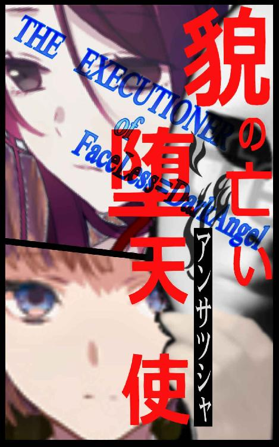
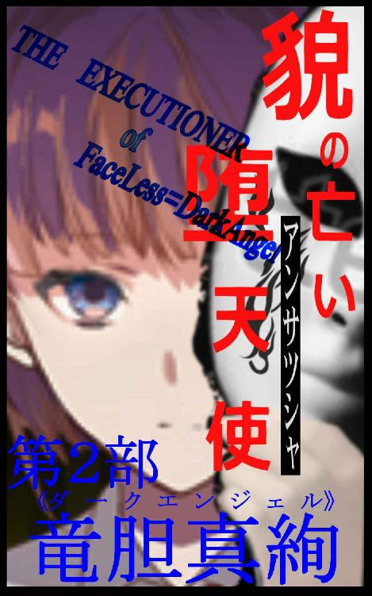
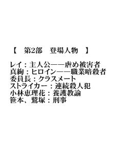

| 貌の亡い堕天使（アンサツシャ）: THE_EXECUTIONER_of_FaceLess=DarkAngel | |
| 蓮崎文々 | |
| 個人 (2017) | |
| Tags: | 蓮崎文々（れんざき あやふみ） |
本作品は縦書き表示（文庫本Ａ６サイズフォーマット）での閲覧を推奨します。
横書きでの表示にすると、書式が崩れるおそれがありますので、ご承知置き願います。
縦４３文字×横１８行を１頁（ページ）としてレイアウトを組んでいます。
フォントはあまり大きくしない方がよろしいでしょう。
ご使用のビューワまたはブラウザによっては、表示に差異が生じる場合があります。
作者のホームページは→ https://bunbun-rennzaki.tumblr.com/
目の前には、骸骨が置かれている。
保存状態がいい。薬物処理されているキレイな頭部の白骨だ。
獣骨ではなく人骨――人間の頭部である。
ついに真実に到達した、と少女は苦い吐息をつく。
委員長、と皆に通称されている彼女は、その骸骨を見て、静かに言葉を漏らした。
﹁......、――真犯人はアナタだったのね」
連続殺人事件の、と。
骸骨が置かれている机の対面に座る相手は、挑発的に両目を眇めて委員長を睨み付ける。
紛れもない敵意だ。委員長はその視線を真っ向から受け止めた。
時代を超えた呪いの様な殺人の連鎖。
それは、すれ違いの愛ゆえに起こった、咎と罪に塗れた悲劇だった。

【ＣＯＮＴＥＮＴＳ：目次】
◆ プロローグ ペルソナの心
◆ 第１部１章 竜胆真咲
◆ 第１部２章 フェイスレス
◆ 間幕 首なし死体
◆ 第２部１章 竜胆真絢
◆ 第２部２章 ダークエンジェル
◆ エピローグ 眩い光の下で
◆ あとがき
この作品はフィクションです。
実在の人物・団体・事件などには、いっさい関係ありません。
人は、誰しも心に仮面を被っている。
本心を仮面（ペルソナ）で隠す。
彼女も僕も、そして彼と彼女も、みんな本心を隠していたのかもしれない。
四人が揃った、最後の舞台まで。
いや、四人の他に、一人だけ素直な少女がいたのを思い出す。
そして僕が知らずに傷付けていたあの子は、どうだったのだろう？
僕はもうすぐ消滅する。この世界から消え去ってしまう。
残された二人と一人の運命は、果たして......
けれど、消え去ろうとしている僕が語れるのは、ここまでである。
――これは【仮面】に宿る﹃僕』という霊魂が見守った、とある暗殺者の少女の物語。
◆
〝......さあ、仕事の時間だ。君は今から一機のキリングマシーンとして起動する〟
これが彼女の起動呪文である。
僕が囁くこの呪文によって、彼女は少女から殺戮人形へと思考が切り替わるのだ。
時刻は深夜二時を少し回った頃。
この場には、彼女のターゲット――すなわち暗殺対象が誘き出されていた。
殺戮人形と化した彼女は、冷徹な双眸で獲物を見据える。
獲物――殺害相手は連続殺人を侵している異常者。つまり殺人鬼。
そして彼女はこの殺人鬼を人知れず仕留める為に派遣された刺客――暗殺者である。
所属する国家機密組織【伊弉冉機関】に消去を命じられた殺人鬼は、まだ少年だ。
鍛え上げられた屈強な上半身は、月光のみの宵闇においても筋肉の凹凸を主張している。スリムジーンズを膨らませている両腿も、太過ぎず、しなやかなパワーとバネを誇示していた。その顔付きは肉に飢えた獣そのもの。しかし残酷ではあっても理知的な顔つきだ。
対して。
暗殺者である彼女は、十代半ばのうら若き少女。
黒い衣裳に黒い髪。顔は白と黒のツートンカラー。
名前は、ない。
暗殺者としてのコードネームと、任務ごとに与えられる偽名と身分だけだ。
少女は仮面――﹃僕』を被っている。
マスケラ、と呼ばれる仮面舞踏会や儀礼用のマスクだ。
美少年めいた氷のような彼女の表情は、戦闘時には僕という仮面の奥に仕舞われる。
彼女は黒い衣裳に細身の躯を包んでいる。しかし細身とはいっても、鋼線のように鍛え上げられた無駄の無い身体だ。むろん、女性らしい丸みを失っているわけではない。強さと美しさをバランスよく兼ね備えたナチュラルな肉体なのである。
彼女は必要最小限の筋量で最大限の筋力を効率よく発揮できる。最先端のドーピング技術と、永い年月をかけてそのように身体を造りあげ、訓練されている成果だった。
戦闘――仕事が始まる。
先手をとって彼女が駆け出す。その姿は闇夜に溶け込む黒い疾風だ。
ぐん、と圧倒的なスピードへと加速していく。軽量と規格外の筋力の相乗作用である。
相手の少年が反応した。
流石に彼女が派遣されるだけの事はある。彼は左ジャブをカウンターで狙う。彼女はそれを避けるが、相手は避け際を狙った右膝蹴りを繰り出した。絶妙なタイミングだ。
咄嗟に右手でカバーして膝をキャッチする彼女。
ヴゥぁ。床面から誇りが舞う。体重差がものをいって、彼女の両足が浮いてしまった。
返しの左フックがくる。
しかし空中に浮かされながらも、彼女は相手の左フックに左腕を搦めて、手首を取った。
そのまま膝を離した右手を使い――、ゴキン!!
骨と腱が捻れる耳障りな音が響く。逆関節で相手の左肘を破壊したのだ。
と、着地は同時であった。
するり、とポジショニングが巧妙に入れ替わる。
あっと言う間に漆黒のレザーグローブを嵌めた左手が、相手の口元を塞いで歯茎を掴み、声を出させずに壁に押し付けた。華奢な細腕からは想像できない、圧倒的な膂力だ。
右手には、いつの間にかナイフがある。
左手から右手への繋ぎは、一秒の半分以下であった。
逆手に持った右手のナイフの刃が一閃。
無慈悲に喉元を真一文字に薙いだ。
動脈切断。同時に左手で相手を地面に引き倒して、斜め後ろにバックステップする。この動作は反撃を用心してというよりも、返り血を浴びない為である。僅かに数滴、顔――仮面に掛かったが、問題ない。
それで仕事は終わりである。
壊れた人形のように突っ伏した殺人鬼から、勢いよく赤い血溜りが広がっていく。
月光が届かない暗い裏路地が、紅い池と化す。
死んでいる。標的は完全に事切れていた。
彼女は仮面（僕）越しの一瞥だけで標的の絶命を確認すると、躊躇なく踵を翻し仕事現場から立ち去る。表通りには【伊弉冉機関】の運び屋が待機している。彼女の送迎と死体運搬で役割分担した二台の車両が。
微かな足音すら残さない歩みは、機械というよりも亡霊のようだった。
１
――自動販売機の陰には、グシャグシャに破壊されている人間が横たわっていた。
ソレは夕日の差し込みと血液という、二種類の紅で染まっている。
悲鳴さえあげられずに、学校制服姿の少年と少女は、ジリジリと後ずさりしていた。
その光景を、少年――黎（れい）は理解できない。
一体コレはナンナンダ？
人間を放棄している、この不自然極まりない歪なヒトガタは。
恐怖という以前に拒絶。
圧倒的な異世界感と背徳感。罪の世界に閉じ込められた様な、狂った孤独感であった。
時刻は夕刻。場所はホテル街の中にある死角だ。
煤けたホテル街を人目を気にしながら歩き回っていた。けれど二人は休憩するラヴホテルを物色していたのではない。
見失った人を探していたのだが、まさか死体を発見するなんて――
（こ、こ、これって、最近話題になっている連続殺人）
ニュース番組を賑わしているだけではなく、インターネットでも有名になっていた。
地方都市であるこの折宮市には、《ストライカー》と呼ばれる連続殺人犯が出没している。
そして連続殺人は継続中だった。
助けを期待してレイは隣の少女を見るが、彼女は自分以上に呆然自失状態だ。
二人の頭からは通報という二文字は消えている。
別の足音。
アスファルトの表面を削るような足音が、不気味に響いた。
そして近づいてくる。
助けが来た。そんな思いで、レイと連れの少女は足音の方へ視線を巡らせた。
中肉中背の若い男性が立っている。距離は十五メートル程あるか。詳細は暗がりなのでよく見えない。ただそのシルエットは気高い肉食獣を想起させた。
シルエットだけで、鍛え上げられている体躯だと判別できる。スキンヘッドに近い短髪は、明るい金色に染め上げられている。
そして両拳にはバンデージが石膏のように巻かれていた。
これはフツウのヒトじゃない......ッ!!
レイは目が合う前に男から目を逸らした。それは彼の隣で立ち尽くすクラスメートの委員長、小林恵理花も同じである。
助けを求めたいが、本能が訴えている。彼に助けを求めても――無駄だと。
再び思考が停まってしまう。一歩も動けない。悲鳴を上げる事さえも不可能だ。
自分は捕食されるだけの草食動物。だから大人しく肉食獣が去るのを待つだけ。祈るだけ。
絶望する。それがこのセカイでの掟なんだ、きっと。
ザッ、という鋭い足音。
そして連続して響いて大きくなってくる靴音。リズミカルで速い。
明らかに疾走音だ。
軽快なステップで男はレイたち目掛けてきた。あっという間に距離が詰まる。
逸らしていた視線が合う。ギラリとした双眸は、レイの角膜に強制的に焼き付けられた。
脇に引き絞られた男の右拳が、猛烈な勢いで空気を裂いて弧を描く。
その拳――右フックが、自分の顔面に飛んできている事を、レイは認識できない。
ドォゴッっ!! 鼓膜を引っかかれるような軋んだ激突音。
拳がレイに炸裂する直前に、鳴った。
踵と拳がぶつかり、鳴った。
すらりと伸ばされた白い足が、紙一重で男の右拳を塞き止めたのである。
――彼女、だった。
一緒にいる委員長ではない。同じ制服を着ているが、違う少女だ。
見失って探していた人が、まさか、こんなカタチで戻ってくるなんて。
レイと男の間には、いつの間にか彼女――竜胆真咲が割り込んでいた。あの夕暮れの放課後に見た、顔のない仮面を被って。
ブぅアォッ！ 空気が巻かれて唸りをあげた。
表情のない仮面を被った少女は、男の拳を右の蹴りで受け止めると、すかさず切り返しての後ろ回し蹴りへと繋げたのである。
しかし相手は素早くバックステップして躱す。淀みない熟達した動作だ。
ここまで、ほぼ一瞬の攻防。
少女は背中でレイと委員長を庇った。レイは呆けて動けない。委員長も腰を抜かしている。
彼女と男は睨み合う。
そして。
戦闘――否、戦争とも形容できる激しい殺し合いが開幕した。
...
﹁竜胆真咲です。皆さん、よろしくお願いします」
出逢いは、転校初日の挨拶だった。
朝のＳＨＲである。
彼女が黒板の前で発した第一声。全然よろしくして欲しくなさそうな、冷め切った口調。その声音に秘められた暗い諦念を感じ取ったのは、教室内にいる人間ではレイだけだろう。
真咲は可愛い子で、美人だ。
なにしろ真咲が教室に入った途端に、クラス中のあちこちから溜息が聞こえた程である。
艶やかな黒髪にはややクセがついている。長さはセミロングといった具合か。目鼻立ちが通っているスッキリとした顔は、高校生というよりも大学生といった雰囲気かもしれない。スラリと伸びた手足は細く、そして姿勢が良いのだ。
カッ、カッ、カッ、カッと小気味よい音と共に板書された文字はとても流麗だった。真咲の背筋と同じく凛と一本筋が通っている。
思わず呆けてしまっていた。レイは無意識に見惚れていた。
後になって思えば。
一目見ただけで、彼女の虜になっていたのかもしれない――
◆
この出逢いは、僕にとっては﹃神様がくれた』大切なの宝物だ。
それまで僕の人生は不幸ばかりだった。
もしも彼女に出逢えなかったら――と思うと。
僕はきっと虐めの日々に耐えられなかっただろうから。心が壊れていただろう。
あの時、日常の地獄を忘れてしまった程に、彼女は綺麗だったんだ。
綺麗、だったんだ――
２
レイは今日も手酷く虐められた。
虐めはレイの日常だ。
中学を卒業して高校に進学しても、彼の境遇に変化はなかった。
少しは何かが変わるのでは？ なんて淡く期待したけれど無駄だった。学校という箱のラベルが中学から高校にすげ替わっただけで――彼の世界は同じまま。高校に入学して一年が過ぎ、二度目の秋がきても全てが同じで、不変であった。
世界はレイにとって悪意だけだ。
弱者という名の生贄でしかない。
﹁......ご、ッふ」
軽く吐いた。汚物が落ちる先は、洗面台ではなく便座の中だ。血と胃液が混じったマーブル色の水。血は内臓のダメージからではなく、切れた口の中に溜まったやつ。
攪拌していく自分の血を見ながら、レイはぼんやりと思う。
（ああ、今日は特に殴られたなぁ......）
男子トイレの洋式便座にもたれ掛かっている。頭を力なく突っ込んだままの姿勢だ。どれだけ殴られて蹴られたのか覚えていない。
レイを虐める空手部のグループは、この界隈でも有名な札付きで、そして狡猾だ。
彼等はレイを便宜上だけ空手部に入れている。先程まで彼が被っていた暴力も、彼等いわくこれは﹃屋外での実戦稽古』との事だ。空手部顧問も担任教師もそう認めている。
学校関係者の話では、どうやら虐めなんて存在せずに、彼だけが虐めだと勘違いしているらしい。自分以外の人が、みな口を揃えてそう主張しているのだから、きっと自分が間違っているんだろう。つまり被害妄想ってヤツだ。だって世界中でみんなが間違っていて、自分だけが正しいなんて、それじゃまるっきり狂人じゃないか。
（はははははは――......、、）
心の中で笑うしかない。
現実にはレイが笑われている。
心の中に響く乾いた諦笑と。
耳朶にゆんゆんと反響する狂笑。
正しい世界は﹃間違っている彼』に厳しい。
茫漠と自覚する。
壊れた人形のように、トイレのタイルに這いつくばっている惨めな少年を。赤みがかった便器の水面に映る傷だらけで腫れ上がった顔は、死体のような、あるいは仮面のような......
――まるで﹃生きた死体』だ。
レイは日々無力にいたぶられる自分を、そんな風に思っていた。
...
転校生である真咲は、レイの大切な仲間だ。
いや、それは第三者的には正確な表現ではなく、彼が勝手に心の中でそう解釈しているに過ぎない仲間関係である。仲間といっても一緒にいるという関係ではなく、同じカテゴリに分類される、という意味の仲間に過ぎない。
つまり――虐められ仲間。
よって共感とか自己投影とかに近いのが実態である。
共に虐めの被害者だとはいっても、二人仲良く一緒に虐められているのではない。
レイは男子に。そして真咲は女子に。
真咲が虐めに遭っている理由は、男子であるレイには分からない。男子と女性では虐めでも世界が違うからだ。けれど推察するに、彼女が虐められている理由は、どうやらその際立った器量と、容姿に反比例している愛想と社交性にあるようだった。
つまり真咲は転校初日から、周囲に溶け込んだり協調しようという意志をまったくみせていない。というよりも、積極的に周囲との関わりに距離を置いていた。
女子の虐めだけあって、流石に表立った暴行は受けていない様子だ。しかし、女の虐めは男の虐めよりも陰湿である。即時的で分りやすい嫌がらせや暴力を受ける方が、ある意味、気楽かもしれない。
レイと真咲は、互いの虐めを介して実際に接する事はなかったけれど、それでも彼は勝手に胸の内で彼女に仲間意識を抱いた。自己満足でも一向に構わない。認識できる身近に同じ境遇の者がいるというだけで、レイの孤独感と絶望感はずいぶんと和らいだ。
気が付けば。
レイの目線と意識は、常に真咲を追っていた。
恋愛感情とはちょっと違う。
彼女は虐められている時以外は、常に一人でいる。
そう。自分と――同じ。同じなんだ。
レイは真咲に心の中で語りかける。
君がいるから僕は独りじゃない。
僕と君は同じ世界の住人なんだ――と。
３
今日の放課後もレイはトイレに連れ込まれ、殴る蹴るの暴行を受けた。
連中が朗らかに談笑しながら立ち去った後でも、レイはしばらく動く事ができなかった。痣だらけの全身が激痛に苛まれている。
......どれくらいの時間が経ったのだろうか。
ようやく動けるだけ回復した。痛みはまだまだ強烈に自己主張しているが、これくらいならばもう動く分には問題ないと、経験上わかる。彼等も重傷にならない程度には手加減している。心根は腐っていても、一応はそれなりの腕をもつ格闘技者だ。
ドアが半開きになったトイレの個室で、レイが寝そべったままでも、用を足しにきた生徒は誰一人として気にもかけない。たまにゴミをみるような蔑視を向けられるだけである。
感情を殺したレイは、機械的に足を引きずって廊下に出た。
すると偶然、真咲も隣の女子トイレから出てきて、ばったりと鉢合わせた。
意図せずに互いの目が合う。
真咲の瞳にレイは引き込まれる。唇がひとりでに動いていた。
﹁――君は大丈夫だった？」
言った彼自身が一番驚いていた。何故ならば、すぐに視線を逸らして無言のまま立ち去るのが、レイにとっての普通の対応であり日常だから。
理由は、きっと真咲の様子。
虐めに目聡いレイには分った。真咲の髪型と制服の微かな乱れは、たぶんレイと同じくトイレの中で乱暴された結果だ。
間があった。気まずい間である。
その間で、レイは真咲に無視されたんだ、と理解する。失望はない。こんなオチが自分には相応しいのだから。ただ、余計な真似をしてしまった、という後悔は強かった。
﹁貴方の怪我の方がよほど深刻に見えるけど？」
予想に反して、彼女が返事してくれた。
今度こそ本当にレイは驚く。
そして、これが真咲と交わした――初めての会話だった。
彼女の声音を思い出す。転校初日の挨拶の時は緊張のために、あんな素っ気なく平坦な声色なんだと思っていたけれど、今の言葉も、表情のない声音だ。返事が嬉しくて、レイは弾むような口調で答えていた。
﹁いや、こんなの平気さ。慣れっこになっているから。何度も見ているだろう？」
虐められている事を得意気になって自慢するなんて、とんだ浮かれっぷりだ――と、彼はその晩に布団の中で自虐する事となる。
けれども、これは神様が﹃不幸で可哀相な自分』に気まぐれで恵んでくれた、ちょっとした慰み――シアワセのように、この時のレイには思えた。
しかも一瞬でも充分だというのに、そのシアワセという奇蹟にはまだ続きがあった。
真咲の手がレイへ伸びる。
﹁そう。でも怪我に慣れているといっても、ちゃんと手当てはした方がいいわ」
レイの頬に手が添えられた。白くて細い指だ。
﹁ここの傷。腫れだけじゃなくて少し深めに切れている。ばい菌が入る前に、キチンと消毒した方がいいわよ」
﹁あ、本当だ」
怪我の痛みが日常になっていて、気が付かなかった。いや、気が付いたとしても治療なんてしない。放っておいても大概の怪我は勝手に治る。それに怪我を手当てしている時が一番惨めだ。だからレイは虐めによる怪我をできる限り無視していた。
真咲の視線がレイを哀れんでいる。
認識した傷の痛みが、レイに現実を思い出させて、高揚した気分が急激に冷めていく。
﹁でも、大丈夫だよ。このくらい」
レイは下を向く。
それで会話を打ち切ったつもりだ。もう話題なんてない。
﹁だめ。傷口が汚れている。これは放っておくと膿むわ」
﹁じゃあ、後で消毒しておくよ」
﹁いえ、急いだ方がいいわ」
不意打ち気味に真咲がレイの手を引いた。不思議とレイは逆らえない。
繋いだ手の平に熱が灯っていく。あまりに柔らかい感触に、レイは陶然となる。
行き先は保健室だった。
それを悟った瞬間、レイは躊躇する。断ってしまいたい。
しかし、そのまま連れられてしまった。
保健室で彼等を出迎えたのは、保健医の御影だ。
去年赴任してきたばかりらしい新人で、年齢も若い。どう見ても二十代の半ばくらいだ。しかし、医者であるので実際はもっと年長かもしれない。医大を出て医師免許を取得している時点で、最年少でも二十五歳なのだから。
御影は妖艶というか、不敵な人というか、どこか不思議な印象だ。ニヒルで不思議な影がある。レイが思うに、御影という名字はまさに彼女にピッタリだ。下の名前は卑弥子といい、こちらも似合っている。
﹁おやぁ......、久しぶりじゃないか少年」
ニヒルな口調に変わりはない。
この保健医はレイを﹃少年』と呼ぶ。しかも、どこかからかったような独特の調子で。
久しぶりの御影は、やはりいつもの御影のままだった。
レイが抱えている気まずさなんて、どこ吹く風といった態である。
﹁あぁ～～あ、こりゃまた酷い顔だね。ホラこっち来なさい。消毒くらいはしたげるから」
真咲の手前、レイは大人しく勧めに従って丸椅子に腰掛けた。台ネジが緩んでいるのか、簡単にクルクルと回りそうだ。
正直、今さらここで世話になるのは、居心地が悪すぎる。
御影はガーゼに液体を染み込ませてレイの傷口を丁寧に拭っていく。ちょっと染みた。早く終わらせて欲しい。
﹁んじゃ、ちょっと染みるけど我慢ね」
御影は汚れたガーゼをゴミ箱に捨てると、今度は乱暴にスプレーを吹きつけた。
﹁い、いたたっ！」
﹁だから染みるって言っただろうに。消毒してんだから。情けない声を出さずに、男なら黙って我慢しろ」
やや強い口調での注意。最後にバンドエイドで仕上げだ。
﹁ほい、お終い。スプレー跡を拭っちゃダメだよ。これパウダー状に固まって傷口を保護してくれるタイプだから。結構高いんだよ。使用有効期限が切れ掛かっていなけりゃ、赤チンで済ましているところだ」
レイは御影の笑顔に付き合える気分ではない。この程度の応急処置だったら、家に帰って救急箱の中を漁って自分でできる。
﹁ほらほら、用事がないのなら帰りな。連れてきてくれた彼女が待っているよ」
﹁彼女じゃありません」
即座に否定していた。もしも入口に控えている彼女に聞かれたら誤解されてしまう。
﹁そうなのかい？ だったら是非、彼女になってもらいな。そうすれば少年の心の負担も少しは軽くなるかもしれないよ。少年は結局あたしには心を開いてくれなかったからね」
﹁そんなつもりもありません」
レイはそう言い残すと、勢いよく立ち上がる。
保健室の入口に立ったままだった真咲の脇を素早くすり抜けて、逃げるように帰った。
◆
......この日の、彼女とのやり取り。
思えばこれが彼女と僕の﹃切っ掛け』だった。
何年経ったのか正確に覚えていない今でも、あの時の会話を僕は鮮明に思い出せる。
傷の痛みさえも。
日々の虐めは地獄だったけれど。
その虐めがなければ、僕と彼女はきっと他人のままだった。
４
鷲塚は呆れ半分、怒り半分で死体の様子を感想した。
﹁今度もまた見事な手口だな、こりゃ」
まだ現場検証が行われている最中、鷲塚刑事は遺体が運び去られるのを見送ると、おもむろに煙草に火をつけた。ふぅ～～、と大きく紫煙を吐き出して空気に溶け込む様を眺める。その一瞬で心が安らぐ。
チラリと視線を遠くの公衆トイレへ移す。
鬼の巡査部長――で通っている現場の権威としては、相棒に火をつけて欲しかったのだが、生憎と新人刑事である相棒は、死体を見てトイレに駆け込んでしまった。そして、なかなか戻ってこない。
（ま、俺も一番最初のヤマじゃ吐いたっけ）
憤慨するどころか、むしろ若き日を述懐する。
﹁す、すいません。みっともないところをお見せしてしまって」
フラフラになりながら顔面蒼白で戻ってきた新人刑事――笹本良は低姿勢で平謝りだ。まだ三十代前半の巡査部長。フィクションと違って二十代で刑事になれる者はほとんどいないから、刑事としてはかなり若い。ただ既に階級は自分に並んでいる。結婚も早かったので、娘は小学生らしい。実は、彼の嫁が警察官僚と繋がっているのだ。
﹁いいって。ンなの気にするな」
ヤクザも真っ青になる岩のような強面に、不器用な笑みを浮かべる鷲塚修二。
捜査本部の意向ギリギリのラインでスタンドプレーに走る事がある、所轄刑事の鷲塚であるので、どんなに腰抜けで役立たずであろうと、上層部に身内がいる本部刑事とは上手くやっていく必要がある。警察は軍隊と同じで階級社会、封建社会。自分の現場での権力を刷り込みつつ、上手くシンパとして人脈に組み込まなくてはならない。要するに人心掌握は大切という事だ。
先輩という立場を笠に着たところで、後に階級という権力を笠に着返されるだけだ。
それに鷲塚は自分が定年まで今の巡査部長から昇進する事はないと確信していた。昇進試験に時間を割く予定はない。その時間を全て現場に回したいのだ。
そうして積み重ねた数多くの目下の信頼は、少数の目上の権力に劣らない影響力を持つ。それは刑事としての誇りであった。
﹁どうだ？ 気分直しに一本吸うか？」
恐いという不本意な評価の愛想笑いを向けて、煙草を勧める。
﹁あ、いえ。せっかくですけど、自分は煙草は吸わないもので」
この新人は健康に悪いとかいって煙草を吸わないのだ。煙草の美味さを知らないとは、なんとも可哀相な話である。とはいえ、喫煙を強要するつもりもないので、鷲塚は肩をすくめて愛用のシガレットケースを引っ込めた。
気を取り直して仕事の話を振る。
﹁お前は、どう見るよ？」
﹁これもホシ（犯人）は一緒なんでしょうね」
﹁間違いないだろう」
﹁模倣犯の線は？」
﹁こんな真似を模倣できるヤツがそうそういるとは思えない」
遺体は滅多殴りされていた。つまり撲殺だ。
しかも、一般的な撲殺のイメージよりも遙かに凄惨であった。
内出血や腫れだけではなく、あちこちが粉砕骨折している歪な肉人形にされていた。
打撃痕などの詳しい検死の結果を待つまでもない。
一度見れば、捜査官ならば誰でも同一犯と断定できる。
この折宮市を恐怖で賑わせている――連続殺人鬼の仕業だ。
通称《ストライカー》。
その由来はサッカー選手のポジションではなく、グラップラー（寝技系）に対義する打撃系の格闘家からきている。
﹁怨恨の線はもう完全に消えましたね」
﹁俺は始めから違うと思っていた」
﹁ええ。そう言っていましたね」
﹁武器を使った形跡もないし、背面や後頭部への打撃も見られない。つまり不意討ちって線は極めて考え難いな。怨恨だったら背中から刃物か鈍器で狙うだろ」
﹁そうですね」
﹁加えて被害者はまたもや格闘技経験者だ。身元確認するまでもなく体格と肉付きを見ただけで、一般人よりも自衛能力に優れているのは瞭然だ」
これまでの被害者たちは、いずれも例外なく高い格闘能力を誇る経験者ばかりだった。有段者やプロライセンス保持者といった猛者ばかりだ。
ここまで続くと、犯人は意図的に強い獲物を狙っているとしか考えられない。
金品の略奪も確認できていない以上、一種の愉快犯なんだろうが、ここまで何人も殺して今までアシがついていない点を考えると、相当な知能犯でもありそうだ。
それに加害者のものと推測可能な髪の毛一本、血液一滴すら鑑識が発見できないという事は、すなわち無傷で相手を倒している証左だ。相当に戦闘能力、特に防御技術が高いと断定せざるを得ない。つまり単純な喧嘩屋ではあり得ないという事である。
ゆえに犯人は捜査本部で《ストライカー》と名付けられた。
ネット上でも同じく《ストライカー》として話題になっている。まだまだインターネットは発展途上であるが、かつての様にマニア用の情報ラインではなく、携帯電話の普及と高性能化に追従して、一気に大衆スタンダードになりつつある。
笹本は溜息をついて頭を振った。
﹁しっかし犯人はナニ考えて、こんなリスクの高い殺人をしているのでしょうかね？ 証拠云々よりも、返り討ちに遭う可能性だって低くないですよ」
人口密度の低い、田舎といっていい地方都市にしても、大胆に過ぎる犯行である。
﹁さぁな。ソイツは捕まえてから、じっくりと聴取すればいいさ」
鷲塚は泰然と言った。そして煙を吐く。
どうせアレコレと推察したところで、犯人がマトモな奴じゃないのは確かなのだから。
これも長年の刑事の勘だった。
...
﹁知っている？ また《ストライカー》の犠牲者ですって」
レイが教室に入り自分の席に座ると、待ち構えていた様に委員長が話し掛けてきた。
またか、とレイは嘆息する。自分などに構わず、放っておいて欲しいのに。
最近は特に自分に構ってくる。
﹁興味ないよ。どうせ、そんな時間に僕は街を出歩いたりしないし」
推定されている犯行時刻は夕刻から深夜だ。
﹁へぇ～～え。犯行時刻を知っているくらいには興味あるんじゃないの」
そう指摘されて、レイは渋面になった。
﹁ニュースとかで嫌でも耳に入ってくるからだよ」
ガラ、とドアが引かれる音が響く。
真咲が教室に入ってきた。
登校時間はいつも同じ。几帳面な程にだ。レイは自然と真咲の方を見ている。
ち、という間近の舌打ちは、レイには聞こえなかった。
真咲と視線が合う。
愛想笑いを浮かべるレイであったが、すぐに真咲は視線を逸らして自分の席に向かった。
女子達のヒソヒソ声が真咲に降りかかる。しかし真咲は綺麗に無視だ。
男子達は無関係を貫いている。すでに真咲に対する虐めも学内で有名になっている。レイと同様に、学校側は何の対策も講じないが。
気が付けば、委員長も自分の席に戻っていた。
...
ガチャン。大きな音を立てて、ベンチプレスのバーがセット用の支柱に戻る。
二〇〇キロの負荷を、十五回×三セット。
筋力トレーニングはこれで終わり。気だるげにベンチから起き上がる。次はロープスピッキングだ。それが終われば、シャドーとサンドバッグ打ちである。
合計で四時間以上かけてメニューを消化していく。途中で軽食を摂取して、体内の炭水化物の低下による筋肉の分解を防ぐのだ。そして水分と蛋白質も補充する。
裸の上半身から汗が蒸発した湯気が立ちこめる。
殺人鬼《ストライカー》と警察から形容されている者は、潜伏先で身体を虐めていた。
常識を超えた狂気めいたトレーニング。
明らかにオーバーワークであるが、その疲労は違法薬物によって緩和させる。
――破壊だ。徹底して全てを壊してしまいたい。
そんな衝動に駆られた末のトレーニング地獄であった。
殺人犯として警察の目を警戒しなければならないので、ロードワークができないのがネックとなっている。スタミナ養成の為、とにかく徹底して身体を絶え間なく動かす。そうする事で、長距離走や短距離ダッシュに劣らない心肺負荷と有酸素運動を行える。
﹁偽物ばかりだ」
殺人鬼は呪詛を吐き捨てた。
この世界は狂っている。いや、狂っているのは自分だという自覚はある。
本物を知りたい。
知っているのはフェイクばかり。与えられた偽物ばかりだった。
知りたい。体感したい。
何もかもが信じられない中、自分が信じるに足りる――絶対的なリアルを。
リアルという名の神を。決して揺るがない絶対神を。
...
それは、ほんの少しの偶然と好奇心が一致した結果だった。
窓の外の世界では、運動部が秋期の大会本番にむけ、熱心にグランドで練習している。その勇ましい掛け声が窓ガラス越しに聞こえてくる。
レイはたった一人で教室にいた。
自分のではなく真咲の机に着席して。
その行為はここ三日ほど続けている。
続けているというか、どうしても止められなかった。
軽い音がした。
鞄が落ちた。机に掛けてあった鞄の紐が切れたみたいである。縫製がよほど強くないと机に掛けた鞄の吊るし紐はたいがいダメになってしまう。針金をＵ字形に曲げて溶接しただけのフック部が細くて粗悪なのだ。
レイは慌てて拾おうとした。
鍵は掛けていないようで鞄の口は開いてしまい、中身が床に散らばっている。流石に財布などの貴重品はない。教科書やノートばかりだ。女子達に虐められているとはいえ、主に無視や陰口がメインで、所持品にまでは直接手は出されていないようだ。前に一度だけ、所持品に手を出した女子がいたと噂で聞いているが......
ふと、奇妙なモノが目に映った。
薄い卵型の板状のナニか。
明らかに弁当箱ではない。真咲は弁当を別の巾着に入れている。
そして、教室には不似合いなモノ。
ソレを恐る恐る手にしてみた。
――それはシンプルな仮面。
楕円形で人の顔面をすっぽりと覆うタイプだ。プラスチック製のようである。両目と鼻の穴の部分だけ穴が空けてあり、口の部分は空いていない。というか、マスクには口がない。のっぺらぼうで左半分が黒一色。右半分が白地ベースに、赤で模様が描かれている。その赤い模様は神秘的というよりも呪術的にみえる。
これは、仮面舞踏会や儀礼に使うマスケラという物だろうか。
﹁......なんで、こんなモノ」
被る以外に使い道なんてない。つまりこれは真咲が被るのだろう。でも、どうしてこんな不気味な仮面を被るのだろうか。前の学校で演劇でもやっていたのか。
こんな物が彼女を虐めている女子に見つけられでもしたら......
――どくん――。心臓が高鳴った。
どくん、どくん、どくん、どくん、どくん。心臓が跳ね、鼓動が加速していく。
（彼女が......コレを被っている。彼女がッ）
そう認識した瞬間。
マスクの唇の裏地部分に意識がいってしまうのを、レイはどうしても止められなかった。
（ここに、彼女の唇が......）
触れているんだ。
おい、止めろよ。こんなのまるで変態・変質者じゃないか。おい、止めろよ、僕。
しかレイの手は、本人の意志を離れて別のナニかに操られるように、仮面を自分の顔へと近づけていく。そして、ゆっくりと仮面の裏側との距離は――......
﹁――なにをしているの？」
冷たい声音に、レイは反射的に仮面を顔から引き離した。
振り返ると、真咲が目と鼻の先にいた。
表情は手にした仮面みたいに平静だったが、いいようもない怒りが伝わってくる。
レイの思考は真っ白になる。すぐに言い訳をひねり出さなければならないのに、何にも浮かばない。素直に謝ることすらできない。絶望がレイを侵食していく。
そんなレイの様子に呆れたのか、あるいは哀れんだのか、真咲は浅く溜息をついた。
﹁そういったモノに興味あるの？」
﹁う、うん！ 実は」
浅薄にも飛びついたレイは、何度も首を上下に振った。
真咲は溜息をもう一度ついた。今度は深々と。
﹁じゃあ、なにか仮面についての知識を披露してちょうだい」
当然ながらレイは固まった。何も言えるはずがない。目頭が痛いくらいに熱い。いっそ逃げ出してしまいたくなった。
﹁顔を上げて」
﹁うん」
真咲は真剣な眼差しを向けて、言った。
﹁嘘や誤魔化しはキライだわ」
﹁ゴメン」と、素直に謝った。謝れた。
と、そこで真咲はクスリと相好を崩した。
ドキッとした。初めてである。彼女のこんな表情――笑顔なんて。
﹁でも、ちゃんと謝れたから許してあげる」
﹁う、うん」
﹁素直に謝れるって、とても大事だから」
ポロリ、と涙が一筋目尻から零れたけれど、そんなのは全く気にならない。
そして二人で落ちた鞄の中身を拾った。
最後に彼女は、少しはにかんだ。
﹁ありがとう。拾ってくれて」
その一言はレイの胸に温かく染み込んだ。
◆
......その日。
僕と彼女は初めて一緒に下校した。
駅前の交差点まで一緒に歩いた。
少し肌寒い秋空の下、会話は続かず、ただ並んで歩くだけだったが、充実していた。
だって、こんなのって、ちょっとした青春じゃないか。
虐めしかない僕の高校生活に花咲いた、小さい小さい青春の時間。
彼女と一緒にいるだけで、僕は満足だったんだ。
そう、幸せだった。
５
――アイツと竜胆が怪しい。
すでに熱烈にデキている。一緒に帰って部屋で猿のようにヤッている。
そんな下品で下世話な噂が、レイを虐めている連中から立ちこめて、そして、あっという間にクラス中に広がった。
出所は不明だ。あの日の下校を誰かが目にしたのか、あるいは単に下世話な話題が刺激として欲しかったのか。レイと真咲の噂は盛大に尾ひれ背びれが付きまくっていた。
実際は、あの日から丁度十日経つけれど、レイと彼女の距離はそのままで、一緒に下校したのもあれっきりである。
﹁ちょっといいかしら？ 二人共」
一時限目の休み時間だ。
委員長がレイを少し高飛車かつ神経質な調子で呼びつけた。
意外だったのは、レイだけではなく真咲も一緒に呼んだ事である。
レイの記憶が確かならば、委員長と真咲に接点はない。委員長が属している女子グループと真咲を虐めている女子達は別のはずだ。
そして真咲と委員長は、互いに全く言葉を交わしていない。
レイは素直に従った。
真咲も一緒に付いて来た。こんな些細な事でも、レイと彼女の噂を増長するのだろう。それでも周囲の不躾な視線から一時での逃れられるのだったら歓迎だ。
﹁......なに？」
意識していなかったが、レイの声色には警戒心が滲んでいた。
そんなレイの固い声色に、委員長が少し怯む。
﹁いえ、その、ええッと......。最近よくない噂が聞こえてくるから。二人について」
歯切れの悪い言葉に、レイは辟易する。
けれど、委員長らしくない。真面目で潔癖とはいっても、そんな下世話な噂を信じるような性格はしていないと思っていたのに。
すると、それまで無言だった真咲が初めて発言した。
﹁学校側から探りを入れるように入れ知恵でもされたの？」
その詰問に、委員長が顔をしかめる。
そういう事情か。レイも表情を曇らせた。
どうしてだ。虐めに対しては、見て見ぬふりをするというのに。
﹁別に、先生にってわけじゃ......」
後ろめたそうに言い淀む委員長に、レイは同情さえ覚えた。
噂は噂に過ぎない。。現実は違うのだと、さっさと教えてあげよう。それで委員長の仕事もつつがなく終わるし、上手くすれば噂が消えるのが早くなるかもしれない。
だが、レイが誤解を解く為の返答をするよりも一瞬だけ早く。
﹁ええ。私と彼、付き合っているわ」
なんと真咲が答えてしまった。それも肯定の言葉を。至極当然といった顔で。
レイは唖然となった。思わず彼女を見る。真咲は平然とした表情だ。少なくとも冗談を言っている顔ではなかった。さらに彼女が言い重ねた。
﹁仮に噂が嘘だとしても、今から付き合い始めれば、噂の真偽など関係ないわね」
まるで喧嘩腰だ。
その彼女の言葉に、委員長はキッとレイと真咲を交互に睨むと、無言で踵を返した。そのいかり肩が不機嫌さを主張している。
レイは黙って見送るだけだった。
どう取り繕っていいのかさえ分らなかった。
﹁......ねえ、どうしてあんな嘘を？」
おかげで委員長を怒らせてしまった。いや、怒って当然だろう。波風立てない無難な返事どころか、学校側にとって不都合な噂を、当人が肯定してしまったのだから。
﹁なにか問題があるの？」
真咲の訊き返しに、レイは少しだけ考えて言った。
﹁噂を本当にしてどうするの？」
レイはそういう言い方を選んだ。
真咲は諭すように説明してくれた。
﹁普通に付き合うフリでもすれば、あんな胡散臭い噂なんてすぐに興味もたれなくなるわよ。変に含みがあったり、私と貴方という組み合わせだから長引いただけで」
﹁な、なるほど」
変な期待――というよりも、勘違いを訂正されて、レイは恥ずかしくなった。よかった。下手に自意識過剰な事を口走らなくて。
真咲は表情を変えずに付け加えた。
﹁ひょっとして私と付き合っている事になると、不都合かしら？」
﹁え？」
﹁たとえば好きな子がいて、誤解されたくない――とか」
微かに顔を曇らせて、真咲が視線を逸らす。
﹁ま、まさかっ！」
レイは大げさに首を横に振った。
﹁いないよ！ 好きな子なんて！ 他に!!」
そう﹃他に』はいない。
照れよりも、とにかく必死だった。後に振り返ると、自分でも驚くくらいに。
真咲は頬を微かに緩めた。
﹁そう。だったら問題はないわね」
その表情は彼の心を虜にしてしまう。彼女を好きだと再認する。
﹁うん。問題はないよ」
胸を張って断言した。嬉しかった。
﹁それなら、噂が消えるまでよろしくね」
レイは頷いた。噂が消えるまで――という期間限定なのが残念だ。
この時、初めて噂に感謝した。そして噂がずっと続けばいいのに、と強く思った。祈りのように願った。
...
果たして、彼女――真咲の言う通りであった。
レイと真咲が﹃形式上だけ』でも付き合い始めると、噂はすぐに下火になった。
それは不自然な程で。
しかし、そういった事実は、レイを虐めている連中には全く関係なかった。連中にとって噂の真偽は始めからどうでもよく、要は自分たちが楽しめるネタが欲しいだけなのだから。
噂の真偽に関わらずに、レイはいつもの男子トイレに連れて来られていた。
結局、日常の大半は変化しない。
虐めという名の地獄は続く。しかも、悪い方向での変化はあって、今日の地獄はいつもよりも残酷だった。
――真咲も一緒に連れ込まれている。
それも女子トイレじゃなく、男子トイレだ。
彼女を虐めている女子グループまで揃っている。
最悪だ。最低だ。
同じ高校生のはずなのに。どうしてここまで残酷に他人に接する事ができるのだろうか。
レイは恐怖する。
ニンゲンという動物の醜悪さに。
そして絶望し、諦念に身を委ねる。
現実に抗うには、レイはあまりに無力であった。
信じられない事に真咲の横顔は、普段と変わりなく見えた。こんな状況だというのに。
レイは困惑する。自分と同じく諦観に支配されている？ いや、そういう風にも思えない。その程度の機微は察しられる。彼女は落ち着き払っていた。まるで下賤な獣を見下しているようだ。なんて――気高く神々しいのだろうか。
﹁なあなあ、お前らってさぁ、もうヤッちゃっているのぉ？」
一番最初に口を開いたのは田中だった。
田中優馬。地方都市にある進学率の低いこの高校でも、それなりのランクの大学に進学できそうな、学校にとって貴重な優等生。空手も黒帯を持っている。先生たちの評判もいい。なにしろ貴重な進学候補だ。学力も体力も親の財力も劣っているレイは、教職員にしてみれば田中の不満解消の為の生贄なのだろう。
﹁オラ、黙ってないで何とか言えって。お得意の黙んまりか？ テメエみたいなカスには黙秘権なんて認められていねぇぞ!?」
ドボォ！ 慣れた恫喝と同時に一発殴られた。顔じゃなくてボディに。
苦悶に身体をくの字に曲げられたのは、ほんの一瞬だけである。両肩を背後から無理矢理抱えられているからだ。
﹁答えろって。コラ黙るなよ。オラオラ。お前たちってもうヤッちゃっているんだろぅ？ おうおうおう。正直にいえってばぁ」
ふへへへ、という汚い笑い声があちこちから聞こえる。
女子の小馬鹿にした忍び笑いも。
﹁な、なにを？」
﹁決まっているだろ！ 男と女がヤルことっていえばよぉ!!」
レイの質問返しは、彼が想像していたよりも遙かに彼等の不機嫌さを煽った。
でも、それはそれで構わなかった。どうせこの場所に連れてこられた時点で、いつも通りに好き勝手に暴力を振るわれるに決まっているのだから。連中が怒っていようと機嫌がよかろうと、レイが被る痛みは全く同じ。
しかし、だからといって達観まではできない。一瞬後に訪れるであろう殴打の嵐による痛みを思い、レイは恐怖に身体を硬直させる。
――痛みも衝撃も来ない。
なんと連中はレイではなく、真咲に掴みかかっていた。
最低最悪だ。
彼女は女の子なのに。いや、まさか女の子だから？
レイプ。強姦。婦女暴行。
そんな醜悪なフレーズが、レイの脳裏にヘドロみたいにへばりついてきた。
連中は真咲を羽交い絞めにして、田中が顎を持ち上げている。
﹁――なあ、ホントのことを言えよ。虐められっ子同士で慰め合う為に色々とヨロシクやっているんだろう？」
ニヤニヤした顔の群。
男子も女子も。
みんな、すごく残酷で――愉しそうな。
生贄を観察する眸。
誰一人、止めようと言うどころか、罪の意識すら感じていない。
レイはセカイを呪う。
なんだよ、この世界は。なんなんだよ。
こんなのが人間だというのなら、いっそ人間なんて滅んでしまえばいいのに。こんな連中はみな死んでしまえばいいのに......ッ!!
死んでしまえ!! 死んでしまえ!! 滅んでしまえ!!
びぃぃぃ。布を引き裂く音が響く。
田中は力ずくで真咲の制服の前を破った。彼女の白い肌が露になって、無地のブラジャーがむき出しになる。それは、とても――豊かでとても柔らかそうな。
﹁ひぁゃははははっ!! 見ろよぉぉ、愛しのカレシがお前のブラをガン見しているぜ！」
﹁おいおい、勃起してんじゃねえかぁ？」
﹁よし。確かめてみようぜ」
﹁ぎゃははっ。確かめるまでもねえって!! 立派なテントになってらぁ！」
﹁コイツ、ガタイは貧相なのに、ナニは結構リッパじゃねえか」
その言葉で、レイは慌てて真咲の胸から視線を逸らした。
自己嫌悪に死にたくなる。
さらに事態は最悪の方向へ転がった。真咲のスカートに手が掛かったのだ。
﹁おいおい、せっかくサービスしてやっているんだからちゃんと見てやれって！」
﹁これじゃ見ただけで射精するかもよぉ？」
﹁よぅし、パンツのご開帳ぅ!!」
きゃぁははははハハハハ!! という女子グループの笑い声が重なる。醜い笑い声だ。
真咲のスカートが下ろされる寸前、レイは動いていた。
暴力への恐怖よりも怒りが勝った。
理屈じゃなかった。勇気でもなかった。
衝動だ。
泣き声なのか咆哮なのか、自分でも判然としない奇妙な音を発しながら、レイは強引に羽交い絞めを振りほどいて、不恰好に田中へと殴りかかっていた。
ごき、という鈍い音がして、殴った手が痛みで痺れた。頭の骨はとても固かった。しかし痛かった甲斐があり、田中が彼女のスカートから手を離した。レイが殴った箇所をさすりながら、田中が殺気の篭もった視線を彼に向ける。
それは嚇怒に染まった双眸だ。先程と違ってふざけた雰囲気はない。
いや、田中だけではなかった。他の男子みんなが、レイを怒りの視線で射抜いている。
場の空気が一変した。
温度が不穏に下がっていく。
女子の笑い声もピタリと止む。途端に慣れない暴力の空気に怯え始めたのだ。
﹁ってンめぇぇえええええっ!!」
﹁やりやがったなゴゥラァァアアアアッ!!」
﹁ぶっ殺してやる！」
﹁死ねやぁ、おらぁぁあああッ!!」
数々の怒号が降りかかり。
怒号以上の拳と蹴りが、レイに殺到した。
怒りの為か、それとも女子という観客が見ている所為か、いつもとは違って手加減されていない。急所にも容赦なく攻撃が入る。あまりの激痛にすぐに全身が麻痺した。
見ている女子達は、あまりの凄惨さに絶句している。
レイは、これは本当に危険だな、なんて他人事のように感じていた。
（このまま――死んじゃうのかな？）
ああ、なら、それもいいかもしれない。
紛いなりにも、彼女を守る為に奴等に一矢報いたんだから。自分にはこれが限界だ。
﹁か、かあ......さん」
無意識に呟いていた。
いきなり降りかかっていた拳の数が減った。いや、止んでしまった。
ズゴン!!
凄まじい音がする。次々と連続する鋭い打撃音？ それはレイを殴る音ではない。その音は彼から発生していないのである。
目蓋が腫れて視界が悪くなった眼で見ると、――彼女だった。
真咲である。
ドクゥアぅっ！ 旋風のような真咲の回し蹴りが、最後の一人を豪快に吹き飛ばしていた。やはりその打撃音はとてつもなく鋭い。背筋が凍るほどだ。
意味が分らない。レイには理解できなかった。
けれど気がつけば、あっという間にレイを殴っていた連中は、全員気絶していた。捨てられた人形のように転がっている。
分っているのは、単にそれだけ。
懸命に視線を巡らせると、女子はみんな怯えて隅で固まっていた。泣きそうな顔で身を寄せ合って、棄てられた子犬のように震えている。
中央に立っているのは真咲のみ。
つまり、これって......
（――彼女がやったのか？）
信じる、信じない、信じられない、という問題じゃなく。
それだけだった。
ロクに回らない胡乱な思考で、レイはたったそれだけをどうにか理解した。
...
夕焼け空と、路上に伸びている二人分の影。
もう秋も後半なので、夏と比べると時間帯の割りに随分と長く伸びている。
レイは独り言のように呟いた。
﹁......あんなに強かったんだ、君」
重々しい帰途の沈黙に耐えられなくなって、ようやく発した言葉が、よりにもよって媚びた詰問めいている事にレイは自己嫌悪した。
真咲の表情が僅かに曇る。
一番触れて欲しくない話題だというのは、あれから無言を貫いている彼女の背中が、何よりも主張しているというのに。
そう。あれからどうなったのかというと――
真咲が容赦なく打ちのめした連中は、その場にいた女子達が一応は介抱していた。
程なく保健室から男子トイレに急行した、保健医の御影が秘密裏に処理してくれるそうだ。それで女子グループは蜘蛛の巣を散らしたように逃げていってしまった。
﹁プロらしい手際だが、全くプロらしくないな」
なんて謎掛けみたいな意味深な言葉を、真咲に投げかけていたのが印象に残っている。
ついでに、御影は手持ちの救急道具だけでレイの応急手当もしていった。見事な手際だったけれど、レイの顔は絆創膏と包帯とガーゼで、まるで出来損ないのフランケンシュタインのようになってしまっている。
......そうして今。レイと真咲は一緒に下校していた。
繰り返し頭を強打されているので可能な限り一人にしないように、という御影の指示に彼女が従ったのだ。今夜はできれば寝ないで徹夜した方が好ましいとまで云われた。
﹁君はなにか格闘技でもやっているの？」
素人には無理だ。どんな喧嘩自慢だって素人だと一対三以上になるとまず負ける。あれほどの人数差――しかも女対男で圧勝できるなんて、専門的に格闘技をやっていなければ不可能に違いなかった。
﹁ええ。それなりに齧っているわ」
真咲はすんなりと認めた。
けれども﹁それなり」という形容には納得しかねた。練習自体はそう熱心にやっていなくとも、連中は空手部で黒帯までいた。まったくの素人相手とは次元が違うはずだ。総合的に考えて、格闘技を収めていてもちょっとやそっとの腕前では、説明がつかない。
更には男女の性差や、体格や体重差――とても尋常ではない。
﹁相当、強いよね」
﹁そうかしら。あの程度の連中に勝てる程度よ」
連中が﹃あの程度』といえるだけでも相当の実力だ。彼等は地区大会レヴェルでならば、そこそこ強い。成績も残している。
﹁ううん。凄かった。どんな格闘技？ 空手？ キック？ ボクシング？ 打撃系だよね」
真咲は静かに首を横に振った。
﹁――分類不能、よ」
そう彼女は短く答えた。
それ以上の追求を、真咲の瞳は明白に拒絶している。
﹁ゴメン。もう余計な事は訊かない」
﹁そうやってお茶を濁したり誤魔化すから、あんなつまらない連中に標的にされるのよ。ああいった類の連中はね、自分より弱い人間を見つける嗅覚だけは発達しているんだから」
苛立ちが強い口調。レイは反射的に﹁ゴメン」を追加しそうになり、踏み留まる。
﹁君の方こそ、それだけ強いんだったら、どうして大人しく虐められていたの？ 僕なんかと違って、虐められたままでいる必要なんてないじゃないか」
つい文句を言っていた。それだけは本当に不思議である。
﹁目立ちたくなかったの」
﹁え？ 君は虐めの標的として目立っていたと思うけど」
﹁訂正するわ。弱者として目立つ分には問題なかったけど、強いという理由で目立つのは不都合だったのよ。虐めの被害者という立場は、隠れ蓑として好都合ですらあった」
理解はできない。
虐められている事が好都合だとは。しかし、実際に真咲の戦闘能力を目にしてしまった今では、強がりでも嘘でもないと、それだけは分かった。
﹁......ごめん。僕の所為で」
真咲はもう目立ってしまっている。しかも都合の悪い方向で。それは彼女の今までの我慢を全て台無しにしてしまったも同然だった。
けれど、レイの謝罪を真咲は否定する。
﹁今回の件についてだったら、別に貴方が謝る必要はないわ。私は私の判断で戦っただけ。あれ以上あの連中を図に乗らせるのは、今後を考えると総合的にマイナスと判断したのよ。だから責任は私にある。貴方に責任はないから」
﹁じゃあ、ありがとう」
﹁ありがとう？」
怪訝な顔で鸚鵡返しされた。
レイはもう一度ハッキリ告げた。
﹁うん。僕を虐めから助けてくれて」
それから、なによりも連中に対して君が無事でいてくれて――
そんな事より、と真咲は冷淡に切り返した。
﹁虐め自体が解決したワケじゃない。むしろ今日の件での仕返しは充分に考えられるわ」
﹁分かっているよ」
拍子抜けしてしまった。そのくらいは理解している。
﹁あれで虐めが無くなるわけない。トータルで考えればむしろ反対――逆効果よ。連中は頭に血が昇ってどう仕返しに出るか分からないわ。だから、事態が落ち着くまで私が責任をもって貴方を守るわ」
最初、レイは真咲が何を言っているのか、全く頭に入ってこなかった。
﹁ちゃんと聞いていた？ もしも迷惑だっていうのなら――」
﹁と、どんでもない!!」
慌てて、二つ返事で頷いた。
◆
彼女が何者かなんて、その時の僕には関係なかった。
あの時は虐められていた事を嬉しくさえ思った。
だって、虐めという共通項がなければ、僕と彼女はずっと他人のままだった。
虐めから守って貰いたいなんて、どうでもよかった。
僕はこれから彼女と一緒にいられる理由ができた事が、なによりも嬉しかったんだ。
なによりも――
...
その翌日。
虐めをしていたメンバーの一人が、何者かに撲殺された。
高校生で空手部員。しかも有段者。
凶器はなく、明らかに素手での犯行。
巷で噂されている連続殺人――《ストライカー》事件の被害者リストに加えられた。
６
それは体育の授業での事であった。
終わり際の後片付け時間だ。
﹁忠告するけど、あの子と付き合うのは止めた方が賢明よ」
出し抜けに委員長がレイに寄ってきて、そんな忠告をしてきた。
﹁どうして？」
途端に、委員長がものすごい不機嫌な顔になる。
ちなみに、レイと真咲は学校ではすっかり公認の仲になっていた。あのトイレの一件以来、変な噂も立たなくなった。相変わらず無視などは続いているが、直接的な暴力行為はなくなっている。例の連続殺人事件で虐めメンバーの一人が殺されてからは、あの刑事二人組以外にも警察が調査の為に学校に出入りするようなっている。それも影響しているのか、虐めは無視だけだといっていいだろう。
学校内に充満している今の不穏な空気は、レイに味方していた。
その連続殺人鬼――《ストライカー》とやらに感謝したいくらいだ。
委員長が厳しい口調で囁いた。
﹁あの子......竜胆さん、色々とよくない噂が多いのよ。特に、ここ最近になって急にね」
﹁どんな噂なの？ またトイレにいた女子連中が流している嫌がらせ？」
﹁そうじゃなくて。虐め関係の捏造とは違って、変な言い方だけど本当の不穏な噂話よ」
﹁虐めとは無関係？」
﹁間違いないわよ。彼女を虐めていたグループに確認をとったもの。彼女たちはもう竜胆さんには関わりたくないって。警察と学校にもバレて、かなり絞られたらしいし、ちゃんと謝って終わりにしてもらったって。今じゃ仲のいいお友達だってさ。自称だけどね。そもそも虐めの原因だって、三笠さんが好きな相手があの子に興味持ったから、なんていう一方的で身勝手な理由だし。まったく都合いいというか、自己中というか呆れた話よね」
﹁そうなんだ」
レイは溜息をついた。そんな理由で真咲が虐めを受けていたとは。彼女が意図して受け入れていたとはいえ、色々とやるせなくなる。
﹁......で、本当の不穏な噂って？」
レイの耳には、彼女との関係を下衆に勘繰った噂しか聞こえてこない。なにしろ彼と個人的に会話してくれるクラスメートなんて、真咲を除けばこの委員長だけである。
委員長がさらに声を低くした。
﹁彼女が、先週の殺人事件の......犯人だって噂」
ギクリとした。まさかそんな噂が立っていたなんて......ッ!!
反論しようとしたけれど、喉の奥に魚の小骨引っかかったように言葉が出ない。
﹁それに男子トイレでの件は知っているけど、強いんでしょあの子。連続殺人犯も相当腕が立つって話じゃない。だから打撃系――《ストライカー》と呼ばれている。彼女と犯人像がピッタリと符合している。これって偶然？ 犯人は男だと目されているけど、必ずしもそうとは限らないわ。それに、例の連続殺人が起き始めてから彼女は転校してきた――」
偶然かしら？ とその瞳がレイに問いかける。
﹁違う」
レイは反射的に否定していた。それも自分の声とは思えないくらい厳しい口調で。怒っているんだ、と自分でも内心で驚く。感情は収まらずに、続けて断言した。
﹁やったのは彼女じゃない」
﹁どうしてそう言い切れるの？」
トイレの時の真咲を思い出した。だって殺人を犯す人間が、あんな風に自分を助けてくれるのだろうか？ だから力を込めてレイは言う。
﹁彼女は――とても優しい人だから」
案の定、委員長は呆れた様子で否定した。
﹁じゃあ聞くけど、なんの根拠があってそんなコト言うの？ 優しいから人殺ししない、なんて理論的じゃないわよ。ただの感情論っていうか、願望じゃないの」
至極まっとうな正論だ。惚れた欲目、なんて言えっこない。根拠なんてなく、ただの感情論であるのは、レイ当人が一番よく分かっている。
レイの無言を、委員長は理解した様子だ。
﹁それだったら、一緒にあの子の無実を証明しない？」
﹁え？」
﹁なによ随分とヒドイわね。私だってクラスメートとして、あの子が犯人だなんて思いたくないわよ」
ただアンタが心配だったから警告しただけよ、と委員長は悪意を否定した。
...
その日の帰途も、レイは真咲と一緒だ。
あの日から、真咲との距離は再び広がっている感じだったけれど、それでも彼女は律儀にレイの護衛を続けてくれている。
彼女は何を思っているんだろうか。
彼女は何を考えているんだろうか。
でも、レイは信じていた。
（彼女は無実に決まっている）
連続殺人事件の犯人は﹃他にいる』から。
会話は相変わらず弾まない。けれど最近では苦ではなく、慣れてきている今では、むしろ少し心地良いくらいだ。
﹁――じゃあ、ここでお別れね」
いつもの交差点で、真咲はレイと反対方向に歩き出した。
﹁うん」
﹁また明日」
遠ざかっていく背中に、今からでも追いかけたい衝動を、レイは必死に押さえ込む。どうしようもない後ろめたさと共に。
真咲の遠ざかる背中を見送ったレイに、少し遠くから声が掛けられた。
﹁お待たせ。どう？ 怪しまれていない？」
交差点に面している喫茶店の影から姿をみせた委員長が、小走りに駆け寄ってくる。息が少し乱れている。
レイは不満げに目を伏せた。
﹁......大丈夫だと思うよ」
その声は自分でも暗いと感じた。
真咲を救うための行動と自分に言い聞かせながら、これは紛れもない裏切りだ。でも、他に方法がないんだ。仕方がないのだ。
﹁ならいいわ。行きましょうか。距離を置かないと気付かれるだろうから、慎重にね」
弾む声と共に委員長はレイの手を握り、歩き出した。
それからレイと委員長は、一時間ほど真咲の尾行に成功していた。
駅前を大きく外れて、すでに市街地から離れつつある。
あちこち一人で歩いているけれど、真咲は犯罪を犯す様子なんて微塵も見せない。
レイは嬉しくなる。やはり彼女は殺人犯ではないのだ。
もう尾行なんて切り上げるべきだ。そう口を開こうとした時。
﹁......やっぱりおかしいわね」
委員長がそんな事を小声で呟いた。
レイはカッとなった。
﹁なにがおかしいんだよ。おかしい素振りなんて、少しもないじゃないか！」
﹁声、大きい」
鋭い注意。けれどレイの音量は下がらない。
﹁こうやって尾行なんてしている僕たちの方がよほどおかしいよ」
﹁いえ、おかしいわ彼女」
委員長はキッパリと断言した。
﹁あの子、ウィンドーショッピングしたりするような子だとは思わないけど。一人で散歩を楽しむタイプにもね。彼女は極めて実利的かつ、実用的な人間だと思っている」
﹁......だから？」
昂ぶっていた感情が不安に染まって、急激に温度を下げていく。
確かに委員長の言う通りだ。
真咲が転校してきてからそれなりの時間を一緒に過ごしてきて、そして熱心に彼女を観察しているが、彼女にはおよそ歳相応の女子高生らしい趣味や嗜好がない。
﹁あれじゃあ放課後の一人ウォーキングじゃなくて、まるでサーチング。つまり偵察。あるいは――捜査」
﹁それが趣味かもしれない」
﹁一人自警団？ でも正義の味方にしては、それならば学校の態度は控え目よね。トイレでの件が本当だったのなら、もっと大手を振って主張できるんじゃない？ ――委員長なんて役に立たない見掛け倒しの看板しかない無力な私なんかと違って」
最後の方は弱々しく、かつ自虐と苦渋に塗れていた。
無力な私、というフレーズはレイがいつも自分への言い訳に付ける決まり文句だ。
レイは委員長を直視できなくなった。
﹁委員長はもし彼女が殺人犯だとして、どうしたいの？」
ならば真咲を警察に突き出すのか。
あるいは個人的に糾弾・断罪するのか。
委員長は首を横に振った。
﹁分からない。でも、その時はアンタはあの子から離れるべきだわ。暴力でしか解決できないのが現実であっても﹃暴力そのものを正当化する』のは、間違っている。絶対に」
その台詞は、自分に言い聞かせているみたいに聞こえた。
﹁意味がよく分からない」
﹁暴力での解決は、場当たり的な対処療法でしかないってコト。根本治療じゃない」
﹁でも、それは委員長の考え方だよね」
レイにとっては、現実に救いの手を差し伸べてくれた真咲が一番大切だ。間違っているとは思わない。もしも彼女が殺人犯だとしても、彼女を否定する事はしない。
もし彼女が殺人犯だとしても、気持ちが変わるとは思えなかった。
きっと理由があるはずだ。殺人に及ばざるを得なかった理由が。
だから――
﹁委員長の考え方は正論かもしれないけれど、正論じゃ僕は救われなかった。暴力を肯定するワケじゃなくて、単純に僕は僕を助けてくれた人を否定できないよ。少なくとも正論とか常識よりも彼女の方が大切だ。だって彼女は無差別な暴力や弱い者虐めをしたワケじゃないもの。正しくなくとも、間違っているとは思えない。僕の考え方だけど」
レイは早口で捲くし立てた。
その言葉に委員長は下唇を噛む。反論は来なかった。
......いつの間にか。
気が付けば、口論に夢中になって、真咲の姿を見失っていた。
委員長が慌てて周囲を見回す。
逆に落ち着きを取り戻したレイは、委員長に声をかけた。
﹁――今日はもう帰ろうよ」
少なくともこんな真似は間違っている。友達を疑ってこっそり付け回すような行動は。
委員長は咄嗟に反論しかけたが、渋々といった面持ちで了解した。
よかった。これ以上、委員長と言い争わずに済んだ。レイは心底から安堵する。
二人は帰途に戻ろうとした。
しかし、帰り道が分からなくなっている。
見回すと、雑居ビルと一車線の道が複雑に入り組んでいる。景色が見えない。
不安になって委員長を見たが、委員長も同じ様子だ。
﹁まずは表通りを探して、タクシーを拾うかバス停を探しましょう」
委員長が冷静に提案した。
...
﹁いかがわしい看板もけっこうあるわね」
嫌悪感も露に委員長が漏らした。
レイは無言のままだ。不安も大きかった上に、真咲がこういった種類のビルに入ったなんて思いたくなかった。
人通りはない。
少ないのではなく、無い。
（なんでだろう？）
他人の目を避けるような場所だってのは、雰囲気からも理解できる。けれど、性風俗系のテナントも出ているのに、こんなにも人とすれ違わないのは流石に不自然だ。
﹁あ。あっちの方に行けば、たぶん表の道に出られるわ」
委員長が明るい声をあげた。しかし語尾は微かに震えていた。
暗い。日が落ちているにしても、月明かりさえ遮られている。そんな嫌な暗さだ。加えて肌を病むようにジメジメと湿っぽかった。とても嫌な不穏さである。
二人は早足で急ぐ。
だが、その足はすぐに止まってしまう。
なぜならば――
――自動販売機の陰には、グシャグシャに破壊され尽された人間が横たわっていた。
７
悲鳴さえあげられずに、レイと委員長はジリジリと後ずさりする。
一体コレはナンナンダ？
この不自然極まりない歪なヒトガタは。
恐怖という以前に拒絶。現実を受け入れるのを拒否したい。
圧倒的な異世界感と背徳感。罪の世界に閉じとめられたような、狂った孤独感であった。
愕然となるしかない。
見失った真咲を探していたのに、まさか死体を発見するなんて――
アスファルトの表面を削るような足音が、不気味に響いた。
その音で、レイの意識が現実に引き戻される。
そちらに視線をやると、中肉中背の若い男性がいた。詳細は暗がりなのでよく見えない。そのシルエットは気高い肉食獣を想起させた。シルエットだけで、鍛え上げられている体躯だと判別できる。
スキンヘッドに近い短髪は、明るい金色に染め上げられている。
そして、両拳にはバンデージが石膏のように巻かれていた。
これはフツウのヒトではない。
レイは目が合う前に男から目を逸らした。それは彼の隣で立ち尽くす委員長も同じである。
再び思考が停まってしまう。動けない。悲鳴を上げるのも不可能だ。
距離は十五メートル程ある。
自分は捕食されるだけの草食動物。だから大人しく肉食獣が去るのを待つだけ。祈るだけ。
それがこのセカイでの掟なんだ。きっと。
（お願いだから、見逃して。お願いだから......ッ！）
ザッ、という鋭い足音。
そして連続して響いて大きくなってくる靴音。
明らかに疾走音だ。
その足音はレイたち目掛けてくる。
ギクリとなる。レイと男の目が合った。肉食獣のギラリとした双眸は、彼の角膜に強制的に焼き付けられた。
ふぅオゥゥっ――
脇に引き絞られた青年の右拳が、猛烈な勢いで空気を裂いて弧を描く。
その拳撃――右フックが、自分の顔面に飛んできている事を、レイは認識できない。
バァン!! 拳がレイに炸裂する直前に、鳴った。
踵と拳がぶつかり、鳴った。
鼓膜を引っかかれるような軋んだ激突音。
すらりと伸ばされた白い足が、紙一重で右拳を塞き止めたのだ。レイの眼前スレスレで。本当にギリギリのタイミングで。
彼女――真咲だった。
見失って探していた人が、こんなカタチで戻ってくるなんて。
レイと男の間には、いつの間にか竜胆真咲が割り込んでいた。あの夕暮れの放課後に見た、顔のない仮面を被って。
...
表情のない仮面を被った少女は、男の拳を右の蹴りで受け止めると、すかさず切り返しての後ろ回し蹴りへと繋げた。
相手は大きくバックステップして躱す。淀みない熟達した動作だ。
少女は背中でレイと委員長を庇った。庇われた二人は呆けて動けない。
表情は仮面で判らない。
しかし、その背中の雰囲気は間違いなく彼女――竜胆真咲だとレイには判った。
自分が真咲を間違えるはずがないのだから。
戦闘、否、殺し合いが開幕する。
男は猟犬のように犬歯を剥いて低く唸ると、体勢を低くして突進してきた。素人目にも戦い慣れているのが瞭然の動きだ。
少女は仮面越しに、くぐもった小さな舌打ち。チラリとレイ達に視線を走らせたので、逃げていない二人に対しての苛立ちだろう。
しかし、レイと委員長は依然として動けないままだ。
もしも仮面の少女が躱せば、レイと委員長が攻撃をくらう。
回避という選択肢をレイ達に奪われた少女は、男と同様に重心を落として地面を蹴った。
正面からの真っ向勝負での迎撃。
銀線が闇色の空気を滑った。
それは刃の銀。彼女が躊躇なく懐からナイフを抜いた。
ひっ！ という引き攣った呻きは委員長か。
刃物に恐怖するのは普通の反応だ。だというのに、レイ達に襲い掛かった男は、微塵も怯む様子がなかった。それどころか――
不敵な笑みさえ形作ってる。
笑みから覗く歯は異様に白かった。それがレイには不気味だった。
ヒュ、ヒュ、どヒュゥ。風切り音が鳴る。矢継ぎ早に繰り出される少女の右手のナイフが、鋭利に空気を斬ること数回。寸止めなんて考えていない大胆なナイフ捌き。
その刃を上体動作だけで躱し続ける男の動きは、恐ろしいまでのキレと速度である。
焦ったのか、大きく空振った少女の上体が、大きく泳ぐ。
その体勢の崩れを男は見逃さずに――
どォうっ！ 重い打撃音と共に、少女のレバーブローが男の脇腹にめり込む。
体勢を崩したのは意図的で、相手を誘っていたのだ。
効いたのか、男は一瞬、動きが止まる。
しかし停滞したのは刹那で、彼は斜め上からのスウィング・ブローを叩きつけてきた。
ボディーを打つ為に踏み込んでいた少女は、スウェーが間に合わない。辛うじて十字アームブロックで受けた。しかしバンデージで厚く固めている男の拳は、凄まじく重そうだ。
仮面の少女が体勢を大きく崩した。今度は演技ではない。
守勢に回った彼女に対し、男は攻勢の手を緩めない。
ナイフを振るう間合いを与えまいと、至近距離からの左右の回し蹴りを連続する。少女の両腕のガードの上に、ひたすら叩き込んだ。
ゴン、ドン、ドゴゥ、ゴガァッ！ 一発一発が巨大な鉈のようだ。
体重と体格で圧倒的に劣る仮面の少女は、ブロックするだけで手一杯に追い込まれる。
暴風雨のような蹴りのシャワー。
このままでは、ガードしている両前腕の骨が折られるのは時間の問題――
と、レイが懸念した瞬間に、彼女の左のミドルキックが先程の左ボディと同じ位置にヒットした。相手の蹴りの繋ぎのタイミングを測っていた。だが、クリーンヒットだったとはいえ、重心を後ろに置いたままだった上に、ガードの為に上体の捻りも使えていなかった蹴りなので、与えたダメージは浅い。素人がみた傍目にも、フォームが崩れて、苦し紛れに足を振っただけの不完全な蹴りだった。
男が大きく後方へ飛び退く。
不完全でも、攻撃を寸断するには充分な一撃だった。
仮面の少女は再び半身に構えナイフを突きつける。構えは身体に染み込んだものだ。
ざん、と互いが前足を踏み下ろす音。
両者は数メートルの間合いで対峙する。
仕切り直し？ レイは固唾を呑む。この戦い、どんな結末になるのだろうか。しかし、燃え滾る双眸でレイ達を睥睨すると、男は背中を向けて逃走した。......どうやらこのままでは分が悪いと悟ったようだ。
仮面の少女はその背にナイフを投擲する事も、また追いかける事もなく、黙って見送った。
二人から視線を逸らすと、自動販売機脇に横たえられているモノは、そのままだ。
レイはようやくソレが死骸だと正常に認識できた。
――撲殺された人間の死体だと。
...
戦いは、痛み分けのような形で終わり、男は去った。
そして少女は残った。
仮面を外すと、現れた顔は――やはり真咲だ。
レイが我に返っても、自販機脇にある物体が死体である事実は変わる事はなかった。彼女が手にしているナイフも現実である。
﹁まさか、あんな拙い尾行で、気が付いていないとでも思っていた？」
その台詞には、普段の冷たさはなく、ただ呆れ返っていた。
レイは質問せずにはいられない。
﹁......君は何者なの？ 君の正体って？」
目にした戦闘シーンは、明らかに常軌を逸している代物である。いや、戦闘と表現するより完全な殺し合いと定義できる。
﹁とても普通の女子高生とは思えない」
真咲は仮面を手にして、抑揚の欠けた声で彼を脅す。
﹁これでもまだ私に関わらない方がいいって理解できないの？」
その台詞は突き放そうと明白に意図していた。
だが、レイには効かなかった。
﹁関わらないっていうのは......もう無理だ」
ごく自然に、意識せずに、レイはそう言っていた。
真咲が表情を動かさずに言い返す。
﹁場合によっては死ぬかもしれないわよ」
﹁僕は死ぬ事なんて、恐くないよ」
虚勢じゃない。
ウソじゃない。
﹁――こんな狂った嘘だらけの世界を変えられるのなら、僕は死なんて恐くない」
この世界は狂っている。この世界は間違いだらけだ。
だから死なんて恐くない。今まで虐めの日々で﹃生きた死体』として生きてきた。
レイは心底から思っている。今さら誰かに助けてくれ、救い出してくれ、なんて贅沢は言わない。此の世は狂っているから、そんなのは無理だから。
ただ、それでも知って欲しかった。他の誰でもない真咲に。彼女だけでいいから。
﹁......そう。貴方にとって世界は狂っているのね」
しばしの無言の後、真咲は冷たい声色でポツリと溢した。
手にしていた仮面を、懐に仕舞う。
﹁いいわ。それならば私に付いてきなさい」
全てを話してあげる、と言って彼女はレイに手を差し出した。
彼はその手を迷わず取る。
共に歩き出した。
自分を視野に入れずに去って行く二人を、委員長は茫然自失で見送る。
付いていく、拒否する、という選択肢すら与えられない少女は、ただ立ち尽くすのみだ。
﹁いっちゃうんだ......」
呆然とした呟きは、虚空に霧散した。
...
告白の場所は、ホテル街にあるラヴホテルの一室であった。
真咲はレイに身の上を語り始めた。
﹁私は、とある組織に所属する職業暗殺者――殺し屋なの」
前置きなしで結論から入る。
非現実的な告白であったが、レイは不思議と納得していた。
﹁そうなんだ。道理で強いわけだ」
﹁疑わないのね。普通は荒唐無稽だと一笑に伏す場面だと思うわよ」
﹁僕は君を疑わないよ」
信じなければ、そのまま話は終わりで解散――である。
レイの言葉に、真咲は﹁そう」と呟いた。少しだけ悲しそうに。けれど嬉しそうに。
居住まいを正し、再度の、そして最後の確認をする。
﹁ここから先も知りたい？ 最悪で他の暗殺者に口封じされるわよ」
﹁構わないよ。僕は死ぬことなんて恐くない」
レイは迷わずに即答した。
普通は荒唐無稽と思う、と真咲は言ったが、レイは普通からかけ離れている。
彼女が説明を重ねる。自身が中南米の紛争地帯で組織に買われた日系人であり、日本国籍は組織によって与えられたと。組織には彼女の様な、東洋系の血が濃い奴隷、もしくは少年兵が何人も身受けされており、職業暗殺者やスパイとして育成されているという事。
﹁――そんな話が現実にあるんだ」
レイの声は、興奮で掠れていた。
﹁国際社会の暗部では、常識といっていい話よ」
平和惚けしていると揶揄される日本人にとっては、暗殺者や特殊工作員はフィクションの中の存在に近い。人間はどうしても自分の視野や価値観に、判断を委ねてしまいがちだ。
しかし現実の世界は違う。
個々の価値観や生活圏と、世界そのものの在り方は別なのだ。
人身売買。臓器売買。少年兵。少年ゲリラ。全て実在している。
特に﹃水と安全はタダ』と揶揄される日本は、海外にとってはスパイ天国だ。
それにこの日本にだって、一般に公開されていないだけで、警察や自衛隊が秘匿している特殊部隊も存在している。職業暗殺者を﹃非現実的だ』﹃漫画や映画の話だ』と笑える人間は、それだけで世界基準だと平和で恵まれた生活を享受できている――と、真咲は言った。
﹁竜胆真咲も、ただの偽名。この任務が終われば消滅する名前」
﹁じゃあ、君の本当の名前は？」
﹁忘れたわ。ただコードネームだけは教えてあげる」
コードネームは《フェイスレス》といった。
職業暗殺者《フェイスレス》は、この地方都市の闇に跋扈している連続殺人鬼を始末する為に派遣されていた。連続殺人鬼はあの青年で間違いないとの事だ。この地域の諜報員が裏をとる事に成功した。そして彼女は現地の諜報員の指示に従って行動する。
正式に命令は下されている。あの青年を抹殺せよと。
後は実行のタイミングだけ。
組織が揉み消しのお膳立てを完了して、真咲と同調する時機を窺うのみ。
﹁警察とマスコミに《ストライカー》と名付けられている私のターゲット――連続殺人鬼の正体は、天宮武市という男よ」
天宮という姓は、この折宮市にとって大きな意味をもっている。
政治やニュースに疎いレイでさえ、頻繁に耳にしていた。
代々市議を独占し、折宮市の実権を握っている名家だ。知事にすら圧力をかけられる天宮と名高い。戦後から市議を世襲しており、選挙では常に無風だ。現職は天宮武治である。
﹁じゃあ、彼は天宮の関係者？」
レイは驚く。それはこの地方都市にとっては、一大スキャンダルに他ならない。
﹁さあ？ 私には、ターゲットの名と容姿と出現ポイントしか情報は与えられていないから。彼はこの折宮市の何処かに身を潜めていて、夜な夜な狩りに出かけている。彼を夜の街から捜し出して武器で手傷を負わせずに、最後は素手で抹消する事。それが私の仕事の全て」
レイは疑問を口にした。
﹁彼の隠れ家を探すんじゃないんだ」
﹁諜報員は、あるいは知っているかもしれないわね。けれど、私にそれを知らしていないという事は、つまり﹃そういう事』なのよ」
潜伏場所はまだ突き止められていないのだ。諜報員も苦戦しているのだろう。
彼女は連続殺人犯《ストライカー》ではない。
しかし、その連続殺人犯を――秘密裏に殺す暗殺者であった。
◆
彼女の正体は暗殺者。それも非公式国家組織が擁する職業暗殺者だ。
僕は彼女が何者なのか、ようやく知った。
すなわち、これが本当の意味での、僕と彼女の出逢い。
そして僕たち二人の永遠の始まりだとは、この時の僕は知らなかったんだ――
１
男――天宮武市は、自分が世間で連続殺人鬼と騒がれている事を知っていた。
辛うじて警察の追跡を逃れてはいるが、そう遠からず逮捕されるだろう。当てのある潜伏場所も少なくなってきた。手持ちの資金も残り僅かになっている。
結末の時は近い。
自分が逮捕されれば、天宮はスキャンダルで失脚するか。
﹁......悪いな、親父」
皮肉げに笑む。どうしても我慢ならなかったのだ。
このフェイクに塗れた狂った世界が。
武市は休憩を終えて、トレーニングを再開した。
脳裏には、仮面を被ったあの少女がこびりついている――
...
レイの家は、貧乏暮らしを絵に描いたような、築年数が経ったボロアパートだ。
築四十年どころじゃない木造の二階建て。
家賃は月三万円五千円。それで風呂とトイレ付きで、一応は２ＤＫ。つまり、それだけ古くて汚いという事だ。立地もよくない。日当たりも最悪で真夏の真昼でさえジメジメしている。安い中古品の除湿機が常時フル稼働しても、大した慰めにもならなく、ゴキブリなんて見慣れたものだった。
アパートのボロボロに劣化している門構えが見えてきて、レイはその現実にようやく気が付いた。浮かれてのぼせていた頭が、急激に冷える。
レイと真咲は秘密の告白となったラヴホテルから、レイの家へと場を移していた。
﹁いいお家ね。温かくて生活の香りがここからでも感じられる」
真咲の所感に、レイは驚く。思わす彼女の横顔を見る。どうやら本当に世辞ではなさそうであった。少しこそばゆくなる。
﹁うん。こんなボロだって、僕と母さんにとっては大切な家だから」
素直にそう言えた。もう恥ずかしくなかった。
心なしか右側に傾いている、歩くたびにギシギシと抗議の声をあげる薄い床板。アパートというよりは団地のような造りだ。
﹁歩くのにはちょっとコツがいるから」
﹁そうね」
真咲は嫌な顔ひとつせずに、丁寧な足取りでレイに続いた。すぐにレイよりも足音を立てなくなった。いや、ほとんど足音が聞こえない。
﹁凄いね」
﹁そうでもないわ。でも、家には優しくしないとね」
確かにこの家はお年寄りだ。
ほんの数メートルで﹃藤本』の表札がある戸別のドアに着く。
粗末な鍵で開錠した。ホームセンターで買える安物で、簡単に壊せそうな鍵。鍵云々よりもドア板自体が薄く弱い。ドアを開けるとすぐにダイニングという間取り。部屋乾ししている洗濯物ツリーが玩具のインテリアみたいに鎮座している。ダイニングを抜けると、居間兼母親の寝室である六畳間。その六畳間と、薄い引き戸二枚で隔てられてるのが、四畳半のレイの部屋。
真咲は物珍しそうに部屋を観察する。別に見られて困るような物なんてない。狭いからあまり物自体が置けないうえ、ほとんどがマンガ本や雑誌類だ。レイは気恥ずかしく感じた。もうちょっと見栄えのする難しい本でも置いておけばよかった。
﹁待っていて。いまお茶でも用意するから」
﹁お構いなく」
﹁そういうワケにもいかないよ」
台所に戻り、お茶代わりのオレンジジュースとスナック菓子を用意した。お盆はすぐに見つからなかったので、紙コップ二つとそのまま持っていく。急いで部屋に戻る。彼女は大人しく座ったまま彼を待っていた。
﹁お待たせ」
紙コップ二つにジュースを注ぐ。スナック菓子は袋の腹を破って置いた。
彼女は控え目にコップに口をつける。
レイは緊張していた。女の子とこんな風に二人きりになるのは初めてだ。懸命に話題を模索する。
﹁えっと......、竜胆さんはマンガとか読むのかな？」
﹁ううん。本当は周囲に話題を合わせる為にも、最新のメディアを研究するようにって指示されているんだけど、あまり......」
﹁そっか」
﹁本音というとね、辛いの。作り話でも日常的な生活を見るのが。恋愛とかもね。だから恋愛ドラマとか少女漫画とか特にダメだった。それだったらいっそって感じ。任務先の諜報員にはよく注意されるけど、どうしても直せないわ」
自嘲気味に笑う真咲。
彼女がイジメを享受していた本当の理由が、分かってしまった。
レイが奨めた漫画の話題が尽きると、なぜか話題はレイのアルバイトに移っていた。家計を助ける為に自分の小遣いはアルバイトで賄っていた。
バイトの体験談は、漫画の話よりもずっと喰い付きがよかった。
真咲は興味深そうにレイの話を熱心に聞いてくれて、時に質問を交えてくる。レイもそんな彼女の様子に嬉しくなって、つい大げさに失敗談を語ったりもした。
こんなに楽しいのはいつ以来だろう。
気が付けば、すっかりジュースが温くなっていた。
﹁そろそろおいとまするわね」
アルバイトの話が終わると、真咲は名残惜しそうに腰を浮かせた。
引き止めたかったけれど、確かに帰るには頃合の時間だ。もう夜も深くなっていた。
レイと真咲は一緒にジュースとお菓子を片付けた。
そして、ついに帰り際になった時。
﹁ただいま。お客さん来ているの？」
母親が帰ってきた。
レイは動揺する。なにしろ玄関と台所は目と鼻の先といった間取りだ。しかし、真咲は落ち着いていた。
﹁こんばんわ。お邪魔していました」
顔を合わせると、おしとやかに腰を折っていた。
﹁あら、珍しいわね。お友達ってだけでなく女の子だなんて」
そして母親も愛想良く彼女に応じた。
﹁あら、もう帰ってしまうの？」
﹁はい。お邪魔しました」
﹁残念ね。もしよかったら晩御飯を食べて行かない？」
﹁用事がありますので、残念ですけど」
﹁そう。じゃあ、今度誘ってもいいかしら？」
﹁はい。楽しみにしています」
愛想よく会話する真咲に、随分と機嫌のよい母親。
どちらもレイの想像の範疇から外れている。
そんな彼の心情なんてお構いなしに、二人は数分玄関先で饒舌に話し込んでいた。
...
レイは登校すると、朝一番で委員長を捉まえて、ズバリ本題から切り出した。
﹁昨日の件は誰にも黙っていて欲しいんだ」
もちろん周囲には気を使って廊下に出ている。
両手で拝んで頭を下げたレイに、委員長は大きく溜息をつく。
﹁喋ったって信じてもらえない――笑われるどころか、頭の中身を疑われるわよ」
そう苦笑した委員長の表情は暗かった。目も充血気味だ。
言われてみればその通りだ。あんな荒唐無稽な話なんて、誰も信じないだろう。
﹁本当は竜胆さんの件を伏せて、あの男の事だけでも警察に通報するべきかもしれないけど、あの時刻あの場所に私たちがいた事自体が不自然だものね」
﹁うん。そうだね」
まさか、正直に﹃クラスメートを殺人犯だと疑って尾行して迷い込みました』なんて言えないだろう。薮蛇もいいところだ。自販機脇で殺されていた男性については、頃合を見計らって委員長が警察に通報したと教えられた。今朝の新聞にはそれらしい記事は発見できなかったけれど、夕刊には載るかもしれない。
結論は出た。レイは委員長に礼を言って、教室に戻ろうとした。
﹁ちょっと待ちなさいよ。今度は私から質問するけど、いい？」
﹁なに？」
正直なにも訊かれたくない。
﹁あれから彼女となにを話したの？」
眼鏡の奥で、委員長の目が光った。
﹁ゴメン。それは言えない。秘密にするって約束したから」
レイは素直に謝った。
委員長は不満げに眼鏡の微かなズレを直して眉根を寄せた。
﹁なによそれ。そっちの要求だけ一方的に通すのって少しずるくない？ 昨日だってそう」
声に怒りが籠もっている。
レイは親切心から委員長に言った。
﹁あのさ。警告のつもりだけど、もう彼女には関わらない方がいいよ」
前に言われた台詞をソックリそのまま返していた、という皮肉には気が付いていない。
委員長が顔を顰める。
﹁昨日あの子が私を追い払う時の文句と同じじゃないの。そりゃあ、わざわざ警告してもらわなくても、その程度は分かるわよ。だからこそ大人しく黙って帰ったんだし」
﹁うん。ありがとう」
﹁大体の想像はつくけれどね。昨日の男が例の連続殺人事件の犯人なんでしょう？ 理由とか事情までは見当がつかないけど、彼女はあの殺人犯を追っている。あんな動きは普通じゃできないし、偶然あのタイミングで助けに入ってくれたなんて、考え難い」
鋭い。ほとんど的中している。組織とかコードネームとかを除いてほぼ正鵠を射ている。ひょっとして大人しく帰るフリして、盗み聞きしていたんじゃないかと思うくらいだ。
レイは懸命にポーカーフェイスを維持する。
﹁図星だって顔に出ているわよ」
急激に不安になる。ひょっとして、もうこれで真咲との約束を破ってしまった事になるのではないか？
委員長がフッと表情を緩めた。
﹁そんな心配しないでよ。別に意地悪をするつもりじゃないんだから。協力はできないけれど、余計な口出しはしないわ。それだけは約束するから」
レイが安堵して礼を言おうとした直前。
﹁感謝するわ。それが最大の協力よ」
いつの間にか、真後ろ近くに立っていた真咲が、そう応えた。
全然、気が付かなかった。
やはり彼女はプロの暗殺者だと実感する。気配を殺すなんてお手のもので、もし真咲がその気だったのならば、レイは自分が殺された自覚すらなく殺されているに違いない。
﹁そして唯一かつ最良の協力方法だわ」
﹁けど、だったらその代わりに、ひとつだけ私と約束してもらえないかしら？」
﹁内容によるわ」
委員長は歩みだすと、レイと真咲の間に割り込んだ。
﹁彼をこれ以上巻き込まないで欲しいの。私も昨日みたいな危ない真似をして首を突っ込まない。秘密も守るわ。もう関わらないから、彼も危険な目には遭わせないで。殺人事件とか、あんな殺し合いとか、危険な事には――」
真剣な言葉には、言い表せない重みがあった。
レイは緊張して両者を見比べる。
真咲は首を縦にではなく、横に振った。
﹁それは私にではなく彼に釘を刺すべきよ」
冷たい声色。昨日のアパートとの楽しげな会話が幻のように、いつもの彼女の口調だ。
しかし委員長も引き下がらない。
﹁彼に釘を刺してもダメそうだから、お願いしているんだけど」
﹁私にそんな権利はないわ。それはたぶん貴女にも」
真咲の言葉に、委員長が気色ばんだ。
喧嘩になるのでは、とレイは危惧したが、委員長は睨むだけで押し黙り、真咲は次の言葉を発しないで教室に一人で戻った。そのまま真咲に付いて教室に逃げ込みたかった。
委員長との二人きりに逆戻りになる。
正直とても気まずい。
委員長の冷ややかな視線がレイを責めた。
﹁あのさ、僕は彼女に協力したいんだ。そうすれば虐められている自分を変えられるかもしれないから」
嘘だった。本当はただ彼女の傍にいたいから。
委員長は無言で教室に戻ってしまった。
後を追えない。
仕方なく、レイは先生がやってくるギリギリまで廊下で時間を潰した。
...
再び犠牲者がでた。
事件現場は自販機の横。手口はやはり格闘の末の撲殺。脳挫傷が死因である。
間違いなく打撃による致命傷だ。
被害者の身体つきはやはり頑健なアスリート系だ。これまでと同じ格闘技者に違いない。
匿名での通報だった。通報者は若い女性だったので犯人でないだろう。女性に可能な犯行とは考えられない。捜査本部から連絡が入り、迷路めいた繁華街の裏に足を運んだが、悪戯ではなかった。警察官たちはすぐに鑑識と応援の手配をした。これまでと同じく、目ぼしい物証なんて何一つ発見できないだろうが。
間が開く。応援が来るまで現場の保存を最優先に留意しなければならない。
鷲塚と笹本の二人は死体を見て歯噛みした。
﹁......昨日の今日で、もう、ですね」
﹁ああ。こんなに短い間隔は初めてだな」
犯行の間隔が短くなってきている。
それの意味するところは明白である。
﹁犯人のヤツはいよいよ――押さえが利かなくなってきやがった」
ズタボロにされた死体が、加速する狂気を物語っていた。
鷲塚は煙草に火を点ける。
この事件のせいで、煙草の消費ペースは上がっていく一方だった。
２
レイは極度に緊張していた。
所在が不明の連続殺人犯を追うという緊張感ではなく、場面を考えれば不謹慎な緊張だ。
もうすでに太陽の代わりに月が煌々と光っている。
ここは夜の街。地方都市とはいえ、それなりに賑わっている繁華街だ。
実は初めての夜遊びだった。
今までは、そんな時間帯に出歩く事なんて今まではなかった。高校生にもなって夜遊びの一つだってした経験はない。そういった種類の友達はいない。母親に不良じみた真似をして心配かけたくなかった。
それに若い頃の母親のようにはなりたくなかった。そういった拒否感や嫌悪感も少なからずあった。普通に、大人しく、目立たず、当たり障りなく――
けれども今の彼は、夜の街を歩き回っている。
それも――好きな女の子と。
昼間の学校とは別世界だ。わけもなく楽しく感じる部分は確かにあって、灰色の日常を忘れさせてくれそうなナニかが、確かに夜のネオン群からは仄かに感じられる。街を闊歩する人達はみんなが楽しそうに笑っていた。少なくともレイにはそう見えた。
でも、それはきっと魔法で。
魔法はいつか切れるモノで。
母さんは若い頃にその魔法の虜になって。
魔法が切れたのが、今の中年の母さんで。
切れた魔法は若さなのか。
それとも煌びやかなネオンの魔力なのか。
人々の笑い声という誘いなのか。
だたの記憶という名の幻なのか。
そして、今の自分は――どうなのか。
﹁......僕が一緒で邪魔じゃない？」
沈黙に耐えられなくなって、レイはついそんな余計な台詞を口にしてしまった。真咲がもっとも嫌う類の気遣いを。しかし、彼女の返答は予想外であった。
﹁いえ。戦闘時に下がってさえくれるのならば一緒の方がありがたいわ。都会とは違って、この時間帯に一人だと目立つし、ナンパ目的で男に声を掛けられる事もあるから」
﹁え、ええと、それって」
﹁だから、もっと自然に振舞ってくれるとよりありがたいわね。恋人同士みたいに」
一転して彼女は両目を眇めた。口調も語尾ではおどけた風に変化した。心なしか、表情まで優しくなっている気がする。
﹁こ、こ、こいびと!?」
レイの心臓が、慣れない単語に跳ね上がった。
﹁そんな反応しないでよ」
真咲が苦笑して、レイの左腕に右腕を絡めてくる。
﹁調査がてら、少しカップルを演じる練習もしましょうか」
彼女の柔らかさに、レイの全身が強く熱を持った。
これが夢ならば永遠に覚めなければいいのに。
...
デートまがいの夜通しの探索も実らず、レイがアパートに帰る頃には太陽が昇っていた。
果たして、天宮武市は何処に潜伏しているのだろうか。
徹夜の疲れからか、太陽光が身体に堪える。
この時間だと母親はすでに夜勤から戻っているはずだった。気が重い。なんと言い訳して謝ればいいのだろう。ドアの前で躊躇していると、母親の方からドアを開けてしまった。
目が合う。レイはすぐに逸らした。言葉が出てこない。
﹁――おかえり」
怒られなかった。開口一番で叱られると覚悟していたのにだ。
﹁こんな時間になって、心配かけてゴメン」
逃げるような早口になっていた。
﹁あの子と一緒にいたの？」
﹁うん」
嘘は言わなかった。言えなかった。自分が悪い事をしたのは理解している。無駄に心配をかけている事も。
﹁そう」と、母親はただ一言だけ。
母親は複雑な笑顔でレイを食卓に促した。
いつも通りの質素な朝食が用意してあった。
﹁アンタはもう高校生だし、母さんの過去を知って理解しているから、母さんは夜遊びしたアンタを責める資格はないと思う」
資格。返す言葉を探したけれど、結局は無言で次の言葉を待った。
本当は何かを否定したかった。けれども、それが何かレイには分からない。
﹁――だけどね、あの子に悪い事だけはしちゃダメだからね。あの子が好きだったら、ちゃんとあの子を大切にして、あの子を母さんみたいにしちゃいけないよ」
﹁母さんには僕がいるよ」
嘘ではない。精一杯の気持ちを込めたつもりである。
けれど、母親は笑ってくれなかった。
﹁アンタの人生に母さんを背負わせるつもりはないよ。あの子が好きなんだろ。だったら母さんよりも大切にしなきゃ」
いつもの疲れた顔から差し出されたその言葉には、とても重みがあった。暖かみもあった。
﹁......うん」
﹁お父さんみたいには、なっちゃダメだよ」
レイは思わず息を飲み込む。
初めて母親の口から、直接的に父親への否定が出てきた。彼が知らない父親という存在の。
﹁うん」
なんとなく――判った。
心境の変化ではなく、それは母親が何かのプライドを諦めた証だ。その契機になったであろう出来事は謎だけれど。真咲の存在だけではないように思えた。
﹁絶対にそうするよ」
レイは心から頷く。
朝帰りについての会話はこれで途切れた。
﹁さあ、いつまでも突っ立っていないで。ご飯を食べちゃいなさい。朝帰りは大目に見てあげるけど学校には行きなさいよ」
そこから先は、普段通りの団欒だった。
朝食を済ませてシャワーを浴びると、レイは学校に出かけた。
徹夜明けで眠かったので、本当は行きたくなかった。
行きたくないけれど、仮眠明けに仕事に出かける母親の為にも、学校はサボれない。そして、真咲の顔を見る為には登校するしかないのもある。
遅刻寸前だったけれど、辛うじて遅刻を免れるタイミングで校門にたどり着く。
しかし、すんなりと校門を通れないでいる。
校門の前は沢山の人だかりができていて、騒々しかった。いや、単に騒がしいというのではなく、不穏で剣呑な雰囲気である。
レイは騒ぎの原因を探した。
人だかりの影には白と黒のツートンカラーの車が停めてある。
見間違いない。パトカーだ。
（警察が来ている？ こんな朝から？）
例の殺人事件の調査だとしたら、この時間帯に大々的になど明らかにおかしい。
胸の裡が、痛い程にざわめいた。
煙に燻られるような不安に駆られて、懸命に真咲の姿を探す。しかし、見つけられない。人が多すぎる。先生方の姿も見えているる。何人かは生徒に教室に向かうように指示していたが、生憎とこの学校の生徒はそんなに聞き分けがよくない。
トントン、と後ろから肩をつつかれた。真咲かと思って振り返ると――
﹁委員長」
﹁おはよ。どうも大変な事になっているみたいよ」
その声色は固く強張っていた。
それで嫌な予感が確信へと変わる。調査じゃなくて、これは明らかに......
﹁また？」
訊くと、委員長は厳しい表情で首肯した。
﹁ええ。またよ。学校での二件目――しかも今度は学校の敷地内で」
﹁学校内？ 何処？」
﹁校門のすぐ脇に死体があったって。ほら、あのヒトガタのチョークがそうじゃない？」
﹁本当だ」
遺体の搬送は終わっていた。ただ現場検証の方は続いているようで、カメラのフラッシュと思われる光が何度となく瞬いている。
﹁場所が場所だから、あまり大きく封鎖できないみたい。だからこんな事になっちゃっているのよね。私も野次馬しているから人の事いえないけど」
﹁被害者は誰？」
委員長が口を開きかけた時だった。
﹁――二人目もまた、君を虐めていた空手部のメンバーだよ」
聞き知った声がレイの真横から掛かる。
見ると、やはり刑事だ。いやに親しげな笑顔で寄ってきた。
﹁鷲塚......さん」
﹁顔色が悪いぞボウズ。寝不足か？」
委員長が鷲塚を睨んだ。
﹁あ、はい。寝不足です。というか徹夜で一睡もしていません」
今度はレイが委員長に睨まれた。意味が分からない。
﹁若いからってあまり無茶をするなよ。ＴＶゲームか？ それとも麻雀か？ まさかデートで夜遊びとか？」
﹁どうして勉強って発想が出ないんですか。確かに僕は成績あんまりですけど」
レイは苦笑するしかない。
そこへ、委員長の不満そうな声が割って入った。
﹁やっぱり今回の殺人も噂の連続殺人鬼が犯人なんですよね」
レイはあのホテル街の隙間で見た屈強な青年――天宮武市を思い浮かべる。
昨日の捜索で発見できなかったが、やはり彼が犯行に及んだのだろう。
﹁だろうな。例によって死因は撲殺だ。詳しくは検死待ちだな」
鷲塚は捜査上の機密など気にせずに、あっさりと教えた。
﹁異常な死体ではなかったよ」
鷲塚の部下であろう若い刑事が付け加えた。つまり変死体ではないという事だ。
﹁じゃあ、やっぱり」
大きく溜息をつく委員長。なにしろ彼女もあの殺人犯に遭遇している。
﹁おはよう」
待ち望んでいた声色が後ろから聞こえた。
振り返ると真咲だった。
顔色は普通。徹夜捜索の疲れを感じさせない。
﹁......騒がしいけど、何かあったの？」
３
空気が赤く染まった放課後の屋上。
レイは真咲と二人で、夕焼けを眺めながら話していた。
彼女の手には仮面――マスケラ。
二人の切っ掛けとなった、あの顔のない仮面だ。
その表情のない人工の貌を、真咲は仮面めいた無表情になってなぞっている。指先の動きだけが、とても繊細に。とても大切そうに。心から愛しそうに。
﹁これね......私にとって大切なお守りなの」
そんなフレーズから、独白は唐突に幕開けた。
真咲が職業暗殺者になった経緯は、あの時のホテル街で聞いていた。アメリカへの一家での海外旅行中に賊に浚われ、人身売買の商品として転々とし、最後は組織に買われた。
それは、季節も朧気な六歳の頃。
家族から引き離される直前の最後の記憶だという。
﹁ハッキリと覚えているの？」
﹁ううん。朧気にしか。でも、お母さんが最後にこの仮面を渡してくれた事だけは。どうしてこの仮面だったのかも、今となっては分からないわ」
仮面は真咲の母親が海外旅行で購入した物らしい。とある著名な呪術師によって呪いが掛けられている、という曰く付きの一品で母親の大のお気に入りだった。
﹁なんでも、この仮面には﹃魂』が宿るって、お母さんは言っていたわ」
レイは思う。ひょっとして彼女の母親は、仮面に己の魂を託したのだろうか。
そして真咲は何があっても仮面だけは手離そうとしなかった。商品が正気を保つ為に必要と判断したのか、彼女の買い手や売り手は無理に仮面を取り上げようとはしなかった。
それは真咲にとっての唯一の幸運だった。
真咲は仮面をレイに差し向ける。
﹁ほら、ここ――判る？」
指差された場所は、仮面の額の部分。右半分が白、左半分が黒に色分けされている境目に沿っている微かな傷跡。レイはその縦の傷をゆっくりと指でなぞった。
﹁これって......斬傷？」
﹁そうよ。これは仮面が私の命を救ってくれた跡。初めての任務の時に、この仮面を被ったの。指示はなくそれは独断だったわ」
﹁どうして？」
﹁人を殺すのが恐くて、この仮面をつけて別人に、ううん、別の存在になりたかった。人間とは別の存在。私とは別の完璧な――キリングマシーンに」
﹁殺戮機械......か」
﹁ええ。ヒトガタの機械。殺戮人形よ」
本当ならばマインドコントロールによって、仕事としての殺人に罪悪を感じるはずはなかったのだという。しかし真咲に施されたマインドコントロールは不完全だった。その不完全分を、仮面を被り別人になるという一種のイニシエーションで補ったのだ。
それは無意識の自己防衛の発露だったのかもしれない。
むろん本来ならば組織から暗殺者として失格の烙印を押されて然るべき事態だったのだが、真咲はマインドコントロールの失敗以外の要素があまりに突出していた。だから、苦し紛れの処置に頼ってでも、組織は彼女の実戦運用継続に踏み切った。
純粋な殺戮機械になれず、仮面を被って殺戮人形を演じる少女は、独白し続ける。
﹁あの時......私は精神的な弱さから致命的なミスを犯した。そして相手に反撃を許した。それは致命的な反撃だった。もし仮面を被っていなければ......」
死んでいた。
相手でなく――彼女が。それはなんて恐ろしい空想だろうか。
だが、辛うじて真咲は最初にして最大の難関をクリアした。仮面の力によって。
幸運だったのか。不運だったのか。
幸福だったのか。不幸だったのか。
それからだという。
とある﹃起動呪文』が、仮面を被ると聞こえる様になったのは。
レイはその﹃起動呪文』を心に刻んだ。
あまりにも痛ましい。それしか所感が出てこない。真咲自身も自己防衛の為の幻聴だとは理解している。けれど仮面を被りその声を聞いた真咲の戦闘能力は跳ね上がるのだ。
結果、その仮面が、彼女のコードネーム――《フェイスレス》の由来となった。
真咲は苦しげに懺悔していた。
﹁けれど死体を目にする度に私は思う。本当に死ぬべきは私の方だったのではないかと」
レイは否定できなかった。
正しい行いだけで生きていける人間は、それこそ幸せなのだろう。
誰だって沢山の過ちの上で生きている。
そういう社会によって生かされている。
人を殺すのは極端だとしても、真咲が生きていくにはソレしかなかった。
﹁――でも、僕は君が死なないでくれて良かったって思っている」
その奇麗事だけが、レイの真理だ。
彼女はクスリと笑う。
少し悲しげだったけれど、確かに笑った。
夕焼けに染まった真紅の笑顔だった。
◆
僕は仮面の秘密を知った。
けれども、その秘密はほんの一端に過ぎず、本当の秘密はまだ知らなかった。
それに、あの時の僕は本気にもしていなかった。
仮面に﹃魂』が宿るなんて、そんなオカルトを。
それが間違いだと、僕はその後、知る事になるんだ――
...
レイのアパートで、彼の母親が振る舞ってくれたすき焼きを食べ終えると、レイと真咲は今夜も一緒に夜の街へと繰り出した。
今夜こそ、連続殺人鬼《ストライカー》――天宮武市を発見したい。
これ以上の犠牲者は防ぎたいのだ。
二人はデートを装って腕を組んでいる。
事件は身近にまで迫っている。
学校での二人目の犠牲者がでた。被害者は一人目と同じく、レイを虐めていた空手部のメンバーだ。同情は無理だった。あんなヤツ、殺されて然るべきだと思う。けれども、あんな最低のヤツにも、その死を悲しむ人が沢山いた。理不尽だけれど、いた。中にはレイへの虐めを知っていて﹁自業自得だよ」﹁天罰じゃない」などと陰口を叩く連中だっていたけれど、それはレイにとっての慰めにはならなかった。
隣を歩く彼女――真咲の横顔。
彼女は連続殺人事件の犯人ではなかったけれども、その殺人を生業にして生きているんだ、という否定不可能な事実。
レイの中で、葛藤が矛盾と混ざり合って激しく渦巻いている。
真咲は犯人を殺すつもりだ。
犯行を止めるのが目的じゃなくて、それが彼女に与えられた組織からの命令だから。
﹁......後を尾けていないで出てきなさい」
冷たい声音。ピタリと真咲が足を止め、腕を組んでいたのに歩調が合わなくなったレイは、前につんのめりそうになる。
（尾行されていた!?）
恐怖という名の冷や水を頭から被る。
振り向く。真咲が見ている方向を。
まさか――天宮武市か。
視線の先から、人影が現れた。
ひとつではなく、ふたつ。
しかもこういう時間には、親や教師に次いで最も出会いたくない種類の人達である。
姿を見せたのはあの男ではなく、見覚えのある刑事二人組である。
﹁よう。こんな時間に夜遊びか、ボウズ」
尾行していたのにまったく悪びれた様子もなく、気さくに語りかけてきたのは、鷲塚刑事と笹本刑事だった。
４
今朝も少々寝不足気味だった。
二晩連続での夜通しの探索の後に、学校は辛い。
授業など耳に入らない。隣の席の真咲も同じだろうか。
レイは昨日の事情聴取を思い出す。
事情聴取とはいっても、警察署の取り調べ室ではなく、近くのファミリーレストランで行われたものであったが。しかも夜食まで奢って貰った。刑事二人は、空手部員の殺人は、噂の連続殺人の被害者に偽装した、個別の事件とも解釈できるような話をしていた。
彼等はレイを学校内殺人の﹃真犯人』だと疑っているかもしれない。
色々と探りを入れてきた。
確かに、刑事達の見解にも頷ける。しかし自分たちを生徒二人を殺害した犯人と疑ったところで、無駄と徒労に終わるだけだ。自分が犯人ではないのは、レイ自身が知っている。それに生憎と素直に警察に協力するつもりはないのである。
自分が協力するのはあくまで真咲だ。
その反面、今のレイの警察においての立ち位置は、真咲にとって好都合なので、濡れ衣はありがたいとも考えている。真咲は警察よりも先に犯人に到達しなければならないのだから。
犯人――天宮武市を暗殺する為に。
真咲にとっては天宮武市の逮捕は犯人の保護、あるいは逃走と同義といえる。つまり警察の捜査本部は競合相手ともいえる状況だ。
そこでレイの思考が揺れ、意識は飛びそうになった。
無意識に隣の席に目をやる。真咲は平然と授業を受けていた。
ダメだ。もう限界だ。
次の休み時間になったら保健室で仮眠を摂らせてもらおう。
フラフラとした頼りない足取りで、レイはようやく保健室に到着した。
引き戸に手を掛ける。ドアは普段より重たかった。
﹁すいません。調子悪いんでちょっと寝かせてもらえませんか？」
﹁おお、いいぞ」と、二つ返事で御影は許可してくれた。
御影はいつにも増して上機嫌だ。
幸いベッドは全部空いている。
﹁また此処に足を向けるようになったな、少年。それから少しばかり明るくなった。やっぱり彼女のお陰か？」
﹁そうですね。不謹慎かもしれないけど、虐めがなくなったし」
レイは素直に認める。
トイレでの一件に加えて、虐めの主要メンバーが相次いで二名も殺された。密かに仕返しが来るのではないかと内心で身構えていたけれど、杞憂だった。あれ以降、虐めは本当にパッタリと止んだ。
﹁いい気味か？ 連中が二人も殺されて」
からかった口調ではなく、弓道で的を射るような真剣な響き。
﹁それは......」と、レイは口ごもる。
流石に声に出して﹁いい気味だ」と言える心境ではない。
御影がニヒルな笑みで頷いた。
レイは正直に言う。
﹁......だけど、彼女と出逢っていなかったら、違ったかもしれません」
それ程に連中の虐めは凄惨で、彼の心が受けた傷は深いのだ。
誰も助けれくれなかった事に何度も絶望した。
﹁それはつまり、少年の心をあの子――竜胆真咲が癒してくれたと解釈していいのか？」
御影が端的に核心を突いてくる。
﹁はい。彼女が僕の心を救ってくれた」
照れは一切なかった。
御影はレイの言葉に満足げに頷くと、窓から周囲を見回し、おもむろに施錠した。それだけではなくドアにも鍵を掛ける。サムターンを回す音が、いやに冷たく聞こえた。
﹁――先生？」
レイが不安に怯えた声を出すと、御影はある単語を口にした。......《フェイスレス》と。
それは彼女のコードーネーム。
職業暗殺者としての真の名前。
﹁ど、どうして、先生が、彼女の、、、」
秘密を――ッ!?
驚きに目を見開くレイを、御影は静かに見据えて言った。
﹁答えはシンプルだ。この御影卑弥子も、あの子と同じ非公式特務機関――通称【伊弉冉機関】に属しているエージェントだからだ」
非公式にして非公開の組織名称は【伊弉冉機関】。国家機密レヴェル特Ａ特務諜報機構。
母体は内閣府と国家公安委員会の両輪である。
形態は潜伏ネットワーク型の秘密組織で、その主目的は暴力団及びテロ組織、そしてカルト宗教団体などの、社会にとっての闇因子や危険因子の監視にある。また時勢と場合によっては、情報操作による誘導や、武力行使をも厭わない暴力的な面も有している。
しかし、レイにとっては詳細に知ったところで何の感情も湧かない、ただの情報の群であり、単なる固有名詞の羅列だ。
﹁じゃ、じゃあ、先生も......殺し屋？」
真咲と同じなのか。
﹁いいや。この地域の連絡およびサポート要員だ。スパイや諜報員といった類の裏方だよ。情報を管理したり、運び屋の手配をしたり、場合によっては緊急セーフハウス先になる」
【伊弉冉機関】はその性質上、監視対象である各組織の構成員として多くのエージェントが、アンダーカバーやスパイとして潜伏している場合も多い。
貧困に喘ぐ途上国の内部紛争と同じくらい、レイにとっては身近からは程遠い話だ。この前までは殺人という現実の凶悪犯罪ですら、彼にとっては異世界の出来事だった。
﹁あの子がこの学校に転校してきたのは、単なる偶然じゃない。もっともそう頻繁に【伊弉冉機関】の事件に関与する機会もないから、やっぱりあたしの本業は医者だよ。キャリアの浅いひよっ子だけどね。スパイや諜報員というよりは、協力者といった方が実態には近いのかもしれない。あたし個人との関わりではなく、御影家代々の協力関係なんだ」
昔はともかく今では理念や思想よりも金と惰性での繋がりなんだけどね、と御影はビジネスライクに言い切った。
﹁先生の他にも組織の人間って近くにいるんですか？」
﹁それならば、知らない」
﹁え？」
﹁いるかもしれないし、いないかもしれない。おそらくはいるだろう。だが、必要性がない限りそういった情報も伏せられている。判断するのは現場ではなく、もっと上になる」
﹁連携を考えるんだったら、互いに知っていた方が効率よくないですか？」
﹁だから連携による効率が求められる場合は、当然ながらそうする。その必要性が薄い場合は機密保持が最優先なんだ。不特定多数の自分の以外の組織の人間からの監視を仮定せざるを得ないからね」
﹁でも、それだったらどうして僕に正体を明かしたんですか？」
裏切り行為に該当しないのだろうか。
そもそもメリットがあるのだろうか。
﹁守秘義務に抵触していると判断される危険性は高いだろうね。だが、あの子だけではなくあたしも、今回の任務に対して少年に協力を仰ぐのは間違いではないと判断した。もっとも間違いだと判断したのならば、あたしの権限と責任において、あの子に少年の抹殺を命令する事になる。もしも緊急時なら――少年ならあたしでもその場で殺れるか」
レイは奥歯を噛み締め、喉を鳴らした。全身から汗が滲む。
周囲を見回し、逃げ場を探す。
御影はケラケラといつもの人を食ったような調子で、笑いながら言葉を続けた。
﹁今さらビビルな、少年。大丈夫だ。君が組織について今以上に踏み込まず、かつ敵対と誤解されるような真似さえ自重してくれれば、まずありえない。人を一人殺して隠蔽するというのは、少年が想像しているよりもずっとコストがかかるんだ。職業殺人は感情ではなくビジネスとしての損得勘定だよ。あくまで仕事だ。クールでドライなビジネスなんだよ」
﹁そ、そうですか」
しかし、全身から嫌な汗が吹き出るのは簡単には収まらない。
﹁それに少年は彼女に救われたと言った。ならば彼女になら殺されても本望くらいは言って欲しいものだな」
その言葉で、レイは冷静に戻る。
そうだった。元より殺される覚悟でレイは真咲に正体を求めたのだ。
御影は満足げに両目を細めた。
﹁ほう。顔付きが変わったか。なるほど。やはり真咲の存在はそこまでか。ならば今度は逆に質問するが、なぜ正体を明かしたのだと思う？」
﹁それは......ええと......その、警告の為、ですか？ 絶対に裏切るなっていう」
﹁一応はそれも正解だが、厳密には違う。その程度の事はあの子からも釘を刺されているだろうし、それで理解できないのなら、まあ、少年は長生きはできないだろうな」
﹁きっついですね、ホント」
﹁まだまだ危機感が足りてないように見受けられるからな。いいか少年、君は命のやり取りに足を踏み入れいているんだぞ。虐めは確かにこの世の地獄という辛さだったかもしれない。少年の生い立ちを考えれば、さぞ辛かったに違いない。しかし、殺すことを前提には虐められていなかっただろう？」
﹁死にたいとは何度も思いました」
﹁それでも殺意をもって直接手を下そうとする暴力とは一線を画する。その辺りの区分ができていないから、危機感が薄いとあたしは指摘しているんだ。まあ、理解できないのならばいい。運が良ければそのままだし、運に見放されれば死ぬ、というだけだ。この治安が平和な日本にあってさえ、日頃の心構えの欠落で何人が犯罪や事故で命を落としているか、知らないわけでもあるまい」
レイは何も言い返せなかった。
確かに......あの時、真咲が庇ってくれなければ、あの殺人鬼《ストライカー》――天宮武市に殺されていた。なんの面識もない青年に。彼の暴力は虐めの暴力とは次元が違っていた。
あれは明白に人を殺す為の純粋なチカラだった。
﹁ああ、いけない。話が逸れたな」
﹁それで、本当の正解は？」
﹁ああ。今度は少年が――あの子に救われた君が、あの子の心を救って欲しいんだ。少年は腕力はからっきしだが、世や人生について同年代よりも思索しているせいか、なかなかに頭は回るようだしね。少年だったらあの子の心を守る騎士になれるかもしれない。危機管理意識さえ芽生えれば組織にスカウトしたいくらいだ」
﹁僕が――彼女の心を？」
﹁あたしは今回の事件が彼女のサポートに入った最初ではないのだ。実は以前にも面倒を見ている。この学校の界隈限定ではなく、割と広範囲を担当しているのでね」
御影は頬杖をついて瞑想するように両目を閉じた。
何を思い出しているのだろうか。レイは辛抱強く御影の次の言葉を待った。
﹁......そう昔でない」
その一言から再び沈黙。
約二分の間を挟み、御影は会話を再開する。
﹁当時すでに足場は固まっていた。実績も充分だったし組織は彼女を評価していた。しかし暗殺者としての卓越した戦闘技能とは裏腹に、精神面での不安定さが抜け切れない彼女は、二者択一を自身に課した、とでも表現すればいいのだろうか」
﹁不安定さ？」
﹁あんな仮面にすがるような脆弱さだ」
﹁先生は彼女の仮面にまつわる話を知っているんですか？」
﹁ああ。資料に記されているよ。確かに悲劇だった。手にかけたのは......辛かろう」
悲劇、という一言で済まされる事に、レイの胸に憤りが滞った。
﹁二者択一というのは？」
﹁分りやすく噛み砕いていうと、自らを殺人鬼という人間と化すか、あるいは殺戮機械という人形と定義するか」
レイは強く唇を噛んだ。下唇に血が滲む。
彼女は自らを殺戮人形と云っていた。それが真咲の結論――答えだったのか。
でも、彼女は......
﹁少年が感じている思いは正解だ。だから君に彼女を託したい」
﹁先生ではダメだったんですか？」
﹁ああ......失敗したよ。そしてもうやり直しはきかない。あの子はあたしを信じていない。以前の任務の時に人間としての信頼を喪失してしまった」
﹁どうして？」
﹁言いたくない。詳しくは。それはあたしにとっても苦すぎる過去だ。あたし一人の過去でもないしな。あの当時――彼女はあたしの計らいで人生で初めての友人を持ち、そしてその友人に裏切られた。その絶望で彼女は深く傷ついた。あたしという人間の言葉も説得力を失った。彼女にとってあたしの言葉は、情報と命令の二つの意味しか持たなくなった」
友人が、いた。
同性だろうか。それとも異性だろうか。
そんなレイの表情を読んだのか、御影が苦笑する。
﹁勘ぐるな。少年との関係とは異なる。同性の友人だよ。だからこそ彼女たちの友情は深かった。深いはずであった」
御影はそこで言葉を切った。レイの目を鋭く見据えて告げる。
﹁あたしが乞うまでもないと思う問題だが、今一度、あたしは君に彼女を託したい」
﹁はい」と、レイは頷いた。
﹁それから......蛇足かもしれないし、余計なお世話だろうが、今回の任務にはもう関わるな。あの子との調査は止めるんだ。あたしからも彼女に命令しておく」
そこでレイは初めて知ったのだが、調査や捜査は真咲の管轄外との事だ。
暗殺者の役割はあくまで殺害の実行。基本的に、捜査やお膳立ては全て別のスペシャリストが分割担当している。後始末や情報操作も含めてだ。
つまり真咲の行動は、ほぼ独断専行に近い。任務において実害がないから組織から放置されているだけと説明された。それだけでも《フェイスレス》が異端の存在だと理解できる。
﹁矛盾しているかもしれないが、今度のあの子の抹殺対象は色々とかなり危ないヤツだ。仮に少年が犯人に関わってしまうと、後に面倒事になりかねない」
﹁機密保持――ですか」
﹁ああ。しかし【伊弉冉機関】側の機密ではなく、犯人側の都合と秘密だ。これ以上は言えない。今回の連続殺人事件は狂っている。あらゆる意味と両方の面で」
レイはあの時の天宮武市の目を思い出す。
気が付けば、レイを襲っていた眠気は消えていた。
...
﹁お待たせ、待った？」
そう言って駆け寄ってきたのは、真咲ではなくて委員長である。
彼女は向日葵のような満面の笑顔だ。
日曜日の今日。レイは委員長と出かける運びになっていた。カップル限定の映画の無料招待券を無駄にしたくないから、という事情らしい。
一度は断ったが、真咲の秘密を楯に強引に了承させられた。
おまけに真咲の﹁行ってくれば」という突き放したような言葉にも、微妙に傷付いた。
﹁じゃあ、まずは買い物の下見にでも行きましょうか」
その一言に、レイは仰天する。
﹁え？ 真っ直ぐに映画館に行くんじゃないの？」
﹁指定席なんだから急ぐ必要ないのよ」
﹁ならこんなに早く待ち合わせる必要なんてなかったじゃないか」
レイは憤慨する。わざわざバイトの新聞配達のシフトを変更してもらい、空けてもらったのが無駄だったと知って。
下見とは名ばかりのウィンドーショッピングで時間を潰し、喫茶店のケーキセットで小腹を満たしたレイと委員長は、開演時間が迫ってきたので、目的の映画館へと急いだ。
﹁オイ。ちょっと待てよ」
聞き覚えのある声が、ぶしつけに投げかけられた。
条件反射的に身を竦ませて声の方を仰ぐと――空手部の連中だ。
しかもレイを虐めているメンバーが勢ぞろいである。学校での彼らとは違って、今日は明らかに殺気立っているように思えた。
リーダー格の田中が、挑発的にせせら笑う。
﹁へっ！ ずいぶんと珍しい組み合わせじゃねえか。頼りのカノジョはどうしたんだ？」
田中は委員長を見て、醜悪に表情を歪ませる。
視線に気が付いたのか、委員長が気まずそうに視線を逸らした。
﹁早くも浮気かよ」
﹁いや、二股じゃねえか？」
﹁そういういい加減なヤツは、天誅されても文句いえねーなぁ」
その台詞に他のメンバーが次々同意する。
﹁相手にしちゃダメよ」
耳打ちした委員長が、レイの腕を取って強引にこの場から離れようとした。しかし簡単に行く手を塞がれた。まさしく多勢に無勢である。
卑下た笑いの壁。
そして人込みの流れは不変だ。
昼間の街中だというのに、誰も二人に救いの手を差し伸べてくれない。二人が周囲に視線を走らせても、誰もが彼等の視線を避けるように足早に立ち去っていく。
﹁――なぁにやってんだよ、テメーラ」
口調こそ粗野で乱暴だったが、落ち着き払った声音。
そして威圧感に満ちていた。虚勢ではなく、自信に裏打ちされた本物の威圧感だ。
空手部の面々は、不機嫌そうな眼で声の方を一斉に睨む。
レイと委員長も声の方を見て、思わず悲鳴を上げそうになる。
其処には、あの連続殺人鬼《ストライカー》――天宮武市がいた。
５
通称《ストライカー》。そして本名は、天宮武市だ。
世間を騒がせている連続殺人事件の犯人である。
思いもがけない遭遇に、レイは戦慄した。
あの時は暗がりで詳細までは判らなかったけれど、屈強なシルエットは同じだ。纏っている野性の猛獣じみた空気も。雰囲気が――やはり明らかに普通ではない。
﹁あんだぁコラ、テメ、口出しして喧嘩売ってんのかよ!?」
空手部でも一番体重のある鎌田が、大げさに肩を揺すって威嚇しながら天宮武市に掴みかかろうとした。
どぼん！ というドラム缶を殴ったような音と共に、蒲田が腹を押さえて蹲る。
一瞬だった。レイには見えなかった。加えて素人ならばともかく、鎌田の分厚い腹筋をものともしない大砲のような蹴りだ。
﹁雑魚が。クダラナイ真似してんじゃねーよ。弱い者イジメなんて男としてサイテーだ」
しかし、連中は誰一人として彼の言葉など聞いていない。
仲間がやられた怒りか。
それとも舐められたという思いからか。
あるいは自己防衛本能か。
残りの連中が一斉に天宮武市へと襲い掛かった。
けれど最初の一瞬で結果はみえていた。
天宮武市は殴りかかってきた右拳を軽くいなして、反対側の相手に命中させた。その直後に、その素早く拳をいなした相手を、後ろ手に拘束して楯にする。
たったのそれだけで――詰みだ。他の空手部メンバーは金縛りにあったように動けない。それなりに鍛錬を積んでいるはずの経験者が、完全に畏縮している。
（つ、強い......ッ!!）
レイは改めて《ストライカー》の強さを思い知った。
天宮武市はつまらなそうに肩を捻り込む。ミチみちみちぃぃ、と靭帯が切れそうな音をたてて軋んだ。身が竦む音だ。
﹁なあ、これ以上戦るっていうんだったら、コイツの肩をぶっ壊すけどいいのか？」
同じ肉食獣にしても、百獣の王と痩せぎすの雑種犬くらいの差がある。
いや、すでに空手部の連中は肉食獣ではなく草食動物に成り下がっていた。単純に自分より遙かに強い相手に対して、精神的に屈していた。
先程までの卑下た笑いは、今は媚びへつらう愛想笑いへと、変貌している。
真っ先に逃げ出したのは田中だ。次いで、捨て台詞さえ残さず、彼等は揃って脱兎のように退散した。
﹁おいおい。オマエ等、正真正銘のクズだな」
天宮武市は軽蔑の眼差しと共に、拘束した空手部員をゴミ袋を捨てるように解放する。
ソイツも肩を押さえて逃げて行った。
空手部の連中が残らず消えた後。
レイと委員長は殺人鬼の青年に先導されて、裏路地へと人目を避けた。幸いトラブルから目を逸らした往来の通行人たちは、最後まで我関せずを貫いてくれた。
むろん誰も青年が連続殺人事件の犯人だとは、夢にも思っていないだろう。
﹁安心しろ。殺したりはしない」
その台詞を信用した。というよりも、真咲の為に少しでも手懸かりが欲しかった。
御影からの忠告が頭を過ぎったが、すぐに消えた。ここまできて引き返せない。
日の光が遮られた裏路地は、湿っぽかった。
彼は二人に向き合う。
﹁自己紹介しよう。オレの名前は天宮武市」
驚いた委員長が、一歩踏み出して訊き返す。
﹁あ、あまみや？ 天宮って、まさかあの市議の天宮なの!?」
単なる殺人事件を超えたスキャンダルに、委員長が愕然となった。
天宮武市は鷹揚に首肯する。
﹁ああ。現職で当主の天宮武治は、オレの親父だ」
委員長は納得がいかない様子だ。
﹁どうして市議の息子が連続殺人なんて？」
天宮武市が笑顔になる。
﹁大そうな理由なんてねえよ。強いヤツと戦りたいからに決まっているじゃねえか」
レイの反応を見て、天宮武市は嘲笑った。
﹁おいおい。なんて面してんだよ、ひ弱そうなガキ。もう一度言ってやる。腕に覚えのありそうなヤツを襲ってブチ殺すのが、愉しくて愉しくてしょうがないからだよ」
まるで曇りのないその台詞を理解するのに、たっぷりと数秒は要した。委員長も言葉を失っている。いや、恐怖しているのか。
﹁そんな――理由で？」
﹁ああん？ それ以上の理由が必要か？」
自然と溜息が漏れた。
天宮武市の言っている事を、悲しいが理解できてしまったから。
﹁教えて。どうして貴方はわざわざ私たちを助けたの？ 私たちは貴方が連続殺人犯だって知っているのに。もしかしたら警察に通報されるって考えないの？」
﹁はっ！ 通報するならすればいいさ。親父のヤツが裏で奔走しているみたいだが、いくらなんでもそろそろお縄になってもおかしくない時期だ。親父がいくら裏の権力と圧力を駆使しても限界ってヤツがある。まあ、遠からずオレは警察に逮捕されるだろう」
﹁自首......、いや、出頭するつもりなの？」
委員長のその言葉には、微かな期待が垣間見えた。
﹁いいや。どうせ親父のコトだから、替え玉の犯人くらいは用意してあるんだろう。だったら親父の望み通りに動いてやるさ」
﹁ど、どういう意味？」
﹁まさか......ッ！」
レイには、彼の考えが思い当たった。
稲光のように、御影の忠告の真の意味が閃く。
﹁そっちの方は察したみたいだな。だったら女。お前は帰れ。さっき助けてやった事を少しでも恩義に感じているんだったらな」
委員長は気丈にも天宮武市に抵抗した。
一歩、殺人鬼の前へ踏み出した。しかし膝は笑っている。
﹁い、イヤよ。貴方と彼を二人きりになんてできるわけないでしょう」
﹁委員長、お願いだからここは大人しく帰ってよ。彼がその気だったらもう僕は殺されていると思う。ううん。彼は僕を殺すと不都合になる。そもそも彼は僕なんか眼中にないんだ。それから警察への通報だけは止めて欲しい。間違いなく決着の時は近いだろうから」
当然ながら委員長は食い下がったが、レイは頑として譲らなかった。
結局、委員長はなお不満げに色々言いかけたが、最後は大人しく帰ってくれた。
﹁......映画。貸しだからね」
未練がましく、不機嫌に言い残して。
そうして裏路地には、レイと天宮武市の二人になった。
﹁君の考えている事を当てようか」
﹁ああ。当ててみな」
天宮武市は不敵で愉しそうだ。
そして、期待に満ちている。
﹁彼女と戦いたいんだね。あの時の仮面を被った彼女と」
天宮武市は満足げにニヤリと頬を釣り上げる。
﹁正解だ。お前を庇ったあの仮面女――アイツは間違いなく親父が手配した殺し屋だ」
﹁お父さんが!?」
﹁そうだよ。アイツはオレが犯人だって突き止めると、自首だけはするなと何度も釘を刺しやがったからなぁ。天宮の面子とテメエの地位が大事なんだってよ。オレが警察にお縄になると天宮は社会的に終わるってな。代わりの犯人の用意と証拠揉み消しの為に奔走しているらしいぜ。――で、オレの始末は殺し屋に任せるってワケだ。陳腐な筋書きだろ？ でもな、殺し屋ってのはマジで実在している。ヤクザの安い鉄砲玉から、海外マフィアにコネがある国際的に暗躍する一流のプロまで。この平和ボケした日本だと、スパイや少年兵の存在すらフィクションだけの話なんだと信じないバカも多いがな」
信じられない話だ。
スパイとか殺し屋とかの話ならば、すでに知っている。信じられないのは【伊弉冉機関】に天宮武市の暗殺を依頼したのが、天宮武治――彼の実の父親だという事だ。
父親が不都合になった息子を消す。それも暗殺者を依頼して。
信じたくない。
けれど、物心ついた時には、すでに父親に棄てられていたレイは、信じてしまった。
﹁ったくよぉ。オレが邪魔だってのなら、直接テメエで始末しに来ればいいのにな。それが世間に対するせめてもの親の責任ってヤツじゃないか？ しかも、新たな犯行を食い止めるよりオレが犯人だって隠し通す事を最優先だぜ？ 市議としてもどうよ？」
﹁君は大人しく捕まる気はないんだよね」
﹁ああ。そうだよ。捕まったり裁判にかけられるのが恐いんじゃない。オレはまだまだ暴れ足りなかったからな」
﹁君は――弱い者イジメが愉しいの？」
﹁あぁ？ 雑魚なんて偽物、相手にする価値もねえよ。お前なに言ってんの？ バカ？」
心底不機嫌そうに殺人鬼はレイを睨んだ。
レイはその視線を正面から受け止める。
﹁じゃあ、どうしてこんな犯罪を？」
﹁だから最初に言っただろうが。要するにオレは偽物じゃない――本物を求めているんだ」
そして天宮武市は、これまでの身の上を語り始めた。
...
天宮武市は市政を支配している一族の嫡子として生まれ、幼少時から帝王学を叩き込まれた。勉強にスポーツ、その他の教養。将来は国政へ打って出る野望をもつ名家の期待を背負った、優秀な跡取り息子であった。
﹁しかし、......な。全てが順風満帆に過ぎていくだけのオレの人生は、フェイクで装飾さていただけの安いニセモノだった」
彼の人生は頑強に舗装された安全な道路だった。
小中高と有名私立校へ上位の入試成績で進学。成績は常にトップクラス。スポーツも同じであった。サッカーと野球をやっていたが、常にレギュラーで中心選手。周囲は彼を天才だと褒め称えた。大会での敗退は、彼の足を引っ張ったチームメイトの責任で、政界へ進路が決まっている天宮の人間でなければ、プロのスカウトが放っておかなかった、実際に大金を用意したけど門前払いをくらった、と噂された。絵画や習字への出展も、必ず何かの賞を取っていた。もちろん喧嘩も生涯無敗で無敵だった。
それが本物で本当（真実）だと信じ込んでいた。自分は特別だと。
﹁オレはよ......、なまじ勉強もスポーツも並みのヤツより遙かにできたもんだから、お目出度い事にそういう偽装を鵜呑みにしちまっていたんだ。――ンで、もう二年くらい前にはなるかな......。ちょっとしたイザコザで、貧乏そうなチビと喧嘩になってな。自信満々だったんだけどなぁ。ククククククク」
彼は愛しそうに回想する。
天宮武市は路上で無残に敗北した。まさに手も足も出なかった。
それで思い知ったのである。今までの順風満帆で勝ち続ける人生は、全て周囲が裏からお膳立てしていたのだと。
入試の合否とテストの成績は無関係だった。天宮の人間ならば、無条件で合格が決まっていたのだ。スポーツはもっと酷い。彼のレギュラーの座は実力に関係なく約束されていたどころか、彼よりも実力のある選手は監督に冷遇されていた。全てが彼の活躍を立てる為であった。そして大会敗退は彼の所為であった。コンクールの入賞もコネと裏金が決め手であり、ただの出来レース。喧嘩に至っては、片八百長という惨めさだ。
親友だと擦り寄っていた連中は、遊ぶ金と将来への打算が目的だった。優等生だの選ばれた人間だのと誉める大人は、みな天宮へのゴマスリだった。愛を囁いた女も金と利権が目当てで、裏では他の男に股を開いていた。
誰もが――影で事実を知らずに天狗になっていた彼を嘲笑っていた。天宮の嫡子でないお前なんて、本当は無価値の人間なんだ、と。金を落として美味い汁を吸わせてくれるから、表向き調子を合わせてやっているだけなんだと。
努力と成功は粉々に砕け散った。人としての尊厳と共に。
﹁それで目が醒めたよ。天宮の嫡子でないオレはこんなにも弱かったのかと。ソイツはキックのジムに通っていたが、プロなんかじゃなくキック歴一年の練習生だった。オレは自分を笑っちまったよ。自分の事を天才だ超人だなんて信じ込んでいたオメデタサをな」
そして天宮武市はその練習生が通うキックジムの門を叩いた。
﹁あの時はホント、心地良かったぜ。一番弱い等身大の自分が、ホントのオレが、あの場にいたんだからな。練習生の誰よりも弱かった。それがリアルなオレだった――」
そう語る天宮武市の表情は一転して穏やかで、宝物を自慢するようだ。しかし、その表情はすぐに怒りに染まった。いや、憎しみというべきか。
﹁だが、天宮の手が回ってすぐにあのジムもフェイクに侵された。本当に本物のはずだったあの場所さえも、結局は偽物だった」
勝てるはずの無い相手とのスパーリングで、勝ってしまった時の失望感は、彼に絶望を抱かせるに充分だった。
人生に、世の中に、絶望を――
﹁失意のオレはリアルでなくなったジムを去った。虚構と虚飾の中でエリートというピエロを演じるのは耐えられなかった。天宮の洗脳はとっくに解けていたからな」
高校を中退して家を出た。天宮の呪縛から逃れる為に転々と街から街へと流浪しながら、ただひたすらに己を鍛え続けた。その為だけに生きていた。
狂気以外の何物でもないその異常な生活は、しかし、天宮武市にとっては自己を確立する為の唯一の手段だったのである。これまでの人生の全てが偽りだと知り、底なしの虚無感に支配されていた天宮武市は、リアルな戦いという狂気によって、虚無から逃れたかった。
狂気の末に――天宮武市は﹃己の神』を手に入れた。職業暗殺者に匹敵する﹃チカラ』という絶対神（リアル）を。
レイは悲しくなった。確かに自分もこの世界は狂っていると何度も何度も思った。惨めに虐めを受け続けて、それでも自分を虐める連中は虐めなんか無いと定義して、先生までもがそう言って、狂っているのは自分の方ではないかと、絶望したりもした。
彼は狂気に負けたレイ自身の姿なのかもしれない。
﹁オレは微塵も己の道を後悔していない。戦いの果てにあの仮面の女に出会えたんだから」
﹁......君は、死ぬつもりなんだね」
天宮武市は死に場所という最後を渇望している。
﹁あの女こそがオレが求め続けた本当のリアルかもしれない。だったらオレは、あの女と戦って殺されて、死にたい」
それがオレが望む全てだ、と穏やかに微笑む。アルカイック・スマイル。
真咲を夢想する天宮武市の恍惚とした顔は、神を崇拝する宗教徒のようだった。
６
レイは真咲のマンションを訪ねて、天宮武市の希望を伝えた。
﹁......そう」と、聞き終えた彼女は短く呟いた。
﹁どうするの？」
﹁天宮武市の希望に応えるわ」
冷たく抑揚を押さえた声色。それは殺し屋の声だ。
﹁元々秘密裏に対象を処理するのが、職業暗殺者の仕事よ。相手も秘密裏での決着を望んでいるのならば、これ以上なく好都合だわ。たとえ罠であってもね」
﹁そんな。でも、きっと他になにか」
﹁勘違いしないで。警察による逮捕、司法による裁きが最善だというのならば、彼の父親は組織に依頼しないでしょう。自分の息子が犯人であると証拠を押さえて通報すればいいだけの話よ。でも、父親はそうしなかったわ。あくまで﹃連続殺人事件の犯人』を秘密裏に処理して欲しいとブローカーを通して組織に依頼した。息子を始末して欲しいという表現さえも避けた。直接ターゲットを名指しするリスクさえも嫌った。これが意味するのは――完全なる抹殺だわ」
﹁完全なる、抹殺」
レイはゴクリと喉を鳴らす。
﹁そうよ。天宮武市の言葉が本当ならば、彼は父親が手配した替え玉の犯人によって殺された被害者の一人として、社会的にも闇から闇へと葬られるでしょう。最悪のケースで、息子という存在そのものを、この市から消し去るシナリオのはず」
レイは呻くように言葉を絞り出した。
﹁血の繋がった、実の、父親なのに......」
ちくしょう、と叫びたい気分だ。
こんな事、天宮武市の母親は、どう思うのだろうか。
﹁待ち合わせの場所と時間は？ 天宮武市は自分に警察の手が迫っているのを感じているのだったら、早期決着を望んでいるはず」
その通りだ。天宮武市は別れ際に宣言した。もしも真咲との引き合わせに失敗したり警察に通報したりしたら、レイの母親と委員長を殺す、と。無理ならば無差別殺人に走る、と。
ハッタリかもしれない。しかし、ハッタリでない保証もない。
警察の力。天宮家の力。そして――非合法組織【伊弉冉機関】の力。
それらはレイの母親や委員長を殺人鬼から守ってくれない。
だから誰もが、自分達の平和と保身と日常の為に、不都合な連続殺人鬼を社会から消し去るだけだ。彼女――竜胆真咲という少女に殺人という代償を支払わせて。
﹁もしも僕が通報する、と言ったら？」
﹁そうなれば、私と貴方の関係は終わりね」
淡々と真咲が断じた。その言葉には感情的な反応は微塵も窺えない。
やはりプロフェッショナルだ。
それでレイから通報という選択肢は消えた。
﹁通報しないよ」
真咲の目を真っ直ぐに見つめる。
﹁......だから、僕も一緒に行かせて欲しい」
場所を言付けするのではなく、自分が彼の待つ場所へと案内する。
そして、自分の目で結末を見届けたい。
約束から丸二十四時間が経過し、二十五時間目に入った。
時間が近づき、真咲は静かに身支度の最終チェックを始めた。
武器は手にしていない。闇に紛れられる暗褐色をベースにした、全身を覆うライダースーツのような戦闘服を着ている。身体の急所にはカーボン製の軽量プロテクターもついていて、中には隠しやすい暗器だけではなく小経口の拳銃も収納可能だという。
レイは真咲に確認した。
﹁......天宮武市を殺せば任務は終わりなんだよね？」
﹁そうよ」
﹁そしたら、この地を去るの？」
不安になる。君は僕の傍から離れて消えてしまうの？
もし彼女がいなくなってしまったら......自分はまた一人ぼっちになってしまう。心の支えを失ってしまう。
真咲は一瞬だけ愕然とした表情になると、少しの間、押し黙った。その間が、レイの心に圧し掛かる。
﹁――次の任務が確定するまでは、今の生活を続ける事になるわ」
﹁ホントに？」
﹁ええ。そうそう暗殺任務なんて入らないから、訓練に差し支えない環境が整えられればたぶんしばらくは此処に留まる」
泣きたいほど嬉しかった。しかし、今はまだ泣けない。
それに、と彼女が小さく囁く。
﹁貴方が私を嫌いさえしなければ」
﹁え」
﹁今夜......貴方に私の正体を、本物の殺人を見せてあげるわ」
その言葉は、一人の少女ではなく凄みのあるプロフェッショナルの台詞だった。
...
天宮武市は深夜の埠頭で暗殺者を待ち構えていた。
たった一人で仁王立ちしている。殺人鬼《ストライカー》は、街中と同じジーンズにタンクトップというラフな格好であった。
コンテナが並んでいる埠頭は、当然ながら無人だ。
真咲は御影にこの立会い場所を報せているので、万が一にも第三者がこの場所にやってくる事はない手筈となっている。死体の回収も問題ないとの事であった。
仮に真咲が死体となっても、である。
しかし、それでも真咲は注意深く周囲の気配を探っていた。
﹁安心しな。人払いは万全だぜ。親父に今夜の決闘を教えてやったら、嬉々として事後処理の準備を始めたよ。ついでに悔いなく戦って死ね、だとよ。ククク。最後の最後でいい親父になってくれた」
そう。この戦いは天宮武市が心底嫌悪した片八百長ではない。
本物の真剣勝負だ。双方の命を賭けた。
﹁事後処理は私の管轄じゃないわ。私の仕事は貴方を殺すだけ。それも連続殺人鬼の被害者と見せかけて」
故に、この殺害は背後からの闇討ちや武器――刃物や銃弾――による殺傷ではなく、素手による撲殺が前提となる。つまり正面からの格闘戦での殺害だ。聞けば、あの裏路地でナイフを使用したのは、レイと委員長がいたので、彼を追い払う為の牽制だった。
﹁そう願いたいな。オレはアンタに人生の幕を降ろしてもらいたいんだ。狙撃手に頭を飛ばされて気がつかない内に終わり、だなんて冴えないオチはゴメンだ。さあオレの期待に応えてくれよ。もっとも応えられなかった時は、アンタが偽物だった時は、逆にアンタが死ぬ」
﹁私も常に――正面からの殺し合いを望んできたわ」
暗殺者らしからぬ台詞。
それはプロフェッショナルとしては壊れた感覚なのだろう。
いわば天宮武市と同じ。
二人は壊れた者同士であった。
﹁じゃあ......殺し合おうか、暗殺者」
不敵に呟くと、天宮武市は両拳をアップライトに構えて、真咲へ肉薄していく。暴力に酔った歓喜の笑みを浮かべて。
﹁私にとってはただの仕事だわ」
真咲はレイを一瞬だけ視界の隅に入れてから例の仮面を被り――敵を迎撃するべく、鋭く地面を蹴った。
二人には身長差がかなりある。よってリーチは天宮武市の方が圧倒的に長い。そのリーチ差を生かし、天宮武市は丁寧に左リードブローを散らした。矢継ぎ早の拳の散弾銃を、真咲はスウェーバックとスリッピングで軽やかに躱していく。
両者ともキレのある小気味いい動きだ。
真咲は防御に徹して手を出さない。ジッと仮面越しに相手の動きを観察している。
左ジャブが当たらなくとも、天宮武市は焦らずに、要所を見極めながら右パンチに、繋げてワンツーを放った。体軸が綺麗に回転する。だが、それすらも真咲はタイミングよく小気味よく頭を振り、紙一重まで引きつけてから避ける。
もう一度、左ジャブから牽制するという展開に戻るのかと、レイは思った。
ガツン！ と真咲の身体が弾かれた。
高速の右ダブルだ。
辛うじて十字ブロックで受けた真咲だったが、衝撃を吸収し切れなかったのである。
天宮武市は体勢を崩した彼女の隙を見逃さない。そのまま頭を低くして左右のボディフックを強引に連打しながら前身する。ゼロ距離での密着戦になる。真咲はボディをガードしながら、ズルズルと後退していく。
ぱん、と乾いた音。
掌底でのショートアッパーで、真咲が天宮武市のノーガードだった顎を跳ね上げた。
その隙にバックステップして距離を置こうとする――ところに、天宮武市の右ハイキックが真咲の側頭部に回り込んでくる。明らかにこの蹴りを狙ってのボディー攻撃だった。
辛うじてダッキングで頭上にやり過ごした真咲だったが、動きに先程までの余裕がない。スレスレで、かなり危ないタイミングだった。
蹴りは一度ではなかった。
どぅッゥ！ 凄まじい左バックスピンキックが、連撃として真咲の脇腹に突き刺さった。
クリーンヒットではない。だが、その蹴撃音にレイの心臓は潰れそうになる。
そこから天宮武市は首相撲にいき、真咲の頭部をカッチリと抱え込むと、容赦なく右の膝蹴りをリズミカルに繰り返した。それもボディーと顎へしっかりと打ち分けて。
ドン、ドン、ドン、ズン、ズドン！
十発以上は入った。どうにか真咲はクリンチワークで首相撲を振りほどく。
しかし間髪入れずに、天宮武市のパンチが雨嵐と真咲に降り注いだ。丁寧にブロックはしているが、彼女に反撃する気配がない。
一方的な展開になった。予想外のワンサイドだ。
やはりプロの暗殺者とはいっても、男女の体格差は大き過ぎるハンデキャップなのか。それとも単純に、天宮武市の格闘技術の方が真咲よりも優れているのか。
真咲の上体が重い打撃で左右に振られる。鉈のような重いローキックで足がもつれる。
防御すら追いつかなくなってきた。
もう止めたい。しかし、レイには戦いを止める術はない。
ただ見守るしかできない――
ガツゥン!! という轟音と共に、ついに真咲が地面に右膝を屈した。ダウンだ。真上から振り下ろすような縦の肘打ちだった。
ダウンした真咲を見下ろし、天宮武市は攻撃を止めた。
﹁なんだよ、この程度なのか？ この程度のヤツなら、今までいくらでもいた。いや、もっと強いヤツだっていたぜ？ なあ、あんまりオレをガッカリさせるなよ」
失望に満ちた声色だ。
真咲はゆっくりと起き上がった。
足腰はまだしっかりしている。しかし、仮面に覆われている表情は分らない。
真咲は無言のまま構えた。まだ戦る気だ。戦意は折れていない。
そして天宮武市も再び構える。
﹁まあ、いい......。本気を出さないっていうんなら、次で――殺す」
やはり先手は天宮武市だ。
重くて速い左ジャブが、二発、三発と真咲の仮面を捉えた。
が、四発目が止まった。
天宮武市がステップインした左足先を、彼女の右踵が踏み砕いていた。それと同時に、左ジャブを左手でキャッチして右手を添えると、瞬時に手首を極める。
一瞬の早業だった。
そして神業だ。
手首を極めるだけでは終わらない。そのまま竜巻のような一本背負いにいく。
天宮武市の身体が大きな弧を描いて、受け身を許さずに頭から地面に叩きつけられた。
アスファルトの衝撃に、もんどりうって激痛に苦しむ天宮武市。それでも懸命に転がりながら距離を取る。
そこに真咲は追撃しなかった。
それどこか相手を促す声までかける。
﹁早く立ちなさい。このまま極め技で関節を壊したり寝技で決めたりすると、検死した時に不都合が生じるかもしれないから、やはり貴方の土俵で決着をつけてあげるわ」
﹁は。そういうコトかよ」
激痛が治まったが寝そべったまま、天宮武市は嬉しそうに頬を吊り上げた。
﹁オレの足先だって手加減しやがったな。投げだってそうだ。なんでもアリ――で、オレの身体を破壊していいってんなら、とっくにできていたってワケか」
﹁ええ、その通り。こんな特殊ケースの任務は初めてだから。私が身に着けている戦闘技術は貴方のソレとは決定的に違うのよ」
その台詞で、レイは真咲の言葉を思い出す。
――〝分類不能、よ〟――
職業暗殺者の戦闘はルールがある前提の格闘技ではない。
あくまで殺人術の一環なのだ。
﹁でも、もう学習したわ。本職みたいな格闘技はできないけれど、貴方の格闘技に合わせて戦うことは、なんとかできそうだわ」
﹁はははっ！ 面白いぜ!!」
天宮武市は勢いよくヘッドスプリングで起き上がった。先ほどの投げのダメージは回復したようである。
そして、このインターバルで真咲のダメージもほぼ回復した様子だ。
﹁そろそろ本気を見せてくれよ」
先程とは一転し、天宮武市は攻めて来ずに待ちの姿勢をとる。
今度は、天宮武市が彼女を観察するつもりなのか。あるいはカウンター狙いか。
慎重になって探り合いになるのか、というレイの読みは完全に外れた。真咲はあっさりとトップスピードに乗ると、拳撃主体のコンビネーションを繰り出した。
天宮武市の防御は通じずに、真咲に何発ものクリーンヒットを奪われる。たまらずに反撃に出て打ち合おうとするが、そこに待ってましたとばかりにカウンターが顎を痛打した。
ガクン、と大きく膝が折れて、腰砕けになる天宮武市。
﹁な、なぜだ？」
目論見が外れたのか、戦いの最中だというのに思わず天宮武市が疑問を漏らした。それは彼が見せた初めての動揺だ。
﹁バカね。一度掴んだ流れとリズムを簡単に手放すからよ」
﹁――あ」
﹁相手の出方を待ってから迎撃するのは、貴方本来のスタイルじゃないでしょう？ もう遅いけどね」
ゴォッ！ 皮切りは、ダイレクトでの右ロングストレートであった。
大胆な一撃を成功させ、今度は真咲が一方的に彼を攻める。
しかも天宮武市の正当な立ち技格闘技スタイルではなく、柔道の足払いや目隠しといった変則的な動きも交えている。フェイントとして投げや関節を狙う動作も入れる。
速く、巧く、そして――綺麗だった。
流れを掌握した真咲の攻撃パターンが固まってきた。相手の動きをコントロールし始める。
変幻自在な左を基点として、様々な角度で右ストレートをカウンターで操る様は、まるでタクトを振るう指揮者のようだ。
天宮武市は幻惑されながらもよく防御して凌いでいるが、反撃の芽を見つけられずに、ただ無為に消耗していくだけである。
ドゴォ！ 唸りをあげる真咲の右拳。大砲のような右ストレートが、天宮武市の顎を綺麗に打ち抜いた。スナップとフォロースルーが効いた凄まじい一撃だ。
効いた。完全にグロッキーになる。目から意志の光が消え、ついに棒立ちになった天宮武市は、ガードを固めて亀になった。そこに真咲が組み付いて、大外狩りと払い越しをミックスしたような、変則的な投げを放つ。
ずゥどスン!! 受け身に失敗した天宮武市は背中をアスファルトの地面に叩きつけられた。痛烈だ。勢い余って、後頭部を地面にバウンドさせた。
流れを止める為の一度目の投げとは違って、今度は立ち上がるのを待たなかった。
ゴキン、という鈍い音。
反撃は来ない、寝技も極め技もない、と確信しての全体重を乗せての肘打ち。左胸の上。肘のめり込み具合からすると、折れたアバラが肺に刺さっている。
チャンスが来れば一気に仕留める。これぞまさしく暗殺者のスタイルだ。
﹁悔いはないでしょう？ 最初は貴方の格闘スタイルに付き合ってあげたんだから」
真咲はゆっくりと起き上がる。
天宮武市は大の字になったまま起き上がれなかった。
満ち足りた笑みを浮かべて。
死闘は決着した。
しかし、まだ﹃殺し合い』は終わっていない。
なぜなら、まだ天宮武市は生きていた。
口から大量に血を流しながら、分厚い胸板はかすかに上下している。確実に致命傷だ。もう助からないだろう。
﹁――は。見事だよ暗殺者」
しかしその顔は苦痛に歪むどころか、安らかな微笑を湛えている。
﹁流石に殺しのプロは違うな。これがフェイクだったオレとは違う、本物か」
酷く擦れた声色。なんとか聞き取れる程度で、ところどころ血と咳のノイズが入る。
真咲が黙ったまま彼の首筋に、踵を乗せた。
レイは何も言えなかった。
殺しちゃダメだ。そんな当たり前の事を口にできない。
たぶん此処では当たり前じゃないから。
真咲が――レイを見た。仮面が示す無表情で。
奥の表情は判らない。けれど、子供みたいに泣いているように、レイには見えた。
天宮武市は凄惨に笑っている。とても幸せそうに。
﹁さあ、殺せ。嘘と偽りで塗り固められたオレの人生で、お前だけが本当の――」
彼女が彼の首筋に添えた足に、体重をかけようとした。
﹁う、う、ぅうううああぁあああああぁあああッ!!」
レイは雄叫びを上げて、懐に隠し持っていた包丁を振り上げる。
そして、飛び込むように包丁の刃を、天宮武市の胸に突き立てようとした。
だが、それは阻止された。
真咲が振り下ろされたレイの包丁を、蹴り飛ばしたのだ。
包丁が遠くで乾いた音をたてた。レイは地面に両膝をつく。そのまま呆けてピクリとも動けない。彼女は無言のまま、レイを責めなかった。
天宮武市は血を溢しながら苦笑した。
﹁ダメだぜ、ガキ。オレの命は、オレに勝った暗殺者だけのモノなんだからな」
次の台詞はなかった。
ボキンという頚椎を折る音が鳴る。
真咲が踏み折った。
それきり天宮武市はなんの反応も示さなくなる。
胸も上下していない。頭部の重量を支えられなくなった首が、しおれた活け花みたいだ。
死んだ、のだ。いや、彼女が――殺した。
あまりにも簡単（あっけない）な最後。まるで嘘のよう。現実感に欠けた胡乱な眼差しで、レイはソレを眺めるしかできなかった。
﹁これが......殺人。人殺しよ」
そのまま真咲は跪いたままのレイの脇をすり抜けようとした。
レイは起き上り、横を過ぎようとした真咲を、背後からキツク抱きしめる。
暗殺者のはずの彼女の背後は、どうしてか隙だらけだった。
﹁――あ」と、真咲から吐息のような声。
レイは言葉を見つけられない。
だから、静かにただ涙した。
﹁......ね。私が恐くないの？」
﹁恐くないよ」
﹁......私を嫌いにならないの？」
その震えた一声で分かった。御影が言っていた友達だった子は――
﹁キライにならないよ」
精一杯の想いを込めてレイは告げた。
だって君が好きだから。
たとえ人殺しでも、そんなのは関係ない。
殺人を見て、真咲を拒絶した友達とは根本的に違うから。だから恐がらないで。
真咲が仮面を外した。
泣いてはいなかった。能面のような無表情に見えた。
レイが微笑みかけると、やっと彼女はぎこちなくはにかんだ。
◆
ゆっくりと互いに距離を縮めて、僕たちは静かに抱き合った。
僕は彼女の咎を受け入れた。
彼女はそんな僕を受け止めてくれたんだ。
この殺人は、彼女と僕が結ばれるイニシエーションだった。
７
学校の屋上での事だ。
﹁――次の任務が決まったわ」
切り出されたその一言で、レイの心臓は痛いほどに跳ね上がった。
俯き加減から顔を上げた真咲は、苦笑している。
﹁心配無用。大丈夫よ。御影が本部への今回の任務報告で、私の休養地も含めたメイン居住区を此処に変更してもらったから。だから、必ず帰ってくるわ」
貴方の傍にね、とレイに囁く。
安心すると同時に、レイの気持ちはまた沈んだ。新しい任務という事は、彼女はまた殺人をしなければならない。
﹁この地での任務は終わりだから、次の任務が決まった以上は、一度は本部に戻らなければならないの」
﹁御影先生は？ 君をサポートするのは先生の仕事じゃないの？」
﹁彼女はあくまでこの地域限定だから。次の任務地ではまた新しい諜報員と組むわ」
﹁すぐに戻ってくるよね？」
﹁来週に行って、早ければ二、三日。遅くても一週間。もしもそのまま任務に就く流れだったら、御影に連絡してもらうから」
真咲は事務的に言った。
﹁――大丈夫。すぐに帰ってくるから」
そう言って真咲は表情を綻ばせると、素早くレイにキスをした。
屋上だというのに周囲の目が気になって、レイは慌てて周りを見回す。
そんなレイに真咲は頬を膨らませる。
その仕草がなんだか破壊的に可愛かった。
...
あの夜から翌々日の朝。
天宮武市の死は、彼の父親の計画どおりに連続殺人事件の被害者の一人――天宮とは無関係の人間――として報道されていた。
真咲の言う通りに、天宮武市という人間は、この社会には初めからいなかった事にされていた。不審な点も多々あるはずだが、誰も指摘せずに、事実として既成していた。
警察や各報道機関に圧力がかかった結果だ。嘘が本当にすり替わっていた。
レイは思う。
確かに天宮武市の言う通りに、この世界は嘘で装飾されているのかもしれない。
真咲が属している裏組織【伊弉冉機関】は、あくまで﹃警察に先んじての連続殺人犯の殺害』のみを請け負っているので、この事件に関してはこれ以上は関与しない。
少し時間を置いてから、天宮武治が用意した真犯人の替え玉が自首して、事件は有耶無耶のまま終結する――というシナリオである。
レイはそれに口を出せる立場にないのだ。
あれから二人の刑事もレイと真咲の前には現れていない――
...
今日、母親のパートは夜勤シフトだ。
朝まで帰って来ないので、食事は真咲と二人だけになってしまった。しかも事前に連絡していなかったから、レイの分しか夕食の準備がされていない。ラップがかけられた一人分の食事がなんとも言えなかった。流石に二人で食べるには量が少な過ぎる。
気まずく謝ったレイに、真咲は笑顔で言った。
﹁台所借りるわね。それから冷蔵庫の中身も適当に使うわよ」
﹁え。料理できたんだ？」
真咲は少し怒ったように言った。
﹁自炊は生活と健康維持の基礎技術よ。基本的には潜伏先で一人暮らしなんだから」
﹁そっか。ゴメン」
﹁だけど塩分や味付けを抑えた調理しかできないから、味には期待しないでね」
﹁手伝える事ってある？」
﹁あるけど、普段から手伝っているの？」
﹁いや......あまりっていうか全然」
﹁だったらいいわ。かえって邪魔だから」
腕まくりした彼女はテキパキと手際よく下準備を始めた。
﹁追加のおかずだけでいいわよね。ご飯と味噌汁の量は......足りるわよね？」
どうにも照れ臭い内容の会話だ。
レイはなんとなく新聞を広げてテレビをつけた。ニュースをやっている。今は地方ニュースを取り扱っている様だ。
﹃......【巽グループ】による十五億円の追加融資を受け、天宮武治市長はベッドタウン化計画を前倒しして進めていくと、本日の記者会見で公式発表しました。その一方、』
見た記憶のない地方局の女子アナの滑舌は今ひとつで、少し聞き難かった。
確か【巽グループ】は国内の枠を超えた大企業だったはず。そんな有名企業まで、こんな地方都市に出資しているのか、とレイは感心した。記憶が間違っていなければ、経営者がこの市に住んでいる。そういった縁も関係しているのかもしれない。
アナウンサーの右上のウィンドーに映っている市長は、とても跡取りの一人息子を喪ったばかりには見えなかった。
天宮武市の死に間際を思い出す。
あんな最後だったというのに、彼はすごく満ち足りた幸せそうな笑顔だった。
耐えられずにチャンネルを変える。するとＣＭをやっていて、携帯電話の新サービスが流れていた。携帯電話を持っていない自分には関係ないＣＭだ。自分が携帯電話を持てる日なんて、かなり先の話だ。
程なく台所からいい匂いが流れてきた。
母親とは違う料理の香り。野菜炒めと魚の煮付けのようだった。
夜になっても真咲は帰らなかった。
彼女はレイに仮面を差し出した。
﹁貴方が持っていて。もう私には必要ない物だから。これからは貴方が私の顔になって。だから私の罪は背負わなくていい。貴方に殺人者にはなって欲しくないの。貴方はただ私の傍にいてくれればいい。それだけで私の心は救われるわ」
それは﹃完全な人殺し』である自分を受け入れるという儀式。イニシエーションだ。
レイは頷くしかできなかった。
これでもう真咲は人を殺す時、仮面で表情を隠さない。
殺人者の貌をさらす。
そして殺人者になる代わりに、殺戮人形をやめて――人間に戻る。
咎人という名の罪を背負うヒトに。
﹁私はもう殺人から逃げない。任務だからと自分を誤魔化さない。いつか、人殺しをしなくても生きていけるようになる時を夢見て、その日がやってくるまで......」
レイは仮面を受け取った。君が望むのならそれでいい。自分も真咲が傍にいてくれるだけでいいのだから。
そして真咲が殺人から逃れられないのなら――
﹁僕は、ただ君の傍にい続けるよ」
その事実から目を背けない。
﹁うん」
﹁僕はもう﹃生きた死体』になるのを止めるよ。君の為に存在する一人の﹃人間』だ」
﹁うん」
﹁僕たちは二人で一人の人間だ」
﹁うん」
そして、二人は固く抱き合った。服を剥ぎ取り、裸身を絡め合った。
互いに初めての性行為。全てが一つになった。
身も心も、きっと魂さえも。
どんなに血で汚れていようが、真咲はレイにとって穢れなき天使だ。滑らかな裸身の感触が意識に溶ける。境界が曖昧になる。
﹁――私は、貴方の為なら人間すら棄てて......純粋な殺人鬼にだってなれるわ」
耳元でそう聞こえた気がした。
けれど、レイの意識はそのまま闇へとまどろんだ。
８
翌朝、レイの目が覚めると、真咲は何処にもいなかった。
布団はもちろんのことアパートの中にも。
身体に残っている真咲の温もりと残滓（残り香）は、微かに感じられた。
ダイニングに行くと、短い文面の書置きと作り置きの朝食がテーブルの上に残されていた。昨日の残り物ではなく、新しく作られたものだ。焼き魚と出汁まき卵とか、まるで旅館の朝メニューの様である。
﹁お早う」
居たのは、真咲ではなく家に戻っていた母親だった。
﹁う、うん。お早う」
ややギコチナク挨拶を返す。凄く気まずい。
テーブルの上を見れば、朝方まで彼女がアパートにいた事がバレバレだ。
しかし、母親はそっと小さな溜息をついただけで、昨日の事は追及してこなかった。
レイは急いで家を出ようとする。
とにかく、早く真咲を探して会いたかった。
けれども母親はやんわりと彼を止めた。
﹁温めるわよ。せっかくの朝ご飯なんだからしっかりと味わって食べなさい」
レイは大人しくテーブルについた。
気持ちは凄くはやっていたが、確かに食べなかったら彼女に悪いと思い直す。
温め直した朝ご飯は美味しかった。
...
午後一の授業は日本史のはずだった。
レイは午前中一杯サボってしまっている。
恐る恐る教室に入ると、誰もいない。
いや、一人だけいた。委員長だ。
先生もいない。校門脇で守衛に書いてもらった遅刻届けは、どうすればいいだろう。此処で委員長に渡せばいいのだろうか。
﹁ねえ、次は体育だっけ？」
日本史だと思っていたが、変更になったのか。
委員長は沈鬱な様子で教えてくれた。
﹁緊急での全校集会になったの。ったく、遅刻だなんて良いご身分ね」
﹁校内放送は？」
聞き逃してなんかいないはずだ。
﹁各人個人単位で集めていたらサボる生徒が出るからって、先生が点呼とってから直接体育館に先導していった。私は守衛さんからの遅刻の連絡でアンタを迎えにきたの」
﹁そっか」
﹁だいたい他のクラスだって全部もぬけの殻なんだから、気が付きなさいよ」
委員長が呆れ顔になる。
﹁――それでなにがあったの？ 急な全校集会だなんて」
委員長がいつも通りの口調で教えてくれた。
いつもよりもずっと浮かない顔で。
﹁またウチの学校で犠牲者が出たのよ。......それも殺されたのは、空手部のメンバー」
そしてレイも知っている朽木という名字が、故人として委員長の口から出た。
犯行は昨夜の遅く。
レイは自分の耳を疑った。
三人目の犠牲者？ そんな、バカな。だって......ッ!!
委員長が不機嫌そうに続ける。
﹁だから警察やマスコミに対する姿勢とか、今後への警戒体勢とか、それから......空手部がやっていたような殺人の動機になるような行動に対しての注意とか、そういった事柄が伝達されるって。学校側もようやく体面気にしている場合じゃないって気が付いたみたい」
どう反応していいのか分らずに、レイは頭を左右に振った。
違う。間違っている。連続殺人犯の動機は、虐めに対する報復や復讐ではない。それを誰よりもレイは知っているのだ。
﹁いや、おかしいよ。この殺人はありえないよ」
﹁それどういう意味？」
﹁委員長も知っている連続殺人犯である天宮武市は、とっくにこの世にいないんだ」
﹁そ、そうなの!? ええ!?」
委員長が声を震わせて驚いた。
﹁うん。だって次の夜に二人は決闘して、彼女は天宮武市を......斃した。僕も立ち会ったから間違いない。まだ替え玉の犯人は自首していないみたいだけど。けど、間違いなく連続殺人鬼《ストライカー》はもう存在していない」
﹁――じゃ、じゃあ、いったい誰が？」
その声は酷く震えていた。委員長だってこんな展開は予想できないに決まっている。
その言葉でレイは今さらながら気が付いた。
犯人は一人ではないのだ。
狂った殺人鬼と知能的な殺人犯。
二人の刑事の推理は間違いではなかったのだ。
つまり、天宮武市以外にも彼の犯行に紛れて殺人を犯している者がいる。
殺されたのは空手部のメンバー。
まだレイを虐めようと狙っている連中。
――〝私は、貴方の為なら人間すら棄てて......純粋な殺人鬼にだってなれるわ〟――
布団の中での夕べの呟きが、ふいに耳朶に蘇った。
（まさか......ね）
そんなコト、あるものか。
けれども、否定すればするほどレイの中で不安が大きくなっていく。
...
今日は一人で自宅アパートに帰った。
真咲はいない。
今日から当分、逢えなくなる。心の一部が欠落したみたいだ。
しかし寂しがっている暇はなかった。夕刊配達のバイトが入っている上に、早めに夕食を済ませて準備しなければいけない。それに今日は珍しく、母親が（夜勤明けとはいえ）丸一日の休日だ。ここのところ色々あった所為もあり、ほとんど母親とすれ違っていたから、たまには親孝行もしてみようか。
でも、――怖い。
本当に真咲が、自分の為に己の意思で人を殺してしまったとしたら。
いや、そんなコト考えちゃダメだ。
共同玄関を通り、見慣れた安っぽいベニヤの扉を見て、レイは息を飲んだ。
鍵を取り出そうとした手が止まる。安物のドアノブが壊されていた。
扉の役割を果たしていない不安定なパテーションを押し退けて、性根は泡を食って我が家へと踏み込んだ。
......中は滅茶苦茶である。
泥棒というよりも強盗と表現した方がいい。
タンスの引き出しとか乱暴に開けっ放しになっている。物盗り目的に見える。
けれども、明らかに単純な物盗りだとは説明がつかない、不自然な壁の穴が不吉に映る。どう解釈しても、暴れ回ったとしか思えない。
（そうだ！ 母さん、母さんは!?）
何処にいるんだろうか。
警察に通報したのか。それとも、現場を見て途方に暮れて何処かを徘徊しているのか。
いや、まさか犯行現場に居合わせて、押入れの中に隠れているとか、犯人に縛り上げられて今でも助けを求めているのかも......ッ！
レイはアパートの隅々にまで視線を巡らせる。散乱している押入れの隅まで調べる。冷蔵庫の中。台所の収納まで。
﹁か、母さん......っ。母さん何処っ!?」
もう全部、何度も調べ尽くしたのにいない。レイは焦る。
どうして母さんはいないんだ!?
そんなハズないのに。
ありえないのに。
リビングの中央に転がっているヒトガタのアレが、母さんだなんて、違うのに――
ちょっと母さんに見えなくもないけど。
でも、絶対に違う。違うんだ。
首が大きく右に曲がったアレは、母さんの死体なんかじゃない。
だから他に本物の母さんがいるはず。
いなきゃ、おかしい。絶対だ。
﹁そんなはず、あるもんか......っ!!」
レイは自宅を飛び出して、母親を探そうと近所を彷徨った。
一時間後――
ようやくレイは現実(母親の死)を受け入れた。
...
どうしていいのか分からなかった。
強盗殺人で母親は殺されたのか。
あるいは、学校での殺人魔とリンクした殺害なのか。
そして自分は。
レイには分からなくなっていた。警察に電話するべきなのか。あの二人の刑事を頼る方がいいのか。
――いや、ダメだ。
殺し屋である真咲を、できるだけ警察から遠ざけていたい。
そうなると、行き先はたった一つに限られてくる。
頼れるのは一人だけだ。
レイは学校の保健室へと走った。
通報するにしても、まずは御影に相談してからにするべきだ。
校内は暗い。電灯もほとんど消えている。
すでに放課後だ。部活動も終わり、生徒はみな帰宅した後である。いや、教職員だって宿直者しか残っていないかもしれない時間帯になっていた。
（先生はまだ学校に残っているだろうか？）
心配になるが、とにかく行ってみるしかない。御影が不在ならば、実家である御影医院に行ってみよう。
その前に。
レイはふと体育館を覗きたくなった。
空手部の部室が隣接されているからだ。警察がまだ嗅ぎまわっていないか、と不安になったからである。
心配は杞憂だった。
体育館も部室も更衣室もガランドウだ。警察の現場検証の跡地である。ちょっと物音がして驚いたが、誰もいなかった。寿命が縮む思いを味わった。気持ちが一区切りついたレイは、改めて保健室へと向かった。
ようやく保健室に辿り着き、レイは胸を撫で下ろす。
電灯が点いていたからだ。
﹁――先生？ いますか？ 僕です」
しかし、返事はなかった。
﹁先生？ 御影先生」
恐る恐る保健室に入る。無人だったけれど、机の上には飲みかけのアイスコーヒーから仄かな湯気が。
トイレにでも行っているのだろうか。
そういえばずいぶんと喉が渇いていた。学校内には自動販売機がない。机の上のコーヒーも缶じゃない。インスタントをマグカップに入れたものだ。
仕方なく、無断で悪いとは思いながら、レイは冷蔵庫から飲み物を探そうと......
パチン、と電灯が一斉に消えた。
空間に闇の帳が降ろされた。真っ暗になる。
ゴガァっ!!
誰かがレイを後ろから殴った。辛うじて殴られたと理解できた。痛みというよりは、衝撃そのものだ。抵抗などできない。パニックになって、レイは闇雲に転げ回った。
相手は見えない。暗かったし、動転してたし、視界はグチャグチャになっている。
素手なのか武器なのかも判別できない。
事態を飲み込めない。まるで意味が分らない。
レイを支配するのは純粋に恐怖だった。殺される、という恐怖だけだ。
悲鳴をあげる余裕はなかった。
殴られる。殴られる。打撃は頭部と背中が中心だ。何度も繰り返し。何度も何度も。
ゴン、ゴン、ゴン、ゴン。
頭蓋骨から鈍い音が連続する。レイは抵抗も反撃も逃走も、できなかった。
息の根が止まるまで。
◆
......そう。たった十数秒で僕の意識は奈落――死に墜ちていたんだ。
何者かに殺されてしまったんだよ。
気が付いた時には、僕の魂は﹃例の仮面』に宿っていた。
彼女とは再会できていない。
御影先生と委員長も、どうなったのか分かっていない。
あれから僕は【伊弉冉機関】に物証として極秘回収されてしまったからである。
僕の殺害も含めた連続殺人の犯人と真相は、今でも謎のままらしい。
あっという間に月日が流れ、仮面に魂を宿したまま、十二年という時間が過ぎていた。
今の僕は組織が育成した暗殺者の少女――竜胆真絢の仮面をやっている。
真絢は僕（仮面）を被る。僕は真絢の傍にずっといた。一番近くで彼女を見守り続けた。
そして真絢は﹃彼』と出逢うんだ。
僕と彼女が十二年前に出逢った、あの学校で。
生憎の曇天だが、辛うじて雨は降っていない――そんな微妙な朝。
通学途中の事だった。
校門が見えてきたところでの会話である。
﹁委員長、おはよ」
後ろから、そう呼びかけられた。周囲の雑音よりもやや声が大きい。
櫛宮沙璃那は昔から名前ではなく﹃委員長』というクラスの役職で呼ばれている。
本人はサリナという名を気に入っているのだが、家族以外は誰もサリナと呼んでくれない。
記憶を振り返れば、小学校低学年の頃には定着していた。
高校二年生となった今でも、周りからの呼び名は決まって委員長だ。
﹁お早う、佐藤」と、挨拶を返す。
そして彼女は実際にクラス委員長を拝命している。それも一年次から継続してである。
﹁ねえ、委員長。昨日のニュース、知っている？」
横目で相手――佐藤美沙を確認して、委員長は首肯する。
﹁今、ちょうど見ていた最中よ」
﹁歩きスマホは止めなって」
﹁そうね。もう学校に着くし、仕舞うとするわ」
委員長はスマートフォンを鞄の中に入れた。
校則では校内でのスマートフォンと携帯電話の使用は禁止されている。もっとも有名無実と化しているカタチだけの規則であるが。世論的にもスマートフォンの規制は難しい時勢だ。
美沙が声を潜めた。
﹁......学校の裏山から首なし白骨死体って、凄いよね」
発見されたのは、昨日の事であった。
この折宮市だけではなく、全国ネットで報道されている。
しかし、巷ではあまり話題になっていない。インターネット界隈での話題が大半だ。
裏山のオーナーが名義上のみとはいえ変更になり、それに合わせて地質調査が入った。その際に、土砂崩れを起こしていた箇所から、偶然、死体が発見されたのだ。
もしも土砂崩れが起こっていなければ。
あるいは地質調査が入っていなければ、死体は発見されなかっただろう。
委員長は美沙に言った。
﹁続報がラインにアップされてたわ。着ていた服と思われる腐食した布切れから、被害者は我が校の女子生徒と推定されているって。丁度、十二年前に制服をリニューアルしたらしいんだけど、そのリニューアル前の制服みたいね。年齢もほぼ一致しているとの事よ」
﹁何ソレ」
﹁知らなかった？ ウチの学校だけじゃなくて、折宮市を賑わせた連続殺人事件」
委員長は独り言の様に小さく付け足した。殺人鬼《ストライカー》と。
美沙が小さく頷く。
﹁思い出した。あったあったね。まだ小さかったけど、そういやそんな事件あったわ」
﹁犯人――《ストライカー》の自首で決着はついた。でも生徒が四名も殺されて、その事件解決を切っ掛けに制服を新しくしたってわけ。まあ、験担ぎみたいなものでしょうね」
﹁なるほど。そっか、四人もだったんだ」
﹁でも女子生徒の被害者はいなかったはず。というよりも、女性の被害者が」
﹁じゃあ、自殺かな？」
﹁どうかしらね。十二年前の生徒で行方不明になっている人を探せば、分かるんじゃないかしら。そんな人がいれば、の話になるけれど」
二人は並んで校門を潜る。
今週の生徒指導の係――体育教師の田中が、委員長をジロジロと見ていた。
﹁嫌な目」と、視線に気が付いていた委員長は、嫌悪感も露わに呟く。
美沙が苦笑した。
﹁そりゃしょうがないよ。委員長って美人でスタイル抜群だし」
褒められても嬉しくない。
興味がない男の評価など、委員長にとってはどうでもよかった。
ちなみに、この首なし死体発見から、僅か――一ヶ月半後。
折宮市の住人を恐怖に陥れる無差別の連続殺人劇が、幕を開ける事となる。
十二年前の殺人鬼《ストライカー》事件の再来として。


１
鷲塚浩二は最新の殺人現場である裏路地の自販機エリアに足を運んでいた。
これで連続殺人の被害者も五人目だ。
十二年前の《ストライカー》事件との関連性が話題になっている。主にネットを中心に盛り上がっていた。十二年前に自首した犯人は替え玉では？ という議論が行われており、真の《ストライカー》が十二年の時を経て復活したと犯罪マニアを興奮させているのだ。
鷲塚には、まだ判断がついていない。
――〝刑事は足だぞ。地取りは繰り返しが基本〟――
――〝犯人は必ず一度は現場に戻る〟――
五年前に肺癌で亡くなった父、修二の口癖である。警察官を志してからは、耳にたこができる程に聞かされた。父と同じ道に進んだ自分にとって大切な指標になっている。
父親は十二年前の《ストライカー》事件を担当していた。
キープアウトの黄色い帯で封鎖された空間。今はまだ関係者以外立ち入り禁止のままである。鑑識が引いた白いチョークが、たまに悪戯書きに見えてしまうから不思議だ。
背広の内ポケットにあるスマートフォンが震動した。
メールだ。先輩であり相棒の笹本（警部）からの連絡である。
内容（テキスト）は［ そろそろ時間なので合流する ］という簡潔なものだ。刑事は二人一組での行動が基本だが、互いに示し合わせて少しの間だけ自由時間を取ったのだ。
﹁......戻るか」
笹本の言う通りに、新しい情報などやはりなかった。だが落胆はない。こういった無駄の積み重ねこそが捜査の基本だ。本当に必要なのは、刑事ドラマや推理小説のような閃きから生まれる推理や推測ではなく、確定した情報と物証の積み重ねと検討なのだから。
振り返ろうとすると、いつの間にか、目の前に若い男がいた。
今は襟先までチャックした漆黒のトレーニングウェアに身を包んでいる。
捜査線上での話だが、今回の被害者とは浅からぬ因縁がある。学校で聞き込みもしていた。だから相手も自分が警察関係者だと分っている。
その証左に、僅かにだが﹃彼』は緊張を強くした。
鷲塚は改めて男を観察する。
一見して無駄なく鍛え上げられているのが判る。そして暗い瞳が印象的だ。
（確かに﹃彼』なら犯行は可能かもしれない）
こちらに戻ってきてから近所のボクシングジムに通っているという裏は取れている。しかも才能に恵まれていて強い。だが、プロライセンスを取得する意思はないそうだ。技術的にも肉体的にも、連続殺人犯と推測される人物像に、これ以上なく符合している。
それだけではなく、市政を牛耳って、数々の国会議員までも支配下に置く、天宮家の関係者だとも判明していた。その情報は幾重にも保護されており、辿り着くまでには少しばかり無茶もしたが、なるほど彼の奇異な経歴もそれならば納得であった。
相手は鷲塚を見てもは無言のままだ。その表情からは気まずさも後ろめたさも窺えない。
ある種の飢えと狂気が濃厚に感じられる。
﹁......やあ。見てのとおりに此処はまだ立ち入り禁止だ」
﹁そうですね」
彼はぶっきらぼうに答えた。以前とは、まるで雰囲気が違う。
こちらが――彼の本性か。確かにニンゲンとして、どこかが壊れている。
﹁此処に何しに来た？」
﹁べつに」
鷲塚はムッとしたが、表情に出さないように堪えた。
まだだ。今はまだ、時ではない。今、彼と下手に揉めると、この地域一帯の有力者である天宮議員が色々と捜査に裏から圧力をかけてくる事が懸念されているのだ。そうでなければ、この男に対しても、大胆かつ強引に接触したいくらいだ。
視線に意志を込めた。あまり警察を舐めるな。いや違う。この俺を舐めるな。
﹁刑事さんこそ一人でなにしているんですか？」
﹁自由時間に自首捜査だよ。上司に許可をもらってね」
﹁へえ、仕事熱心ですね。でもさ――殺されたアイツって、
......殺されても当然のヤツだよ」
反射的に怒鳴って反論したくなった鷲塚であったが、寸でで飲み込んだ。
恐らく向こうも承知の上での挑発だ。彼はなかなかに頭がいい。頭脳が聡明だ。
鷲塚は大きく深呼吸して、踵を返した。
﹁じゃあ、俺は仕事に戻るから」
もしもお前が連続殺人鬼だったなら絶対に手錠を掛けてやる、と心の中に秘めながら。
...
自分が巷で殺人鬼と呼ばれ始めているのを知っていた。
十二年前の悪夢の再来――《ストライカー》という二つ名を得ている事もだ。
そして実際に連続殺人の犯人でもある。
十二年前と同じく捜査本部が立ち上がっている。
国家機密組織――【伊弉冉機関】から暗殺者が派遣されている情報も掴んでいた。
間違いなく、この《ストライカー》を秘密裏に始末する為にだ。
なにもかもが、十二年間と奇妙に符合していた。
決意したのは偶然だった。
けれど今では運命だと思っている。
（そう。この身はすでに十二年前に死んでいる）
殺人鬼は己を亡霊だと思ってる。いや、怨霊といった方が正確か。
足下には新たな犠牲者が転がっている。
柔道の猛者であった対戦相手――六人目となる犠牲者は、すでに骸となっていた。
﹁足りない。......この程度じゃ、まだまだ全然足りない」
確かに強かったが、物足りない相手であった。
本格的に活動を再開して約一月半だ。
もっと獲物を喰らわなければ、もっと、もっと強い相手とやらなければ。
取り返せない。
魂を取り返せない。
人間に戻れないのだ。
地獄に墜ちても人間に戻りたい。ほんの一瞬でいいから、咎人でいいから、人間に。
殺人鬼は踵を返し、再び夜の街へと紛れ込んだ。
...
今日も虐めという名の暴行は、少年にとって日常だった。
集団で殴る、蹴ると、好き放題されている。
怜――レイは、無抵抗で殴られながら、茫洋と母親の事を考えていた。
不幸だった母親。
その母親との約束。
ふと思う。どうしてヒトはヒトを攻撃するのだろう？
日々、虐めを受けている自分。抵抗できない自分。人間の残虐性と残酷性を、これまでの暴力で嫌と言う程に味わっている。虐めは地獄だ。それでも、それでも......
そこでレイの意識が真っ赤に染まる。
グシャッ!! という拳の炸裂音が、学校の屋上に響き渡った。
......――どれくらい時間が過ぎたのか。
ようやく熱暴走していたレイの思考は、ある程度の判断力と回転力を取り戻す。
だが、見回す景色は変わらない。
其処は暴力の跡地だ。
高校の屋上という日常から、虐めの現場という影へ、その在り様を劇的に変えていた。
どうして？ とレイは愕然となる。
痛烈な打撃によって顔面が血塗れになった連中が、収集所に投棄されたゴミ袋のように折り重なって転がっている。苦しそうな呻き声と共に。
誰もがレイを虐めている連中だ。だから彼に同情心や罪悪感は微塵もなかった。それに、どうせ表沙汰にできる筈がない。表沙汰になると、逆に虐めている自分たちの方が立場的に追い込まれる事が理解できている程度には頭脳のある連中だ。
故に、これは正義の鉄槌に他ならないと、レイは自分に言い聞かせる。
しかし......レイに刻まれた暴力の味は、そういったコトとはまるで関係なく――痛かった。
途方もなく痛い。
次に、彼女を見る。
転校生だ。三ヶ月前ほど、この折宮市の公立高校に転校してきた、隣席の少女。
密かにずっと気になっている二年Ｄ組のクラスメートだ。
名前は、竜胆真絢。
レイの視線に気が付いたのか、彼女はレイを見返した。
両拳には汚れた血がこびり付いている。彼らを殴り倒したという物証に他ならない。
彼女の双眸。氷のような瞳だ。まるで仮面のような無表情である。
それは――死んだ貌。
レイはそんな彼女を美しい、と見惚れてしまう。
まるで人間の完成形の様だ。
真絢は無言のまま背中を翻した。
単調な足取りで昇降口へ向かった彼女を、レイは痛む身体を押して大慌てで追いかけた。
２
レイにとって、学校とは虐めの象徴だ。
虐めの牢獄なのである。
抵抗という選択肢を放棄している彼は、早々に目を付けられた空手部の連中に、毎日いいようにいたぶられていた。虐めは単純な暴行や喝上げにとどまらず、蜂やゴキブリの死骸を食べさせられたり、自殺ごっこや葬式ごっこまで行われていた。
空手部の連中は、暴力を稽古と、その他の虐めを﹃遊び』と嘯いている。
担任教師は空手部の言い分のみを聞き、空手部顧問である田中は教え子に荷担して、影からレイをいたぶった。特別稽古と称して。虐めの元凶はこの教師といって過言ではない。
家族はレイを見限っている。いや、憎まれているのだ。
唯一の拠り処であった母親も、すでに......
（今日も同じ......か）
普段通りに、男子トイレでリンチを受けたレイは、ボロ雑巾のようにタイル張りの床に転がっていた。その濁りきった目は、有り体に表現して――死んでいる。
﹁手を差し伸べましょうか？」
男子トイレ内に、燐とした女子の声が響いた。
死んだ目は生き返らない。声色から相手が通称﹃委員長』――櫛宮沙璃那だと判った。
彼女は二年に進級してからのクラスメートで、以来、なにかとレイに構ってくる。それは春が過ぎ、初夏になっても継続していた。
美人といえば美人であるが、性格のキツさが容姿に表れているので、レイの好みではない。
長身でスタイルも抜群だが、顔と同様に、レイの好みではなかった。
加えていうと、似合っていると評判の黒縁メガネも、レイは似合っていないと思う。
その眼鏡は、実はスマートフォンの画面から発せられるブルーライトを遮断する為の代物であり、視力が良いと知っている所為かもしれない。
﹁さっきのまで暴行現場、一部始終キッチリと録画してあるわよ」
委員長がスマートフォンを翳すが、レイは無反応だ。
﹁学校側や警察がまともに取り合わなくても、動画共有サイトにアップするだけでも、かなりの反響だと思うけど？ 今時なら、すぐに拡散するわよ」
﹁悪い。僕の事は放っておいてくれ」
レイは一言だけ絞り出した。目が少しだけ生気を取り戻す。
素っ気ない返事に、委員長は﹁そう」とだけ言い残し、男子トイレを出て行った。気配と遠ざかる足音で分かる。程なくして、やや乱暴なリズムで刻まれる足音が聞こえなくなった。どうやら気分を害してしまった様子だ。余計なお世話なだけであるが。
それから数分して、レイは気だるげに身体を起こして男子トイレから出た。
放課後とはいえ、これ以上、ここに長居すると他の男子生徒が使用できずに迷惑がかかる。
隣の女子トイレから一人の女子生徒が出てきた。
最近、転校してきた竜胆真絢というクラスメートの女子だ。
小柄で細身。しかしスレンダーな印象とは異なり、胸や腰は立派に発達している。顔立ちは中性的な造形だが、同時に可憐でもある。
少年のような、やや乱暴な切り口のショートヘアは漆黒だ。
目が合った。互いに死んだ目をしていた。
真絢も転校してすぐに、女子達から虐めの標的にされている。
レイと同じだ。密かに﹃虐められ仲間』なんて、レイは彼女をカテゴリしていた。砂漠のような日々の中、後ろ向きな仲間意識であっても、幾ばくかは心の支えになっている。
﹁大丈夫？」
レイの方から声をかけた。
何故なら真絢は全身ずぶ濡れだったから。トイレ中にやられたのだろう。
幼稚な虐めだ、とレイは呆れた。
﹁貴方の方がよっぽど大丈夫そうには見えないわ」
彼女は表情を変えずに、そう返事した。
...
――竜胆真絢。
彼女はとても神秘的で。
彼女はとても厭世的で。
彼女はとても人形的で。
その在り様は、レイのスマートフォンに保存してある画像データの母親の笑顔と重なった。母親とは違い、真絢は笑わないし、顔立ちも全然、似てはいないはずなのに。
昨日、レイは久しぶりに疎遠になっていた保健室に顔を出した。
その所為か、今日も抵抗なく保健室へと足を向けることができた。いつもだったら、放課後になると空手部連中からの虐めを避ける為に、一目散で家へと逃げ帰るのだが。
これといって保健室に用はなかった。
虐めによる怪我の治療は望んでいない。心のケアにも関心はない。彼の精神は、すでにどうしようもなく傷んでいるから。負傷を通り越して、破壊されているのだ。
シンプルに、なんとなく。
なんとなく真絢が其処にいる気がするから。来室の理由は、シンプルにそれだけだ。
そして彼女は――いた。
反対に、この部屋の主である養護（保健）教諭の小林恵理花は不在である。
二人は目線のみで挨拶を終える。
そのまま無言で終わりか、とレイは思ったが、真絢が話し掛けてきた。
﹁昨日の傷。そろそろガーゼを替えた方がいいわ」
﹁このくらい平気だ。それよりどうして君は此処にいるの？ 具合でも悪いのか？」
﹁ダメ。じっとしていて」
真絢の細く白い指が触れる。少し色がくすんだガーゼは昨日から交換していなかった。
﹁ホントに大丈夫だから。もう血は止まっているし。剥がして捨てればいい」
予想外の近い距離に、レイの声はみっともないくらい震えた。
﹁傷を見せて」
不思議と抗えない。彼女はレイの言葉など聞いていないかのように、呆気なくガーゼを取りゴミ箱に捨てた。そして傷口を入念に確かめていく。
真絢の体臭は甘く、吐く息の暖かさが、レイの脈拍を跳ね上げる。
﹁綺麗にしてから消毒し直した方がいいわ。少しだけど膿みかけている」
﹁え？ そうなの？」
﹁不衛生なガーゼなんて使い続けるから。少し痛いでしょう」
﹁うん。実はちょっとジクジクしてた」
素直に告白すると、彼女はテキパキとレイの頬を処置して、新しいガーゼを貼り付けた。とても手馴れている。ただ温かみはなく、どこか機械的な所作だった。
治療というよりも修理に近い感覚。
そう感じたのは、気のせいだろうか？
﹁ありがとう」
﹁じゃあ、気をつけて帰りなさい」
真絢のその声には、有無を言わさない拒絶の色が含まれていた。早くこの場から立ち去れと、その冷たい双眸が告げている。彼女はこのまま保健室にいるようだ。
﹁......うん」と、レイは頷くのが精一杯だった。
...
﹁――で、私に何か用なの？ 竜胆さん」
憂鬱な職員会議から自分の城に戻った、妙齢の養護教諭――小林恵理花は、救急用具箱を薬品棚の上に仕舞っていた短髪の女子生徒に声を掛けた。
備品の無断借用を見咎められたに関わらず、少女は少しも動揺を見せずに釈明する。
﹁昨日の男子生徒の手当てに使ったわ」
﹁ああ。確かに彼を廊下で見かけたわ、彼。珍しく自分から挨拶してくれたわね。どういった心境の変化かしら」
﹁そう」
﹁デジカメなら二段目の棚に置いてあるから、もし必要なら持っていきなさい」
少女は無言で頷き、それきり会話が止まる。
沈黙はいくばくかの緊張が含まれていた。グラウンドから聞こえてくる生徒たちの掛け声が、まるで別世界からの祭りに聞こえる。それほどにここは無音だ。
しかし静寂はまもなく破られた。
くすり、と笑んだのは――白衣の女の方だ。
﹁転校して日が浅い竜胆に頼むのも情けない話だけど、できればあの少年を助けてやってくれないかしら？ 彼、色々と曰く付きなのよね。学校側は把握していてもノータッチの姿勢なのよ。どうやら私ではカウンセラーには役者不足だったらしいから」
﹁......わたしも虐めにあっている」
言外に断り、少女は保健室の出口へと歩き出す。
その背中を見ずに、女は問うた。
﹁で、本当に何の用だったのかしら？」
答えは返ってこなかった。
扉が閉まり、少女の姿が室内から消える。白衣の女は苦笑するしかなかった。
それは優しい苦笑だったが。
まるでなにかを懐かしむような――
３
笹本良は目の前の教師にようやく面会できた。
遠回りしたが、養護教諭である小林恵理花が、色々と上手く取り計らってくれたお陰だ。彼女もこの学校の出身だと調べがついた時は、意外な事実に驚いたものである。
顔は地味目だが、とてもグラマラスで不思議な妖艶さを漂わせている女の過去は、少なからずの波乱に彩られていた。特に、十二年前の高校時代だ。
卒業年度は一学年違うが、十二年前に起こった《ストライカー》事件の犠牲者、藤本黎と小学校から同じ学校だと判明した。その線から執拗に食い込んだのだ。
共に行動してくれている鷲塚も表情にこそ出さないが、感無量といった雰囲気である。
故人である黎については思い出したくない、と恵理花は頑なに口を閉ざした。
片想いのまま黎は殺害されてしまった。彼も十二年前の《ストライカー》の犠牲者リストに入っている。留年して卒業が一年遅れたのは、その精神的ショックが原因らしかった。恵理花は事件後に一年間、休学しているのだ。実相は留年とほぼ同じだったらしいが。
二人の刑事は応接室を見回す。
これから何度も足を運ぶ事になるであろう部屋を。これといって特徴のない簡素な部屋であったが、自分たちにとっては戦場に等しい。
申し訳程度に出された、電気ポットのお湯をダイレクトに注がれた日本茶は、とても口をつける気にならない熱湯だ。挑発的に煮立っている。
﹁本日は貴重なお時間を裂いて頂き、ありがとうございます」
定型的な挨拶から入った。もちろん世間体用のフレンドリーな笑顔を添えて。
対して、空手部の顧問は渋面のままである。
フルネームを田中優馬という空手部顧問も、保健教諭の小林恵理花と同じくこの高校の卒業生である。インターカレッジでの実績を買われ、かつて所属していた空手部の顧問に就任している若手教師だ。
彼は迷惑そうな様子を隠そうともしない。
世間体などお構いなしに、田中が不躾かつ高圧的な口調で切り出した。
﹁どこから聞きつけたのかは知りませんが、我が部でのイジメなんてありませんよ」
過去も今も、もちろんこれからもね、と堂々と言い切った。
それは笹本と鷲塚の刑事二人にとって、想定内の態度である。向けられているのは、排他的な感情の塊だ。敵意だ。
しかし二人は知っている。
恵理花からのリークで、高校時代に田中がリーダーとなって藤本黎を虐めていた事実を。
連続殺人鬼の真実を暴く。
慌てる必要などない。
まだ第一ラウンドのゴングが鳴ったばかりなのだから――
...
新たな犠牲者。
惨殺死体――五人目となる連続殺人鬼の被害者が発見されたのは、駅前通りから死角になっている、自販機スポットだった。
凶器ではなく素手による撲殺で、脳挫傷が直接の死因。死体はかなりひどい有様との事だ。
死後、推定で四日経過してからの発見と報道された。
被害者はレイのクラスメートだ。そして空手部員である。
名前は確か......伊藤ナントカ。生憎とレイは下の名前を覚えていない。
そう、殺されたのはレイを虐めていた連中の一人である。つまりレイには殺害に及ぶ動機がある人間といえた。加えていえば、二日前から行方不明になっている柔道部員もレイを虐めていた。そのお陰で、教室中のレイを見る目が、色々と剣呑かつ物騒になっている。
﹁――ねえ、ちょっといいかしら？」
委員長がレイを手招きした。
﹁なんだよ」
﹁そう時間はかからないから」
今は朝のＳＨＲが終わったばかりだ。伊藤某の撲殺はそのＳＨＲで知らされた。だからクラス全体が微妙な居心地の悪い空気に汚染されている。犯人は犯行手口から巷で噂になっている連続殺人鬼である可能性が高いので、用心するようにと担任から通達された。
ネット界隈では犯人を《ストライカー》と名称していた。
十二年前の連続殺人犯の再来か、とネットでは犯罪マニアと警察マニアを中心にして、話題沸騰中である。
自首した犯人は偽物、替え玉で、隠れていた本物が十二年を経て復活したのだ――と。
それ程に、手際と被害者の状況が酷似していた。
﹁ほら、早く」
やや乱暴に手首を取られた。廊下に来いという意思表示である。
レイは抵抗し、首を横に振る。こんなタイミングで余計なリアクションは起こしたくない。
﹁もう、あからさまに身構えないでよ。傷付くじゃない」
委員長は引く気配がなかった。
ここ最近、レイは委員長に目を付けられている。身に覚えはないというのに。
レイは嘆息して椅子から腰を上げた。
委員長の背中を見ながら廊下に出ると、委員長はスカートの裾を舞わせながら綺麗にターンを決めて、単刀直入に訊いてくる。
﹁貴方が犯人じゃないわよね？」
とんでもない濡れ衣を着せてきた。しかしメガネの奥の目は本気だ。
レイは反射的に否定する。
﹁犯人は僕じゃないっ!! アリバイだってちゃんとあるよ！」
ついカッとなって食って掛かった。
レイとは対照的に委員長は平静で、すぐに頭を下げて謝罪する。
﹁悪かったわ。いきなり失礼な事を訊いて」
﹁い、いや......」
それでレイも冷静に戻る。
委員長はレイの目を真っ直ぐに見つめて諭した。
﹁ただ、貴方には伊藤君を殺すに足りるだけの動機があるから。それに警察も貴方を疑ってかかると思うわ。アリバイがあるのなら、ちゃんと固めておきなさい。たぶん容疑者の一人としてもう調査されているはずよ。場合によっては個人的に接触をはかってくるかも」
﹁ありがとう。そうするよ」
﹁こういった場合のアリバイは身内の証言だと弱いからね」
﹁知ってる」
庇ってくれる身内など、レイにはいない。
﹁それからくれぐれもバカな気を起こさないように」
委員長の口調の真剣さが増した。
（バカな気？）
それを聞き返す気にはならなかった。
つまり今回の犯人は自分じゃないけれど、この殺人に乗じて――という意味だろう。
確かに、上手く事を運べば個人的な殺人を今回の連続殺人鬼になすりつける事ができるかもしれない。まったく頭を過ぎらなかった、といえばウソになってしまう。もっと正直にいってしまえば、犯人を賞賛したいと思ってさえいる。
﹁大丈夫だよ。大丈夫だから」
そんな内心などおくびにも出さず、レイは常識的な返事をした。
﹁それならいいけど。興味本意で危ない事に首を突っ込まない事。いい？ 今回の連続殺人はかなり常軌を逸しているわ。常識で考えては危険に過ぎる」
﹁確かに、そうだね」
手口自体は単純だ。出会い系サイトやＳＮＳ等のネットサービスとサクラを巧妙に利用して獲物を呼びつける。ツイッターやライン、インスタグラムを上手く活用（悪用）していた。相手も売春目的であるので、秘密を守り自発的に人目を避ける。警察は共通の邪魔だ。
そして一対一になって――売春ではなく殺害に及ぶのだ。
それ自体は別に異常とはいえない。むしろ犯罪手口としては、常識的かつ標準的だろう。
異常な点は、被害者の共通事項だ。
被害者は屈強な格闘技経験者に限定されていて、なおかつ不意討ちではなく正面から争って撲殺されていた。異常というか狂っている。明らかに金品目的ではないのだ。被害者の中には相手が《ストライカー》だと承知した上で騙されたふりをした者もいた。
闘争そのものが目的――という辻斬り犯。
被害者が所持していたスマートフォンのデータは必ずフォーマットクリアの後に破壊されている。データの復元はできないらしい。よって通話履歴やメールアドレスからは犯人を辿れないのだ。これだけ犯行を重ねているのに、情報技術が発達した現代社会において、未だにアシがついていないという事実が、異常さだけではなく、犯人の慎重さと頭脳の優秀さを如実に証明していた。
﹁気をつけるよ。下手に関わらないように」
ただ万が一、自分が犯人を知っても通報したりしないんだろうな、とレイは思った。
本音としては、できるのならば自分だって虐め連中を殺したいくらいなのだ。
﹁――話は、それだけ？」
﹁ええ。時間を取らせて悪かったわね」
心配してくれてありがとう、と委員長に形だけの礼を言い、廊下から教室に戻ろうとする。
それから、と微かに震える声で呼び止められた。
﹁あのさ。あんまりあの子――竜胆真絢に関わらない方がいいわ」
その言葉に、レイは不機嫌になる。
﹁なんだよそれ」
﹁良くない噂をきいてね。彼女が夜の街を徘徊しているっていう」
﹁それ、単なる噂だろ」
授業開始を報せる予鈴が鳴った。もう時間がない。
﹁いい？ 今、この折宮市は殺人鬼が棲んでいる危険な街なんだからね。くれぐれも余計な事に首を突っ込んじゃダメよ」
委員長はレイより先に教室に入ると、足早に自分の席へ戻っていった。
...
男は一心不乱にサンドバッグを叩き続けていた。
拳にはグローブを嵌めていない。拳にはメキシコ巻きという方法で、固く厚くバンテージが巻かれている。その拳が唸りをあげる。
ドンッ！ ドンッ！ という重い打撃音が響き、くの字に撓ったサンドバッグが踊っているかのように縦に跳ねた。前後に揺れるのではない。真上に跳ぶのだ。捩じられた鎖がいまにも千切れそうに悲鳴をあげていた。生半可な威力では、こうはならない。相当な破壊力のハードパンチでなければ、サンドバッグが真上に持ち上がる現象は起こらないのだ。
手数よりも重さに比重を置いたコンビネーションが延々と打ち込まれる。
ステップワークも極力押さえ気味で、パンチの繋ぎに反動をつけて打っている。クリーンヒットを奪う為のアマチュア式ボクシングではなく、相手をぶちのめす為のプロ式ボクシングといえよう。いや、より正確にはボクシングですらなく――
サンドバッグの前には、大きな姿鏡。
時折、姿鏡でフォームを確認する。ダイナミックかつ鋭いスウィングが空気を切り裂く。
映されている肉体は上半身が裸で、無駄が徹底的に削ぎ落とされた強靭なもの。特に前面よりも背面から肩口に掛けて発達している。いわゆるヒットマッスルだ。
呼吸は荒く肌からは湯気が立ち昇る。床にはビッシリと汗が水溜りになっていた。
ギラつく双眸には哀しみと狂気。口には凶悪な笑み。
その瞳が主張しているのは、信じているのは己の肉体と技術のみ、という思い。信念という名の神だった。
――フェイクではなく、リアルとして此の世に存在しているモノ。
ずゥドウぅ!! 彼はサンドバッグを渾身の力で叩き続ける。
﹁足りないな。足りない。やっぱりこんな練習じゃ、こんなんじゃ全然ダメだ」
本当の強さを、リアルを手にするには実戦の積み重ねが必要だ。
実戦を経ないと、本当の実力は磨かれない。
雑魚ではなく、強敵と戦わなければ。
ウェイトリフティング用のベンチには、上着が無造作に掛けられていた。
その脇には数冊の古ぼけたノートがある――
...
頭上の日差しが強い、午後の昼下がり。
﹁ねえ、警部。《ストライカー》の動機は何なんでしょうね？」
二人の刑事が校門の壁に寄りかかって話していた。
笹本と鷲塚だ。
連続殺人犯の動機が、今ひとつ見えてこない。
目的なら、おそらくは殺し合いそのものを求めている。
﹁一言でいうのならば、狂っている、か」
﹁でも、科捜研のプロファイリングによると、むしろ犯人は理性的な人物である可能性が高い、らしいんですよね。確かに頭がすこぶる回るヤツだっていうのには同意です」
科捜研とは、警視庁科学捜査研究所の略である。
﹁知能障碍とか社会的責任能力とは別次元の話だ。頭がいい＝マトモっていう方程式は成立しない。むしろ天才とナントカは紙一重って場合が多い。ま、天才がトチ狂うのはだいたいが天才でなくなった後だがな」
﹁単純に強い相手と戦いたいってのが目的で、それ以上の動機がないんだったら、格闘技の試合に出ればいいだけって気がしますけどね。殺し合いがしたいのなら、海外の紛争地帯にでも行けばいい。ったく、ふざけていますよ」
若い刑事は憤慨する。こんな犯罪を犯す犯人の身勝手さに。欲求を満たしたいのなら、この日本社会の秩序を乱さない方法がいくらだってあるはずだ。
そんな相棒に、笹本警部はぼんやりと言った。
﹁つまるところ......犯人はマトモな人間でいたいのかな」
﹁それどういう意味です？」
﹁お前の言う事も当たっているって事だよ。だからよ、犯人は日本人としての豊かな生活を捨てられないんだろう。今の生活をキープしつつ、自分の欲求を満たしたい」
﹁でも、それだと凡百の犯罪者と変わりないと思いますけど。自分の身勝手な都合で犯罪をやっちゃうって。堂々巡りっていうか、前提条件が崩れますよね」
﹁ああ。だから犯人像が見えてこない。この俺の長年の刑事としての経験に符合しない」
自分の生活を守りつつ自分の都合で犯罪を犯す、そんな凡百の俗的犯罪だというのなら、犯罪の目的からその動機までも推察できる。専門のプロファイラーでなくともだ。
しかし、動機＝目的と直結していて、なおかつその目的が﹃強者との殺し合い』となってしまうと、明らかに犯人は狂人だ。あるいは動機はなく衝動のみで犯行を犯しているのならば、犯人は人間ではなく獣だ。
だが、それだと殺人鬼の理性・知性とは理屈が合わなくなる。矛盾するのだ。
﹁被害者の数と犯行内容からして今までアシがつかないって、犯人って相当頭切れるヤツなのは間違いないんですけどね」
﹁ブレーンと実行犯が別にいるって線も洗い直す必要あるかもな」
笹本は足下にタバコを投げ捨て、踵で踏み消した。
故人である恩師の影響で、彼も愛煙者になっていた。しかし昨今の分煙化と煙草税の増額で、禁煙を考え始めている。もうじき飲食店は全面禁煙化だ。
理性的に犯行計画を練る者と、被害者に殺し合いを挑んで犯行を実施する者。
事実、出会い系サイトを利用して男をおびき出すには、女性の協力者――それも若くて美しい女性――がいる方がいい。おびき出されている被害者だって、サクラや詐欺を警戒していなかったはずがないご時世なのだ。
﹁簡単に援助交際するようなオツムの女を、金で利用し続けるっていうのもハイリスクだ」
﹁短絡的ですもんね、少女売春って」
﹁それだけに繰り返せばアシがつきやすいんだけどな」
完全に取り締まり切れないのは、単純に犯行数が圧倒的に多いからだ。
﹁頭が切れる女のブレーンが、イカレタ殺人狂の男に獲物を提供する。そんなシナリオにくらいしか思いつかないんですけれど、それだと女も頭イカレてますよね。結局は理性的って部分に矛盾するなぁ。人間は複雑で理屈や理論で割り切れないっていうけど、犯罪に限っては、目的と動機の解析でだいたい分類できますよね？」
﹁ああ。大筋で同感だよ」
被害者達から怨恨でも金銭略奪でもないのは確実。
かといって自己顕示でもなく、世に不満を主張するわけでもない。
極めて個人の倫理と世界観で犯行に及んでいる――はずなのだ。
だとすれば反抗内容から犯人は狂っているとしか思えないが、その反面で、極めて計画的かつ理知的に犯罪を遂行し続けている。狂人の犯罪ならば、とっくにアシがついていなければおかしいのだ。
狂っていないサイコパス。
考えれば考えるほどに矛盾する。
やはり動機を推理するしかない。まだ見えてこない犯行動機を。
でなければ犯人像が見えてこない。男か女かすら。戦闘能力から考えると、男である可能性が極めて高いが、女である可能性がゼロとはいえない。
﹁......十二年前に犯人が自首してきた時だって、ここまでの矛盾は感じなかったな」
笹本が苦笑した。鷲塚も追従する。
﹁ええ。元プロボクサー三十九歳の無職男性の犯行――っていうシナリオでしたよね」
絵に描いたような不幸話で、引退後の生活に困窮して借金を背負って、ホームレスに落ちてしまって、あげく昔浴びたスポットライトが忘れらなくて――そんな供述だった。
﹁胸糞わるかったよ。俺もお前の親父さんも。ちょっと調べただけでソイツの完全なアリバイがゴロゴロ出てくる出てくる。もう笑い話の次元だったぜ」
けれども、自首してきた自称犯人の自白が決め手になって、強引に有罪になった。なにしろ犯人自身が強く死刑を望んでいた。今でも偽《ストライカー》は獄中で極刑待ちだ。
鷲塚の声が曇る、
﹁天宮......なんでしょうね、やはり」
﹁誰もがそう思っているよ。あるいは、もっと大きな天宮のバックか。世間はとっくに忘れているんだろうがな。今回の事件だって、十二年前との関連性を取り上げているマスコミは皆無だ。写真週刊誌のガセネタとしても挙がっていない」
﹁その反対に、ネットじゃ話題騒然ですけど」
そのネットに流れている情報も、丁寧に火消しされている。明らかに業者の仕事である。
それでも連続殺人鬼《ストライカー》の再来――として書き込みが伸び続けていた。
世の中には陰謀論が好きな者はごまんといるのだ。
﹁じゃあ......今回も天宮関係者が絡んでいる線は？ だってまた上にかなりの圧力かかってきるて話じゃないですか」
﹁例の息子か。ありゃあマトモじゃないなぁ、確かに」
﹁今時の若者っていうか、何を考えているのか理解できませんよ」
﹁お前が言うかよ。お前だって、まだ若いだろ」
﹁いいじゃないですか。それからこの連続殺人犯も大切ですけど、今のオレ達には、同じくらい大切な事件があるんですからね」
その言葉に笹本の表情が引き締まった。
﹁ああ。そうだな」
﹁十二年前の藤本母子殺害の犯人。今回の連続殺人に関与しているんでしょうか？」
﹁だとすれば、こっちとしてはありがたいんだけどな」
迷宮入りして捜査本部がなくなって何年になるんだろうか。
もし今回の事件に組み込めれば、時間の合間を縫っての個人的な調査から、再び警察の組織力を生かした集団捜査に戻れる。探偵の真似事から警官に戻れる。捜査権という名の国家権力は、捜査には一番有効なのだ。
二人は鷲塚修二の遺言を思い出す。
警官でない時の自分たちの無力さは、なんとも歯がゆかった。
４
笹本は鷲塚を伴って、校舎内をくまなく歩き回っていた。
今日の第四ラウンドも手応えはなかった。
教師とは明らかに着こなしが異なる背広姿は、やはり生徒たちの関心を集めるのか、不必要に目立ってしまっている。
そして、やはり校内には不穏な空気が充満していた。
﹁警部。聞き込みはいいんですか？」
鷲塚は二歩先をズンズンと歩く先輩刑事に遠慮がちに確認した。
簡単な質問程度なら学校側から許可を得ている。むろん先回りして生徒には緘口令が敷かれているのは、こちらとて承知していた。
﹁もう少し慣れてからでいい」
笹本はぶっきらぼうに答える。先ほどから煙草が吸えなくて苛々している。近年の禁煙化の波は、津波のように彼を襲っていた。
﹁慣れてから？」
﹁ったく、そこまで説明しなきゃダメなのかよ。いいか、今はまだ生徒達の警戒が強く学校側の言いつけにも忠実だろう。で、俺たちが此処に来るのは今日だけじゃない。だから、ある程度は顔に慣れてもらってからの方が口も滑らかになるってモンなんだよ」
杓子定規という表現が完璧に当て嵌まる新人は、どうにも自分の頭で考えるという柔軟性に欠けていた。もっともそういった部分を教育するのも仕事の内だ。特に将来のシンパとして飼い慣らそうとするのなら。かつての恩人――鷲塚修二はそうしていた。
﹁あ、なるほど。流石です、笹本さん。いえ警部」
﹁それに闇雲に質問しても意味がないしな。接触する生徒も選ばなきゃいけない」
﹁そうですね」
笹本良は鷲塚浩二の肩を叩いた。
﹁――お。偶然だな。アイツにだったら声をかけてもいいぜ。ホレ、噂の......だよ」
声を潜めた笹本の視線を追うと、そこには空手部の連中に虐められている、と噂されている数人の生徒の中で、特に酷く虐められているらしい男子生徒が見えた。協力者である養護教諭の小林恵理花も証言しているので、間違いないだろう。
名前は巽怜。
漢字こそ違うが、十二年前のレイと同じ名前である。
彼は暗く濁った眼をしている。
﹁俺、声かけてきます」
﹁周囲に気を配れ。無理して連れてこなくていいからな。あくまで任意同行だぜ」
どうせ向こうから積極的でなければ大した証言など期待できない。
それに巽怜は学校側から見棄てられている生徒だ。
家族からも。家庭環境が特殊なのだ。
故に、彼は虐めという地獄から逃げ出せないでいる。だれも彼を助けられないのだ。
﹁はい。任せて下さい！」
まだ新人の鷲塚は張り切って男子生徒のもとへ小走りで近づいて行った。自分にもあんな頃があったなぁ、と笹本は懐かしく思い出す。
﹁廊下を走るんじゃねえよ。ったく」
苦々しく独りごちる。俺だって煙草を我慢してるってのによ。
...
それは、ほんの少しの偶然と好奇心が一致した結果だった。
普段ならば、虐めを避ける為にも、可能な限り放課後になると帰宅を急ぐ。しかしその日のレイは真っ直ぐ帰途にはつかなかった。
自然と足は教室へと向かってしまった。
昼間に質問された刑事に対しての苛立ちもあったのだろうか。
もしも誰か一人でもいたら、そのまま普段通りに帰宅するつもりだった。
でも――教室は無人だった。
たぶんそれは予定調和だ。
レイの視点は自然に彼女の席へと照準する。視線は金縛りにあったように固定された。
真絢の席も当然ながら空席である。それでもレイの目には、感情のない瞳で授業中も窓の外を眺めている彼女が座って見えた。
自分と同じ虐めに遭っている彼女。
いつも一人でいる彼女。
そんな真絢をレイはイメージして幻視する。
夕暮れ時ももうすぐ過ぎる。
机には鞄がかけてある。
レイは自問する。いつ彼女は教室に鞄を取りにもどるのだろうか。ひょっとしたら、ほら、もうすぐそこまで彼女が来ているのかもしれない。それとも彼女は鞄を忘れたまま帰ってしまったのかもしれない。それともあの鞄は教室に置きっぱなしかもしれない。彼女はいつも僕よりも早く登校する。というよりも、僕は遅刻前ギリギリを狙って登校するから、彼女が鞄を持って登校するのかどうか、実は知らない。
ああ――そうか――僕はこんな単純な事さえも、彼女についてまだ知らないんだ。
レイは夢遊病者のように真絢の机に座っていた。
鞄から視線を窓へと移す。
そこから見える外の景色を見たかった。
彼女と視線を共有したかった。
たとえほんの一時でも。
がたん。不意に鞄が落ちて、レイは我に返った。
そしてレイは床にバラ撒かれた鞄の中身から、仮面を発見する。
マスケラと呼ばれてる仮面を。
一カ所、刃で切りつけたような傷が目立つ、顔のないシンプルなデザインの仮面だ。
その仮面と目が合った気がした。不思議と意識が遠のいた。
まるで吸い寄せられるかのように、レイはその仮面を......
◆
――〝声が、聞こえた〟――
◇
ザザザざざザ。まるでノイズが眼球の裏側から走るような感覚。
そして、支配されて一体化する不可思議さ。
仮面に明いている目から見えるはずの、向こう側の景色が――見えない？
意識が、ナニかに侵略される。
僕が僕に――ッ!?
レイは震える指で仮面を外した。
世界は、元の教室に戻っていた。
激しい目眩がした。動悸も激しくなっている。悪夢というか呪いを追い払うかのように、激しく頭を左右に振る。しばし仮面を見つめた後、無言で仮面を鞄へ返した。
真絢が一部始終を見ていたのを知ったのは、その直後だ。
どうやら見張られていた様子だった。
二人は無言のまま見つめ合う。
......これがレイと真絢の﹃始まり』となった。
５
退屈な数学の授業を聞き流しながら、レイは思索していた。
あの放課後の教室。
偶然、見つけた奇妙な仮面。
見つけたレイは、まるで魔法にかかったように吸い寄せられた。
そして。
――〝君には知って欲しいんだ。僕を通して視て欲しいんだ。彼女の事を〟――
あれは夕暮れ時の白昼夢だったのだろうか。それとも幻覚だったのか。いや、なにかのトリック？ もしくは高度な科学技術？
それとも本当に......逢魔が時の真実？
（まさか......）
あの仮面には、ナニか憑いている!?
呪いとか、霊とか、そんな類のナニかが。
それは巷を騒がしている連続殺人鬼よりも、レイの心に棘となって突き刺さっている。
あれから。
レイと真絢は最後まで無言だった。レイは無言で仮面を真絢に手渡して、それで別々に帰宅した。彼女はレイを一言も責めなかった。
一番の疑問で懸念。持ち主である真絢は、あの声の存在を知っているのか？
斜め後ろの席をチラリと見る。
彼女は機械的にノートにペンを走らせている。
やはり確かめなければ、と思った。
...
――アイツと竜胆が怪しい。
すでに熱烈にデキている。一緒に帰って部屋で獣のようにヤッている。
そんな噂が校内に流布されていた。噂の出所は不確かだが、噂が真実かどうか、という点にはほとんどの者が興味を持たなかった。虐めの被害者同士が惨めに傷を舐め合っている。それだけで校内での話題性は充分だ。
噂は噂に過ぎず、レイと真絢の距離は少しも縮まっていない。それが真実である。
﹁ちょっといいかしら？ 二人共」
一時限目の休み時間だ。
委員長に声を掛けられた。やや苛立ちが籠もっている口調である。
クラス内の視線が、レイと真絢そして委員長に集中する。
﹁なに？」と、レイは素っ気なく返事をした。
近くの席の真絢は無視している。いつも通りに窓から外を眺めているだけだ。
﹁廊下で少し話がしたいんだけど」
﹁メールじゃ駄目なのか」
﹁貴方のメールアドレスを教えてくれるのなら考えてもいいわ」
﹁悪いけど断るよ。フリーメールを一件登録してあるだけで、実質、使っていないんだ」
レイは渋々と腰を上げる。それを合図に、委員長が先導した。
すると意外な事に、真絢まで二人に付いてきた。周囲の不躾な視線を気にするタイプでもないので、レイには少々意外に感じられた。
三名は連れ立って廊下に脱出する。
﹁話って何、委員長」
委員長が顔を顰めて、レイに詰め寄った。
﹁二人が付き合っているっていう噂、もの凄い勢いで広がっているわよ」
スマートフォンを取り出して、学内掲示板のスレッドを見せる。
憶測で書かれている下世話で下劣なコメント（書き込み）が、ズラリと並んでいた。
ここまで監視しているのか、とレイは感心する。教師側に付いているのも色々と大変だ。
﹁別にこんなの、どうでもいいだろ」
レイの反応に、委員長がさらに声を荒げた。
﹁貴方、ただでさえ学校側から目を付けられているのよ!?」
﹁分かっている」
﹁先日の屋上での暴力事件といい、不純異性交遊を楯に、退学にまで追い込まれるかもしれないって理解できているのかしら？」
﹁......噂については問題ないわ。わたしと彼は付き合っているから」
真絢だった。
アッサリとした一言で、レイと委員長は押し黙った。
真絢のこの言葉は、聞き耳を立てている教室内にも聞こえているだろう。
委員長が、今度は真絢に詰め寄る。
﹁ちょ、ちょっと。どういうつもりかしら？ 竜胆さん」
﹁噂が嘘だとしても、今から付き合い始めれば、噂の真偽など関係ないわね」
﹁デメリットを考えての発言なの？ 貴女、自分の立場が分かっているのかしら？」
﹁わたし、彼が好きになったみたいだから」
﹁真面目に答えなさい......ッ！」
まるで喧嘩腰だ。
しばしの沈黙。折れたのは委員長だった。委員長はキッとレイと真絢を交互に睨むと、無言で踵を返した。乱暴な足音と、そのいかり肩が不機嫌さを主張している。
レイは黙って見送るだけだった。
﹁......なあ、僕を好きになったって本当なの？」
期待がないといえば、嘘になる。
けれど真絢は平然と答えた。
﹁方便に決まっているわ。単純に噂を流した犯人に心当たりがあるから、貴方と付き合っている事にした方が好都合というだけの......打算よ」
（心当たり......か）
それこそ意外だ。てっきり彼女は気にしていないと思っていたのに。
付き合っているふりをする事によって噂を流した犯人を挑発して、誘き出そうというのか。
逆に、真絢が訊き返してきた。
﹁そういえば確認してなかったわ。貴方はわたしが――好きなのかしら？」
気にはなっているよ、とレイは誤魔化した。
...
レイと真絢が﹃形式上だけ』でも付き合い始め、確かに噂はすぐに下火になった。
しかし、そういった事実は、彼を虐めている連中には全く関係なかった。連中にとって噂の真偽なんて始めからどうでもよく、要は自分達が楽しめるネタが欲しいだけなのだから。
噂の真偽に関わらずに、レイはいつもの男子トイレに連れて来られていた。
結局、日常の大半は変化しない。
虐めという名の地獄は続く。しかも、悪い方向での変化はあって、今日の地獄はいつもよりも残酷だった。
真絢も一緒に連れ込まれている。
それも女子トイレじゃなく、男子トイレだ。
彼女を虐めている女子グループまで揃っている。
――真絢は今、人質にされているのだ。
最悪である。
同じ高校生のはずなのに。どうしてここまで残酷に他人に接する事ができるのか。
レイは無抵抗に羽交い締めされているままだ。
﹁分かっているよな？ 抵抗するなよ!? 黙って俺等に凹られるんだぞ!?」
屋上で負った怪我が治っていない顔を並べている連中は、何度もレイに念を押す。
承知している。レイには反撃という選択肢は与えられていないのだ。
そんな状況にあっても真絢は平然としていた。
ああ、やはり死んだ貌をしている、とレイはこんな時なのに見とれてしまう。
﹁なあなあ、お前らってさぁ、もうヤッちゃっているのぉ？」
そう探りを入れてきたのは、中田である。
レイを虐めている主犯の一人だ。空手部のエースで極真の黒帯まで持っている。巨漢で、重量級の肉体を誇っている。中学時代は極真の全国大会まで勝ち進んでいた。高校に入っても地区大会ならば確実に上位に食い込んでくる実力者だ。
ふへへへ、という汚い笑い声があちこちから上がる。女子達の小馬鹿にした忍び笑いも。
レイは無言を貫く。その態度が彼等を余計に逆撫でた。
﹁テメエ！ すかしてんじゃねえッ!! その態度が一番気に食わねえんだよぉ！」
腹いせとばかりに、男子は女子に拘束されている真絢に詰め寄った。
男子の一人と女子の一人が、それぞれスマートフォンのレンズを真絢に向けている。
動画で撮影する気だ。
中田が真絢の顎を持ち上げて、顔を近付けた。
﹁――なあ、ホントのことを言えよ。虐められっ子同士で慰め合う為に、色々とヨロシクやっているんだろう？ なあなあなぁ♪」
ニヤニヤした顔の群。
男子も女子も。
みんな、すごく残酷で――愉しそうな。
生贄を観察する眸。
誰一人、止めようと言うどころか、罪の意識すら感じていない。
びぃぃぃ。布を引き裂く音が響く。
中田は力ずくで真絢の制服の前を破った。彼女の白い肌が露になって、無地のブラジャーがむき出しになる。それは、とても――豊かで瑞々しく、柔らかそうな。
﹁おいおい、せっかくサービスしてやっているんだからちゃんと見てやれって！」
﹁見ただけで射精するかもよぉ？」
﹁よぅし、パンツのご開帳ぅ！」
きゃはははは!! という女子グループの笑い声が重なった。醜い笑い声だ。
スカートが下ろされた――が、それは真絢のスカートではない。
彼女を羽交い締めにしていた後ろの女子のスカートだ。
いつの間にか、両者の立ち位置が入れ替わっていた。そして......
真絢が動く。
女子達は無視して、男子達に襲いかかっていく。
ズゴゥっ!! 硬質な音が鳴り響き、一番大柄な男子の首がねじ切れるように、弾けた。
右ストレートだ。まるで拳銃の抜き撃ち。
次いで、鋭いボディブローで他の男子を悶絶させる。鳩尾への一撃だった。
くの字に前屈みになった相手の側頭部に、真絢は容赦なく左の膝蹴りを叩き込んだ。
トイレという狭い場所を苦にしない、さながら疾風の様な立ち回り。
二名倒された時点で、ようやく反撃に動く者が。その相手のパンチを引きつけて、真絢は肩口へと通過させてのカウンターを合わせた。右フックが炸裂。いわゆるライトクロスだ。
前のめりにダウンする三人目。
真絢は倒れ込んでくる相手をバックステップで避ける。
いきなりの後ろ回し蹴り。旋風の様な豪快なキックは一番遠い位置にいた者を強襲した。
打撃音と個室の仕切り部分に頭がぶつかる音が、ほぼ同時に鳴った。
四人が瞬殺。
規格外そのものの戦闘能力に、レイは固唾を呑む。ぶるり、と全身が震える。
最後まで電光石火だった。
あっという間に男子連中は、全員気絶していた。最後にＫＯされたのは中田だ。捨てられた人形のように全員、トイレの床に転がっている。
女子達がトイレから逃げ出した。惨めという表現すら生温い、みっともなさで。
﹁......小林先生を呼んできて」
真絢に言われて、レイは保健室へと走った。
真絢が倒した連中は、レイが一人ずつ担いで保健室に運んだ。
本来ならば救急車を呼ぶべきだが、そうするとこの件が明るみになってしまう。逃げ出した女子連中がネットで吹聴するのとは訳が違うのだ。
養護教諭である小林恵理花が応急処置を済ませた頃には、全員が失神から回復していた。
大きな胸を押し上げるように腕を組んだ恵理花は、やれやれと首を横に振る。
学校側に露見すると停学は免れない。今回の件は互いに口を噤むという約束で、連中は辛うじて自分の足で帰宅の途についた。病院に行って、頭部の精密検査を受けるように――という、恵理花の忠告を素直に聞き入れるかは不明であるが。
恵理花が呆れ顔で残った二人に言う。
﹁付き合っているという噂は知っていたけれど、まさかこんな事になるとはね」
別れる？ と意地悪く訊く恵理花に、真絢は首を横に振った。
﹁いいえ。まだ付き合うわ」
﹁あらら？ まだって事は、いずれは別れるつもりなのね」
皮肉げに頬を上げる恵理花と、表情を変えない真絢。
﹁ええ、その通りよ」
﹁それはいつ頃の話なのかしら？」
﹁わたしと彼が付き合っている――という、デマを流した張本人が確定するまで」
恵理花がレイを見る。
その視線の意味を理解したレイは、乾いた苦笑いと共に肩を竦めた。
...
夕焼け空と、路上に伸びているレイと真絢の影。
二人は一緒に帰っていた。
とはいっても、仮初めのカップルなので、互いの住居は知らない。
真絢の住所を調べてみたが、結局、判明しなかったのだ。
﹁......あんなに強かったんだね」
真絢の表情は揺るがない。
一番触れて欲しくない話題だというのは、あれから無言を貫いている彼女の背中が、何よりも主張している。それを承知で、レイはあえて問いかけた。
﹁君はなにか格闘技でもやっているの？」
素人には不可能な芸当だった。どんな喧嘩自慢であろうと、素人だと一対三以上になると、ほぼ確実に負ける。あれほどの人数差――それも女対男で圧勝できるなんて、専門的に格闘技をやっていなければ説明がつかない結果なのである。
﹁ええ。それなりに齧っているわ」
真絢はすんなりと認めた。
﹁それなりどころか、相当、強いよね」
﹁そうかしら。あの程度の連中に勝てる程度よ」
連中が﹃あの程度』といえるだけでも相当の実力だ。エースの中田だけではなく、彼等は地区大会レヴェルでならば、そこそこ以上には強いのだから。
﹁いや。凄かったよ。どんな格闘技？ 空手？ キック？ ボクシング？ 打撃系だよね」
真絢は静かに首を横に振った。
﹁――分類不能、よ」
そう彼女は短く答えた。
それ以上の追求を、真絢の瞳は明白に拒絶している。
今日はこれでお終いだ。
レイは此処から真絢とは別の道になる。尾行した事があるから知っているのだ。
じゃあ、と挨拶して真絢から離れようとしたレイに、真絢が声を掛ける。
﹁ちょっと付き合ってくれないかしら」
﹁え。僕達、もう付き合っているだろう？」
﹁違う。そういう意味じゃないわ。本当は分かっているんでしょう？」
﹁そっか」
﹁少々時間を取らせるけれど、構わない？」
﹁うん。いいよ」と、レイは弾む声で受けた。
彼女と一緒ならば何処にだって――という心境だ。
レイは真絢に先導されて歩いた。やがて街の中心地帯を逸れて、暗部に入っていく。
会話はない。二人は黙々と歩いた。
胸が高鳴る。心臓の鼓動が速くなる。彼女はどうだろうか？
すでに周囲は暗く、人気は皆無になっていた。此処は、二人きりだ。
ふいに足を止めた真絢が告げる。
﹁――連続殺人事件の犯人、ひょっとして貴方なの？」
そう問われて、レイは意味ありげに首を傾げた。
﹁否定しなかったら、君は僕を殺すのかい？」
ついに――きた。
この時がついに来た、とレイは薄く笑んだ。
あの仮面とシンクロした時に疑似体験した事が、真実かどうか......
真絢の声が温度を下げる。
﹁貴方、やはり仮面からわたしの事を聞いたのね」
レイは嬉しそうに答えた。
﹁国家機密組織【伊弉冉機関】の職業暗殺者。連続殺人鬼《ストライカー》を秘密裏に暗殺する為に差し向けられたのが――君なんだろう？ 竜胆真絢」
﹁その名は今回限りの偽名よ。わたしに探りを入れる為に、デマを流したんでしょう？」
レイは首肯した。
噂を流したのは、他の誰でもない、レイ本人であった。
そうする事によって問題が生じれば、真絢が自分を排除しに動くと当てを付けたのである。
目論見は当たり、真絢はこうして行動してくれた。
真絢の声が更に厳しくなる。
﹁答えなさい。貴方の狙いは――なに？」
言葉の代わりに、態度で示そうか。
レイは両拳を肩の高さにセットした構えを取る。いわゆるオーソドックス・スタイルだ。
前傾姿勢で完全にファイターよりのフォームである。
ニィ、と好戦的に笑んだ。
あの時の屋上で、虐めの最中に、彼女に目撃されてしまったボクシングの構え。我慢していた虐めに耐え切れずに、つい反撃して、そのまま全員をＫＯしてしまった。空手部の連中は弱かった。あまりの弱さに拍子抜けした程である。
そう。連中は偽物――フェイクだったのだ。雑魚には用などない。
少年は少女に対峙する。
﹁教えてくれよ、竜胆真絢。僕にフェイクじゃないリアルってやつをさ」
それは壊れた口調。そして濁った双眸。
レイは真絢に戦いを挑む。たとえ殺されても構わないのだ。
この狂ったセカイにあって、偽物ではない本物を教えてくれるのならば――
６
あの時――
レイは空手部連中からの執拗な虐めに精神的に参って、屋上に逃避していた。
もう色々と限界に近かったのだ。
単純な我慢とか忍耐という次元ではない。
禁断症状のようにレイは飢えていた。死さえも甘美な解決に錯覚する程だ。屋上に来たのは、此処ならば転落死という選択肢があるからかもしれなかった。
今まで耐えに耐えたつもりだった。
可能な限り﹃前の学校と同じ過ち』は繰り返さないと誓っていた。それがせめてもの母親への償いだ、と自分に言い聞かせていたけれど、一度覚えてしまった解決方法への依存心は日に日に募る一方である。麻薬や酒・煙草への禁断症状は、こんな苦しみだろうか。
いや、たぶんこの苦しみの方が上だ。
学校の屋上には誰もいなかった。
レイ一人だけ。
なんとか心を持ち直した。
此処はいいな......と改めて思う。
屋敷の地下にあるトレーニング室でも一人にはなれるけれど、あそことは違って此処は閉じられた空間ではないから。
見上げると境目のない空が何処までも、何処までも広がっている。
世界は広いと認識できる。
だから、ちっぽけな箱庭での瑣末なんか笑い飛ばしてやれよ――と自分に言い聞かせられる。まだ、なんとかそうやってギリギリの線で踏みとどまって強がれるのだ。
ぎぃィ。擦れた金属音が、レイの思考を引っ掻いた。
痛み気味の蝶番に遠慮する気などまるでない、力ずくの摩擦音が耳障りだ。
視線をドアへ巡らせると、空手部の連中がゾロゾロと現れた。
談笑している連中は煙草を咥えている。ここは奴等の喫煙所だと、この時初めて知った。
当然、彼等と鉢合わせるしかない。
此処には逃げ場も隠れ場もないのだから。
﹁おやぁ......。巽クンじゃあないか」
﹁なにオマエも煙草なのか？」
﹁へぇぇ。大人しそうなオマエがねぇ」
﹁超大金持ちの坊ちゃんなんだ。さぞかしいい煙草吸ってんだろうな」
﹁ぶぁ～～かァ、オメ、超エリートで超大金持ちの﹃あの』巽サンが、俺ら貧乏な庶民と同じ煙草なんか吸うかって！ 葉巻だよなぁ？」
﹁センコーにチクられたくなかったら、また金よこせや」
﹁口止め料ってか、俺らもう喫煙仲間ジャン？ カンパだよな？」
﹁俺ら貧乏人は遊ぶ金が足りねーんだよ。だからさ、金出せや、早く。手持ち全部な」
﹁おい、早くだせっつーの、金をよぉ!!」
レイを取り囲んで各々好き勝手に因縁をつけてくる。とても五月蝿い。
金、金、金とエンドレスで繰り返す。
際限がない。いったいコイツラは何時まで飽きずに喋り続けるんだろうか......
本当に、レイの我慢は限界だった。
連中の口は閉じる気配はなく、聞くに堪えない音が四方から聞こえてくる。
忍耐は、本当に――ギリギリで。
レイはキツク奥歯を噛み締めて堪える。ギリギリと歯軋りする。
﹁おい。さっきからダンマリで、おまけになんだよその顔と目はぁ？」
正面に立っているヤツが、レイの胸倉を掴み上げる。
レイは拳を握りしめる。だが、我慢しなければ。
もしも手を出してしまえば。
暴力は使わないという母親との約束が。学校側との密約もある。
気が付けば、レイは連中に殴られていた。凄絶なリンチだ。どうにか無抵抗を貫く。
蹴る。殴る。好きにすればいい。
自分は人形。生きた人形。サンドバッグなのだ。懸命に、自分にそう言い聞かせる。
それが虐めに甘んじているレイの日常――
だが、ついにレイの理性が弾け飛ぶ。
集中している為に、彼等の無造作な動作はスローモーションに映る。
無意識に手が動いていた。反射だった。
レイはその手を軽くパーリングで弾くと、すかさず右ストレートを顔面にぶち込んだ。
ガン！ という音が鳴り、一人目が顔面から前のめりに崩れ落ちた。
白目を剥いて完全に失神している。拳の手応えからして当分目を覚まさないだろう。
唐突な惨劇に、連中が氷ついた。
その隙に一人でも多くパンチを入れようとして、......けれど不意討ちは気が進まなかったから止める。代わりにオーソドックス・スタイルのファイティングポーズを構えた。
﹁もう我慢できないからさ。かかってきていいよ」
人間として壊れている言い様だ。
レイの右手前のヤツが掴みかかってきた。柔道部ではなく空手部なのにだ。
けれど――
（遅いな。遅すぎるよ）
距離とタイミングを取り、左のボディから右フック。一番練習していて、かつ、喧嘩向きのコンビネーションを繰り出した。
拳の手応え。ああ、癒される。壊れている心が、歓喜に震える。
重い打撃音が鋭く響き、二人目を撃沈。
ぐにゃり、と全身の骨が砕けたみたいに腰から落ちて大の字だ。危険な倒れ方だけど生きてはいるだろう。完全にイカレてバカになった顎は、二度と元に戻らないだろうけれど。
それで他の連中は、レイを中心に円を描くような陣形で後退さった。
レイとしてはちょっと当てが外れた。背後にフェンスがあるから、一斉にかかってきてもらって乱戦になった方がやりやすかったのである。
連中の中では一番腕が立つ――重量級で関東大会の四位――記憶が正しければ中田というリーダー格が、レイの前まで進み出てくると、怒りに震える声で話しかけてきた。
﹁テんメェ......。ボクシングやってんのか」
﹁いいや。金持ちお坊ちゃんの嗜み程度だよ。ほら、僕って超エリートだから」
﹁いいパンチもってるじゃねえか。舐めやがって。くそっ、前々から変だとは思っていたんだよ。オマエの身体かなり造ってあるもんな」
中田が仲間に目配せした。
一斉にかかってくるタイミングの合図かと思ったが、違った。
﹁タイマンで半殺しにしてやるよ。きっちり落とし前つけてやるからな、コラ。二度と俺等に歯向かう気なんて起きないくらいになぁ。オイ、お前等、ちゃんとスマホで撮っておけ。タイマンでぶっ殺された惨めな場面を記録されれば、流石のコイツも大人しくなるだろうよ。テメエ、今まで俺等を舐めてただろ。そいつが間違いだって身体に教えてやるからな」
﹁ヤクザというかマフィアみたいだね。でも、一対一とは見直した」
本当に意外だった。てっきり集団で一人を虐めるしか能が無いと思っていたのだ。
別に挑発のつもりではなく、本心からの誉め言葉である。けれど、中田は激昂して顔を真っ赤にしながら襲い掛かってきた。
けれども、やはり欠伸が出る程にスローだ。
しかも顔面が隙だらけ。
攻撃として許したのは、牽制として放たれた最初のローキックの空振りだけだ。
後はレイが殴るだけである。殴られる前に。
難なくワンツーからの返しの左ボディフック。間髪いれずダブルで左フックを顔面に。
ゴシャぁんッ!!
中田は右側に吹っ飛んで、派手に顔面から倒れこんだ。脂(ヤニ)で汚れた黄色い歯も数本飛んでいた。左ボディでアバラが折れているかもしれない。突っ伏した顔面を中心に、赤い水溜りが広がっていく。不快な異臭が漂い始める。どうやら脱糞した様だ。
呆気ない。拍子抜けである。もう少しは強いと思っていたのに。
﹁なんだよ。口だけじゃないか」
虚ろな口調の本音が、レイから零れた。
まあ、結局は弱い者イジメなんてする連中なんだから、この程度なんだろう。弱すぎだ。この程度の実力ならば背後から不意討ちとかが分相応だと、レイは所感する。
﹁すげぇ......。なんてパンチだよ」
誰かが震える声でそんな感想を漏らした。
残った連中が明らかに動揺し始める。
﹁マジか？ ナカちゃん極真でも黒帯だってのに......」
﹁滅茶苦茶パンチあるだけじゃなくて、なんか凄く迅くないか？」
﹁ああ。全然スウィングが見えねぇって」
﹁ってか、三人とも早く病院に連れてかないと。歯が折れてるし、顎とか顔面とか、かなりヤバそうだ。放って置いたら死ぬんじゃねえの、これって」
﹁失禁どころか背中が痙攣してんぞ、おい。早く救急車呼ばなきゃ」
﹁ど、どど、どうする？」
頬を引き攣らせた顔で口々に囁き合う。
極真の黒帯か。初めて知ったけれど、別になんとも思わない。何の格闘技をやっていようが、段持ちだろうが、チャンプだろうが、ランカーだろうが、そういうのは関係ない。肝要なのは看板ではなく、ソイツ自身が強いか弱いか――純粋にそれだけだ。
ただ、それにしても空手って顔面パンチに対するディフェンスは素人と大差ないな、と呆れはした。ディフェンスできないのならば、ガードくらいは高く上げたほうがいい。
それから全部の動きが遅すぎる。なんてこんなに遅いんだろうってくらいスローだ。このスピードの欠落は技術以前の問題だ。有り体に――生物として弱すぎである。
レイは連中に確認した。
﹁スマホの動画は削除しておいてくれよ。バレると、お互いに困るだろう？」
返事はなかった。
﹁ぉぉおおおおおおッ!! くそったれが、やってやらぁ！」
自分を鼓舞するような雄叫びが轟く。
その下品な咆哮に他の連中も発奮・触発されたのか、怯んだ雰囲気が一掃された。狂ったようにレイへの罵りを重ねて叫ぶ。やかましいな、とレイはウンザリした。
しかし、どうやらタイマンで勝負する根性があるのは中田だけだったみたいだ。
今度はレイの予想通り一斉にかかってきた。
集団で掴みかかって引き倒して、そして、全員で袋叩きにするという算段だ。弱い連中が群れて使う常套手段である。ようやく分相応の振る舞いになったか。
もっともレイの目には、防御レスで近寄ってくる緩慢な的にしか見えない。
好きに打ってくれと云わんばかりだ。
この程度の奴等には指一本触れさせない。せいぜい背後だけを気をつければいい。
ガラ空きの顔面めがけて、レイは遠慮なく強打を次々と叩き込んだ。連中の首は丈夫だから手加減しなくても死なないだろう。下手に手加減して不覚を取るのもバカらしい。
ズがぁァん！ という打撃音が心地よかった。
ブッ倒されて折り重なっていく人間の姿が、レイの傷だらけの心を癒してくれる――
......どれくらい時間が過ぎたのか。
全員片付けるのに要した時間は、合計で二分に満たなかったはずだが、その後がおそらく長かった。ようやくレイの思考は、ある程度の回転力を取り戻した。
頭の熱が収まってきた証拠だ。
しかし、見回す景色は変わらない。
其処は暴力の跡地だった。虐めの現場からその在り様を変えている戦場の跡。
痛烈な打撃によって血塗れになった連中が、ゴミのように折り重なって転がっている。
苦しそうな呻き声と共に。ゴミのようというよりは、まさにゴミそのものだ。命に別状はないだろうが、何名かは入院生活を強いられるかもしれない。
せっかくの綺麗な空が台無しである。此処は綺麗な場所のはずだったのに。
誰もがレイを虐めていた連中だ。同情心なんて微塵も湧かない。どうせ表沙汰になんてできる筈がないのだ。傷害罪は親告罪だが、それをやると自分たちの方が結果として立場的に追い込まれる程度の薄知恵はある連中である。
故にこれは正義の鉄槌に他ならない。
レイは自分にそう言い聞かせる。
しかし......彼に刻まれた暴力の味は、そういったコトとはまるで関係なく痛かった。
殴った名残である両拳の痛みは、安っぽくも悲しかった......
（ゴメンよ、母さん）
母親の絶望した表情が脳裏に蘇る。
息子が母親の希望した﹃いい子』ではない、と知ってしまった時の顔が。
気が付けば、転校してきて日が浅い竜胆真絢が立っていた。
いつ頃から其処にいたのだろうか？
自分の両拳には汚れた血がこびり付いている。
これは紛れもなくレイが彼らを殴り倒したという証左だ。
いや、そんな細かい事なんて関係なく、状況証拠だけで充分に誰が被害者で誰が加害者なのか分かる。レイが彼等から虐めの標的にされていようが、最初に絡まれたのが彼の方であろうが、一対多であろうが、結果だけみれば明らかに過剰防衛であった。
レイは彼女を見つめる。
しかし真絢の口からは批難も悲鳴も出てこなかった。こんな場面に出くわしたというのに、平然と無反応であった。
彼女もレイを見つめてきた。
氷のような瞳だ。仮面のような無表情だった。
それは――死んだ貌。
レイはそんな彼女を美しい、と見惚れる。
ハッキリとそう自覚した。
レイは真絢に声を掛けられなかった。
彼女は無言のまま背中を翻す。
規則的な足取りで出口へと歩いて行く彼女を、レイは大慌てで追いかけた。
◆
僕は彼女の鞄の中から、二人の会話に集中する。
彼は僕を発見した。
十二年前の少年と同じく、夕暮れの教室でだ。
あの時の少年――僕とは違い、彼は仮面（僕）を被った。
だから僕は彼にアクセスした。
ほんの一瞬だったから、最低限のリンクしかできなかった。
けれど伝えたい事は伝えられた。
事実、彼は期待通りに行動を起こしてくれた。こうして彼女と対峙してくれている。
彼女が僕を鞄から取り出した。
そして、慣れた手つきで僕（仮面）を顔に装着する。
それじゃあ、云わなければ。いつもの台詞を彼女の為に――
◇
真絢があの仮面を被った。
ニィぃ。レイの口角が更に上がる。
待っていた。待望していた。真絢のこの姿を、一刻も早く目にしたかったのだ。
遠慮はしない。容赦もなしだ。相手の強さはすでに見ている。
レイは仕掛けた。
左ジャブのモーションをフェイントに、ダイレクトで右ストレートを狙う。
最小限のヘッドスリップで真絢が避けた。そこへ返しの左フック。
フォぅぅ。空気が嘶く。渾身だったがミスブローに終わった。
次の瞬間――真絢の右ストレートを痛打されてしまう。ドン、という重い打撃音が響くが、その音を認識する余裕など、レイにはなかった。
痛烈に頭部を後ろに弾かれたが、まだ効いてはいない。体重差、体格差がある。
レイは怯まずに、左右の強打を繰り出していく。
しかし、当たらない。
クリーンヒットやダメージングブローどころか、擦る気配すらなかった。
（速い。なんてスピードだ）
屋上で殴り倒したスローな連中とは、スピードの次元が違う。
二発、三発、四発と炸裂音が鳴る。
全てが真絢の拳だ。
出所が見えない。そして速くて正確だ。なによりもボクシングのセオリーを無視した、変幻自在のコンビネーションであった。
開始三十秒で、レイはグロッキーになっていた。
強打の空振りを繰り返してスタミナも消耗している。そしてダメージでフラフラだ。
まったく敵わない。なんて強さだ。凄い。興奮してしまう。
なによりも嬉しい。
これが――本物か。
﹁ぅ、ぉ、ぉぉおおぁぁああああッ！」
歓喜に身体を震わせながら、レイは最後の力を振り絞った。
グシャぁああッ!!
渾身の右ストレートに、精確無比のカウンターを合わせられて、ついに前のめりにダウン。
四肢を投げ出した大の字を晒す。
辛うじて失神は免れたが、動けない。指一本動かせない状態である。
なんて呆気ない。レイは笑みを浮かべる。大人と幼児。それ程に実力が離れていた。
上から真絢の冷淡な声が降ってきた。
﹁命拾いしたわね。まだ貴方が犯人だというゴーサインは出ていないから、これで帰るわ」
﹁ま、待て......よ」
手を伸ばしたいが動かない。彼女は去って行く。足音が遠ざかる。
ああ、本物だ。最高だ。フェイクじゃない。
この暗殺者の少女こそが、僕が求めていた、リアルなんだ......
７
真絢はセーフハウスを見回した。
築二年ほどの単身者向けの分譲物件だ。
真新しい外観の小奇麗な１ＬＤＫ。階は最上階の二十階である。間取りも広い。四千万円前半くらいの価格帯だ。
玄関から直結のフローリングのリビングから、ダイニングと部屋全部が見渡せる。
綺麗で整理されているが、生活臭は全くといっていいほど感じられない。
台所もほとんど使われた形跡がない。数種類のアンプルが空のコップと共にテーブルの上に置きっぱなしになっている。
大小様々なトレーニング機具が所狭しと並んでいる。どれも安物ではない。全身が映せる姿鏡と最大サイズのサンドバッグ。この専有部の壁は全面完全防音になっているのだ。
ベンチプレスやダンベルの重量もかなりある。
反面、他には何も置かれていないのだ。
そう。本当に何もない。
娯楽とは趣味とか、そういった類のモノは何一つ。
無駄を省きすぎて、あまりにも殺伐としていた。
女の子らしいどころか、人間らしさが、ない。
まるで獣を閉じ込めている檻だ。いや、獣というよりも高度な精密機械をメンテナンスする研究所と形容するべきか。
真絢は郵便受けに入っていた協力者――【伊弉冉機関】の諜報員からの書類に目を通す。
想定内の内容だったが、あまり勝手な行動をとるなと最後に釘が刺されていた。読んだ後にい焼却処分する。レトロな手段だが、電子データとは違いハッキングの心配がない。
（勝手な真似......か）
巽――怜。彼の事が脳裏を過ぎる。
レイとは転校してからの短期間の内に色々とあった。不思議と気になっているのだ。
次に仮面を取り出した。
どうしてなのだろう。どうして仮面は自分以外に心を開いたのだろうか――
◆
﹁これは......？」
まだ幼い彼女は、戸惑いながら﹃仮面である僕』を手に取った。
彼女の指導教官は大仰に告げる。
﹁それは、かつて《フェイスレス》と呼ばれていた暗殺者が愛用していた仮面だ。彼女の裏切りと共に、恋人になったと思われる人物の死体の顔に被せられていた」
﹁......これを、どうして？」
﹁《フェイスレス》が組織を裏切って失踪し、差し向けた最初の暗殺者が、ソレを被ったのが始まりだった。その追っ手が敗れて以後、合計三人もの暗殺者が返り討ちに遭ったのだが、なぜか全員がソレを付ける事を強く望んでな」
理由は僕の思念だ。証拠品の一つとして渡された僕が、追っ手達に僕を被るようにと思念を飛ばした。僕は失踪した竜胆真咲に逢いたかったし、追っ手たちの行動を誘導して、影から彼女を守りたかったんだ。
仮面に宿る呪術の力か、それとも僕の怨念なのか――
﹁四人の追っ手はいずれも最高レヴェルの暗殺者だったが、みな《フェイスレス》には勝てなかった。返り討ちに遭っただけでなく、掴んだはずのその潜伏先の連絡すらままならずに、不自然に消息を断って、誰もが無残な死体に変えられた」
﹁どうして刺客は四人で終わったの？」
﹁最初の裏切りの後に組織に対して敵対行動を取らなかった事もあり、当面は《フェイスレス》討伐を諦めざるを得なかった。貴重な暗殺者を失うのは組織とっては大きな痛手だからな。むろん、裏切り者に対して報復はする。決してこのままでは終わらせない。《フェイスレス》に勝てるであろう人材が育った暁には――」
彼女は僕を見ながら教官に訊いた。
﹁それが、わたしだと？」
﹁その通りだ。だからこの仮面をお前に渡そう。お前には才能がある。人間を破壊して殺す天才だ。殺す側の人間。特別な人間。選ばれた人間だ。《フェイスレス》を育成指導した俺が保証する。お前ならば《フェイスレス》に勝てる。超えられる」
仮面(僕)を僕以上の無表情で受け取った彼女は、僕が思念を飛ばすまでもなく、呆気なく顔に重ねた。
〝......やあ。元気かい？〟
思わず声をかけたけど、彼女は驚きもせずに平然と頷いた。
そう。彼女は今まで僕を被ってきた者たちとは、明らかに違っていた。
﹁うむ。頼んだぞ」
指導教官は真絢の頷きに満足そうだ。
その日から、仮面である僕と、僕を被る彼女はいつも一緒にいるようになる。
彼女がまだ七歳の時だった。
〝だいじょうぶだよ。こわがらないで〟
初任務――殺人に直面して泣いている彼女に、僕は優しく囁いた。
くしゃくしゃになっているであろう彼女の泣き顔は、僕が隠している。
だから誰にも君が両目に涙を浮かべているだなんて、気が付いていない。暗殺者が人を殺すのが恐くて泣いているだと判らない。
〝君は殺し屋だから。生きていく為には仕事をするしかないんだ〟
彼女の動揺が僕に伝わってくる。
長年の付き合いで感情を共有できるのだ。
今や僕と彼女はひとつだ。
（どうして、どうして今になってそんな事を云うの？ だって命は大切だって、ずっと、ずっと昔から教えてくれていたのに）
彼女は﹃人を殺す側に選ばれた人間』なのだと﹃人を殺すことができる特別な人間』だと、巧妙にマインドコントロールされてきた。
（選ばれた人間なんていない、特別な人間なんてなっちゃいけないって。人を殺せる立場や権利なんて存在しちゃいけないって、教えてくれてたじゃない）
そう。彼女のマインドコントロールは、僕が密かに阻害していた。彼女にマインドコントロールされているフリをするように指示した結果である。
結果、こうなる事は分っていたのに......
（わたしは人を殺したくない。やっぱり人殺しは怖い。イヤだもの）
いずれ、この時がくるのが分っていたのに――僕は彼女に人でいて欲しかった。
殺人者に、咎人には、なって欲しくなかったんだ。
かつての彼女――真咲と同じには。
だから僕が、組織とは違う、君が人であり続ける為の洗脳をしよう。
〝いいかい。人を殺すのは君じゃない。人を殺すのは君のカタチをした殺戮機械だ〟
（でも、でも、でも）
〝そして罪を背負うのは僕だ。君という人間じゃない〟
僕は魔法の呪文を唱えた。
通過儀礼の祝詞を唱えた。
起動するパスワードを音声入力するのである。
それは、彼女と僕の世界でのみ通用する理。
《フェイスレス》と呼ばれる暗殺者が云っていた﹃魔法の言葉』だ。
〝......さあ、仕事の時間だ。君は今から一機のキリングマシーンとして起動する〟
この一言が、職業暗殺者《ダークエンジェル》が誕生した瞬間。
後に最強最高と称される暗殺者を、あろう事か、この僕が造ってしまったんだ――
１
ダメージでふらつく足を懸命に制御して、レイはどうにか徒歩で家に帰り着いた。
視界が揺れ続けており、真っ直ぐに歩くのに難儀している。まるで泥酔者のようだ。
﹁おかえりなさいませ、お坊ちゃま」
先週から新しく入った家政婦が、エントランスホールで恭しくレイを出迎えた。高い倍率を勝ち抜いただけあり流石に若くて美人だ。その反面、これといった個性や特徴はないが。
家政婦がレイの怪我に驚く。
しかし、それだけだ。レイは一切の質問を許さなかった。
家政婦を無視して、エントランスホールから先に進んでいく。時折、ダメージで足がもつれる。しかし、今は痛みこそがレイの至福であった。
生きている事を実感できるから。
後ろから数名の使用人が付いてくるが、レイは彼等も無視した。
ふとレイは家――というか、広大で豪奢な屋敷を見回す。
虚勢と見栄の塊のようなフェイクの城を。
家族が暮らす家ではなく、仮初めの寝床でしなかい廃墟を。
......気が付いたのは、いったい何時からだろうか。
此処には本物――リアルなんて、だたの一つさえもなかった。
空虚の塊。
どこもかしこも安っぽい偽物――フェイクばかりだ。
これ見よがしに飾られている美術品の数々も一つだって贋作ではない。しかし贋作でないというだけで、飾っている人間に美術の良し悪しを見分ける目も、芸術を愉しむ気品もない。単なる富の顕示と税金対策だ。この家の人間は教養として美術を理解していても、根本的に美術や芸術を愛するという崇高で綺麗な心などないのである。
そして、悲しい事に自分も同じだ。この家の血統の人間らしく、美術のテストの解答欄を埋めたり学術的な小論文を書く事はできても、この美術品たちに対して何一つ心が動かされる事はなかった。空っぽの薀蓄だ。つたない語彙や稚拙な表現でも、心がこもった幼稚園児の感想文の方が遙かに高尚だろう。
そんな自分の性を、時に狂いそうな程イヤになる。
でも仕方がない。自分にとってソレは本物ではないからだ。そしてレイ自身も偽物である。本物ではないのだ。だからレイは本物に憧れる。恋い焦がれている。
そして今日。ようやく本物に巡り逢え、体感できた。
あの暗殺者の少女――《ダークエンジェル》は本物だ。
﹁怪我は自分で手当する。これから一人で地下にこもるから、夕食になったら声を掛けて」
﹁かしこまりました」
それで使用人達は下がってくれる。目ざわりが消えてホッとした。
夜の約束まで時間はたっぷりとある。
レイは地下室に向かった。
今の彼にとってこの家で一番そして唯一心安らぐ専用トレーニング室へ。
怪我をしようと、ダメージがあろうと、レイにとってトレーニングは絶対である。
故障箇所の悪化にさえ気を付ければ問題はない。そしてオーバーワークにならない限り、休む事はあり得ないのだ。
仕上げとなる筋力トレーニングのメニューを消化して、入念なクールダウン中だ。
レイの心は、鍛錬に集中したくても、脳裏に焼きついている仮面の少女の戦いを反芻する。
最高の時間だった。惜しむらくはレイが弱すぎた事か。
――耐えがたい飢えを、感じた。
それは愛情や恋心を遙かに超えている。いわば狂おしい衝動だ。
《ダークエンジェル》に近付ければ、自分は本物に近付けるのだろうか。もう一度だ。すぐには無理でも、もう一度、彼女――竜胆真絢と戦いたい。真絢にならば殺されても本望だ。
﹁あの、坊ちゃま」
背後から遠慮がちな声が掛けられた。
邪魔だ。闘争心を押さえきれない鋭い視線を射ると、タオルを持ってきた使用人の女性が、恐怖で強張った顔になる。
﹁ええと、そろそろトレーニングを終えた頃だと思いましたので」
泣きそうになりながらも、己の仕事をまっとうする女性に、レイは不機嫌そうに言った。
﹁分かっている。クールダウンが終わったらシャワーを浴びる」
﹁それから、明日の晩ですけど......」
﹁明日？」
﹁はい。天宮が開く晩餐会です。先々月は参加なされなかったので、その、旦那様も......」
天宮家が支配する市政というのも、表向きのフェイク――偽物だ。
実相は違う。天宮は大企業【巽グループ】を経営する巽の操り人形に過ぎない。
あの家は、巽からの資金援助がなければ、成り立たないのだ。
﹁今さら僕にこの家の嫡子として振舞えっていうんだ。バカにしている。ふざけやがって」
レイは唾棄するように言った。
その言葉に使用人の女性の声が震える。
﹁お、お兄様の回復具合が芳しくありませんので。どうか今回だけでも、と。旦那様が」
﹁くだらないな」
そんな贋物は。本物じゃない誤魔化しは。
どこまでも奴等はフェイクに縋るのか。
﹁坊ちゃま。お願い致します」
﹁チッ！ 分ったよ。兄貴が壊れた最低限の責任くらいはとってやるさ」
嫌悪感に吐きそうだった。
外面だけが豪奢な、無為で無味乾燥な夕食が終わった後。
レイは早々に身支度を整えた。
﹁約束があるから、出かけてくるよ」
﹁どうかお気をつけて下さい」
﹁今夜はたぶん帰らないから。心配しなくても明日の晩には帰ってくる。天宮のご機嫌取りとゴマすりに付き合ってやるよ。親父にはそう伝えておいて」
こんな家には地下室でのトレーニング以外では、できるだけ居たくなのだ。
たった一人の孤独の家には。
こんな寒空しいフェイクの城には。
...
招待されたのは、すぐ近くのファミレスであった。
ベテランの笹本と新人の鷲塚という刑事二人に先導されて、レイは一番隅の目立たない席に座る。まだ深夜は始まったばかりで、店内はそこそこ埋まっている。ネットカフェ難民ならぬファミレス難民も目に付いた。そのほとんどがスマートフォンに夢中だ。今は、ソーシャルゲームが全盛といっていい。
怪我については、何も訊かれなかった。
二人ともレイの顔を見て一瞬だけ息を飲んだが、それだけだった。
ウェイトレスに注文を済ませる――場所代に飲み物だけだ――と、刑事はダイレクトに切り出してきた。
﹁巽怜くん。悪いけど、君についてはそれなりに調査させてもらった」
﹁そうですか」
学校で職務質問された。受けている虐めについての質問だ。そして一度、例の殺人鬼《ストライカー》の事件現場で鉢合わせている。その時からの刑事達との面識だ。
﹁お母さんについては色々と大変だったみたいだね」
﹁薄っぺらな同情なら迷惑です。それに母は関係ありません。刑事さん達が訊きたいのは、空手部の連中についてでしょう？」
レイを虐めている連中。
こちらが無抵抗しか選択肢がないと分かると、嬉々として横暴に振る舞ってくるバカ共。
クダラナイ奴等で、その内の二名が例の連続殺人鬼の被害者に加わっていた。
本音では《ストライカー》に喝采を送りたいくらいだ。
二人とも空手の黒帯で地区大会の上位常連だった。学校での成績も良かったので、世間では﹃いい子』と定義されていた。確かに﹃いい子』の皮は被っていた。表層的に礼儀正しく振舞って裏で何をやっていようと、露見さえしなれけば、無いのと同じ。不正や偽装をやっている企業と一緒だ。子供が大人の真似をするのか、大人になっても人間はまるで変わらないのか。
けれども、もうどうでもいい。偽物な連中など。レイが求める本物に出逢えたのだから。
レイは居住まいを改めて刑事達に訴えた。
﹁......だからあまり家庭について嗅ぎ回らないで欲しいです。もし僕を連中を殺した犯人だと疑っているにしたって、母は関係ない。それだけは確実なはずです」
どうやら屋上での暴行も知られている様子だ。
他人には人の家庭環境に土足で踏み込んでもらいたくない。警察の目的は虐めの撲滅なんかではなく、殺人犯なのだから。レイの双眸が雄弁に挑発している。お前達は法の番人であって正義の味方ではないのだろう？
﹁すまないね。こっちはこっちで色々と事情があってね」
﹁悪気はなかったんだ」
対して、刑事二人は自分たちのペースを崩さない。
レイは思わず質問した。
﹁その事情ってなんですか？ その返答如何によってはこっちも態度を考えます」
刑事が互いに顔を見合わせる。視線のみで意志疎通ができる間柄の様だ。
意見が一致したのか、若い方の刑事が切り出した。
﹁実は十二年前になるんだけど......」
そこで別の声音――若い女の声が、刑事の台詞を遮った。
﹁その事件なら知っているわ」
理知的な声音。三人がその声の方を向くと、見知った少女が其処にいる。
彼女は真絢ではなく――
﹁委員長。どうして......」
レイの言葉に、委員長は平然と答えた。
﹁偶然、見かけて。その刑事さん達も学校に出入りしているから顔を知っていたし。悪いけれど、後ろの席まで尾行させてもらったわ」
初めて見る委員長の私服姿は、学校制服姿よりもずっと大人びて映った。
笹本が苦笑する。
﹁本職の警察官に尾行を悟らせないとは、大したお嬢さんだ。確か......巽くんのクラスメートでクラス委員長をやっている――櫛宮沙璃那さんだったかな」
﹁凄いですね。私の事まで調べているとは」
﹁一応、巽くんを調べる過程で、君も覚えておいた。それに君は凄く美人だからね」
﹁美人というお世辞はともかく、名前で呼ばれるのって久しぶりで嬉しいです。実は沙璃那って名前、とても気に入っているのだけど」
チラリとレイを窺うが、レイは委員長の視線に肩を竦めるだけだ。
﹁皆は委員長としか呼んでくれない......か」
鷲塚の言葉に頷くと、委員長はレイの隣に腰掛けた。
﹁刑事さん達は、どうやら十二年前の真相を知りたがっている様子ですね」
レイは驚く。
﹁興味あるのかよ、委員長」
仮面から十二年前の《ストライカー》の正体を聞かされているが、たとえ替え玉の自首だろうと、事件自体は終わっている。不明な点は残っているが、レイには興味がない。
本物の《ストライカー》――天宮武市は《フェイスレス》に殺されている。それだけだ。
それに現代に蘇った新生《ストライカー》事件は、ネット界隈で話題沸騰中とはいえ、騒いでる層は犯罪オタクや警察オタク、そして推理マニアといった限定した連中のはずだ。巷では、現在進行形の犯罪だが、噂は下火になりつつある。
（委員長はソッチ系の人間だったのか）
レイとは違う意味で驚いた刑事達が、委員長の言葉を肯定する。
﹁真相か。君は随分と鋭いね、櫛宮さん。その通りだ」
﹁自首した犯人の供述が明らかに用意されたシナリオだった。つまり、真犯人は別に存在しているのは間違いなく、それは警察側でも承知の上での茶番だった」
﹁でも、俺たち二人が個人的に追っているのは、その連続殺人の真犯人じゃないんだ。こっちの方は櫛宮さんでは真相には辿り着けないだろう。まあ、櫛宮さんが推理小説の主人公で名探偵だっていうのなら。話は別かもしれないけど」
﹁連続殺人とは――別の犯人？」
レイは眉根を潜めた。
どういう意味だろうか。あまりに不可解だ。というか理解が追いついていない。
思案する。仮面からの情報は、あくまで竜胆真咲と竜胆真絢についてのみだった。
別の犯人が存在していて、その犯人に殺された被害者がいるというのか。
﹁そうだ。結果としてその連続殺人に強引に組み込まれて処理されてしまったけれど、明らかに違う事件としか考えられない。見解は当時の捜査員の誰もが一致していた。ただ警察という組織はなにかと縦割りでね。まあ、縄張りを跨ぐと風通しが少々」
﹁つまり肝心の捜査本部が無くなってしまっては......って流れで沈静化していった」
カロン、とアイスコーヒーのグラスに入ってる氷が音を立てる。
委員長は黙って会話に聞き入っていた。
そこで笹本の懐からバイブレーションの音が聞こえた。スマートフォンを取り出して、着信を確認すると﹁くそ。本部からの呼び出しだ」と忌々しげに呟く。鷲塚も顔をしかめた。
呼び出しを無視して刑事二人はまだ話を続ける様子だ。
ならば自分の方から切り出そう。たぶん時間がないだろうから簡潔に進めたい。
﹁わざわざ僕を呼び出したのは、その事件の解決に協力して欲しいっていうんですね？」
﹁ああ、その通りだよ。いや、俺達も分っている。今から真相に辿り着いても、令状が間に合わない程度は承知の上なんだ。捜査本部もなく独自調査の俺達には始めから物証を固めて出頭させるしか方法は残っていない。十二年以上前の事件で犯人が自首済みじゃ、緊急逮捕なんて状況、まず期待できない」
﹁刑事さんたちが追っているのは、誰を殺した犯人なんですか？」
﹁藤本母子を殺した犯人だ。二人は間違いなく連続殺人犯のターゲットではなかった」
母親と息子について簡単に説明された。
そういえば、犠牲者リストにそんな名前があったと思い出す。
仮面から《ストライカー》の正体が天宮武市だと知らされて、それなりには自分でも調べているのだ。天宮武市の標的は格闘技者がメインだった。藤本黎も空手部所属だ。しかし、何故か彼の母親まで殺されているのが不思議といえば不思議だった。
（事件の真相、か）
ひょっとしたら自分は﹃真相の意味』を、どこかはき違えているのかもしれない。
この刑事達は、表面的に《ストライカー》事件を追っているのではない、と気が付いた。
刑事達が去り、レイと委員長だけになる。
委員長はレイの怪我を見つめて、呆れた声をあげた。
﹁酷い顔。ボコボコじゃないの」
﹁ちょっとヘッドギアなしでスパーリングをしたんだ。いい経験になったよ」
﹁また、連中に？」
﹁いや違う。あんな偽物とは違うよ」
アイスコーヒーの残りを飲み干して、レイは席を立つ。口腔がズタズタなので、かなり染みたが、その傷みも心地よい。
当然、といった顔で委員長も付いていた。
支払いは刑事二人が済ませている。二人はそのままファミリーレストランを出た。
ここから先の予定はなかった。このまま出入り口で解散するだけだろう。
その前に、ついレイは皮肉を漏らした。
﹁意外だな。委員長は夜遊びしないタイプだと思っていたよ」
そして犯罪オタクや推理マニアといった類の人種だったとは。こちらの所感は、口に出さなかった。委員長が不快そうに顔を歪める。
﹁あのね。売春とかの類はしないわよ。誤解しないで」
﹁何も言っていないじゃないか」
本当は援助交際（少女売春）をしていると疑った。いや、やっているなと思う。
十二年前の事件を追う探偵の真似事をしているとはいっても、こんな時間に少女が一人で出歩いていれば、そういった事をやっていない方が不自然だと、勘ぐった。それにどう見ても一人で遊び歩くタイプでもない。美人でスタイルがいいから、きっと商売繁盛だろう。
実は今夜のみの夜間捜査で、ピンポイントでレイと刑事達を目撃した――というご都合は、流石に考えられない。
委員長の声に怒気が籠もる。
﹁貴方、露骨に疑っている顔だもの」
﹁悪かったよ。じゃあ、ハッキリとぶっちゃけるど、ヤッていると思っているよ」
次の瞬間、ビンタされるのを覚悟の上の発言（放言）だ。援助交際をしているのならば、余計に逆上するだろう。
果たして――委員長は挑発的にレイを覗き込んできた。
﹁じゃあ、賭けをしない？」
﹁賭け？」とレイは首を傾げる。予想外の反応だ。
﹁これから二人でホテルに行きましょう。それで私が処女だったら、つまり売春していないと証明できたのならば、私の勝ち。私が非処女で嫌疑を晴らせないのならば、貴方の勝ち」
﹁意味が分からない。委員長にメリットあるのかよ、それ」
﹁あるわよ。処女という貸しと、疑いを晴らせる。そしてホテルに行った共犯にもなれるわ。後にある事ない事を吹聴されるリスクを減らしたいのよ」
レイは正直に言った。
﹁僕の負けでいいよ。失礼な発言については謝るから。今夜の事も誰にも言わない」
面倒事には関わりたくない。特に委員長と関係を持つと色々と大変そうだ。
処女で潔白だとは思っていないが、レイにとっては関心外の事だ。巻き添えほどバカバカしい事はない。
﹁不戦敗を主張するのなら......、録画した刑事さん達との会話や、貴方の虐め被害画像をネットに流すけれど？ ここまで食らいついたら、簡単には逃さないわよ」
一転して委員長は脅してきた。
﹁どうして、そこまで？」
巽の財産目当てなのか。金に目が眩んで、虐められている自分に構っているのか。
いや、それにしては色々と不自然だ。なんだ？ この女は。
﹁藤本母子の件、できれば手を組みたいの。その為にも貴方の弱みを握りたいのよね。巽家については知っているけれど、私にはどうでもいい事だわ」
刑事たちだけではなく、委員長まで藤本母子の死を怪しんでいるとは。
溜息をつく。レイは折れた。童貞で自信などなかったが、仕方がなかった。
レイは引きずられる様に委員長に連れられた。
完全に主導権を握られてしまった。
性欲がないといえば嘘になる。相手は美人でスタイルが良い。だから決して抱きたくないわけではない――が、事の成り行きに付いていけないというのが本音だ。
しかし、実際にラヴホテルの受付に到着してしまっては、もう逃げられない。
レイは覚悟を決めた。どうせ脱童貞するだけで、何も損はないのである。
結果――。委員長は処女で、レイは賭けに負けた。
２
成り行きと勢いで互いに初体験を済ませたレイと委員長は、情事の後に枕を共にしていた。
レイの腕枕に委員長は頭を乗せている。彼女は微笑んでいた。
情事の余韻が気だるくも心地よい。ホテルのチェックアウトまで、まだ時間はある。
途中から激しくなった。性行為の快楽に、初めての相手を気遣えなかった。
少女売春の疑いを掛けた負い目も重なってか、レイは自然と委員長に語り始める。
弱さと共に封じたはずの、自身の忌まわしい過去を――
...
残酷――。真実は、幼かったレイには残酷に過ぎた。
彼が当時寮生活して通っていた名門進学校においては、巽家という威光は絶対ではなかった。他にも資産家や名家の子女はいくらでもいたからだ。レイは虐めに遭って、初めてその事実を知った。それまでは﹃巽の子息』というだけで、周囲から特別扱いされていたのだ。そして、ソレが当たり前だと思っていたのである。その一部だけに限定された﹃虚飾の価値観』が、世間一般にも通じると洗脳されていた。
しかし、全てフェイクだったのだ。
虐めに遭ってレイは、初めて自分の﹃本当の実力と価値』を、その身に思い知らされた。
何一つ特別などではなく、特別どころか弱くて無力な自分を。
そして心は折れた。いや、砕けた。
真実の自分を悟ったレイは、父という庇護者に救いを求めた。お願いですから虐めから助けてください――と。
しかし、父親は冷たく息子を突き放した。
子供の虐め程度を自分で解決できない人間は、巽家たる資格などない、世の中に出たらもっと厳しい競争が待っている、と厳格に。
レイは絶望した。
そして今度は母親に助けを求めたけれど、母親は一緒に泣いてくれるだけだった。
寮に帰るしかなかったのだが、レイは寮に帰れなかった。
つまり逃げ出したのである。
手持ちのお金もなく三日後に空腹に倒れたレイを救ってくれたのは、倒産が決まっていたあるボクシングジムの会長だった。
事情を打ち明けたレイに、その会長は無償で寝床と食事を提供してくれた。さらに基礎的なボクシング技術とトレーニング方法を教えてくれた。それだけでなく、長年の経験から蓄積された門外不出の細かい実戦テクニックが記されたノートまで託してくれたのである。
そのジムに寝泊りしたのは、わずか一週間という時間に過ぎない。
でもその一週間は、夢のような幻想であり、これ以上なく充足したリアルであった。
そして。
寮に戻ったレイがまず知ったのは、父が捜索願いを出していないどころか、もしこのまま戻らなかったら、息子の在学さえも揉み消すつもりだという事だった。
寮を逃げ出した原因が虐めにあるのは明白だったはずなのに、学校側は何の対策も講じてくれなかった。レイの失踪がどれだけ他人に迷惑をかけたのかを一方的に説教されて、それでお終いである。切実に虐めの実体を訴えたけれど﹃そんな事実は確認できなかった』という一点張りだった。
虐めはなくなるどころか、レイに逃げ場がないと分った連中は、さらに虐めをエスカレートさせていく。だが、今度の彼は絶望しなかった。支えがあったからだ。
一週間のリアルな時間が、レイを支えた。
レイは寮に戻ってからも密かに厳しいトレーニングを続けていた。元々身体はスポーツを通してそれなりに鍛えていたので、幸いにもある程度の下地はできていた。すぐに効果は現れて手応えを得た。
そして――ついに実行に移した。
自己という存在の尊厳を護る為の行動を。
容赦しなかった。手加減しなかった。
殺しさえしなければそれでよかった。
殴りに殴りまくった。
虐めに直接関わっていた連中だけではない。見て見ぬフリをしていた奴等も、レイはまとめて半殺し以上にした。全てが平等。差別も区別もない真の平等だ。教師と生徒、男と女などという区分はせず、彼の虐めを知っていたか否かだけが、厳正な選別基準であった。
エリート面した連中。レイを弱者として虐めた連中。識者ぶって傍観していた連中。目を逸らして保身していた連中。誰もがレイに殴り倒されて、化けの皮が剥がれ落ちた。殴られるのを避ける為に、誰もが心にもない謝罪を口々に叫ぶ様は、玩具を買ってくれと親に縋る幼児のようだった。
たったの半日でやった人数は、おそらく三桁に届いただろう。
思い返せば、狂っていたと思う。
だってスカッと心の闇が晴れたから。
でも、それしか術はなかったんだ。
自分を守る方法は。
身体だけじゃなく心も。
当然ながら、未曾有の大不祥事である。
だが、全寮制という閉じられた環境を利用して、学校と父はレイを除籍するという手段でもって揉み消してしまった。閉鎖的な環境は警察という外部の介入を嫌い、退学とか少年院送りとかは一切なく、被害者とは全て示談が成立していた。元々レイの処分について色々と話し合っていたようなので、あっさりと放校されて、それで終わりだった。
終わり、のはずだった。
それから。
レイは地元に――というよりも実家に戻されて、其処から通える公立校に編入させられた。
今度、問題を起こしたら勘当だと強く釘を刺されて。レイにとっては勘当なんてどうでもよかったが、暴力事件を起こした所為で母親を酷く泣かせたので、今度は大人しくしようと誓った。
しかし、新しい学校でも虐めの標的にされてしまった。
レイが金持ちの息子だからと、金を無心しにきたガラの悪い連中を拒否したのが発端だ。
新しい学校では、前の学校での暴力事件については一切伏せられていた。レイは暴力（ボクシング）を封印していたので、連中は図に乗っていく。
そして虐めは繰り返された。まるで再生された動画データのように。
けれども今度の虐めは耐えようと。
母の為に耐えようと。
レイは我慢に我慢を重ねていた。瞑想する修行僧のごとく、ひたすら自己を殺し続けた。
とうに彼の目は覚めていた。父や兄が主張する﹃正しさ』など、彼らにとって都合がいいだけの、彼らの視点から見ただけの、薄汚いマヤカシだと。
かつて尊敬していた経営手腕も、少し調べれば不正経理や談合、癒着、裏金、偽装と色々な証拠が見つかった。確かに内部告発でもないかぎり警察にはバレないだろうが、懐にいる息子であるレイには、拍子抜けするほどアッサリと発見できた。
父や兄の立派な発言や説教の実相は、上滑りするだけの音に過ぎなかったのである。そんな音に意味や意義を見い出していた自分は、本当にマヌケだった。滑稽なピエロだった。
見つけて握った不正の証拠の数々は、この家においてレイの身を守る為に有効活用させてもらっている。むろん大学を卒業した頃合を見計らって警察とマスコミに密告する算段だ。
それに、父親には黒い付き合いだけならまだしも、愛人が何人もいた。
母に対する愛情もフェイクだったのだ。
浮気――不倫――愛人。反吐が出る。
しかも父が母と結婚する為に、相当汚い手段で逃げ道を塞いだのも知った。母親の実家の資産を騙し取るも同然の手口で。それで合点がいった。母親の人生に諦め切ったような態度の正体が。
そして兄も、父親と同種の薄汚い偽物に過ぎなかった。
金と立場にあかせた偽装された獣。しかもその金すら違法脱法で作った汚いモノ。
そして、母はそんな父と兄の実態をとっくに知っていた。知っていてずっと我慢を重ねて生きてきたのだ。
その事実を知ったレイに、母親は縋るように何度も言った。
﹁今度こそ大人しくいい子にしていてね」
母は祈りや呪文のように繰り返した。いい子で、いい子で。
だからレイは、虐めにも父と兄にも、どうにか耐えに耐えてきたのだが――
――ついに我慢の限界を超えて二人を殴り倒してしまった。
二人が若い家政婦を恐喝まがいに強姦している場面に、出くわしてしまったから。
奴等が﹁この程度は雇用主として当然の権利だ」とか勝手な言い分をほざいた、次の瞬間。
限界がきた。ついに、ついに、耐えられなくなった。
ぶつん、と頭の中から音がした。
封印していた拳を振るっていた。
レイは父と兄を気を失っても殴り続けた。
二人は、――あまりにも弱かった。
いつも上から目線で偉そうだった二人は、殴られた瞬間から変貌して、必死に許しを乞い始めた。乞食よりも惨めなその変節を目の当たりにして、レイも惨めになった。
ナンナンダこの薄汚さは。この脆弱さは！ 醜悪さは!!
一歩間違えれば、自分もこんな欲望に溺れた獣じみた生き物になっていたのか。自分はこんな連中を父や兄として尊敬していたのか。なにより自分の身体にも本当にコレ等と同じ血が流れているのか。本当に......最悪だ。気がどうにかなりそうな程に最低だった。
警察沙汰にはならなかった。レイプされていた家政婦には多額の示談金を支払って丸く収めてもらった。救急車で運ばれた父と兄は懇意にしている御影総合医院に長期入院する羽目になったけれど、当然ながら事件性を否定して真相については固く口を閉ざした。仮に事件が傷害として表沙汰になってしまえば、レイとか父や兄といった個人的な問題ではなく、巽家というブランドそのものが社会的に抹殺されるのは必至だからだ。
でも、この件を知って絶望した母は、
......その晩に首を吊ってしまった。
唯一の生きる拠り所であったレイに失望したから、という旨の遺書を残して。しかも父と兄については一切触れられていなかった。
警察は普通に自殺として処理した。実際に自殺だったから、それ以上は何も起こらない。
レイに残されたのは、虚無と暴力だった。
後悔の有無すら曖昧。
此の世でたったの一人ぼっち――
...
レイと委員長がラヴホテルに入ったのを確認して、二人の刑事は尾行を止めた。
よろしくやるのならば、それで構わないのだ。喧嘩するよりもマシだろう。
淫行として逮捕できるが、高校生の関係には関与しない。特にレイは複雑な家庭関係だ。
﹁......虐め、か」
笹本良は煙草の紫煙を燻らせながら、ポツリと呟いた。
父の鷲塚修二を肺癌で亡くしてから禁煙している鷲塚浩二は、その副流煙を避けた。
﹁藤本黎の話ですか？ 当時の学校サイトの書き込みは今でも残っていますが、酷い話ですよ。聞くだけで気分最悪になります」
﹁俺が若かった頃もケータイが凄かったけど、今はスマホがもっと凄いもんな」
ＰＣでネット環境を整えなくても、携帯機器でインターネットにアクセスできる時代になった。それだけではなくＰＣも従来のノート型に比べて、さらにネット機能に特化して持ち運びが便利になった小型モバイルＰＣといった機種も登場して、爆発的に普及した。そして携帯電話からスマートフォンやタブレットＰＣと世代が移行している。
﹁可哀相でしたね、藤本母子」
﹁だな。でも俺が呟いた虐めっていうのは藤本黎じゃなくて、巽怜の方だよ」
それは最近になって調べ上げたばかりの事実だ。
色々と裏からの妨害もあり時間を喰った。何しろ【巽グループ】の御曹司である。
その御曹司が学校で虐めの標的なのだから、相当に裏に闇があるのは容易に想像できた。
通常ならば、実家の権力と財力を笠に、虐めに回るケースの方が多いであろう。
﹁ええ、そうですね。巽怜の虐め問題も、なんだか色々とやるせなくなる話でしたよ。しかも隠蔽しようと必死でしたもんね、学校側」
﹁被害者たちの親も必死に終わった事だからって否定してたしな。自分の子供の汚点にならないかと、そればかりだったなぁ。俺も子供がいるから全部を批難できないが」
親の身としては、やはり我が子の未来を真っ先に考えてしまう。
仕方がない。仕方がないんだ。そう。全てが。
﹁保身が悪いとは言いませんけどね」
鷲塚は憂いた。笹本も同意だ。
あの少年のすさんだ双眸を思い出す。
歳若くして大人の汚さに触れた子供の純粋な心は、どのように狂ってしまうのだろう。
そして巽怜は、どのように壊れているのか。
３
授業をサボったレイは、屋上のフェンスにもたれかかりながら、青空を眺めていた。
白い雲は形を変えながらユラユラと流れていく。いくら見ても飽きがこない。
空は何処までも広く、青かった。
いつもと同じだ。
何処までも突き抜けるような蒼穹。
見ていると心が落ち着く。
ぎぃ......という、脂が切れかかっている蝶番の擦音と共に、ドアが遠慮がちに半開きになり、彼女――竜胆真絢が姿を見せた。
ショートカットが似合う、ややボーイッシュな氷の美貌。印象的な切れ長の双眸。聖域めいた幼さが鮮やかに残っている、とても綺麗で可憐な職業暗殺者の少女。
組織に与えられたコードネームは――《ダークエンジェル》。
一番最初に、此処で出逢った時は、まるで人形のようだと感じた。
人間特有のエゴや醜さを見せない彼女を、レイは人形のように認識した。彼女こそが究極にして理想の人間像だと思い込んだ。
レイを見つけても、真絢は屋上を去ろうとはしない。近づいてくる。
昨日の事は何とも思っていないのだろうか。
（そういえば、彼女は処女なのかな）
初体験だった委員長との情事を思いだし、ついレイはそんな下世話な思いを抱く。
仮面とリンクして流れ込んできた情報では、真絢は武力による暗殺専門で、女の武器を使った房中術は専門外だ。それに誰かと恋愛した事もないだろう。恋に焦がれて男に媚びを売る真絢など、レイには想像もできない。
幸い、委員長の方も一度関係を持ったからといって、初体験の相手だからといって、レイに迫ってくる事はなかった。そんなタイプではないと思っていたが、安堵している。
レイの意識は真絢で占められているのだ。
むろん恋愛云々という感情ではない。性欲とも違う。もっと――もっと――
昨夜の脱童貞よりも、真絢との戦闘の方がレイには鮮明に刻み込まれているのだから。
﹁隣、いい？」と、真絢がレイの横に背もたれた。
レイが背持たれているフェンスの箇所は、彼女のお気に入りの場所の隣である。
二人は並んで空を見上げる。
昨日の戦闘が嘘のような、穏やかな時間だ。
願わくば、ずっと、このまま......
真絢はレイを一瞥すらせずに言った。
﹁もうわたしに関わろうとするのは、止めた方が賢明よ。昨日で思い知ったでしょう？」
そんなつもりは毛頭なかった。
正直に言う。
﹁僕はただ、本物が知りたい。そして本物になりたいんだ」
だから無謀であっても真絢に戦いを挑んだ。
そして、機会が来れば再び挑むだろう。
﹁本物？ それは【伊弉冉機関】に入って暗殺者になりたいって意味？」
返事はできなかった。
レイは初めてその事を考える。今まではただ真絢という本物に憧れていただけだ。自分は――本物になる為に、彼女と同じ【伊弉冉機関】の暗殺者になりたいのだろうか？
それが自分にとってのリアルなのかどうか、レイには分からない。
会話はそれだけだった。
二人は次の授業が始まるまで、ずっと空を眺め続けた。
...
﹁こんちにわ。小林先生、――いる？」
レイは昼休みに保健室を訪ねた。
昨日のトイレでの件の礼と、顔の怪我の消毒が目的である。
部屋の主である小林恵理花がレイを出迎えた。
この学校の保険医は、巽家が裏から支援している御影家の医者が縁故採用されるのが慣わしだったが、今は違う。恵理花は御影家の血縁者ではない。
しかし恵理花は御影家の強い推挙があっての採用だから、やはり縁故には違いがなかった。とはいっても、恵理花は保健医ではなくて養護教諭。つまり医師ではないのだ。
恵理花はレイの怪我を目にして、嘆息した。
﹁どうしたのその顔？ まさかまた喧嘩をしたの？」
﹁違いますよ。っていうかまた喧嘩がバレたら、今度こそ退学処分ですし」
そんな嘘をサラッと言った。
﹁ねえ。いっそ高校なんて辞めて本気でプロボクサーを目指したら？ 素人相手ならともかく、地区大会レヴェルとはいえ空手有段者の大人数相手に一人で勝てるんだから。本物のパンチ力がないと無理な芸当だもの。君ならば、二～三年くらいで日本タイトルまでならいけるでしょう。流石に世界は分らないけどね」
普段よりも機嫌がよいのか、恵理花がそんな事を気軽に口にする。
レイは失笑混じりで説明した。
﹁先生、知らないんですか？ ボクシングは世界獲らなきゃ一本では食えませんよ」
仮にデビューするとしてもレイの骨格ならば、フェザー級～ウェルター級になる。アジア圏が寡占する軽量級とは違い、世界的に人気が高く層が厚い階級での世界戦など、この日本では現実的とは言い難いのだ。
しかし恵理花は平然と切り返した。
﹁知っているわよ。そのくらいは。でも君の実家なら問題ないじゃない。大金持ちなんだから。生活どころか後援会作って世界戦まで組めるんじゃない？ 中量級だから知名度の低いチャンプで一億＋経費。有名な一流王者なら世界で無名の東洋人と日本で戦わせるのには、そうね、総額五億～十億円は要るかしら。大金だけど天宮家にもそれくらいの規模で裏金を流しているんでしょう？ それにテレビ局が付いてくれれば、もっと資金は楽になる」
レイは感心した。よく知っているな色々と。
ボクシングだけじゃなくて、巽が暗躍しているこの市政の裏事情まで。
﹁見返りの多い政治と、身入りのないボクシングを一緒にしないでくださいよ。巽も慈善で政治献金しているわけじゃない」
﹁名誉は金じゃ買えないでしょう。それに海外で評価を得てラスベガスのリングでビッグマッチができれば、世界規模でのＰＰＶ放送の収益でファイトマネーが数十億円って世界じゃない。日本で無理なら単身でアメリカに乗り込んで敵地で戦い続けるの」
それは身の程をしらない夢のまた夢物語だ。
レイは冷めた声で否定した。
﹁無理ですね。狭い後楽園ホールのリングで、日本タイトル戦が限界ってのがオチですよ。ＰＰＶの数十億円のファイトマネーじゃなくて、自分でチケットを売りさばいた数十万円のファイトマネーでね。ま、現実は日本ランキングすら遠いかもしれないですけど」
今のところプロのリングに興味はなかった。
そこまでの余裕は、今のレイにはないのである。
﹁ツマンナイの。夢のない話ね」
﹁そもそも僕は、実家に頼るつもりなんて少しもありませんから。高校中退じゃ家の体面に泥を塗るってんで付き合っているだけで。せいぜい大学卒業までの関係です。そこから先は縁を切りますよ。家だってとにかく大学さえ出せば、世間体は誤魔化せるでしょうし」
本当は嘘だ。機が来ればいつでも家を出るつもり満々である。
その時は、とっておきの爆弾の時限装置のスイッチを入れてだ。今から待ち遠しい。
けれども今は、まだその時ではないのだ。
...
御影総合医院。それがこの病院の名前だ。
折宮市立病院に匹敵する巨大な個人医院である。
一般の総合病院や大学病院と比較すれば、やはり規模は見劣りするが、個人開業の医院としては規格外の規模を誇る。他に類を見ない医院だが、全面的に市からの条例保護を受けている上に、巽家も多額の融資を継続している。特殊な事例だとは思っていたが、レイはそれ以外の内実も仮面とのコンタクトで知ってしまった。
御影医院には、国家機密レヴェル特Ａ特務諜報機構――【伊弉冉機関】が関係している。
ゆえの例外的ともいえる繁栄だったとは。
そして、よりにもよって、この場に巽のコネを用いて訪れる羽目になるとは。
理由はレイの隣にいる少女――委員長だ。
ラヴホテルの件での貸しを返してもらう、と面通しを頼まれたのである。
レイには断れなかった。
それだけではなく、同じホテルで二度目の相手もさせられた。時間潰しという名目で。互いに二度目なので、初めての時よりも上手くいった。性欲旺盛の若い二人は三回戦もした。
そして、約束の時間である。
夜になったのは、アポイントの都合だ。いくら彼が出資している巽家の嫡男だからといって、先方の都合を無視してアポなしで面会は不可能だ。それでも、相当な無理を強いて時間を割いてもらった事は間違いなかった。
場所は自宅に隣接している院長室。
面会を希望したのは、経営責任者の御影大志――故・御影卑弥子の祖父だ。
大柄で貫禄がある反面、どこかくたびれている印象の老人である。
﹁すいません。無理いってしまって」
本当にすまなく思っていたので、レイは形式的な礼儀作法ではなく、自分の言葉で目の前の老人に謝罪した。
﹁いや。気にしないで下さい。巽さんには色々とお世話になっていますので」
そこで大志は委員長に気が付いた。
やや顔を引き攣らせてレイに訊いてくる。
﹁その、そちらのお嬢さんは？ ひょっとして......あ、いや」
委員長が大志の言葉を遮るように一歩前に出る。そして自己紹介した。
﹁櫛宮沙璃那といいます。十二年前に起こった連続殺人事件について知りたい事があって、巽くんにお願いして窺わせて貰いました」
委員長にレイは聞かされていた。十二年前の被害者リストに名を連ねていない御影卑弥子の死こそが、ひょっとして真相に近づく一番の鍵かもしれないと。
そう。御影卑弥子も十二年前に死亡しているのだ。
対してレイは委員長に秘密にしている。御影卑弥子が【伊弉冉機関】の諜報員である事を。
そして、現在の諜報員が小林恵理花ではないかと、レイは疑っているのである。
シンクロした時、仮面が強く訴えてきたのだ。恵理花と自分を真絢よりも先に逢わせてくれ――と。恵理花が十二年前にこの学校の高校生だった事と関係があるかもしれない。
仮面の希望は実現できずにいる。あれ以来、一度も仮面を手にできずにいるのだ。
約束通りに、委員長と大志を引き合わせて、レイは医院長室を辞した。
果たして【伊弉冉機関】について知らないはずの委員長は、どこまで真相に近付けるのだろうか、少しだけ興味が湧いた。
委員長が単なる犯罪マニアではなく、本物の名探偵ならば、到達できるかもしれない。
４
レイにとって、休日以外は基本的に自己鍛錬だ。
休日は町外れにある小さなボクシングジムに通って、ミット打ちとスパーリングを中心とした練習を行う。ＪＢＣに加盟していないアマチュア選手用の簡素なジムだが、元世界ランカーが実践的な指導をしてくれる。
此処でのジムワークは、身体造りと基礎的な動きの反復練習がメインとなる自宅の地下室トレーニングとは異なり、あくまで実戦練習に比重を置いている。
レイは予定していたメニューを問題なくこなすと、入念なクールダウンに入った。丁寧なストレッチで身体をほぐしていく。
この時間はとてもいい。レイに信じられる本物はコレだけである。
感じ取れるリアルはコレだけ。
嘘と虚飾はキライだ。
偽りの無い世界。
自分だけの世界。
ただひたすら飢えた野良犬のように、強さを、強さだけを貪欲に喰らいたい。
着る服ではなく、身に纏う筋肉こそ肝要だ。金や立場や物や権威は、レイにとっては書割のようなフェイクに過ぎないのだから。
レイにとってそんなモノは何の価値もない。
ならば――知識は？
答えは、半分だけのリアルだ。
学識も法律も時と場合による。
だから半分だけのリアル。つまり絶対の本当ではないのだ。
絶対の本当とは、己の裡にしか存在しえない不変の本物を指す。ゆえのリアル。
職業暗殺者《フェイスレス》に斃された天宮武市の気持ちが、レイにはよく解る。
仮面から聞かされた十二年前の真相の一部。
共感というよりも同調だ。
彼も自分と同じ苦しみに身を焦がしたに違いない。絶望に悶えたに違いない。
折宮市の市政を代々牛耳っている天宮家の事は、よく知っている。
なにしろ天宮一族を資金的に裏から支えて支配しているのは、巽家なのだから。
きっと市という狭い世界だけの特例ではなく、日本全部が同様の金と利権に塗れた汚いフェイクで偽装されているんだろう。いや、日本だけではなく此の世の全てが。
ああ、それはなんという狂気だろう――
ジムから出たレイに、委員長が﹁お疲れ様」と声を掛けてきた。
ずっと窓の外から見学していたのは分かっているが、レイは彼女を無視していた。
だから、その言葉も無視する。
幸い、委員長はレイに付いてこなかった。またホテルに連れ込まれるのでは、と危惧していたので安堵する。ハード・トレーニングで消耗し切っている今のコンディションで、情事の相手はキツ過ぎるのだ。今から帰宅して、仮眠を摂るのもトレーニングの一環である。
疑問に思う。あの女は普通じゃない。十二年前の事件を探っている件にしろ、自分に付きまとう件にしろ、ラヴホテルでの情事にせよ、委員長の真の目的は何なのだろう......
...
仮眠を摂って、レイの体力は充分に回復した。
夜はロードワークの時間である。
決まったコースはない。自由気ままに、思い付いたコースを走って、時間がくれば折り返す。要するに一時間半で家に戻ればそれでいいのだ。気を付けるのはペースだけである。
もうじき折り返しの時間になる頃。
自動販売機の影から、男が姿を現した。
みるからに屈強な男だ。年齢は三十歳前後といったところか。
荒くれ者といった態であるが、明らかにチンピラとは違う危険な空気を纏っている。
﹁ようやく待ち伏せに成功した......か。ったく、手間かけさせやがって」
忌々しげな口調に、レイは足を止めた。
そして男に言う。
﹁悪かったよ。ランダムなコースを走っていて」
﹁本当に迷惑だったぜ。決まったコースを走ってくれれば、もっと早く片が付いたのに」
﹁で？ 僕に何の用？」
家を訪ねずに、なおかつ人気のない夜の道での待ち伏せ。
答えは容易に想像でき――そして、答え合わせは、すぐ次の瞬間だった。
問答無用で男が襲い掛かってくる。
闇討ちだ。相手は飛び込んでの左フックを先制攻撃に選んできた。
なかなか速い。しかし真絢に比べるとスピードでは格段に劣る。
心構えができていたのに、レイの反応が遅れた。咄嗟にガードを固めてブロックにいく。
体重差が響いて、レイは吹っ飛ばされる。真横に身体ごとズラされた。
完全なミスである。空振りさせるべきケースだった。
ドゴォぉ!! 追撃も辛うじてブロック。右の膝蹴りである。重い。そしてパワフルだ。
このままでは相手の勢いに飲み込まれる。意を決して、レイは相打ち狙いにいく。
しかし相手はレイの狙いを読んでいた。
渾身で振るわれたレイの右フックは、ガッチリとブロックされてしまう。腕二本での強固なガードだった。それでも振り抜きにいく。
ドンんッ!! 重々しい轟音が響き、男の上体が弾かれる。
レイのパンチの威力に、目を丸くした相手であったが、反撃自体は止まらなかった。
右拳を叩き込んだ姿勢のレイに、右のローキックが強襲。不慣れな下半身への蹴りに対応できなかった。カットに失敗。まともにもらって、アウト・ロー一発で左足が死んだ。
重心を乗せる軸足を破壊されて、レイは前傾姿勢を取れなくなる。
当然、パンチの破壊力も落ちてしまう。
満を持して、男が拳のシャワーを浴びせてきた。
パンチ力を殺され、体格と体重で劣るレイには対抗する術はない。苦し紛れにサウスポー・スタイルにスイッチして前傾姿勢に戻るが、それが命取りになった。
左構えになって、元々上手くないディフェンスが更に劣化してしまったのだ。
再びの右ローキックを食らった。今度は右膝の内側へのイン・ローだ。両足の機能を失ったレイは、もやはサンドバッグに等しかった。
（ちくしょう......ッ）
僕はなんて弱い――偽物なんだ、とレイは己に絶望する。
殺気を感じる。闇討ちしてきた男は、このままレイを撲殺するつもりだ。
レイは薄れいく意識の中で、気が付いた。撲殺という事は――
そうか。この男が......現代の《ストライカー》か。
あくまで打撃で自分を殺す事に拘っている。打撃技に拘泥しなければ、とっくに自分は殺されているだろう。ぐしゃァッ!! 強烈な右アッパーで顎を引っこ抜かれた。もうダメだ。
次に頭部に強打をもらえば、意識を失う。最悪で、そのまま死亡である。
（それでも......いいか）
偽物の自分には、本物になれない自分には、所詮、生きていく資格も、目的も――
ふいに、真絢の顔がフラッシュバックした。
レイの瞳に光が灯る。死ねない。あの本物に再び挑む、その時まで。
相手の右フックをダッキングで躱して、ウィービング。そして反動をつけての右拳だ。
右ストレートがクリーンヒットした。
男は後方に弾け飛ぶように、尻餅をつく。ダウンした。
倒した。どうにかダウンを奪った。けれど試合ではないので、すぐに追撃しなければ......
レイは動けない。足が動いてくれないのだ。全ての力を使い果たしていた。
男は苦笑しながら、ゆっくりと立ち上がる。吐いた唾は赤く、奥歯が混じっていた。
﹁どうやらここまでのようだな」
﹁――ええ。ここまでにしないと、貴方を殺すわ」
女の声。それも若い、少女の声音だ。
其処には、仮面を被った学校制服姿の少女――竜胆真絢が立っている。
職業暗殺者、そのコードネームは《ダークエンジェル》。
レイは真絢に言った。
﹁そ、ソイツ。連続殺人の犯人だ。その男が新しい《ストライカー》だ」
天宮武市の二つ名を継ぐ男。
危うくレイも被害者リストに名を連ねるところであった。
この新生《ストライカー》は先代《ストライカー》に恥じない戦闘力を誇っている。
﹁そう」と、真絢は興味なさ気な返事を溢す。
男――《ストライカー》は一切の躊躇をみせずに、真絢に向かっていく。相手が華奢で小柄な少女だろうと、迷いはない。そして迷いがないのは、真絢は同じだ。
前傾姿勢になった真絢が、《ストライカー》のワンツー・ストレートをダッキングで潜り抜けて、サイドに位置取りした。
向かって左――つまり相手の右側にステップインしての左フックを打つ。身長差があるので、ややスリークォーター気味に伸び上がる軌跡を描く一撃。
その左を《ストライカー》はスウェーバックで回避。共に切れ味鋭い動きである。
ヒュゴッ、という空振り音に、《ストライカー》が右拳を振り下ろす唸り音が重なった。
体重が乗った凶悪な右を、真絢は滑らかなウィービングで躱す。
同時にステップワークで更に相手のサイドを取りにいく――が、《ストライカー》のフットワークも軽やかだった。
そして二人は激しいポジショニング争いをしながら、高速のコンビネーションを競い合う。
細かく、そして無駄のない足捌きは、まるでスケートリンクを疾走するかの様だ。
レイは二人の超人的な動きに目を見張る。
サウスポースタイルにスイッチしての真絢の右フックがヒットした。
当たりは浅い。しかし的確にテンプルを捉えたパンチだった。
《ストライカー》の足が止まる。その一瞬の停滞を、真絢は逃さない。左ミドルが蹴り込まれた。どぅゥオ!! 右脇腹へのキックで《ストライカー》が後退を余儀なくされる。
間合いが広がった。
チャンスだ。レイはそう思ったが、真絢は追撃にいかなかった。
追撃の代わりに、右手にはナイフが握られている。
そして冷静に一言。
﹁退かないというのならば、次からはパンチではなくナイフよ」
その言葉に《ストライカー》が苦笑する。
﹁脅しではなさそうだな」
﹁ええ。......それで答えは？」
踵を返して、《ストライカー》が走り去る。
背中を晒して撤退する《ストライカー》を、真絢は追わなかった。
﹁どうして？ どうして君はアイツを殺さなかったんだ？ ターゲットなんだろ」
真絢は冷たい一瞥をレイに向ける。
﹁まだ諜報員から殺害許可が下りていないの。それに貴方の手当を急ぐ必要があるわ。御影医院に行きましょう。かなり打たれているわ。頭部の検査を早急にしなければ」
...
非公式な救急に応じてくれたのは、医院長である御影大志だった。
緊急での検査結果。
幸いな事に、脳に異常は見つからなかった。ＣＴ、ＭＲＩ、脳波と全てクリアである。
検査結果が出た頃には、すでに夜が明けていた。
念の為にと、そのまま入院を強く勧められたが、レイは断った。実家に余計な借りを作りたくない。この検査の口利きにしても、巽家の特権ではなくて【伊弉冉機関】の関係者――真絢を頼ったのである。
だが、少なくとも三日は、一人にならない方がよいと診断された。
異常はないとはいえ、頭部へのダメージは深刻だ。万が一が起こらないとも限らない。特に一人で睡眠を摂るのは非常に危険だ。
﹁可能な限り組織には関わり合いたくなかったのだが」
別れ際、御影大志は疲れ切った顔で愚痴った。
卑弥子の死は真相が謎に包まれており、御影家は一時期、【伊弉冉機関】への裏切り行為まで疑われたのだ。卑弥子の死を契機に、御影は【伊弉冉機関】の諜報員という任を辞したのである。以後、距離を置いている。
﹁彼の身柄はわたしが責任をもって預かるわ」
それで話が付いた。
万が一、レイが昏倒した場合は、真絢が連絡を入れて御影大志が対応する手筈である。
レイは三日間限定で、真絢に引き取られる事となった。
５
真絢のセーフハウスに通された。
単身者向けの築浅物件。二十階にある。セキュリティは最新だ。
レイは真絢の部屋に感嘆する。無駄な虚飾ばかりの巽の屋敷とは正反対だ。整理整頓されている１ＬＤＫのスペースには、完璧に無駄が削ぎ落とされている。徹底して機能的なのだ。
﹁凄いな。これが本物の住処か」
感動混じりの所感に、真絢が眉を潜めた。
﹁本物？ 屋上でもそのフレーズを口にしたわね」
﹁ああ、そうだよ。僕が求めているモノ。偽物じゃないリアル――つまり本物だ」
暗殺者《ダークエンジェル》の居住区を目にして、レイは興奮を隠せない。
対して、真絢は冷め切っていた。
﹁わたしの何に本物を見ているのかは不明だけど、これからの三日で幻滅するでしょうね」
﹁幻滅？ 僕は偽物ばかりを見せられてきた。この世界はフェイクに塗れている。もしも君も偽物だと思ったのならば、大人しく君から手を引くよ」
﹁そうなる事を願うわ。貴方の人生の為に」
それから二人の三日間が始まった。
いや、正確には、二人と﹃もう一人』の三日間が......
とりあえずの目標として、レイは現代の新生《ストライカー》の打倒を掲げた。
あの場で遭遇できたのは運命に他ならないと思う。
頭部のダメージを考えると大人しく静養するしかない。吐き気と目眩、そして頭痛も治まっていないので、無理はできないのだ。
それでも可能な限り、真絢の挙動とトレーニングを目蓋に焼き付けていく。
熱い眼差しを送るレイを、真絢は空気のごとく無視をした。
けれど、御影大志の言い付けを守って、真絢は夜が明けても学校へは行かずに、レイと共にこのセーフハウスで過ごしている。
食事は真絢と同じ物だった。必要最低限のカロリーと栄養素を摂取するという機能的なメニューにレイは感心した。身体作りの為に栄養学に添っての食事を心掛けているレイであっても、ここまで徹底してはいない。補助用サプリメントだけではなく、ドーピングと思われる錠剤と、注射器による薬物注入を行っていたが、レイには﹁幼少時から慣れさせていないと危険よ」と摂取を拒否された。真絢は簡易的な血液検査のデータと体重（筋肉量と体脂肪率、骨密度）を、毎日細かく記録していた。組織の研究部から義務付けられているそうだ。
一日目が終わろうとしていた。
就寝時間になる。
真絢は下着の上に、矯正ギブスのようなサポーターを全身に巻いていた。これで骨格の歪みを事前に抑制できるとの事だ。
最後に例の仮面を被ってパイプベッドの上に横になる。
レイは床の上だ。同居を許されて、万が一の時の為に監視されているだけであり、客人扱いではないのだ。食事を与えられているのだけでも感謝しなければならない立場である。
消灯された。真っ暗だ。
﹁......一つ、確認していいかな？」
﹁何かしら？」
﹁君はどうして学校で虐められているの？」
真絢の実力ならば、いくらで回避する方法があるはずだ。
それなのに......何故？
﹁僕には理由がある。君にも理由があるのかい？」
真絢はシンプルに答えた。
﹁何もないわ」
行く先々の学校で虐めのターゲットにされている。どうせ次の任務地に行くまで仮初め。
だから虐めを放っておいているだけ――だと。
﹁わたしへの虐めは、わたしにとっても相手にとっても、すぐに過去になる幻だから」
超然としている。君は強いな。レイはそう呟いた。
虐めに葛藤している自分とは大違いである。これが――本物か。
会話はそれきりで、初日が終わった。
レイにとって充足した一日だった。
二日目も初日と同じく、淡々と時間が過ぎていく。
セーフハウスの中だけの、二人だけの世界。
小さな世界。
しかし本物の世界だ。
昨日に比べて、頭痛が和らぎ目眩や吐き気が止まったので、レイは軽く動き始めた。
レイが希望すると、真絢がトレーニングについてレクチャーしてくれた。ボクシング技術についても手ほどきを受けた。リラックスしての上下の打ち分けと、特に左ボディブローを集中的に教わった。
大量の汗が心地よい。しかし、そのままだと身体が冷えてしまう。そしてレイは昨日丸一日シャワーを浴びていない事を思い出した。
﹁ねえ、バスルームを借りていい？」
﹁いいけれども、わたしも一緒に入るわよ」
その言葉に、レイは目を丸くする。
﹁風呂は体力を消耗するわ。温度差で血圧も変化する。万が一を考えたら、わたしも一緒に入るしかないわ。風呂場で昏倒されたら、すぐに発見しないと手遅れになりやすい」
レイは正直に自己申告した。
﹁君と一緒に風呂に入って、理性を保つ自信がないよ」
本音であった。それに素直に言えば、一人でシャワーを浴びれるという計算もある。
真絢は表情を変えずに言った。
﹁構わないわ。性行為をしたければ、すればいい」
予想外の返事に、今度こそ心底から驚いた。
﹁やはり任務でそういった経験もあり......だったか」
失望がないといえば嘘になる。しかし、落胆はなかった。
﹁いいえ。未経験だから貴方を愉しませられないでしょうが、別にいつ、誰と初体験しても、わたしにとってはどうでもいいからよ。要するに学校での虐めと同じ。今回の件が終われば、お互いに過去という幻になるというだけ。抱きたければ、抱けばいいわ。どうせクスリの副作用で妊娠の心配などないし」
﹁......そうか」
納得した。委員長の誘いよりは、合理的かつ理論的である。
真絢はこの先、愛する誰かと結ばれる――というヴィジョンを持っていない。
未経験だったのは、単に機会がなかっただけで、機会があったとしても、別段なにも思うところがないという事だ。
﹁もちろん、嫌な相手ならば拒否するわ。別に嫌でないというだけよ」
﹁光栄だよ」
今さら偽善者ぶるつもりはない。そういう事ならば、遠慮なく抱かせて貰おう。
二人は連れ立ってバスルームに入った。
...
委員長は真絢のマンションを見上げていた。
右耳にはイヤホンが差し込まれている。
仕掛けている盗聴機からの音声を受信していた。レイと真絢の情事の音だ。自分とレイとの交わりとは違い、情熱性が欠けている。真絢は機械的にレイの獣欲を受け止めていた。
﹁初体験だというのに、まるでダッチワイフね」
苦笑しかない。二人とも学校を無断欠席して、プチ同棲に洒落込んでいようとは。
冷めた表情をする委員長の傍に、屈強の男性が歩み寄ってきた。
レイを襲撃して真絢と交戦した青年である。
﹁遅いわ」
﹁済まない。遅刻したのは謝る。で、依頼内容は？」
委員長はマンションの二十階から視線を逸らして、苦笑混じりで肩を竦めてみせた。
もちろん暗殺者との戦闘よ、と眼鏡の奥の目を光らせた。
...
二日目の夜。
男女の関係になったはずなのに、真絢はレイの手で女になったはずなのに、真絢は真絢で全く変わりがない。少女の超然性は微塵も揺らいでいなかった。
昨晩と同じく真絢はパイプベッドで、レイは床に横たわっている。
消灯してから、ふとレイは真絢に訊いた。
﹁なあ。君はその仮面について、一体どれだけ知っているんだ？」
仮面を被った真絢が答える。
﹁どういう意味？」
﹁仮面の生前の記憶とか。どれくらい知っているんだ？」
レイは知らない。仮面の生前の名前を。
けれども、当てはついていた。二人の刑事達とのファミレスでの会話で。
果たして真絢は知っているのだろうか。
仮面の正体が藤本黎だという可能性が、極めて高いという事に。
伝説の暗殺者にして、【伊弉冉機関】を裏切った《フェイスレス》の恋人だという事を。
﹁――仮面に生前？ いったい貴方は何を言っているの？」
若干の戸惑いを含んでいたその返事に、レイは唇を噛み締めた。
なあ、藤本黎。アンタとても罪深い男だよ......
そして考える。
（仮面の正体が藤本黎だとしたら、アンタは一体、どっちの﹃彼女』を僕に知って欲しかったんだよ――）
そして最終日となる三日目。
二日目と同じ様に過ぎていく中、レイは十二年前の事件について考えていた。
そんな中、最後となる夜が訪れる。
この三日目の夜が明けると、レイは元の生活に還らねばならない。
セーフハウスでの真絢との一時も終わりだ。
就寝時間が来てしまう。
部屋が消灯した。
レイのスマートフォンに着信がきた。メールだ。心当たりなどない。アドレスを取得して以来、業者以外の誰からも送信されていないのだから。
﹁――ッ!!」
どうやって。そして、いつの間に。このメールアドレスを知ったのだろうか。
内容は呼び出しだ。
添付されている画像データ。下着姿の半裸で簀巻きにされている委員長が、学校の屋上のフェンスから吊されている。
そして――《ストライカー》からの挑戦状がテキストとして記されていた。
来なければ、この女を犯した後で殺す、と。
レイは無言で真絢のセーフハウスを出て行った。
真絢はきっと起きているだろう。
けれどレイを引き留めない。
夜明けを待つまでもなく、レイと真絢、そして仮面の三日間はこれで打ち切りだ。
見棄てられない。
愛情の有無や、情が移っている以前に、自分にとって初めての女だ。見棄てたら目覚めが悪すぎる。それに委員長も藤本黎が殺された真相を追っている。
何よりも、《ストライカー》との再戦と打倒が、レイとっての目的だ。
本物に少しでも近づく為に。
...
学校の屋上へは問題なく到着した。
メールに指示されていた通りの裏道を使えば、宿直者や警備態勢を潜り抜けられた。
昇降口のドアも解錠されている。
レイは屋上の景色に絶句した。
フェンスには半裸の委員長が吊されている。それは画像データ通りだ。失神しているのか、レイが来た事に気が付いていない。性的暴行の有無は判別つかないが、目立った外傷がないのが救いである。
想定外だったのは......死体がある。
レイを呼び出したはずの男――《ストライカー》が骸となって転がっている事であった。
６
委員長はレイを襲った青年を連れて、とある部屋を訪問していた。
アポイントなしだったが、部屋の主――《ストライカー》は悠然と委員長を出迎える。
予期していたのだろう。
﹁待っていた。御影大志に貴女が会った時点から、ずっと」
﹁ようやく答え合わせに来られました」
委員長と部屋の主は簡素なテーブルを挟んで、椅子に腰掛けた。男だけが委員長の後ろに立っている。
﹁単なる答え合わせだけじゃ物足りないかと思い、手土産を持参しました」
﹁なるほど。手土産ねえ？」
委員長は首肯する。この男はレイの父親が手配した者だ。蘇った新生《ストライカー》に殺されたと偽装して、息子を抹殺しようと目論んで。
委員長はあえてこの男をボディガードという名目で連れて来た。むろん彼は自分が手土産だとは理解していないが。男は男で、面談後に相手を倒すつもりでいる。そう依頼したのだ。
彼を手土産と表現したのは、眼前の《ストライカー》が、この獲物を歓喜すると分かっているからだ。《ストライカー》はとにかく実戦経験を欲しているのだ。
委員長と《ストライカー》が視線をぶつけ合う。
そして委員長は淡々と推理を披露した。
その推理が終わると、《ストライカー》は、部屋の壁に並んでいる棚の奥から、一つの木箱を取り出した。厳重に封印が施されている木箱だ。その封を切り、鎖を解錠して、木箱の蓋を開ける。
その中から姿を見せたのは、骸骨だ。
それも人間の頭部である。
保存状態がいい。薬物処理されている為に、とてもキレイだ。
入念に調査を繰り返した。仕上げとして御影大志と情報を交換して、推理は完成したのだ。
だから、この部屋を訪れた。
机上に置かれた骸骨。ついに真実に到達した、と委員長は苦い吐息をつく。
﹁――真犯人は貴女だったのね」
連続殺人事件の、と。
その言葉を聞いた《ストライカー》は、挑発的に両目を眇めて委員長を睨み付ける。
紛れもない敵意だ。委員長はその視線を真っ向から受け止めた。
この頭蓋骨が晒された以上、もう会話は無意味である。
﹁フィナーレといく前に、手土産を味合わせて貰う」
もう此処に用はないだろう、と《ストライカー》が不敵に二人を誘う。
場所は屋上であった。
...
レイは愕然と立ち尽くしていた。
冷たい夜風が吹く学校の屋上。頭上には月が輝く星空。そして眼前には死体。
それも格闘戦で撲殺されている。
フェンスから吊されている半裸の委員長は気を失っている様子だ。
﹁どうして、僕を呼び出した《ストライカー》が？」
いったい誰が《ストライカー》を殺したのか。真絢ではない。ずっと一緒だったのだ。
﹁その男は《ストライカー》じゃない」
給水塔の影から、聞き覚えのある声がした。
﹁何故ならば、世間から《ストライカー》と呼ばれているのは、この私なのだから」
その台詞と共に、《ストライカー》が給水塔から飛び降りた。
軽やかな身のこなしで、着地を決める。
姿を現した《ストライカー》――連続殺人犯に、レイは目を丸くした。
﹁どうして......。小林先生が？」
白衣を纏った妙齢の女――小林恵理花は《ストライカー》としてレイの前に立つ。
う、という小さな呻き。委員長が意識を取り戻した。
﹁委員長っ!! 大丈夫か！」
﹁来てくれたのね、巽くん。私は平気よ。人質にされているだけ。乱暴も受けていない」
﹁そうか。でも、委員長と先生が此処で？」
レイは恵理花に視線を移す。彼女は黙ってレイと委員長の会話を聞いている。
﹁ご本人が名乗った通りに彼女が《ストライカー》だからよ。私は用心棒として、殺された彼を連れて、《ストライカー》と面談したのよ。ちなみに、殺された彼は《ストライカー》事件に紛れて貴方を葬ろうと、貴方の父親が手配した者。先代の《ストライカー》が暗殺されたのと全く同じ構図よ」
﹁親父が......僕を、か。納得したよ」
ショックはなかった。元々がそういう親子関係だ。
だが、そんな相手にすら勝てないとは。どれだけ自分は弱く、偽物なのだろうか。
強くなりたい。本物になりたいと、更に思いを強くする。
﹁でも小林先生が《ストライカー》だなんて、僕には信じられない。なんでだよ」
答えは単純、と委員長が前置きして告げる。
﹁十二年前に藤本黎の母親、そして藤本黎を虐めていた空手部メンバーを殺害した真犯人が、小林恵理花だから」
委員長の推理に、レイは耳を傾ける。
恵理花は黎が好きだった。よって《ストライカー》事件を隠れ蓑に、黎を虐めている連中を闇討ちして殺害したのである。まずは身体を使って籠絡する。情事が終わった後の油断を突いて、金属バットで背中を強打して戦闘不能にして、そこから撲殺したのだ。
それだけではない。
黎が自分のモノにならないと悟ると、黎と竜胆真咲の間を取り持った黎の母親さえ襲った。
そして――最後の仕上げとして竜胆真咲を殺害しに向かったのだ。
﹁ちょっと待てよ。おかしい。だって小林先生が竜胆真咲に勝つなんて......」
﹁ええ、そうよ。小林恵理花が勝てるはずがないわ。だから結果は順当に終わるのよ」
小林恵理花は竜胆真咲に殺されている。返り討ちにされてだ。
学校の裏山から発見された首無し死体は、小林恵理花の遺体なのだ。
そして《ストライカー》が隠し持っていたのは、小林恵理花の頭部である。だから委員長は頭蓋骨に﹁真犯人は貴女だったのね」と語りかけたのである。
真相に気が付いたレイは、思わず後退った。
《ストライカー》は否定しない。レイは戦慄する。その顔は、その貌は......ッ！
貌を亡くした女に向かって、委員長が声を張り上げた。
﹁その女、《ストライカー》の正体は小林恵理花じゃないわ！ 小林恵理花を殺害した後、彼女に成り替わって潜伏している竜胆真咲――コードネーム《フェイスレス》よッ!!」
７
﹁――ッ」
目の前の光景に、少女――竜胆真咲は絶句した。
殺されていた。藤本黎の母親が。
なぜ？ という疑問が激しく渦を巻く。
連続殺人犯《ストライカー》こと天宮武市は、自分が仕留めたはずだ。
組織【伊弉冉機関】の関東本部から戻ると、一刻も早く黎の顔を見る為にアパートに来た。自分のセーフハウスではなく。帰るべきは彼の傍なのだから。
だが、待っていたのは彼の笑顔ではなく、無残に殺されていた彼の母親の遺体だ。
（偶然......？ いや、）
いくらセキュリティーが無きに等しいとはいえ、こんなお金の無さそうな集合住宅にわざわざ強盗が押し入るとは思えなかった。しかも、このタイミングで。
これは必然。計画的な犯行だ。
部屋を見回しても物盗りの形跡はない。
彼の母親だけが殺されている。
母親が死んでいる。――が、コロシタ。
﹁お......か、あ、......さ、......ん」
みしり、と心が軋む。忌々しい記憶が、真咲の脳をギリギリと苛んだ。
目の前がチカチカと明滅する。
が、どうにか襲いくる目眩と嘔吐を堪えた。思い出すな。忘れたままでいなければ。
﹁......っ！」
そして真咲は気が付いた。
黎の姿が見えない。まさか、まさか、隣の私室で!?
血相を変えて隣室へ駆け込む。
結果、胸を撫で下ろした。脱力のあまり膝がガクガクと笑っている。
部屋に死体はなかった。
母親の死体がそのままという事は、彼の死体だけ隠されるという事はないだろう。だが、それは＝藤本黎の無事とは限らないのだ。
黎は無事なのだろうか？
無事だとして母親の死をどう伝えればいいのだろうか。それとも、すでに知ってしまっていて、絶望しているのだろうか。
それでも、黎が、彼さえ生きてさえいてくれれば、もうそれでいい。
真咲はアパートを後にした。
黎は携帯電話を持っていない。だから即時で連絡を取る手段がないので、少女は急いで学校の保健室へと向かった。
まだ【伊弉冉機関】の諜報員である御影卑弥子が校舎に残っている時刻であったから。
とにかく少しでも情報が欲しかった。
真咲の希望は儚いガラス細工のように粉々に砕け散った。
﹁――真咲。来たか」
御影卑弥子が真咲を待っていた。平然さを装っているが、どこかぎこちない顔で。
﹁どういう事!? これは――ッ!!」
目の前の光景に、少女は狂おしく絶叫する。
殺されている。藤本黎が。
一番タイセツな......
せっかく、やっと、手に入れた自分にとってのササヤカなニンゲンの幸福。
なぜソレがこうも無残に砕けているのだ。どうして――
﹁落ち着け。お前は殺しのプロだろう。まずは冷静に事態を受け入れるんだ」
レイセイにジタイをウケイレロ。
自分に言い聞かせるように御影が口にした台詞。
その台詞は、奇しくも――
（そういう事か。【伊弉冉機関】はとことん私から全てを奪おうと......）
初めての任務がフラッシュバックした。
そして、彼の母親の死体が見える。
それが――に、重なった。
﹁......ええ。理解、したわ」
その低い声音は恐ろしく乾いていた。
藤本母子を殺してまでも【伊弉冉機関】は自分を徹底して管理しようというのか。人間的な要素をとことん排除して、完璧な殺戮人形として維持しようと。
ならば、自分の答えはコレだ。
真咲の異変に、御影が怪訝がる。
﹁......どうした？ 様子が変だぞ？」
それが、御影卑弥子の此の世での最後の言葉となった。
﹁こんばんわ。委員長」
真咲は呼び出しに応じて、天宮武市との戦闘を目撃されたホテル街に赴いている。
本当はすぐにでも【伊弉冉機関】の追跡から逃れる手を打つ為に、とにかく姿を消さなければならなかったが、なぜか放置できなかった。
﹁こんばんわ。竜胆さん」
クラス委員長の小林恵理花が約束通りに姿を現した。
その手に鈍色の金属バットを握って。
意図が不明である。委員長は自分の戦闘能力を知っているはずだ。
﹁......なんのつもり？ まさか、そんなモノで貴女が私に勝てるとでも？」
﹁まっさか。私だってそこまで浅はかじゃないわ」
﹁じゃあ、どうして？」
﹁貴女に殺してもらおうと思って」
委員長はアッサリと言った。コンビニに付き合ってと誘うような気楽な口調で。
意外な返答に真咲は息を飲んだ。
恵理花が寂しげに微笑む。
﹁私ね。アイツ――藤本黎のコトそれなりに好きだったんだ。だから、どうにかして彼を虐めから救いたかったけれど......、勇気が持てずにずっと傍観しっ放し。その内、貴女が転校してきて、私の出る幕なんてなくなっちゃって。でも、それでも......」
﹁空手部の連中を殺した、のね」
その金属バットで殴って。連続殺人鬼《ストライカー》の犯行に便乗して。
藤本黎を再虐めのリスクから守る為に。
﹁うん」
﹁それなら、どうして今になって私に殺してくれなんて？」
﹁だって連続殺人犯ってもう死んでいるんでしょう？ 私、あの男――天宮武市に罪をなすりつける予定だったのに。それなのに犯行がバレたら困るわ。ほら、私の将来とか、家族の事とか、殺人犯になったら色々とダメになっちゃう。あはははっ。ホント参った」
﹁その覚悟がないのに、殺人を犯したの」
発音は疑問系ではなかった。深い憐憫の口調だ。
途端に火がついたように委員長が激昂する。
﹁そうよ！ 別にアイツに恩を着せるつもりだってなかった!! アンタとくっつくならくっつくでそれは仕方ないって。だからリスクを背負うのはイヤだった。犯人が他にいるんだったら、これを機会に学校での虐めをなくそうって――ッ!!」
﹁それで私に殺してくれと？」
その言葉で激昂が綺麗に引っ込んだ。
感情が安定していない。情緒不安定である。
﹁うん。だって他に思いつかないし。警察だってバカじゃないでしょ？ 自殺しちゃったらそれはそれでボロが出そうだし。なんて、ホントはそんな勇気がどうしても出なくて。でも、殺し屋のアンタだったら苦しまないように殺してくれそうかなって。あはははは」
そこで少女は委員長の台詞を遮った。
﹁分ったわ。もうそれ以上、言わなくても全て理解したから」
つまるところ――小林恵理花は警察に逮捕される可能性の前に、まともな精神状態を保てなかった。単純にそれだけだ。
保身や感情や欲得によって殺人を犯すニンゲンは、論理思考能力を喪失しているケースがほとんどだ。もしくは逆に、論理思考能力の欠落が安易な殺人を可能にする。
それに目の前の殺人者は識らない。
非合法組織【伊弉冉機関】の存在と影響力を。日本の警察は起訴した場合九十九パーセントの確率で有罪まで持っていける為に、世界有数の有能警察と評価されているが、その裏では犯人検挙率は三割程度なのだ。この七割の未検挙事件の中に【伊弉冉機関】が介入している案件も少なくないのである。
よって小林恵理花が殺した空手部員の件は、藤本黎の調査を有耶無耶にする為に【伊弉冉機関】が圧力をかけて捜査を妨害するだろう。もしくは連続殺人事件の被害者に組み入れるか。たぶん後者の線が強いか。
﹁――いいわ。貴女を殺してあげる」
真咲――少女は﹃壊れた殺人者』に対して笑った。
壊れた殺人者の笑みで。
わざわざ【伊弉冉機関】について教えてやる義理はない。
どうせこうなったら、まともな人間に戻る可能性など無い。死にたいと希望するのならば、ええ、望みどおりに殺してあげる。いや、人間・小林恵理花はとっくに死んでいるのだ。
少女はほくそ笑んだ。
（私が【伊弉冉機関】の追っ手から逃れるのに、これほど好都合な事はない）
追っ手に殺されるワケにはいかない。
生き延びる。
生き延びて復讐する。
殺してやる。
見つけ出して殺してやる。
仇を！ 憎き敵を!!
国を敵に回すに等しい【伊弉冉機関】の壊滅なんて非現実的な真似は無理でも、藤本母子の殺害を命令したヤツだけは、なんとしても殺してやる。八つ裂きにするのだ。見つけ出してやる。実行犯の御影卑弥子だけでは復讐にならない。
組織からの命令ではなく、自分の意思で。
ヒト、ヲ、コロス。
それはすでに職業暗殺者ではなく、純粋な殺人者の貌であった。
...
独白が一区切り付いた。
レイは絶句するのみであった。仮面が知らない裏で、こんな出来事が――
《ストライカー》――いや、《フェイスレス》は哀しげに自分の顔をさする。
﹁頭が冷えて、藤本黎の母親を殺したのが、御影卑弥子ではなく小林恵理花だと気が付くのに、時間は掛からなかったわ。それでも私は止まるわけにはいかなかった......」
《フェイスレス》は殺害した御影卑弥子の死を隠した。そして御影卑弥子の協力を騙って【伊弉冉機関】に秘密裏で事を運んだのである。御影家に整形手術によって顔を変えさせた。その為に、小林恵理花の頭部はどうしても必要だったのだ。実物がなければ、三次元スキャンによる正確な外科手術は不可能なのである。
﹁本当は彼の遺体をそのままにはしたくなかったんだけどね......」
﹁一人分が精一杯だったんですね」
﹁そうよ。御影家を利用する為に、御影卑弥子の死を隠蔽しなければならなかったから」
そこで委員長が会話に割り込んだ。
﹁でも、御影大志は御影卑弥子が殺されている事はとっくに気が付いていたわ。いくら何でも電話でのやり取りだけでは限界があった」
﹁ええ。やはり声帯模写では肉親の耳は誤魔化せなかったわね」
﹁声が原因かどうかは確認していないわ。理由までは教えてくれなかったから。ただ御影大志は最後まで騙されたふりをして、貴女の逃走に協力する道を選択した。今まで一度だって後悔はしていないと言っていたわ」
もちろん御影卑弥子の死はそう長い時間、誤魔化し続けられるものでもなかった。
【伊弉冉機関】への定期報告が途切れた時点で、組織は迅速に調査を開始した。
その動きを察した《フェイスレス》も、次の段階に移った。
﹁どんなに周到な計画だったとしても、貴女に騙されたふりを続けた御影家の影ながらのフォローがなければ、貴女が小林恵理花に成り代る計画はたぶん失敗に終わっていたわ」
﹁そう言われると否定できないわね」
委員長が《フェイスレス》の独白を継いだ。
保健室で一度、披露している推理を、レイに聞かせる為にだ。
﹁十二年前の事件後に、小林恵理花は一年休学した。そして当時を知る近所の人たちの話から推測するに、彼女は【伊弉冉機関】の調査の手が伸びる前に小林恵理花の家へと逃げた。なにかしらの理由をでっち上げて顔に大怪我を負った事にしたのよ。丸一年近く家に閉じこもっていたのだから、顔の怪我とそのでっち上げの原因を心の傷にでもして二重に利用した。家族にさえ接触を許さなかった。まともな面会も他所の街からの精神科医だけだったの」
小林家の人たちも、まさか自分の娘の顔をした別人が、やってくるとは夢にも思わないだろう。そして無断で姿を消した《フェイスレス》から御影医院に、御影卑弥子の死体の隠し場所を知らされたものほぼ同時期だ。御影医院の裏庭には、御影卑弥子の墓碑がひっそりと奉ってあった。この時点で、御影家と《フェイスレス》の関係は途切れて、【伊弉冉機関】への裏切りは完全に露見した。もっとも整形手術をしたという情報と、術後の顔を、御影家が【伊弉冉機関】に秘密にし続けたのは、《フェイスレス》にとっても計算外であった。
竜胆真咲の顔ではなく、小林恵理花の顔が、笑った。
﹁大筋はそういう事よ、巽くん。加えて言うのなら、小林恵理花本人との誤差についても、心の傷を言い訳にすると実に都合よく解釈してくれたわ」
委員長が補足する。
﹁復学すると同時に、アパートを借りての一人暮らしを始めたのもリハビリを口実にした。家族はもとより学校側も反対できなかった。医師の診断書があったから」
その補足に、さらに補足が加わった。
﹁実際は、そのまま小林家で暮らしていると【伊弉冉機関】からの追っ手と戦うのに不都合だったからよ」
だが、いくら御影家が秘密を守ろうと【伊弉冉機関】の調査の手は、程なく御影医院と小林恵理花として潜伏している《フェイスレス》へと及んだ。しかし《フェイスレス》は【伊弉冉機関】が派遣した暗殺者をことごとく返り討ちにした。合計で四名だ。
﹁そうして何人もの追っ手を退ける内に【伊弉冉機関】からの刺客も途絶えたわ」
﹁高校を卒業して大学進学を機に、貴女は地元を離れて、大学卒業と同時に小林家との連絡を断ち完全に所在を消した」
﹁呆れた。保健室ではそこまで話しなかったけれど、そこまで調べていたの？」
﹁流石に詳しくは無理だったわ」
﹁大学の四年があったから所在を消す事は簡単だったわ。時には浮浪者から買った別人の戸籍を利用したりもした。とはいっても、やはり小林恵理花として生きるのが一番やりやすかったけど。せっかくの教職員資格を無駄にしたくなかったしね」
﹁私個人としては本当に遺憾に思っているわ」
レイも同感だ。
もしも――
小林恵理花の戸籍と身元を捨てていれば。
教職員としての社会生活を諦めていれば。
なによりも、この地に帰ってこなければ。
きっとこの人の逃亡生活は、まだ破綻せずに上手くいっていたに違いない。
彼女との保健室でのやり取りが、レイの脳裏を過ぎる。
レイは《フェイスレス》に確認した。
﹁貴女は、藤本黎の仇を、彼への﹃抹殺命令を下した【伊弉冉機関】の人間』を見つける事ができましたか？」
﹁いいえ。まだよ。だから彼の仇を見つけるまでは、私は死ねないわ」
﹁そうでしょうね」
見えてないのだ。もうこの人は止まれない。とっくに壊れて止まれなくなっている。
それが悲しい。
レイは委員長を見る。間違いなく彼女も真相に気が付いている。
すなわち――藤本黎を殺害した犯人を。
﹁逃げて下さい。この地から」
レイは《フェイスレス》に訴えた。
﹁そして静かに生き延びてください」
願いを。望みを。僕と彼の。
﹁彼は――藤本黎は、貴女と《ダークエンジェル》の戦いを望んでいません」
逃走の手配と顔の再整形ならば、巽家の力があればなんとか算段はつくだろう。
﹁――残念ながら、そこまでは見逃せない」
冷たく屋上に響き渡ったその声に、レイと《フェイスレス》は振り返った。
昇降口のドアから一人の少女が、静かに歩み寄ってくる。
その少女の名は、竜胆真絢。
《ダークエンジェル》というコードネームを与えられた最強の暗殺者。
８
真絢は普段の制服姿ではなかった。
艶消しの黒を基調にした全身を覆うタイプの機能的な戦闘スーツを着ている。生地は最新式の防弾・防刃・耐熱用の素材が使用されている。
﹁ようやくゴーサインの様ね、櫛宮」
吊されたままの委員長――櫛宮沙璃那が決然と首肯する。
二人のやり取りに、レイは今更ながら理解した。
（そうだったのか。委員長が）
櫛宮沙璃那がこの地区を管理している当代の諜報員だったとは。
レイは吊されたままだった少女を床に降ろして、彼女を縛っていた戒めを解いた。
下着姿の彼女に上着を脱いで羽織らせた。
諜報員が裏切り者に告げる。
﹁もう、どうあがいても逃げられないって解っているでしょう？ だから最後の勝負といきましょう。この屋上で我等【伊弉冉機関】当代最高傑作の死神と戦いなさい。彼女に勝つ事ができたのならば、間違いなく【伊弉冉機関】は完全に貴女から手を引くでしょう。裏切った理由が誤解だったと私が報告すれば、いくら【伊弉冉機関】とて、流石にこれ以上の人材損失は避けるわ。ビジネスライクにね」
﹁確認するわ。彼に託した仮面は、その子――竜胆真絢が今も持っているのよね？」
コードネームそのままに、本来の貌を棄てて、小林恵理花の顔を騙るしかない女は、再び貌を被う仮面を欲している。その仮面を亡くした顔に代わる本当の貌にしようと。
﹁そうよ。あんな邪魔なモノ。欲しいのならば貴女にあげてもいいくらい。もっとも私の所有物じゃないから、取り戻したいのならば自力で奪い返せばいいわ、《フェイスレス》。十二年前に無くした顔と魂を、再び手に入れてみせなさい。できるものならね」
......闇の天使と顔の無い者。
夜空の下、二人の暗殺者が学校の屋上で対峙する。
レイと委員長はただ見守るのみ。
﹁どうやら狙撃手はいないみたいね」
《ファイスレス》は周囲の空を慎重に一望して呟いた。
﹁かつてこの《フェイスレス》に差し向けられた暗殺者たちは、狙撃、爆破、毒殺と手段を選ばなかったけれど、どうやらその子は今までの刺客とは別格みたいね」
委員長が自慢げに笑みを深める。
﹁ええ。今さら狙撃や毒殺を狙うくらいなら、他の暗殺者で充分よ。あまり《ダークエンジェル》を安く評価しないことね。この局面において小細工なんてしない。よって、此処での決闘では銃の使用を禁止させてもらうわ。毒針の使用も不許可。使用していい武器はナイフと暗器に限定。双方ともそれで異存はないわね？」
﹁それが命令ならば。戦闘条件としても特に問題はない」
脇のホルスターから拳銃を躊躇いなく床に放り捨てる真絢。それから胸のプロテクターの収納部からも。大小合計で三挺あった。
﹁こちらも同じく。その男との戦闘で、ついに――私は仕上がった」
レイを襲った男の死体を一瞥して、《フェイスレス》は自信に満ちた声で言う。
櫛宮沙璃那が組織の諜報員だと気が付き、竜胆真絢の派遣を知った時から、この時の為だけに、彼女は実戦による殺人を重ねてきた。
イメージトレーニングや個人訓練では、かつての強さは戻らない。
新生《ストライカー》としての実戦と殺人で、ブランクによる錆は払拭できた。
暗殺者《ダークエンジェル》に殺されず、返り討ちにするだけの強さを取り戻したのだ。
﹁再び戦う準備は充分に整っているわ」
真絢に続いて《フェイスレス》も白衣の前ボタンを外すと懐の中から銃を投棄する。こちらは全部で四挺。真絢よりも多かった。
そして白衣を脱ぎ――その下から現れたのは、真絢とは似て非なる暗褐色の戦闘スーツ姿だ。各部のプロテクターの形状がかなり違っている。生地も光沢具合からすると違うようだ。
漆黒の長髪を後ろでまとめてから、女は少女に告げる。
﹁それでは仮面を、彼の忘れ形見を――返してもらいましょうか」
真絢は何も応えない。
そして無言のまま仮面を取り出して――装着した。
...
真咲は真絢の姿を見て、昔にタイムスリップしたような感覚に襲われた。
同じ竜胆の姓をもつ者。
仮面を着けた高校制服姿の少女暗殺者。
アレは――かつての自分だ。
来ている制服は違うが十二年前の自分である。
彼を守れなった自分。
その自分の亡霊だ。
（私は、私を殺す――）
そして仮面を、彼の魂を取り戻す。
一番、そして唯一の、大切なモノを。
真絢は仮面を着けて違和感を覚えた。
（どうしたの？）
いつもなら自分の戸惑いを拭い去ってくれる仮面の意思が、弱い。
自分以上に躊躇っているとさえ感じる。
（さあ、いつものようにわたしを人間から殺戮機械へと換えて）
そうでないと、戦えない。殺せない。
...
﹁さあ、――決着をつけましょうか、《ダークエンジェル》」
その宣言の余韻が消えない内に 《フェイスレス》が構えを取った。
魔法としか思えない一瞬の早業で、《フェイスレス》の左手には一本の大振りのナイフが出現していた。無骨なアーミーナイフだ。それを順手に持ち構えて、右腕を脇に引きつけて半身の体勢になる。引かれた右拳には大きめのオープンフィンガー・グローブ。拳の中には鉛板が仕込んである特製品だ。
対して。
《ダークエンジェル》も自身が頼る二振りの得物を、高速で引き抜いた。
短い直刃のナイフは左手に握り逆手に。
長い曲刃のナイフは順手で反対の手に。
両拳は特注のパームスタンガンで武装されている。これは電撃ギミックの発動以外にも、純粋に打撃用のサポーターとして使用可能だ。
こちらも《フェイスレス》と同じく、右利きのオーソドックス・スタイルに構える。
共に主武器はナイフだ。
非公開の最新技術による単分子コーディングが刃に施された特殊アーミーナイフ。
彼女たちの戦闘暗殺における主武器は、銃ではなくナイフである。
素人には誤解されがちだが、銃というのは万能の武器でも最強の武器でもない。適切な使用条件を満たさなければ、使い勝手が悪い鈍器でしかない。有効射程距離（間合い）と射手の技術は必須だ。銃はある程度の距離があってこその飛び道具であり、至近距離では、逆に銃は不利を被るし、発砲音も余計だ。他にも整備や調整などのデメリットも多い。大口径の銃だと反動も強烈で大きい。
反対に、銃に比すると、ナイフは多くの点で殺傷道具として優れている。
まず携帯と手入れが安易だ。
そして弾痕が残る銃とは違い、斬り傷や刺し傷からナイフの製造元まで辿られるという危険性は低い。その上、至近距離の戦闘だけではなく、投擲をすれば一度限りだが飛び道具として使用できる。刃に毒を塗れば、掠り傷でも相手を倒す事が可能である。
無論、欠点もある。銃と同じく、使い手に高度なスキルを要求する点だ。だが、無手とは違い、体重や筋力によるハンディキャップをほぼ帳消しに出来る。プロの暗殺者だからといって、本職の格闘家と素手で戦って勝てるワケが無い。特化した技術の違いよりも、鍛え上げられた筋力と体重に起因する単純な破壊力の差が出てしまうからだ。しかしナイフを使用すれば、相手を倒すのには、必要最小限の筋力があれば、あとは精度と速度が勝敗を分ける純粋な技術戦になる。
よって――プロの暗殺者、とりわけ屈強な成年男子と比較して軽量非力な女性暗殺者は、特にナイフを主武器とするように戦闘訓練を施されているのだ。
刃による一撃必殺の緊張感が満ちる。
共に獲物の動きを睨みつけ――
申し合わせたように相手へと疾駆した。
刃は闇に銀閃を残さない。
二人の暗殺者が繰り出す刃は艶消し処理を施されているからだ。
可能な限り両者共に、刃を受けずに躱す。簡単に刃毀れするような鈍ではないが、刃で受けても巧みに威力を流す。
互いの防御技術は卓越していた。
それこそが一流の証である。
見た目が派手なギブ＆テイクの打撃戦は、素人目にはウケるかもしれないが、現実には技術レヴェルの高い強者になればなる程ディフェンシブな戦い方になる傾向が顕著になる。そして相手の攻撃を貰わずに、可能な限り一撃か一撃に近いカタチで、確実に仕留める。相打ち狙いなどは二流以下の戦闘技術。不必要なダメージは決して負わない。戦闘の基本だ。
シュッ、フシュン、ヒュン、シュッ、シィ。
空気を切り裂く音が不気味に交叉して、上塗りされていく。
《フェイスレス》はジャブの要領で、矢継ぎ早に左ナイフを連続で突き出した。
迅い。基本に忠実で引きの速度がある。
引き手が遅ければ、ナイフを戻すタイミングに合わせて腕を斬りつけられるのだが、そんな隙など微塵もなかった。
細かい突きの連打に阻まれて、《ダークエンジェル》は相手の懐に入れない。突かれるのが拳ならば、多少の被弾覚悟で突っ込むという選択肢もある。しかし、ナイフ相手のそれは自殺行為に等しい。
試しとばかりに《ダークエンジェル》も左手のナイフを順手に持ち直し、斜に構えて左の突きを連続で繰り出した。ハンドスピードは相手にひけを取っていない。
クスっ。《フェイスレス》が哂った。
高速で連続する左の応酬――あっという間に、《ダークエンジェル》はフェンス際までの後退を余儀なくされてしまう。
左の挿し合いで遅れを取った結果だ。ハンドスピードと打突精度は互角でも、腕と刃渡り、両方のリーチで合計九センチも劣っているのである。リーチ差を考慮に入れない愚策であったが、しかし、相手の左の軌道とタイミングはおおよそ把握できた。
くるん。《ダークエンジェル》は左ナイフを逆手に戻した。
逆手は変則的な持ち方だが、パームスタンガンとの兼ね合いもあり、この握りをする。
斜にとっていたスタンスをほぼ相手に正対させて、二振りのナイフを交差させるように構える。逆手の左ナイフは目線より高く。順手の右ナイフは肩口よりも低く。膝のバネを利かせて充分にリラックスする。身体に馴染んでいる攻防一体の型。これが《ダークエンジェル》本来の戦闘スタイルだ。
それを見た《フェイスレス》は、不敵な笑みを深める。
﹁――様子見は終わり、という事ね」
その声は平穏だった。それがかえって不気味に聞こえる。
油断無く《フェイスレス》は少しだけ距離を広げた。が、フェンス際まで追い込んでいるというアドヴァンテージは小さくない。バックステップを封じているのだ。
手探りの時間は過ぎたのなら、こちらも出し惜しみは一切無しである。
左前腕部ををダラリ、と下げる。やや重心を落とすが半身の姿勢は変わらない。そして拳を顎の近くにつける。いわゆるデトロイドスタイル。いわずと知れた超攻撃的スタイルだ。
構えの変化から一拍置いて。
――ッ、ひゅォっ！
怜悧に空気が裂けた。斜め下からの変則的な軌道を描き《フェイスレス》の左腕が飛んできた。フリッカージャブだが、手首の捻りによってナイフの分だけ更に凶悪な撓りをみせる。
迅く、キレがある。
更に速度が増している。
反応し切れない《ダークエンジェル》の髪の先端が切れた。
が、直線的ではなく変則軌道な分、《フェイスレス》の左ナイフは引きにロスがあり遅かった。《ダークエンジェル》はそれを逃さない。ギン。逆手の左ナイフが、戻り際を捉えた。確かに斬りつける手応え。
しかし手応えは、硬かった。
左前腕のプロテクターは、刃の引き際に合わせられるカウンター対策になっている。
小刻みなステップ音のみが静寂を否定している。
依然として《フェイスレス》の間合いだ。これで《ダークエンジェル》は安易に踏み込めなくなった。
もう一度、《フェイスレス》の左ナイフが飛んで来た。
前と同じ様に《ダークエンジェル》は躱し際にカウンターを狙うが、今度は《フェイスレス》もタイミングを読んでいた。相手の左ナイフに合わせて、左の廻し蹴りをもっていく。ガードが開いた《ダークエンジェル》の左側頭部を掠った。
一瞬だが、《ダークエンジェル》の膝が揺れる。そして、また仕切り直し。
巧く、そして強かった。
この距離では、明らかに《ダークエンジェル》が不利である。
慎重かつ大胆にミリ単位で、互いに間合いを削り合い――今度は《ダークエンジェル》の方から仕掛けた。
目線と左肩でフェイントを入れてから、鋭い右ローキックを飛ばす。相手は左膝を上げて丁寧にカットした。そのまま蹴った右足を着地させ、軸足へと移行。左半身――サウスポーの構え――にスイッチし、順手の右ナイフを最短距離で突いた。
だが、まだ遠い。《フェイスレス》は余裕をもってスウェーバックする。
《フェイスレス》はスウェーと一挙動で、左ナイフを撓らせた。《ダークエンジェル》の死角から刃が滑り込んで来る。《ダークエンジェル》は反射的に肘での迎撃に成功した。しかしプロテクターが強固で、肘打ちで与えたダメージは皆無だ。
みちぃ。気が付けば《ダークエンジェル》は軸に替えた右足を、《フェイスレス》の左踵で踏まれていた。
下半身の動きを制限されてしまう。
追い込まれた。
だが、構わず《ダークエンジェル》は左拳を繰り出す。それも苦し紛れの手打ちではない。踏まれた足首が悲鳴を上げるが、無理矢理に両膝のバネを駆使して下半身を捩じり、捻転の連動と体重移動によって拳にスピードとパワーを伝達する。
今度は《フェイスレス》が驚いた。なんて強引な。下手をすれば足首が壊れるというのに。向かってくる左拳は逆手にナイフを持っているので、《フェイスレス》は外側へのヘッドスリップで躱す事は出来ない。スウェーで上体が伸びきっている体勢なので後方にも逃げられない。迎撃にはタイミングが遅れている。有利に運び過ぎた展開に一抹の油断があったか。
無理矢理な形勢逆転。
しかし《ダークエンジェル》は確信した。
直撃できるタイミングだ。そして二の撃のリターンをフォローすれば必殺と成る――
◆
〝やめてくれ!! 彼女を殺さないでくれ！〟
（――え？――）
◇
一瞬だが《ダークエンジェル》の動きが止まる。極めて不自然に停止した。
その瞬時の停滞を《フェイスレス》が見逃すはずがなかった。彼女は冷徹なプロフェッショナなのだから。
ずゴォン!!
痛烈な衝撃と共に《ダークエンジェル》の意識が根こそぎ飛びかけた。
顎が大きく跳ね上がる。《フェイスレス》の右パンチだ。常に顎下で発射体勢をキープしている大砲のような右拳。スウェーバックからの反動を利用して、打ち降ろし気味に顎に叩き込まれた。体重と筋力から考えると常識外れに重い一撃だった。拳の中に仕込まれたウェイトが効果を発揮している。
ぐらぐらっ、と《ダークエンジェル》の上体が揺れた。
半失神状態だった意識こそ刹那で回復したが、動きが完全に鈍った。
足にキテいる。
再度の形勢逆転だ。
すかさず《フェイスレス》が突く高速の左ナイフが《ダークエンジェル》を襲った。
きィン。
辛うじて右ナイフで防ぐ《ダークエンジェル》だが、なおも右足を縫われている為にステップワークが使えない。連続して降り注いでくる必殺の凶刃群を、反射的に防御するので精一杯の状況だった。両膝が頼りなくガクガクと揺れていた。
そして明らかにパニックに陥っている。
ごぉォんッ!! 金属音が連続する中、暴力的な打撃音が響く。
その正体は、またも狙いすました《フェイスレス》の右ストレート。素人には体現不可能の流麗なフォームが生む完璧な一撃である。
全く反応できずに直撃された。《ダークエンジェル》は、あえなく吹っ飛ばされていく。
﹁ッっがはっ！」
がシャアんン。腰砕けになった《ダークエンジェル》はフェンスに背中を叩きつけられる。そのままズルズルと背中を滑らせて無様に尻餅をついた。完全なダウンだ。
﹁......まだ戦るつもり？」
《ファイスレス》は冷徹な双眸で見下ろす。
それでも立ち上がったのならばそのまま殺す、と暗殺者は目で云っていた。
...
レイは二人の暗殺者が披露した戦闘能力に、感動すら覚えていた。
軍配が上がったのは、真咲――《フェイスレス》だ。
しかし奇妙だったのは、《ダークエンジェル》――真絢が見せた不自然極まりない、一瞬の停滞だ。あの刹那の停止がなければ、勝っていたのは《ダークエンジェル》の方だった。
どちらにせよ......
（本物と本物。俺みたいな偽物とは全く違う）
﹁ねえ、いつまでもたつくつもり？」
二人の鮮烈で凄絶な殺し合いを見守るしかできなかったレイの横で、委員長が真絢に冷たい言葉を投げかけた。
もう勝負はついているはずだ。真絢は尻餅をついた姿勢のまま動こうとしない。
立ち上がったとしても、ここから勝ち目なんてあるはずがない。
だからこのまま終わりにして欲しいとレイは思う。これ以上、《フェイスレス》と【伊弉冉機関】が争う必要などないのだから。戦闘は終わりだ。早く真絢を治療するべきである。話を聞くどころか、ひょっとしたら失神しているかもしれないのだ。
﹁私は仮面に魂が宿る――なんてオカルトは信じていないけど、本当に仮面に魂が宿っているのだとしたら、その魂の名前は、藤本黎。《フェイスレス》の恋人だった少年よ」
腰を落としてうな垂れたままの真絢の両肩が、ピクリ、と反応した。
《ファイスレス》も距離を置いた。攻撃するには、否、必殺には絶好の隙なのにだ。
仮面の魂。そして藤本黎。二つの単語にレイは驚く。
﹁どうして委員長がソレを？ いや、待ってくれ」
﹁あら、その様子からすると、巽くんも仮面の魂を知っているのね」
﹁察してはいたが、確信までは......。委員長はどうして？」
﹁あの仮面を被ったのは《ダークエンジェル》だけじゃないわ。過去に四名もの暗殺者が被っているのよ。調査結果によって、仮面に何らかの呪術的な作用があると断定されている。正直いって眉唾モノだけど、どうやら本物だと私は推理したわ」
委員長の言葉に、《フェイスレス》が確認してくる。
﹁それは本当なの？」
﹁実際に被ってみなければ分からないわよ。でも、巽くんまで知っているのならば、仮面に魂が宿っている、あるいは霊魂に準じた作用があるのは、間違いないでしょう」
﹁――うそ」
弱々しい声音。まるで鳴き声だ。
顔を上げた真絢が呟いた。仮面越しにレイと委員長を交互に見比べながら。
そして再び項垂れる。それきり真絢は何も言わなかった。
力なくしゃがみ込んだまま......
﹁ミッションを預かる上官としての命令よ。仮面を《フェイスレス》に返しなさい。任務の本当の目的はね、かつての最高最強と同じく、仮面なんてイニシエーションに依存しなければ暗殺者として満足に機能しない《ダークエンジェル》の﹃真の完成』にあったのよ」
真絢は動かない。
《ファイスレス》も動かない。
そんな中、委員長の玲瓏な命令が響く。
﹁もう一度、繰り返すわ。仮面と共に藤本黎の魂を《フェイスレス》に返しなさい。そして、貴女が完成する為の最終テストとして《フェイスレス》を殺すのよ」
痛すぎる沈黙が流れ――ゆっくりと立ち上がった真絢は、仮面に手をかけた。
彼女は小さく何かを呟いた。
ゆっくりと仮面を外す。
仮面の奥から現れたのは、いつもの無表情でなく、幼い泣き顔。
真絢の泣き顔に、レイは衝撃を受ける。
本物だと思っていた。超然とした人間の完成形だと感じていた――のに。
信じていた本物が。憧憬している本物が。
（本当の彼女が、まさか、こんな）
﹁弱いわ、あの子。それこそ巽くんが言っていた偽物、フェイクそのものかしら。最強の暗殺者《ダークエンジェル》の本当の顔が、あの情けない泣き顔というわけ」
殺したくない。殺人が恐い。そんな――本音。仮面の奥に隠されていた真実を目の当たりにして、レイの理想が音を立てて崩れ落ちていく。
真絢は泣きながら仮面を《フェイスレス》に手渡した。
真咲は愛しそうに仮面を胸に抱き抱えると、それを――装着した。
十二年以上の歳月を経ての本当の《フェイスレス》の復活。
そうして暗殺者の貌は入れ替わった。
恍惚とした《フェイスレス》の声は、まるで謳うようだ。
﹁ああ、彼の声が聞こえる。感謝するわ《ダークエンジェル》。 せめてものお礼に、貴女がこれから暗殺者として生きていけないのならば、私がここで貴女を殺してあげる」
真絢は涙を拭った。
しかしその表情は幼い迷い子のままである。仮面という装飾を剥がされた少女の顔だ。
だが、今度こそ暗殺者は必殺の機会を逃すつもりなど見せず――
戦いが再開された。
今度こそ決着となる殺し合いが。
９
真絢は仮面の縁に手をかけた。
これが永遠の別れになる。
（貴方が、いつものお呪を言ってくれなかったのは、そういう事だったの）
仮面の魂が答える。
〝今まで黙っていて御免よ〟
（藤本――黎。仮面に宿る魂の本当の名前。貴方の名前。まさか人間だったなんて）
〝うん。僕は真咲と再会する為だけに存在していたはずだった〟
（そう。じゃあ、サヨナラね）
〝サヨウナラだ、真絢。君との日々も偽りではなかったよ〟
（ありがとう、今まで、ずっと）
〝ありがとう、真絢〟
真咲は渡された仮面を被った。
これで二人は永遠に一緒だ。
（まさか本当に仮面に魂が宿るだなんて。そして魂が貴方だなんて）
〝やっぱり君は幻聴だと理解していたんだね〟
（ええ。でも貴方の声は幻聴なんかじゃないわ。確かに、聞こえるもの）
〝御免ね。ずっと傍にいると約束したのに。十二年も〟
（私の方こそ。貴方を護れなくて）
〝もういいんだ。こうして再会できただけで僕は満足だよ。幸せだよ〟
（それは私も同じよ。とても幸せ）
〝じゃあ、例の呪文は必要かい？〟
（必要ないわ。今の私には。それに貴方にあの子を殺せだなんて、云わせない）
〝ありがとう、真咲〟
...
真絢は防戦一方だった。
肉体的なダメージだけではなく、心の拠り所を失った精神的ダメージが大きい。
際どいタイミングでなんとか必殺だけは逃れている。
けれど反撃の糸口すら見えなかった。
いつ真咲の刃が彼女に突き立てられるのか、とレイは気が気ではなかった。
もうまともに直視できない。
しかし、レイには他に何もできない。
二人の間に割って入れるだけの実力があれば、と自分の無力を呪った。
真絢の体勢が頼りなく崩れる。
（危ない――）
レイは思わず叫んでいた。
﹁お前は本物じゃないのかよっ!! 《ダークエンジェル》！」
...
苦し紛れだった。
《ダークエンジェル》は正面からの突進と見せかけて、上体を大きく沈めての水面蹴りを放った。《フェイスレス》は軽くジャンプして悠々と避け、着地と同時に強烈なミドルキックを返す。狙いは、姿勢が低いままの《ダークエンジェル》の側頭部。左手のナイフでブロックにしいく《ダークエンジェル》。 それを察知した《フェイスレス》は、蹴りの軌道を変化させた。
くぅん。踵が急激に天を突く様に跳ね上がる。
無理な反動がかかる挙動だったので、どうしても一瞬、動きが止まってしまった。その一瞬を逃さずに《ダークエンジェル》は懸命に真横に転がった。直後に《フェイスレス》の踵が真上から降ってきて、雷撃のようにコンクリート床に打ちつけられた。
《ダークエンジェル》は手が出ない。
《フェイスレス》の猛攻が激しさを増す。
まったくの防戦一方である。
反射的に突き出された《ダークエンジェル》の右ナイフを、《フェイスレス》は左ナイフで丁寧に受ける。ギン。激しい金属音と共に、お互いに衝撃が反作用する。果たして、膂力に勝ったのは《フェイスレス》だ。《ダークエンジェル》は力負けしてバランスを崩す。
――逃さない。《フェイスレス》はカウンターの右ボディーブローをコンパクトなスウィングで見舞う。迅くて重い。そして拳である為に出所が把握しにくい。ドォぅぅ！ 《ダークエンジェル》は的確に脇腹に貰ってしまう。衝撃で呼吸が止まる。
それでも《ダークエンジェル》は激痛を堪え反撃にいく。ここで手を休めると、相手のナイフや蹴りを許してしまうからだ。そのまま手数で押し切られかねない。
今度は左ナイフを薙ぎにいく――が、それも《フェイスレス》の左ナイフで弾かれて、またカウンターのタイミングで右ショートフックを喰らう。的確なパンチだった。《ダークエンジェル》は脳を揺らされて足が止まった。膝のバネを失った。――効いた。
だが《フェイスレス》は無理に決めに出て来ない。
慎重に獲物のダメージを観察している。
表情と双眸から生気が抜けていくのを。
対照的に《ダークエンジェル》は相手の表情や目を読めない。相対して初めて実感する感覚である。あの仮面は装着者の視界を妨げるというデメリット以上に、目線から相手に動きを察知されるのを防ぐというメリットが大きい。それを実感した。
《ダークエンジェル》は下半身に充分な力が入らない為に蹴り技を使えない。ナイフを振るうしか攻撃手段がなくなった。だが、そのナイフも相手のの左ナイフで防がれて、すかさず返されるカウンターの右パンチを打たれ続ける。なんとか右拳を躱そうと、リズムとタイミングを工夫するが、ダメだった。
その単調な攻防が四合。完全にリズムを支配しているのは《フェイスレス》の方だ。
パンチの軌道とタイミングを色々と試されているのが理解できる。単純なコンビネーションだが、単純ゆえに完成度が高い。
殺気。ヒュゥぉぅ。空気を切り裂く音。獲物の失速を確認し、戦闘再開後に初めて《フェイスレス》の方から攻撃してきた。
これまでは防御に専念していた左ナイフを、最短距離から突き出してくる。
必殺を期した刃だったが、紙一重で《ダークエンジェル》はヘッドスリップする。躱し際にローキックを入れる事に成功。
しかし、次の瞬間に痛烈な右ストレートを左顎にもらった。
ガクンと、つんのめる様に前のめりになる。
そこへ《フェイスレス》が必殺の左ナイフを突き立てようと――
﹁お前は本物じゃないのかよっ!! 《ダークエンジェル》！」
レイの絶叫が響いた。
耳朶に届く。ざわりと少女の肌が総毛立つ。
キィンんん、と迫り来る刃を左ナイフで弾く。攻撃を見ずに全くの勘だけで。
否、相手の動きを予測して。無意識に。
﹁死にたく......ない。いや、死なない。私は、生きる」
小さく呟く。確かな響きで。
刹那。真絢の動きが、圧倒的に――変わった。
別人のように加速して力強くなる。
両手のナイフを高速コンビネーションで繰り出す。強引だ。だが、迅く重い。《フェイスレス》はブロックで手一杯になる。
一気に形勢が逆転した。
いったい何が起こったのか。
叫んだ直後からの展開の劇的変化に、レイは愕然となっていた。
﹁ど、どうして？ いきなり、こんな――」
委員長が戸惑うレイに冷静に言った。
﹁あら、当たり前でしょう？ いくらかつて最高最強だったとはいっても、所詮は十二年以上前の旧型なのよアレは。技術もフィジカルも。しかも年齢的にとっくに肉体のピークを過ぎている。同じ【伊弉冉機関】が造り上げた暗殺者といっても、若さの絶頂期にある最新型とは基本性能に差があり過ぎる。加えて《フェイスレス》が実戦から離れてのブランクも、軽視できるものじゃない。技術はキープできたとしても、フィジカルと実戦感覚はどうしても衰えていく。鈍った身体を造り直し、予行練習として何人もの格闘技経験者を殺しても、長期間のブランクによる錆は、やはり簡単に落としきれるものではないもの」
戦闘の予行練習としての連続殺人。レイはやるせなくなる。
他の方法はなかったのか、と。
﹁もしも《フェイスレス》が高校生や大学生の頃だったら、彼女を疑った時点で真っ先に殺されていたのは、私よ。けれどもその後の展開を考えると、迂闊に私に手を出せなかった。大きいリアクションを起こす前に、どうしても彼女は高校大学時代の自分を取り戻す必要があったから。どんなに無理な急造をしてもね。その行為が連続殺人鬼《ストライカー》として逆に【伊弉冉機関】の耳目を引く結果になったとしても。彼女に選択肢はなかった」
全てを棄てて全てを諦めて、ただ逃げる――以外には、と最後に付け加えられた。
レイは自然と唇を噛んだ。
逃げて、欲しかった。委員長が【伊弉冉機関】の諜報員だと確信に至った時点で、過去の自分を取り戻すのではなく、再びこの地から離れて欲しかった。
そうすれば......
﹁けれども――、私が聞いていた《フェイスレス》の姿にアレは及んでいない。私が憧れていた最高最強は、とっくに此の世から消えていた。あんな弱いモノじゃないもの」
委員長の声はとても悲しそうだ。
﹁なら、さっきまで互角だったのは？」
﹁あの子はね。精神的に未完成だったから今まで潜在能力を顕在能力として発揮しきれていなかったの。けれども﹃仮面というリミッター』を外して、潜在能力を解放すれば見ての通りよ。どう？ 段違いでしょう？」
アレこそが当代最強最高の天才暗殺者よ、と委員長は両目を細めて誇る。
確かに彼女（真絢）は、桁違いに天才的だった。
...
（ダメだ......ッ!! 勝てない！）
猛攻に曝された《フェイスレス》は、絶望の淵に追い込まれていた。
しかし、自分も超一流のスキルを誇るプロだ。後方に間合いを取り、掌握していたリズムを立て直す。《ダークエンジェル》が息を吹き返しても、ダメージそのものは決して消えない。消えるはずがないのだ。一時の勢いには決して誤魔化されない。
懸命に己に言い聞かせる。
《ダークエンジェル》は渾身の右ナイフを繰り出す。鋭く伸びる。だが《フェイスレス》はそれをも正確に受け、見事なカウンターを顔面に叩き込む――かに思えたが、《ダークエンジェル》はギリギリで躱してみせる。これには《フェイスレス》も驚愕した。
なんて動きだ!!
次の瞬間。ずゥどォぅ！ 直線的な左のサイドキックで弾き飛ばされる。
今の蹴りでアバラを二本もっていかれた。
（これが......《ダークエンジェル》)
深刻なダメージが残っているはずなのに、明らかに自分の動きを超越している。ベストだったならば、下手をすれば瞬殺されかねない差がある。
もう仕留められるのは時間の問題だ。いや、次の攻防で命を奪われるかもしれない。
（こんなハズじゃなかった）
単純に相手の強さだけではない。
戦いながら痛感していた。かつて最高最強だった若き絶頂期の自分に届かないと。
どうしても誤差がある。動きと反応と思考と感覚と反射と勘と技術と――様々な要素がシックリとこない。一体にならない。だからチャンスに決着にいけなかった。ギリギリのラインで自分を信じられないから。
格下を相手にしての殺戮演習では、やはり錆を落とせなかった。
いや、違う――
（......これが、ブランクによる錆ではなく、老いからくる衰えか）
《フェイスレス》は自嘲と共に受け容れた。
老いた現実を。若さを失った己を。
三十歳が近づいても、まだまだ若いと自分に言い聞かせて身体を技術を再構成したものの、若い頃の戦闘スタイルで戦っても、若い現役の頃には遠く及ばない。
相手の動きはキレを増しリズムに乗っていく一方で、自分は落ちていくのみ。
もう、ここからの立て直しは不可能だと、スタミナと集中力が主張する。身体があちこちから悲鳴を上げている。
（あはは、ははははははははははッ）
《フェイスレス》は大声で哂った。心の中で。
まともに戦ったら――勝てない。敗ける。
プライドが木っ端微塵に砕けた。
敗北を認めよう。自分は相手より――弱い。相手の方が強いと。
ならば、もう手段など選ばない。
どんなにみっともなくてもいいのだ。勝利を放棄して生き残る道だけを選ぶ。敗北による生で充分だ。躊躇せずに左手のナイフを投げた。身体の中心を狙ったが、簡単に右のナイフで弾かれる。しかし、その一瞬で充分だ。
思い切ってバックステップした。戦略的撤退ではなく単なる後退、逃げだった。
遠い距離が欲しい。
左胸のプロテクターに収納されている小口径拳銃――デリンジャーを抜く。
﹁敗けを認めるわ！」
だから――拳銃を撃たせて!!
しかし《ダークエンジェル》は撃たせないと、一直線に突っ込んできた。
恐ろしく迅い。あっという間に距離が潰される。
プロテクターから射出しただけで、このタイミングでは照準が間に合わない。
いや、ゼロ距離――ポイントブランクレンジ――に近いのだ。とにかく前面に左腕を突き出してトリガーを引くだけで、弾はほぼ無条件で当たる。
しかし、それすら間に合わないとは。ダメだ。完全にスピード負けしている。
やむなく《フェイスレス》は再度、全速でバックギアを入れる。
（負けを認めるから、とにかく距離を、距離を、間合いを、来るな、くるなぁ！）
近づかないで。距離をちょうだい。
お願い。お願いだから、お願いってば、銃を撃たせて！
銃を、銃を、銃を、銃を、じゅうを――
何とか左腕を突き出した。と思った瞬間。《ダークエンジェル》は左右のナイフを投擲してきた。一本目を辛うじて躱す。まだなんとか体勢は保っている。あとはトリガーをノックさえすれば......っ！
二本目が躱した頭の位置に飛んできた。
タイミングとコントロールの精度に舌を巻く。とても走りながらの芸当とは思えない。
撃つのを諦めて体勢を崩して回避する。
（こ、今度こそ）
射撃可能な体勢に戻そうとしたが、目の前まで迫ってきている《ダークエンジェル》は右拳を大きくテークバックした。
慌てて《フェイスレス》はダッキングする。
きゅんッ。ワイヤーが結ばれていた右ナイフが戻ってきて、頭上を通過した。危なかった。ナイフ投げ一つとっても、なんという精度と技術だ。
だけど。
（今度こそ――ッ!!）
銃を撃つんだ！ 拳銃を!!
左腕を、拳口を、懸命に突き出した。
（え？）
大きくテークバックされた《ダークエンジェル》の右拳が、伸ばされた自分の左腕に覆い被さっている。
腕と腕が交叉して、綺麗な十字架が描かれていた。
ゴキィン!! と左テンプルに衝撃。
同時にパームスタンガンの雷撃が爆ぜる。
突進した勢いを上半身ごと叩きつけるジョルト気味のライトクロスだった。
女の躯は少女の拳で一気に崩落した。
...
ライトクロス――もの凄い右のクロスカウンターだった。
最速のスピードに乗って全体重を右拳一点にかけた渾身の一撃だ。
炸裂した瞬間に火花と光が散ったのはパームスタンガンの電撃だろうか。
轟音と共に首が不自然に曲がり、大きく弓なりに撓った身体は、反った体勢のまま後頭部からコンクリ床へ墜落していく。
パン！ と夜空に向いたデリンジャーが弾丸を吐き出した。マズルフラッシュは、拳の電撃スパークよりも小さかった。
ぐしゃ！ という墜落音が鳴る。浮いていた背骨のアーチが潰れて、ドサリと背中が落ちる。四肢が広がり大の字になった。目を被いたくなる凄絶なダウンシーンだ。左手に引っかかっていた拳銃が零れ落ちた。頭蓋が割れた後頭部から血の池が広がっていく。
﹁......せ、せんせい」
保健室でのやりとりが、次々とレイの脳裏に浮かんでは消えていく。走馬灯みたいに。
忸怩たる思いだ。
首の骨が折れている。後頭部も割れている。
スタンガンの電撃で脳もやられている。
即死か。それとも数秒後の絶命か。
﹁勝つとは思っていたけど、まさか最後に拳銃を抜かせるなんてね。でもリヴォルバーだから薬莢はそのままだけからいいけど、弾丸を探し出すのは面倒なのよね。ま、銃創ができなかっただけマシと思うか」
﹁委員長は先生が拳銃を隠し持っているって、分っていたのか？」
﹁もちろん。ただあそこまで惨めに拳銃に縋るとは予想外だったけど。よほど勝てないとパニックになっていたのね」
委員長の言う通りだった。拳銃に拘らなければ、あの場面なら選択肢の幅が広がったはずだ。けれど、パニックに陥っていた《フェイスレス》には、拳銃を撃つという事で頭が一杯になってしまった。
その時点で結末は決まっていた。
次の動作が確定していれば、その次動作のタイミングをナイフ投げによってコントロールして、渾身のクロスカウンターを合わせるのは、《ダークエンジェル》には容易に過ぎた。
真絢は真咲が崩れ落ちる前に、カウンターを打ち抜いた直後に、必殺を確信して、背中を翻して空を見上げていた。
いつもの青空ではなくて、満点の星空の、学校の屋上からの空を。
少女に涙はない。
しかし、初めて逢った時と同じ仮面の表情だった――
...
身体が意志を反映しなかった。
大の字になったまま、動けない。いや、身体全体の感覚が喪失している。麻痺だ。
どうやら頚椎を断絶させられている。
（――終わった。全て）
ああ、ついにこの時が来たのか、とかつて暗殺者の少女だった女は思った。
初めての任務で、生き別れていた﹃実の母親』を殺めてから。
藤本黎の目の前で天宮武市を殺した時も。
いつか、こうなると覚悟していた。
こんな風に自分も誰かに殺されるのだと。より強くより若い者に淘汰されるのだと。
悔いは無い。恨みも無い。
（永かった。とても。今まで）
気が付けば三十歳も近かった。若い時はそんなに長く生きられるなんて想像もしていなかった。うん。本当に精一杯生き抜いた。人生を完走した。満足だ。
女は現実を受け入れる。死という現実を。
でも、女は一人ではない。
一番大切なものが手に入ったのだ。
（最後の最後で、君が傍にいてくれた）
そして、これから永遠に。
それだけで充分に心が満ちている。
◆
彼女は敗れた。
闇の世界の生存競争に敗北した。
僕がずっと見守ってきた暗殺者の少女の手によって。これも運命だったのか。
彼女の心が伝わってくる。
（最後の最後で、君が傍にいてくれた）
二人の戦いが終わり、僕はようやく沈黙を破って彼女に語りかけた。
〝うん。そうだね。僕たちは一緒だ〟
でも僕は最後まで君を守れなかった。
死んでからは傍にすらいれなかった。それをずっと後悔している。
〝ゴメンね。ずっと離れ離れで〟
（ううん。最後に一緒だから、それでいい。それに貴方はいつかの約束通りに、私の心を守ってくれた。それだけで充分）
そうだったね。僕たちは一緒だ。これからずっと。
そして僕たちの魂は一つだ。
君が僕の笑顔を視ているのが分る。
お互いに満ち足りている。
〝僕は今......幸せだ。こんなにも〟
﹁私も、よ。黎。すごいシアワ、セ」
その掠れた言葉が彼女の言葉になった。
此の世での。
そして、もうじき僕の魂も彼女と一緒に消える。
此の世から。
共に天国に逝こう。いや、地獄だっていい。君はどんなに血に汚れていても、僕にとってはかけがえのない純白の天使なんだから――
これからは、ずっとずっと一緒だ。
消滅の際になり、ふと僕は思ってしまう。人は、誰しも心に仮面を被っている。
本心を仮面（ペルソナ）で隠す。
真咲も僕も、そして怜と真絢も、みんな本心を隠していたかもしれない。
四人が揃った、この最後の舞台まで。
いや、四人の他に、一人だけ素直な少女がいたのを思い出す。
そして僕が知らずに傷付けていた真絢は、どうだったのだろう？
僕はもうすぐ消滅する。
愛する真咲と一緒に、この世界から消え去ってしまう。
残された二人と一人の運命は、果たして......
けれど、消え去ろうとしている僕が見届けられるのは、ここまでである。
――【仮面】に宿る﹃僕』という霊魂が見守った、暗殺者の少女の物語が終幕した。
◇
ガクン、と《フェイスレス》の首が右に捩れて、仮面が外れた。
女はとても安らかな表情で、死んでいた。
パキ。乾いた音を立てて、仮面が呆気なく真っ二つに割れた。仮面の魂――藤本黎も成仏しているのだろう。レイはそう感じた。
目蓋に、幸せそうな二人の笑顔が浮かぶ。
けれども、果たして二人にはこんな結末しかなかったのだろうか？
初めて見た人の死――殺人は、レイにそんな疑問を抱かせる。
﹁よくやったわ《ダークエンジェル》。これで仕事は完了よ。いつも通りに後始末はこちらで引き受けるから、もうこれで帰っていいわよ」
委員長の満足げな言葉に、レイは押さえきれない怒りを覚えた。
そして同時に思い知る。
自分は間違っていたのだ、と。
この屋上で、自分を虐めていた連中を残らず半殺しにした事は――あやまちだった。
前の学校や家で、暴力に訴えた自分は、きっと大事な選択を誤った。
こんな事してたって、行き着く先は《フェイスレス》のような悲しい終わりだ。
他の方法を探すべきだ。奇麗事だと他人に笑われようとも。
理想から遠くても、もう少しだけマシな道があるかもしれないと、初めて思う。
真絢が視線を夜空からレイへと移した。
﹁これが......殺人。人殺しという仕事」
そのまま真絢は歩き出し、レイの脇をすり抜けようとした。
レイは横を過ぎようとした真絢を、背後からキツク抱きしめる。
暗殺者のはずの彼女の背後は、どうしてか隙だらけだった。
肩越しにレイを睨み、真絢の言葉が温度を下げる。
﹁見たでしょう？ これが殺人者のわたし。きっと貴方が見たがっていた、本物よ」
本物。確かに正真正銘の本物だ。
事故でも病気でもない、嘘を排除した人間同士の命のやり取りの末の――死。
殺す者と殺される者。いわば偽りのない世界の摂理。
けれど、それ以外の本物だってあるはずだ。
﹁それじゃあ、もう行くわ。同じ暗殺者になりたいのならば、わたしを追いなさい」
真絢はレイの抱擁を振り解き、出口への歩みを再開した。
去りゆく背中。
以前は追いかけた。藤本黎は真咲の殺人というリアルを受け入れた。
しかし、レイは......
﹁――待てよ。フェイクの暗殺者」
レイはファイティングポーズを取って、戦闘態勢を整えた。
その場でフットワークを刻んで、リズムを取る。
挑発が込められた呼び止めに真絢が振り返り、冷酷な双眸をレイに突き刺す。
﹁そう。それが――貴方の答え」
﹁正しい未来なんて今は解らないけれど、それを一緒に見つける為にも、僕は暗殺者の君を否定するよ。こんなリアル――殺人を否定する。君が生きる為に縋っている﹃暗殺者』を、この僕が否定する。僕が暗殺者の君を倒して、君の悪夢を終わらせてみせる」
そこから先は口先じゃ伝わらない。
無為な正論を口から垂れ流して、君の心を傷付けるつもりもない。
討論や論議でお茶を濁すつもりもない。
きっと、この時の為に、自分はボクシングに出逢って鍛え続けていたんだ。
そう。虐めや理不尽から身体と心を守る為じゃない。
真絢の中に巣食っている暗殺者を斃す為に。
そして閉ざされてしまった真絢の心を救う為に。
《ダークエンジェル》なんていうフェイクを、真絢の中から消し去る為に。
共に残酷な現実に向き合う為に。
僕は己の牙を研いできた――
それこそが僕にとって一番かけがえのないリアルだと、レイはいま確信した。
...
意識を回復したレイは、委員長に膝枕されていた。
背中に染み込んでくるコンクリの冷たさが、妙に心地良く感じられる。
委員長の太腿の感触も。
記憶は鮮明だ。だたの一発も当てられなかった。前回と同じ無残な結果である。
﹁......目、覚めたみたいね」
委員長の声はとても優しかった。
そしてレイを覗き込む。とても優しい瞳で。
﹁あの子は帰ったわ。明日からこの学校に来ることもないでしょう」
﹁そっか」
それきり、レイは真咲について問うのは諦めた。
もう彼女は去ってしまった。
レイは彼女を繋ぎ止められなかった。
《フェイスレス》の死体はすでに運び出していた後である。事後処理の手配は終わったそうだ。レイの応急手当も済んでいて、それから委員長はずっとこうしてくれていた。
﹁――私を、恨んでいる？」
命令を下した時の不敵さなんて微塵もなく、純粋な怯えだけしか感じられないその言葉に、レイは目を瞑って首を横に振った。
﹁恨んでいないけど、理解できない事も多いよ」
﹁人は理屈じゃなくて、感情の生き物だもの。だから矛盾するし破綻する」
そんな台詞を、委員長はとても理屈っぽい口調で言った。
﹁委員長は知っていたの？」
﹁なにを？」
﹁先生が、この地に帰ってきた理由」
委員長は小首を傾げた。
﹁さあ？ でもきっと理屈じゃないわよ。帰ってきたかったから帰ってきた。去りたくなかったから逃げなかった。貴方を放って置けなかったから、世話を焼いた。自分に不利益だと承知していても。それはもう理屈じゃなかったはず。だって貴方は藤本黎じゃないんだから。どんなにかつての恋人を貴方に重ねても」
﹁委員長はあの人をそのままにして置けなかったの？ 彼女は実質的に【伊弉冉機関】にとっては無害な存在だった。十年も何もないままだった」
﹁だからね。理屈じゃないって言ったじゃない。貴方が本物というリアルを求めるように、私も真実というリアルを求めた。私はただ純粋な感情で――
――真実が知りたかった」
その言葉に、レイは何も言えなくなる。
少なくとも否定はできない。批難はできるかもしれないけど。けれど無意味だ。
意識が遠のいていく。
死ではなく一時の眠りであろう。目が覚めたら、再び歩きだそう。
今度こそ本当のリアルを目指して。真絢の事も含めてだ。
最後に確認したい。
﹁身体まで使って、結局、委員長は諜報員として僕を利用したかっただけなのか？」
﹁利用したに決まっているじゃないの。それ以外に何が？」
委員長はレイの身体の毛布のズレを直した。
どうして保健室なり他の部屋に運ばなかったのか。それに委員長は寒くないのか。
﹁疲れているでしょう。もう眠りなさい。明日の朝には起こしてあげるから」
レイはその言葉で再び眠りに落ちた。
レイが安らかな寝息をたて始める。
﹁ばか。利用したのは貴方ではなく今回の任務の方よ。だって私は貴方の事だったら、誰よりも知っているんだから......」
ゆえに想いが決して届かない事も知っていた。
眼中にないなんて分り切っていた。彼が見ているのは、ただ一人の少女だけ。
そしてリアルという概念だけだ。
﹁たとえどんなカタチであっても、私は貴方とただ共有したかった」
だから事件の終結を方便を駆使して、後伸ばしにし続けた。
巽怜と関われる時間は、とても幸せだった。
空手部員が《フェイスレス》に殺された時は、内心で狂喜乱舞した程である。
その挙句。
﹁辿り着いた真実は残酷だったわね」
そう。残酷なほどに――羨ましかった。
藤本黎のように魂を移せればいいのに。
そうすればもっともっと貴方の傍にいれるのに。
こんなに近いのに、遠い。
﹁あいしているわ」
それは気が狂いそうな想い。
櫛宮沙璃那は巽怜にそっと口付けた。
泣いている自覚のないままに。
新生《ストライカー》による連続殺人事件は、犯人の死亡によって幕を下ろした。
首から上が消失した三十歳前後と思われる若い女性の遺体が通報されたのだ。
遺体には高解像度で数件の犯行場面を記録したメモリカードが添えられていた。特に学校内で空手部員を殺した場面は、極めて鮮明な画像であった。
間違いなく連続殺人鬼《ストライカー》の正体は、その首なし死体の女性であると、身元を確認できた。犯人は小林恵理花。二十九歳の保健教諭であった。
しかし、新たな謎も残った。
通報者や殺人鬼を倒して首を切り取った者の存在である。
だが、その新たなる殺人者の話題はすぐに世間から消えた。不自然なほどに。
捜査もすぐに暗礁に乗り上げて、捜査本部も形骸化していった。
そして、追加の犠牲者が出なくなって、誰もが事件を忘れてしまった。
連続殺人鬼よりも、市政と大企業【巽グループ】の大スキャンダルに、世間からの折宮市への興味と話題は移っていた。
季節も、夏を通り過ぎて秋の終わりであった。
...
二人の刑事が、墓標の前で神妙に両手を合わせた。
墓石には﹃鷲塚家之墓』と刻まれている。
そして、その敷地内に一回り小さな墓石が並んで立てられている。﹃藤本家乃墓』だ。
﹁......残念ですけど、犯人は自首してくれませんでした」
笹本は墓に眠る先輩刑事に報告した。
﹁でも、無駄じゃなかったよ、お父さん」
鷲塚は墓に眠る父親にそう言った。
藤本黎を殺した犯人を暴き出す事だけは叶った。
やはり思っていた通りの真犯人であった。
黎を学校の保健室で殺したのは――田中優馬。
十二年前に空手部に在籍していた生徒であり、今は空手部の顧問の教師である。
殺害動機は、仲間の復讐と恋心、だった。
犯行当時の田中少年は、藤本黎を虐めていたグループのリーダー格だった。虐めの原因はクラス委員長だった小林恵理花への恋心。田中少年は小学校から片想いしていたが、実らない恋だと知っていた。むろん仲間を殺したのが藤本黎ではない事は分っていた。しかし理路整然とした理由ではなく、衝動と憎しみに幼稚な大義名分が欲しかっただけであったのである。なにが犯行の引き金になったのかは、ついに本人の口からも語られなかった。
﹁悔しいのは、犯人を突き止めたのが俺達じゃなかったって事かな」
真犯人を断定して、学校の応接室で面会できるようにセッティングしてくれたのは、巽怜と櫛宮沙璃那である。第一ラウンドを迎えたあの部屋で、終了のゴングを聞いた。
物的証拠が一切ないにも関わらず、犯行を泣きながら告白した空手部顧問に対して、あの少年少女はいったい何をしたというのだろうか――
二人の刑事はその男を赦した。
泣き崩れて懺悔する犯罪者を。
どの道、藤本黎には残った遺族などいないし、証拠不十分で不起訴は確実だ。
だから笹本と鷲塚は自分たちの判断で赦したのだ。田中優馬がこの十二年間で罪の償いに値するだけの苦しみ後悔を味わってきたのかは、二人には分らない。分らないから赦す事で終わらせた。
間違いを犯さない人間などいない。
個人的に断罪する権利は、自分たちにはないと思っていたから。
...
（ああ、眩しいな）
今、レイが見上げている輝く星々は、四角く配置されている人工の星だ。
煌々と光と熱が天井から降り注いでくる。
此処はとても居心地がいい。
学校の屋上から仰ぎ見る青空よりも心が安らいだ。生きている事を実感できる。
此処にはフェイクがない。差別とか偏見とか学歴とか立場とか金とか物――余計な装飾が全て剥ぎ取られて、剥き出しの自分を曝せなければ立つ事が許されない場所だから。
つまりレイにとって――とても優しい処だった。
﹁がんばれ！ あと三分だぞ！ あの相手に判定まで持ち込めれば上出来だ!!」
チーフセコンドであるジムの会長がレイの頬を両手で挟んで懸命に励ます。
これが最後のインターバルだ。もうここまでくれば技術的な指示や作戦の変更なんてなく、根性・精神論だけとなる。
後楽園ホールの天井が眩しい。スポットライトは想像よりもずっと熱かった。
（次が最終ラウンドか......）
実際、レイはこの無謀ともいえる異例のデビュー戦をよく戦っていた。
Ｓライト級の四回戦。
深夜にキー局による全国ネットでの録画放映予定で、リングサイドには実況アナウンサーと元二階級制覇世界王者の解説までいる。ゲストは現役のＬフライ級ＷＢＡ世界王者だ。
本来なら観客もまばらな前座のＳフェザー級四回戦（Ｃ級）で、レイと同じくアマ経験のないデビュー戦の相手と試合をする予定だった。しかし相手の岩浅選手は、高校七冠と全日本選手権優勝で、プロアマ通算で四十五連勝中という経歴を誇る元アマチュアエリートである。国際大会でも最高ベスト８の実績を誇る。契約金は一千万円との噂だ。将来は複数階級での世界王座奪取を期待されている、大学一年生（十九歳）のスーパーホープである。
なぜこんな事態になっているのかというと、Ｂ級（六回戦）デビューで二戦二ＫＯ勝ちの岩浅選手は、初の八回戦（Ａ級）でメキシコ国内ランカー（ＷＢＣ１７位）と戦う予定だった。日本ランキング８位の岩浅選手は、次戦での日本タイトル挑戦を見据えている。
だが、相手のメキシカンが昨日の公式計量前に交通事故に遭って足を骨折。欠場になってしまった。急な話だったのでＡ級Ｂ級選手の代役も見つからずに、階級が近いＳフェザー級のレイが二階級も上げて、四回戦で岩浅選手の調整試合の相手をする羽目になった。
非常識な話だが、自主興行をうてない地方の弱小ジムは、岩浅選手が所属する国内最大手の皇拳ジムの興行に参加させてもらっている立場なので、断れなかったのだ。
昨日の計量後、会長は少し引き攣った笑顔で﹁なぁに負けて当然のデビュー戦なんだから気楽にいける。危なくなったらすぐにタオル投げてやるから」なんてレイに誤魔化した。
一ラウンドＫＯ負けで当たり前。少しでも生き延びて立っていられたのならば、大健闘。態のいい調整試合の咬ませ犬――それが今夜のレイだ。
そんな絶望的な状況の中、どうにか最終の第四ラウンドまで辿り着いた。
この意外で予想外の展開に、レイに対しての観客の声援も大きくなっている。
だが、やはり内容は一方的で、ポイントは全ラウンド失っている。判定なら敗戦確定だ。
ビィ～～ッ！ というブザー音。
﹃――セコンド・アーウト。ネクスト、......ラストラウンドッ！』
大歓声が再び沸きあがった。レイへの激励も聞こえてくる。
レイは重たい腰をパイプ椅子から上げた。なにせ様子見する余裕なんてなく、初回から全力で動いているのでスタミナは底をついていた。疲労とダメージで、少しでも緊張感が緩めば、そのまま失神してしまいそうだ。
マウスピースを噛んで、超満員となっている会場を見回す。
メインイベント（ＷＢＯアジアパシフィック＆ＯＰＢＦ東洋大平洋バンタム級Ｗタイトルマッチ）に出る両選手の応援団だけではなく、岩浅選手の応援団も大勢だ。しかし、レイが見たいのはそんな景色ではない。
第三ラウンドの途中で偶然視界に入った人影を探す。
しかし、見つからない。でも、絶対に気の所為ではなかった。
――カァァァンッ！
最終回開始のゴングが高らかに鳴り、レイはリングの中央へ駆け出した――
最終ラウンドの半分が過ぎたあたりで、異変は起こった。
岩浅選手がレフェリーにレイのグローブをチェックするように要求したのだ。
本来ならば試合中にこんな要求など通らない。最悪で戦意喪失とみなされてＴＫＯ負けだ。
とはいえ、皇拳ジム期待のホープで、今宵は皇拳ジムの興行である。要求は一度きりという条件で異例のグローブチェックが通った。
会場内がざわつく中、レイのグローブをレフェリーが点検する。
﹁バンデージやグローブに仕込みはないな？」
﹁ええ。もちろんです」
スタミナを消耗し切っていたので、レイにとってこの休憩はありがたい。
﹁よし。......ボックスっ!!」
試合再開を促したレフェリーに、岩浅選手がヒステリックな声を張り上げる。
﹁嘘だろ!? ふざけんなよ!! ソイツ、絶対にインチキしているって！ パンチ、メチャクチャ硬いし重いんだよ！ ちゃんとチェックしろよぉ!! 反則とれって！」
岩浅選手のセコンド陣が、激昂する岩浅選手に檄を飛ばす。
いいから行け。勝ちは目の前だ。ＴＶ放映あるんだぞ。パンチを恐がるな。
少しだけとはいえ、せっかくスタミナを回復できたのだ。レイは一か八かで勝負に出た。
防御を度外視して猛然とラッシュをかける。ガードの上だろうか、お構いなしだ。
カウンターを貰ってＫＯされるのならば、それはそれ。逆転ＫＯしかないのである。
明らかにパンチを嫌がっている岩浅選手は腰が退けていた。相打ちでもいい、とにかく。
ガツン!! という重く硬い手応え。
﹃みぃぎぃぃいいいい～～!! きょ～～れつなオーバーハンド気味の右フックがカウンターで岩浅の顔面を捉えたぁああっ!!』
実況アナの過剰な大絶叫と、場内の岩浅サポーターの悲鳴が木霊する。
ついに、ついに、レイの渾身の右強打が岩浅選手の顔面にクリーンヒットした。
目の光が消えた岩浅選手が、ヨロヨロと力なく後退していく。
追撃したいけれど、疲労とダメージでレイは追い足が利かない。これが最初で最後のチャンスだというのに、たった一発だけで......
﹃あぁあぁぁぁああぁ～～っ!! 効いた!! ロープに背中を預けた岩浅、たまらず腰から落ちて、しゃがみ込んでしまったぁ!! 倒れた、ダウンだ、ダウンダウンダウンダウン、ダァウ～～ンッ!! 屈辱です岩浅、プロアマ通じてボクシング人生初のダァウゥ～～ンン!!』
腰砕けで倒れた。岩浅選手のダウンだ。
レイはレフェリーの指示に従って、ニュートラルコーナーへ向かう。足が鉛みたいだ。
スリー、フォー、ファ～イブ、シックス、とカウントがゆっくりと進んでいく。
﹃恐るべし巽のハードパンチ！ 本来は二階級下のＳフェザー級の選手なのに、なんとワンパンチで逆転！ さあ岩浅、立てるか!? それともこのままカウントアウトか!?』
﹃いやぁ～～、パンチあるねぇ彼。当たった時の音、ヤバイもん。岩浅選手はスリッピングアウェイで威力は殺していたんだけど、それでも一発で倒しちゃうんだから。ボクの世界戦でも、ここまでパンチある相手、ちょっと思い当たらないな』
﹃立てェ、立つんだ、岩浅ッッ！ このまま終わってしまうなッ!!』
まさかのダウンシーンに後楽園ホールが沸騰した。
怒号と歓声の嵐に、会場全体が津波のように揺れる。レイはニュートラルコーナーに背凭れながら、あまりの幻想性と浮遊感に、つい現実感を喪失しかけていた。
（立たないでくれ。これで決まってくれ）
電光掲示板の時計を見ると、残り時間はもう四十秒を切っている。ダウン一回では二ポイントしか取り返せない。これまでの三ラウンド分の失点をひっくり返せないのだ。
﹃立った～～!! 岩浅、なんとか立ち上がった！ ファイティングポーズをとったが、しかし足元がおぼつかない。レフェリーの判断は!? ......続行か？ 試合終了か？』
﹁――ボックス!!」
もう一回ダウンを取るしかない。いや、四回戦なのでツー・ノックダウン・システムだから、次倒せば自動的に即ＴＫＯ勝ちだ。自陣セコンドを見ると会長が倒せと叫んでいる。
決意を固めたレイは、最後のスタミナを振り絞ってコーナーから飛び出した。
﹃続行だ!! ッと同時に、巽が猛然と襲い掛かったぁ！ ここにきて打ち合いか!? 迎え打つ岩浅は、あぁ～～っと、ダメだ、膝が揺れて足元が定まらない！ あっと言う間にロープに追い詰められた！ これはもうストップか？ レフェリー様子を窺っている。岩浅、ガードを固めて守りに入った。判定まで逃げ切れるか!? 巽が時間内に仕留め切るか!?』
﹃もう止めた方がいいですよ、これは』
﹃いや、でも判定なら岩浅の勝ちですからね。レフェリーも判断が難しいか。思わぬ強敵と大ピンチ。果たして岩浅、乗り越えられるか。試練だ。ガンバレ岩浅！ 家族の為に、お父さんの為に、ファンの夢の為に、みんな君の勝利を願っている!! ガンバレ!!』
レイは焦る。グロッキーのはずなのに、ガードが固くてボディワークも巧い。これだけ打っているのにクリーンヒットを奪えないなんて。やはりアマチュアエリートだ。
﹃全く手が出ない岩浅。巽、ラッシュをかける！ 強打！ 強打！ 岩浅、懸命にブロックして耐える！ 規格外のパンチ力。もの凄いパンチだ。骨が砕けそうな鈍い轟音が会場に鳴り響く。ガード越しからで効いている！ 意識はあるのか!? 危険じゃないのか!?』
大歓声で打撃音すら曖昧になっていく。
（まずい。本当にもう残り時間が......ッ!!）
スタミナよりも時間が切れる。レイは渾身のパンチをブロックの上に叩きつける。こうなったらガードしている腕の骨をへし折る！
﹁リラックスして！ 左ボディ!!」
（――ッ!!）
どんな歓声の坩堝の中でも、その声色だけは聞き間違えるはずがない。
その声でレイは思い出す。倒したい気持ちが強すぎて、上下の打ち分けを忘れていた。力みまくって上だけを単調に打っていた。
大きく息を吐き、肩の無駄な力を抜く。
レイはがら空きになっていた岩浅選手の右脇腹を、両膝のバネを利かせて抉った。
ゴキン、と肋骨をへし折る強烈な手応え。
﹃ボぉディぃいいいいッ!! もンの凄い音がしたぁ！ 岩浅くの字になった！』
マウスピースを吐いた岩浅選手が、背負っているロープづたいに、左サイドへ逃げる。
逃がさない。縦に割れたガードの隙間から強引に左フックを捻じ込む。顎を捉えたけれど、やや浅いか。倒れてくれない。そのまま力なく横にずれるように逃げていく。
チラリ、と岩浅選手がレフェリーを窺った。戦意喪失した弱気な表情で。
しかしレフェリーは岩浅選手の視線に応えずに、救出に行かない。いや、行けないのだ。
ＴＶ放映もある試合で、期待のスーパーホープを負けさせられないのである。
相手が視線を逸らした隙に、レイの右拳がヒットする。岩浅選手の頭が後ろに弾け飛んだ。
解説の元二階級世界王者が叫ぶ。
﹃お、ぉうわぁぁ～～～～!! って、ええぇ!? これはもうストップだよ、ストップぅ！』
あまりの光景に、アナウンサーは絶句していた。
まだ試合は終わらない。残りは僅か八秒。レイは歯を食いしばって拳を振るった。
連なる轟音と死に体の岩浅選手に、リングサイドの観客から次々と悲鳴が上がっていく。
﹁おい、止めろって。ストップしろぉ」
﹁危ない、危ない、危ないっ」
﹁止めろ死ぬだろ！ 死ぬ、死ぬって、おいぃ。死んじゃうって」
﹁死ぬっ、死ぬッ、死ぬぅ」
﹁なにしてるレフェリー!! 殺すつもりか!?」
﹁ヤバイ。モロに貰ってる。早く試合止めてやれよ」
﹁バカ野郎、セコンドもタオル投げろって！」
ズゴォんっ!! レイの左フックが直撃したが、決定打にならない。倒れない。
岩浅選手のセコンド陣は、苦渋の表情を並べて、祈る様に電光掲示時計を見ていた。
そして――最終ラウンドの三分が終わる。
試合がタイムアップになり、レフェリーが身体を張ってレイの猛攻を遮断した。
レイは両拳を止めて、失意に項垂れる。ダメだった。
（敗けた......か）
カン、カン、カン、カン、カン！ 試合時間終了を告げるゴングが高らかに鳴り響く。
判定に持ち込まれた。ＫＯで仕留められなく、つまりレイの判定負けだ。
相手が強かった。互いの健闘を称え合おうと、レイは岩浅選手に挨拶しようとした――が、レフェリーの肩に頭を預けたまま、岩浅選手はぐったりと脱力して、動かない。
困惑した顔でレフェリーが岩浅陣営を見ると、試合時間が終わったのにも関わらず......
カンッ！ カンッ！ カンッ！
再びのゴング。試合時間の終了ではなく、試合終了の合図を示す三連ゴングだ。
岩浅陣営からタオルが投げ込まれ、レフェリーが両手を頭上で大きく交差させている。
﹃あぁあぁッ～～～～!! 止めた、レフェリー試合を止めたぁ!! タオルも投げられている！ 判定ではなく試合終了ッ！ ノォックアウトォオオ!! なんという事だ。最終ラウンド終了と同時の劇的、凄絶な大逆転ＴＫＯ決着！ スーパーホープ岩浅が、無名の現役高校生ハードパンチャー巽レイの剛打に屈して、まさか、まさかのＫＯ敗け～～ッ!!』
ゥおぉぉおぁおおおおおッ!! 歓声が地鳴りのように反響している。
岩浅選手の赤コーナーから、セコンド陣が大慌てでリングへと雪崩れ込んだ。意識を失った岩浅選手を抱き支えているレフェリーが血相を変えて﹁担架、担架を早く！ 急いで！」と、リングドクターに向かって叫んでいる。
気が付いた時には、レイは興奮した会長達にもみくちゃにされていた。
観客はスタンディングオペレーションだ。甲高い口笛もあちこちで鳴りまくっている。
（僕が――勝った、のか？）
信じられない。テクニックでは通用していなかったのに。まるで夢の中だ。
ＫＯタイム、最終の第四ラウンド３分００秒ジャスト。
レフェリーストップ（ＴＫＯ＝テクニカル・ノックアウト）で、レイの勝ちだった。
試合が終わった直後の事柄は、色々とあり過ぎてよく覚えていなかった。
大勢の観客の喝采と拍手をもらった事。
いくつかのカメラフラッシュを浴びた事。
控え室でボクシング専門誌やスポーツ新聞の記者のインタビューを受けた事。
デビュー戦なのに、何人かのコアなファンにサインした事。
皇拳ジム会長で世界的プロモーターである恩田氏の激励と期待の言葉を受けた事。
今後のプランとして、皇拳ジムがレイのプロモーションとトレーニング環境を提供する事。
ＴＶ局のプロデューサー達が、明日にでも契約したいと、競って申し出てきた事。
全部が蜃気楼のようにうろ覚えだ。
心配だった岩浅選手のダメージについては、幸いにも大事には至らなかった。ただし肋骨と左顎の骨折と、脳のダメージを抜く為に長期休養の必要があるらしい。判定になれば逃げ切れたので、ストップとタオルのタイミングが遅れたのが裏目に出た形である。
そして......試合という名の祭りは終わった。
ようやく試合後の長い喧騒から解放されて、レイは荷物をまとめて一人で帰途についた。
ダメージがあるから、と言って試合後の祝勝会は辞退させてもらったのだ。
今は一人になりたかった。
﹁――おめでとう。デビュー戦ＫＯ勝ち」
人込みが引いた後楽園ホールの出口で、レイを待っていたのは委員長――櫛宮沙璃那だった。女子用学校制服の上に毛皮のダッフルコートを羽織っている。
あの夜以来、委員長は【伊弉冉機関】の諜報員としての顔を、レイに見せていない。
﹁驚いたわ。対戦相手の変更もそうだけれど、まさかあの相手に勝っちゃうなんてね。敗戦に失意する貴方をどうやってベッドの中で慰めようか思案していたのに、無駄になったわ」
﹁マグレだよ。たまたまいいのが当たっただけだ」
それに日本タイトル前哨戦としての強敵との試合が、直前で格下相手の調整試合になってしまい、明らかに序盤は岩浅選手のモチベーションが低かった。油断もあったに違いない。
﹁しっかりと相打ちでのカウンターを狙っていたくせに。でも、よくもまあ、あの夜から僅か数か月足らずでプロデビューまでこぎつけたわね。......それと今日のスーパーホープさんね、貴方が先月プロライセンス取ったばかりだと知って、引退を決意したって。もちろん関係者は全力で翻意させる方針みたいだけど」
﹁え？」
﹁さっき記者さん達が向こうで噂話をしていたわ。才能が無いのを思い知った、とても世界なんて無理だって教えられたって、号泣しながら話していたって。確かに私も彼は世界戦まで辿り着いても記念挑戦止まりだと感じたけど。だけどＴＶ局が世界戦までバックアップする予定だったポープを潰したんだから、貴方これから大変よ？」
﹁そう......」
残念な話だ。もったいないと思ったけれど、すぐに思い直した。敗北した現実に負けて戦う牙をなくしたのならば、舞台から去ればいい。そこが彼のボクサー人生の死なのだ。
﹁皇拳ジムが貴方のプロモーションと育成に付くわ。御大がそうマスコミに明言したそうよ。貴方は今宵のアップセットが不幸な事故ではなく、未来への希望だったと、ラスベガスのビッグマッチまで勝ち続ける事によって証明しなければならない。勝者の義務を背負ったわ。少なくとも今日の勝利でＳフェザー級の日本ランクで上位にくるわ。新人王戦どころか、次戦から日本人の対戦相手を探すのに苦労するでしょう。大変よ、これから」
﹁僕は勝ち続けるよ。生き延びるよ。たとえ誰が相手であっても」
自分はまだ死なない。生き残ってみせる。
そして、強くなる。どこまでも強くなる為に、世界中の強豪まで果てなく続いているこのリングを戦う場所に選んだのである。けれども、世界タイトルやラスベガスのビッグマッチが夢や目標ではない。レイにとってプロのリングは、世界各国の天才や怪物――本物と呼ばれる者達と戦う為の手段である。
本物になってみせる。いつか彼女を救う為に――
﹁ねえ、私が応援していたの、ちゃんと気が付いていた？ 三ラウンドで偶然、一度目線が合ったわよね。声援だって精一杯送ったんですけれど」
﹁ああ。気が付いていた。ありがとう」
﹁ったく、もっと心を込めて感謝しなさいよ。一応は恋人同士でしょうに。まあ......いいわ。これをあげる。私からのささやかな初勝利のお祝い。大事になさい」
委員長が抱えていた小さめの花束を受け取った。真っ赤な薔薇の花束だ。
花束にはひっそりとカードが添えてあった。
...
最近になって、ようやく住み慣れたボロい木造アパートの自室に戻ると、レイは花束をグラスに生けて、カードを封筒から取り出した。
手書きのメッセージカードだ。
いったい委員長はどんな事を書いたのだろうか？
その文面に目を通すと......
﹃前略。デビュー戦おめでとうござます。いい試合でした。
技術的には課題が山積していましたけど、フィジカルはかなり伸びましたね。
パンチ強くなっていました。
ずいぶんと進歩していて、驚いたというのが正直な感想です。
でもインファイトだけでなく、将来を見据えてもっとボクシングを覚えてください。
今のペースで頭を打たれ続けると、あっという間にパンチドランカーです。
影ながらですけど、ずっと応援しています。
ずっと見ています。
勝ち続けてください。リングという戦場で生き残ってください。
光の中で輝き続けてください。願わくば本場アメリカの舞台で世界チャンピオンに。
それが闇の中でしか生き続けられない殺人者の唯一の希望です。一筋の光です。
私も勝ち続けます。生き残ります。
だから私のことはもう心配しないで。
あなたの未来の幸運だけを祈っています。
――竜胆真絢』
彼女の字だ。
手紙は、委員長ではなく彼女の、真絢からのものだった。
やっぱり見間違いじゃなかった。
やっぱり彼女の声だったのだ。
後楽園ホールに来ていたんだ。
目に涙が溢れてくる。
﹁ぅぅうううううぁああああぁあっ!!」
レイは嗚咽を堪えた。けれどダメだった。
泣いた。布団に顔を押し付けて号泣する。
泣きながら決めた。
これを最後にしようと決めた。
次に彼女に逢う時まで、もう泣かないと。
飾ってある母親の写真と真絢の写真と――二つに割れた仮面に誓った。
＝＝＝＝＝＝＝＝＝＝＝＝＝＝＝＝＝＝＝＝＝＝＝＝＝＝＝＝＝＝＝＝＝＝＝＝＝
※）なお、有料の本作品（全部や一部に限らず）につきましては、無断転載や複製および配信や送信（それに準ずる作者に不利益な行為）を一切禁止します。
拙作をお買い上げ、あるいは読了頂き、本当にありがとうございます。
電子書籍で個人出版してみよう――という試みの中、とりあえずテストで一作を。そんな思惑で試してみたのが本作であります。でも、４００円で販売しますけどね（笑
テストなのでイラストレーターさんに依頼しないで、表紙はフリー素材の加工品を組み合わせ――という手作り感満載ですが、まあ、テスト作なので、その辺はご容赦を。
利用の明記が必要となるのは、キャラクター素材（ジュエルセイバーＦＲＥＥ、アドレスはhttp://www.jewel-s.jp/）でしょうかね。なお、表紙画像はツイッター（作者名で検索できます）のアイコンにも利用させてもらっております。ありがたや。
なにぶん初めて尽くしで、分からない事だらけです。
取りあえず読者登録といたしまして、以下のページを設定しました。http://blog.ameba.jp/reader.do?bnm=bunbun77rennzaki リンクが正常ならば、クリックすれば登録ページに飛べるはず。いずれは登録読者さん限定の短編なども配信したいですね。
絵師さんに表紙イラストを依頼する次回予定作（本作の後継作）もお付き合い下さると、幸いです。位置づけ的にはテスト作その２、でしょうか。
それ（二度のテスト）が上手くいけば、いよいよ本番となる﹃魔導世界』シリーズを刊行いたします。ジャンルは現代異能バトル系。テスト作はＡｍａｚｏｎＫｉｎｄｌｅ限定（ＫＤＰセレクト）ですが、シリーズはマルチストア展開していきます。
今後とも、よろしくお願い致します。それでは！
二〇一七年三月十八日 蓮崎文々
二〇一七年四月二十三日、修正
| |
|